一、防宰总览：先搞懂你为什么会被宰
1.1 业主为什么总被宰？四个根源
① 信息差：不知道"平米单价"里含了什么、不知道水电"按实结算"能翻多少倍、不知道闭口/开口合同区别。对方说啥你只能信。
② 焦虑与催促："今天不定就没这价""材料要涨价"——制造紧迫感让你来不及比对就交钱。
③ 不懂验收：隐蔽工程（水电、防水）一封起来就看不见，不验收等于把主动权交出去。
④ 不懂合同：口头承诺不写进合同，增项无上限、保修含糊，出问题维权无据。
对策就四件事：多对比、写进合同、节点验收、留尾款。
1.2 防宰四铁律（刻进脑子）
- 不交大额定金——定金能少则少（法律规定定金上限为总价 20%，超了部分不支持），交了就丧失议价权。
- 只签闭口合同——总价基本不变、增项有上限；开口合同（按实结算上不封顶）一律不签。
- 节点验收再付款——水电、防水闭水、泥木每一步你签字，才付下一笔。
- 留 5% 尾款——住进去没问题再结清，这是你最后的筹码。
1.3 装修全流程学习地图
需求预算 → 量房出图报价 → 比价签合同 → 主材选购 → 施工节点验收 → 竣工软装入住。 其中签合同和施工验收两步是宰客高发区，本攻略在"基础知识""合同避坑""施工细节""注意事项"四块重点覆盖。
每一步都带四个问题去看：这步用什么材料？什么工艺？目的何在？怎么算合格？哪些不能省？——这四个问题贯穿全攻略。
1.4 哪些材料绝对不能省（先记住）
隐蔽工程（水电、防水）、安全件（角阀、软管、铰链滑轨）、健康相关（板材、胶、漆）这几类，必须在达标前提下选好的； 看得见的软装（灯具、部分家具）可以在不降标前提下比价。具体清单见"材料对比"开篇的🛡️必选优清单。
1.5 新手第一周该做的 3 件事（最小行动）
- 列需求清单：几口人住、要不要娃/老人、储物量、风格偏好。需求越清楚，被推销概率越低。
- 找 2~3 家量房出报价，把报价单放一起逐行对比——差异最大的几项，就是你要重点搞懂的。
- 建一张预算表：按费用结构分 5 块填，给自己设一条"总价红线"，超了就砍主材/软装，不动隐蔽工程。
1.6 纯小白补课清单：你还该补这些知识（我替你审视的）
站在一个"完全没装过修"的角度，我把你大概率还会卡住、但本攻略没法替你拍板的知识点列出来。挑你现在最懵的几项先去补，再谈砍价——本攻略负责"不被宰"，这些负责"装成什么样"。
🅰 开工前准备（不搞清楚会白扔钱）
- 收房验房：先验空鼓、漏水、墙体裂缝再签字收房。问题在收房前让开发商修，比装修时自己掏钱划算。→ 搜"新房验收 空鼓锤"。
- 量房：自己拿卷尺量一遍套内尺寸（长×宽×净高），不是为算准，是为核对装修公司报的面积有没有虚报。→ 本攻略 2.3 预算讲面积猫腻。
- 承重墙 / 配重墙识别：哪些墙绝对不能砸（关乎整栋楼安全，违法且要恢复原状）。看户型图黑色实心墙、物业给的结构图。→ 本攻略"施工细节·拆改"讲过。
- 物业报备 & 装修许可：办装修押金、垃圾清运、施工时间（通常工作日禁噪音时段）、电梯保护。不办会被物业卡。
🅱 找谁干（决定你被坑的概率）
- 装修公司 vs 工长 vs 设计师 vs 独立监理：公司省心但加价高、工长便宜但要自己盯、设计师管效果、监理替你验收。新手最稳：半包 + 关键节点请独立监理。→ 本攻略 2.8 找施工方。
- 要不要请设计师：小户型/刚需可自规划；改户型、要风格、收纳复杂建议请（独立设计师比公司设计更站在你这边）。
- 熟人 / 邻居推荐 vs 平台：熟人也要白纸黑字合同，别因面子不签闭口合同。
🅲 设计规划（后期改不了，最该提前想）
- 开关插座点位：数量、位置、高度（电视墙、厨房小家电、床头、马桶旁智能盖）一旦贴砖就改不了。先列每个房间电器清单再定点位。
- 灯光设计：无主灯/主灯、色温（3000K 暖–4000K 中性）、防眩。入住后很难改。
- 收纳规划：衣物/鞋/杂物各多少，柜体到顶、二八原则。→ 书《小家越住越大》。
- 智能家居 / 网络预埋：网线超六类到各房、AP 点位、电动窗帘电源、安防。没预埋后期只能明线。
- 中央空调 / 地暖 / 新风：要不要做、和层高/预算的关系，决定水电和吊顶怎么做。
- 全屋定制坑：投影面积 vs 展开面积计价、套餐含不含抽屉/拉篮、增项重灾区。→ 本攻略材料对比"橱柜/衣柜"。
🅳 收尾与入住
- 竣工验收清单：通水通电通气、瓷砖空鼓（空鼓锤）、墙面平整、地漏排水、门窗密封。→ 本攻略"注意事项·施工红绿灯"。
- 保修与售后：水电隐蔽工程保修一般 5 年起、表面工程 2 年，写进合同；留好凭证。
- 软装进场顺序：保洁 → 家具 → 窗帘 → 电器 → 饰品，避免返工弄脏。
- 环保入住：通风 3~6 月 + 关窗 12h 检测 ≤0.08。→ 本攻略 2.9。
📌 一句话：本攻略管"不被宰"，但"装成什么样"靠你自己规划。先把 🅰🅱🅲 三块想清楚再进场，能少返工 80%。
二、基础知识（签合同前必须搞懂）
2.1 承包方式：清包 / 半包 / 全包 怎么选
| 方式 | 谁买材料 | 操心度 | 透明度 | 适合谁 |
|---|---|---|---|---|
| 清包 | 你买所有 | 极高 | 最高 | 时间多、懂行、想极致控成本 |
| 半包 | 施工方出人工+辅材，你买主材 | 中 | 较高 | 新手首选 |
| 全包 | 施工方全包 | 低 | 低（最易被偷料） | 没时间，但要盯死套餐品牌型号 |
新手建议半包：隐蔽工程和辅材交给靠谱工长，主材自己买，既能控品质又能避"套餐以次充好"。全包务必把每个主材的品牌、型号、系列写死在合同附件。
2.2 预算怎么做：费用结构 + 红线 + 机动金
常见费用结构（仅供参考，因城市/户型/档次差异很大）：硬装施工人工约 28%、主材约 32%、定制橱柜衣柜约 12%、软装家具家电约 18%、设计+管理费约 10%。
做法：① 按面积×每平单价估总盘；② 按 5 块拆预算表；③ 设总价红线，超了砍主材/软装，绝不砍隐蔽工程；④ 预留 10%~15% 机动金应对合理增项。
预算不是越省越好，是把钱花在不能改、看不见、影响健康安全的地方。
2.3 报价单怎么看：逐行对，别只看总价
能看的报价单每行至少要有：项目名称 / 数量 / 单位 / 工艺说明 / 品牌型号 / 单价 / 合价。
重点核对：数量是否合理；工艺写清（如"管内无接头""防水刷两遍总厚≥1.5mm"），模糊=加钱空间；品牌型号具体；常见漏项：包立管、踢脚线、美缝、瓷砖倒角、上楼费、垃圾清运、成品保护——最常被故意漏掉变增项。
拿 2~3 家报价放一起逐行对比，差异最大的几项就是重点。
2.4 闭口合同 vs 开口合同（生死线）
闭口合同（总价包干）：总价基本不变，增项有上限（通常≤总价 5% 且需你书面确认）。只签这种。
开口合同（按实结算）：不写上限，水电"按实结算"上不封顶——增项爆雷重灾区。
合同必须写死：总价与闭口范围/增项上限；各工种工艺与材料品牌型号（附清单）；工期及每延误一天违约金；保修（整体≥2年，防水≥5年）；付款节点比例与尾款；增项须事前书面确认方可施工。
想看合同怎么写才稳，直接跳到第四章「合同避坑」。
2.5 付款节奏：节点验收再付，留尾款
推荐：签约≤30% → 水电验收合格 30% → 泥木验收合格 25% → 油漆竣工 10% → 竣工留 5% 尾款住进去再结。
"开工前付 60% 以上""尾款只给 2%"都要警惕——钱给了主动权就没了。
2.6 增项：为什么产生、怎么控制
合理增项：原结构未知问题、你中途改方案，应事前报价你确认。恶意增项：报价故意漏项、低价引流后"发现要做XX另加钱"。控制：漏项在闭口合同内由施工方承担；任何增项先出书面报价你签字，不签字不施工不付款。
2.7 验收节点速查
- 水电：打压（给水 0.8MPa 保压 30min 压降≤0.05MPa）、摇表≥0.5MΩ、管线拍照留图。
- 防水：48h 闭水，楼下及邻墙无渗。
- 泥木：瓷砖空鼓（墙≤5%、地基本无空）、留缝、地漏坡度；吊顶龙骨、自攻钉防锈。
- 油漆：腻子耐水、无开裂起皮、打磨平整、阴阳角顺直。
2.8 找施工方：装修公司 / 工长 / 设计师 避坑
装修公司：省心但套餐易偷料，必须写死材料品牌型号、闭口合同，看营业执照与过往工地。独立工长：性价比高但要你协调验收，优先看熟人工地。设计师：出图陪采，注意"免费设计"常绑高价主材。
无论哪种，都要看正在施工的工地（不是样板间），重点看水电排布、整洁度、工人态度。
2.9 环保与甲醛：完整等级体系 + 检测 + 除醛（重点啃）
① 甲醛从哪来（先认源头）
- 板材里的脲醛树脂胶——密度板/颗粒板/生态板/多层板都含胶，是最大来源，释放周期长达 3~15 年。
- 胶黏剂：玻璃胶、密封胶、壁纸胶、地板胶——劣质胶甲醛 + TVOC 双高。
- 乳胶漆 / 木器漆：主要是 VOC（挥发性有机物），好漆 VOC 极低、几乎无甲醛。
- 软装：布艺、床垫、劣质复合地板也可能带甲醛。
被宰高发点（他人踩坑总结）：电线缩径、水管薄壁、防水假货、板材甲醛是装修最易被宰、也最易出问题的四个点。板材环保必须认等级，不能听一句"零甲醛"。
② 板材甲醛释放等级体系：ENF > E0 > E1
人造板甲醛释放量分三级（GB/T 39600-2021，1m³ 气候箱法，单位 mg/m³）。越往上越严、越安全：
- 强制 vs 推荐：GB 18580 只把 E1 定为强制门槛；E0、ENF 是 GB/T 39600 推荐的更高等级。所以"E1"是及格线，不是优秀线。
- 怎么认：只认第三方检测报告，核对三项：检测标准号（GB/T 39600-2021）、检测方法（1m³ 气候箱法）、样品是否对应该批次。口头"零甲醛""E0 板"一律不信。
- 累积效应：单块板达标 ≠ 整屋达标。柜体、榻榻米、吊顶基层用板越多，越要往 ENF/E0 靠，并控制总量。
选购口诀：看得见的可省，看不见的（柜体基层、榻榻米、背景墙打底）必须 ENF/E0。合同里把等级写死——"所有人造板≥E0，卧室柜体≥ENF"。
③ 乳胶漆 / 胶的环保认证体系（严苛度排序）
乳胶漆、玻璃胶、密封胶这类"液体材料"看环保认证 + VOC 数值。认证按国际严苛度大致排成下面这样（越上越严）：
- 乳胶漆怎么挑：VOC 越低越好、耐擦洗≥1000 次、有十环 / 法国 A+ 等认证、遮盖力好。卧室 / 儿童房优先儿童漆或进口环保系列。
- 玻璃胶 / 密封胶：选防霉中性硅酮、低 VOC、粘结力强；厨卫显眼处劣质胶会发霉变黄还释放甲醛，别省。
- 避坑："净味 = 零甲醛"是话术——净味只代表气味低，环保仍看认证与 VOC 数值。
④ 甲醛检测：怎么测、什么级别算安全（双体系）
先排"检测方法"的等级（越上越准）：
再排"安全级别"（数字越低越安全，单位 mg/m³）：
检测正确姿势：关窗 12 小时、室温 23℃ 以上再采样，结果才贴近真实居住。刚完工就测没意义（还没稳定释放）。
⑤ 除醛方法体系：通风为王（效果金字塔）
甲醛没有"一招根除"，通风是唯一被验证最有效的手段。下面是效果金字塔（底座最大 = 最有效）：
- 通风：入住前 3~6 个月+，最好经过一个夏天（高温加速释放）。对流开窗比单开一扇强。
- 辅助：绿植、活性炭、空气净化器只能辅助；活性炭会饱和需勤换，否则反向释放。
- 误区：柚子皮、醋、香薰只遮味不除醛；一次性"除醛公司治理"可能短期达标但日后反弹。
⑥ 什么时候能入住（判断流程）
没条件检测？至少通风一整个夏季再考虑，且入住后持续开窗、放活性炭、养几盆绿植辅助，身体不适立即复测。
2.10 名词小词典：把专业词翻译成人话
装修里一堆听不懂的词，挑最常用的按出现频率解释清楚。看到不懂的，来这查。
闭口 = 总价基本不变、增项有上限，只签这种；开口 = 按实结算、上不封顶，易爆雷。
清包 = 你买所有材料；半包 = 施工方出人工+辅材、你买主材（新手首选）；全包 = 全包给施工方（易偷料）。
主材 = 看得见、自己挑的（砖 / 地板 / 卫浴 / 门窗 / 橱柜）；辅材 = 水泥沙子胶水电线上金件等隐藏材料。
"XX 元/㎡ 全包"是引流价，必须拆成费用结构逐行核对，别被低价套路。
人造板甲醛释放等级，ENF(≤0.025)最严 > E0(≤0.05) > E1(≤0.124)强制底线。
挥发性有机物，油漆胶水里的"味"来源；数值越低越环保。
中国环境标志，国内环保准入认证；更严的有法国 A+、德国蓝天使。
整管穿线、大弧弯，日后单根电线可抽换，不用砸墙。
薄贴 = 齿形刮刀镘瓷砖胶，大砖必用、空鼓低；厚贴 = 水泥砂浆厚铺，便宜但大砖易掉。
瓷砖留缝后填的材料，防霉好打理；环氧彩砂更耐用更高级。
防水刷完后蓄水 48h，查楼下和邻墙有无渗漏，唯一能证明不漏的验收。
顺平 = 大致找平；垂平 = 冲筋做到垂直，定制柜才能严丝合缝；垂平更贵。
打压 = 给水管加压查漏（0.8MPa 保压 30min 压降≤0.05）；摇表 = 测电线绝缘电阻≥0.5MΩ。
阴角 = 两面墙内凹的夹角（如墙地交接）；阳角 = 外凸的棱（如门洞边），易磕碰要做护角。
以地漏为最低点做坡度，排水快不积水。
吊顶转角用 L 形整板不拼缝，防顶面开裂。
厨卫阳台用 N 型耐水腻子，防潮不粉化；现场拌滑石粉+胶 = 甲醛+开裂，拒绝。
测板材甲醛释放量的国标方法，报告上会写；认这个方法 + 等级才有意义。
三、合同避坑：签之前先把坑填平
3.1 合同有几种形式
- 装修公司制式合同：优先用当地住建委/工商局发布的示范文本，再补《报价单》《材料清单》附件。公司背书强，但套餐仍要写死品牌型号。
- 与独立工长的施工协议：没有公司背书，更要写细（尤其付款、保修、违约），最好有第三方见证或留质保金。
- 设计合同：注意图纸版权归谁、"免费设计"是否绑高价主材、出图节点与改稿次数。
- 主材购销合同：单独签也行，但品牌、型号、系列、数量、送货与安装责任、退换货必须写清。
3.2 必须写进合同的条款清单（🔴 逐项核对）
打印出来逐条打钩，少一条当场要求补上再签。
3.3 闭口合同 vs 开口合同（再强调一次）
| 闭口合同（✅ 只签这种） | 开口合同（🚫 拒签） | |
|---|---|---|
| 计价 | 总价包干，签约即锁价 | 按实结算，上不封顶 |
| 增项 | 有上限（≤5%）且需你书面确认 | 无上限，水电"按实结算"最易爆 |
| 风险 | 低，主动权在你 | 高，可能被翻倍 |
若对方坚持"水电按实结算"，至少要在合同里写死单价（明线/暗线/点位各多少钱）和预估上限，并约定"超出预估部分需你书面确认"。
3.4 付款条款怎么写（节点验收再付）
推荐比例（与验收挂钩）：
| 节点 | 比例 | 触发条件 |
|---|---|---|
| 签约 | ≤30%（含≤10%定金） | 合同+图纸+预算+材料清单齐 |
| 水电验收合格 | 30% | 打压+摇表+拍照合格，你签字 |
| 泥木验收合格 | 25% | 贴砖/吊顶验收合格，你签字 |
| 油漆竣工 | 10% | 油漆完成、无开裂起皮 |
| 尾款 | 5% | 入住无问题后结清 |
每条都写"XX 节点验收合格后 X 日内支付"。警惕"开工前付 60%+、尾款只 2%"——钱给出去主动权就没了。
3.5 工期与违约金
写明绝对工期（日历天）与起算（开工令/首笔款到账日）。违约金写每日按合同总价 0.2%~0.5%，设上限（如总价 5%）。你改方案、不可抗力导致的延期须书面确认顺延，不算违约。
没写违约金=拖延零成本，工长会先跑去别人家干活，你家被晾着。
3.6 保修条款（写具体，别含糊）
法定底线：有防水要求的卫生间/厨房防渗漏最低 5 年；电气、给排水、装修工程整体一般 2 年（各地示范文本略有差异，以当地规定为准）。
必须写清：起算点=竣工验收合格并交付使用之日（别让对方写"开工日"）；保修响应（报修后 X 日内上门）；拒不保修的，你委托第三方维修的费用由施工方承担。
口头"保修十年"无效，必须落字、写起算点、写响应时效。
3.7 增项控制条款（防宰核心）
- 闭口范围内漏报/少报：由施工方自行承担，不得向你要钱。
- 任何合同外增项：施工方先出书面预算，你签字同意价格与工期后方可施工。
- 未书面确认的增项：你有权拒付，且不视为默认同意。
- 设增项上限（如不超过合同总价 5%），超了需重新议价。
把"你不回复视为同意"这种条款直接划掉——这是最常见的陷阱句式。
3.8 材料品牌型号锁定（杜绝以次充好）
附件《主材/辅材清单》逐行写：名称、品牌、型号、规格、等级、数量、单价。约定"到场材料须与该清单一致，不符视为违约，施工方须无偿更换并承担工期损失"。
每批材料进场你验收、留样/拍照。杜绝"同档次""优质""国标"等模糊词——模糊=对方随便替换的空间。
指定品牌却送假货，是最隐蔽的宰法。进场核对防伪码、看检测报告。
3.9 验收与签字流程
关键节点：水电（打压+摇表+拍照）、防水（48h闭水）、泥木、油漆、竣工。每个节点你到场验收、签字；不合格不签字、不付下一笔、限期整改。留好管线图、隐蔽工程照片，日后维修和打孔都靠它。
3.10 违约责任（写具体才镇得住）
- 延期：按 3.5 违约金执行。
- 质量不达标：无偿返工+赔偿；拒不整改可委托第三方，费用施工方承担。
- 以次充好：无偿更换+违约金，工期不顺延。
- 擅自停工/撤场：视为根本违约，可解除合同并索赔。
- 安全责任：施工期间人身及第三方损害由施工方全责。
3.11 常见合同陷阱（红灯 · 出现就别签）
- 开口合同/"按实结算"无上限——增项无底洞。
- 品牌写"同档次""优质""详见清单"但无清单——等于没约束。
- "本预算仅供参考""最终以实际为准"——低价引流话术。
- 口头承诺不写进合同——说了等于没说。
- 定金过高——超过总价 20% 部分法律不支持；且"定金不退"要警惕。
- 保修起算点模糊——写成"开工日"而非"交付日"，保修期被提前耗完。
- "你不回复视为同意"增项——直接划掉。
- 尾款过低（2%）——你没了筹码。
- 管辖约定在对方所在地——维权成本高，争取约定在你所在地。
- 管理费/设计费写成不可退——未开工应可退。
3.12 签约前自查清单
- 看营业执照、资质、在建工地（不是样板间）。
- 合同用示范文本，不被"我们自己的合同"糊弄。
- 所有口头约定已写入，附件清单齐全。
- 闭口、增项上限、保修、违约金、尾款、材料锁定都齐。
- 留一份盖章原件给你（不是只有对方有）。
3.13 闭口合同要点模板（可复制，打印带走）
【家庭居室装饰装修工程施工合同 · 闭口版要点】 一、工程概况 甲方（业主）：__________ 乙方（施工方）：__________（附营业执照号：__________） 工程地址：__________ 户型：__室__厅__卫 建筑面积：____㎡ 承包方式：□半包 □全包 二、合同总价与计价 2.1 本合同为闭口包干合同，含税总价：人民币__________元（大写：__________）。 2.2 总价包含：附件《报价单》《主材/辅材清单》所列全部项目、人工、辅料、机械、运输、垃圾清运、成品保护。 2.3 除本合同第七条约定的书面增项外，乙方不得以任何理由要求追加费用。 三、工期 3.1 开工日：____年__月__日；竣工日：____年__月__日；绝对工期____日历天。 3.2 每延误一日，乙方按合同总价 0.3% 向甲方支付违约金，上限为合同总价 5%。 3.3 因甲方改方案或不可抗力顺延的，须书面确认，不视为违约。 四、材料（详见附件《主材/辅材清单》） 4.1 到场材料品牌、型号、规格、等级须与清单一致；不符视为违约，乙方须无偿更换并承担工期损失。 4.2 每批材料甲方有权验收、留样、拍照。 五、施工工艺标准 5.1 水电：给水走顶、管内无接头、活线大弧弯、强弱电分槽间距≥30cm；PPR 热熔 260±5℃。 5.2 防水：墙刚地柔、总厚≥1.5mm、淋浴墙返高≥1800mm、闭水 48h 合格。 5.3 瓷砖：薄贴（大砖用 C2TE 瓷砖胶）、留缝 2~3mm、空鼓率墙≤5%。 5.4 吊顶：轻钢龙骨、转角整板/L 板、自攻钉防锈。 5.5 油漆：成品耐水腻子、冲筋垂平（定制柜墙面）、一底两面。 六、付款（与验收挂钩） 6.1 签约付 ≤30%（含定金 ≤10%）；水电验收合格付 30%；泥木验收合格付 25%；油漆竣工付 10%；尾款 5% 入住无问题后结清。 6.2 任一层级未验收合格，甲方有权拒付下一笔。 七、增项 7.1 闭口范围内漏报/少报，由乙方承担，不得向甲方收费。 7.2 任何合同外增项，乙方须先出书面预算，经甲方签字确认价格与工期后方可施工；未书面确认甲方有权拒付。 7.3 增项总额不超过合同总价 5%。 八、验收 8.1 关键节点（水电/防水/泥木/油漆/竣工）甲方到场验收并签字；不合格不签字、不付下一笔、限期整改。 8.2 乙方须向甲方交付管线图与隐蔽工程照片。 九、保修 9.1 整体保修≥2年；有防水要求的部位防渗漏≥5年；起算点=竣工验收合格并交付使用之日。 9.2 报修后__日内上门；拒不保修的，甲方委托第三方维修的费用由乙方承担。 十、违约责任 10.1 延期按第三条；质量不达标无偿返工+赔偿；以次充好无偿更换+违约金；擅自停工/撤场视为根本违约，甲方可解除合同并索赔。 10.2 施工期间人身安全及第三方损害由乙方全责。 十一、争议解决 因本合同发生争议，协商不成的，提交甲方所在地人民法院诉讼（或____仲裁委员会仲裁）。 十二、附件（与本合同同等效力） 附件一《施工图纸》 附件二《报价单》 附件三《主材/辅材清单》 甲方（签字）：__________ 乙方（盖章）：__________ 签订日：____年__月__日
这是"要点骨架"，正式签署请用当地示范文本，把上面条款填进对应栏目，并附《报价单》《材料清单》。
四、施工工艺与细节（一项一项看 · 含真实图）
4.1 拆改工程
能拆：非承重墙（轻质隔墙、半砖墙）。绝对不能动：承重墙、梁、柱、剪力墙、阳台配重墙——结构安全事故，法规不允许。
施工：拆前确认图纸与承重标识；门洞改造需加过梁；垃圾装袋清运（问清上楼/外运费谁出）；拆完查原墙空鼓，空鼓处先处理否则后期贴砖易掉。
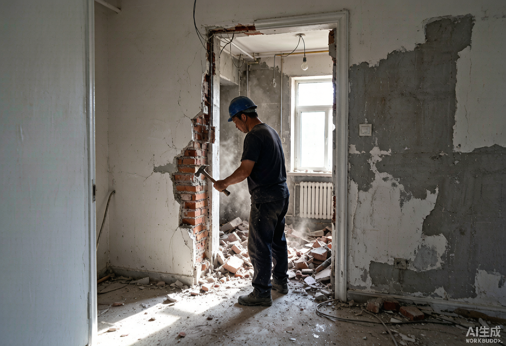
非承重墙拆除
非承重墙拆除（拆改核心）
怎么做拆前确认图纸与承重标识；门洞改造加过梁；垃圾装袋清运（问清上楼/外运费谁出）；拆完查原墙空鼓，空鼓处先处理。
为什么只拆允许拆的，保结构安全；空鼓先处理避免后期贴砖连锁脱落。
红灯：工长随手敲承重墙/配重墙——立刻叫停，违法且危及整栋楼。
拿不准是不是承重墙，以物业审批图纸为准，别信工长"这面能拆"。
4.2 水电工程（最易藏猫腻，重点盯）
基础原则：强电走顶或走地均可，走顶便于检修；横平竖直、转弯大弧弯（死弯后期抽不动线）；管内无接头，接头只在底盒；火进开、零进灯、地接金属外壳。回路：照明≥1.5mm²、插座≥2.5mm²、空调厨房即热单独 4mm²。强弱电间距≥30cm，交叉包锡箔。PPR 热熔 260±5℃、不缩径；左热右冷、上热下冷；排水坡度≥2% 防堵。
验收：给水打压 0.8MPa 保压 30min 压降≤0.05MPa；摇表≥0.5MΩ；拍照留管线图。
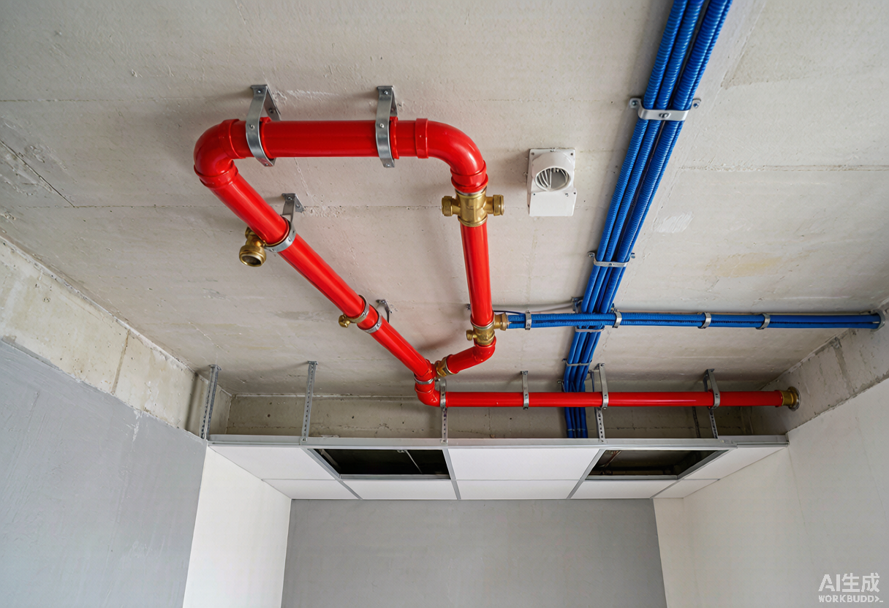
水电走顶敷设
走顶 vs 走地
怎么做管线布在吊顶内/沿顶（走顶），或开槽埋地（走地）。
为什么走顶漏水能及时发现、好修；走地省层高但漏了难发现、要砸地。建议给水走顶、电线可走地。
防宰：要求水电"走顶"并拍照留管线图，否则后期维修抓瞎。
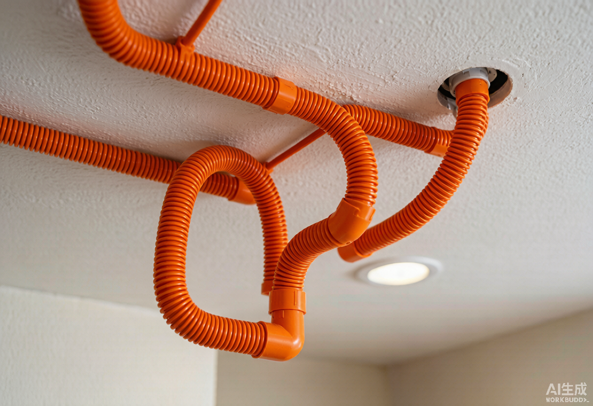
活线大弧弯
活线工艺（大弧弯）
怎么做整管穿线，转弯做大弧弯（≥120°），线管无死弯；管内无接头，接头只在底盒。
为什么日后单根电线可抽换，不用砸墙。死弯后期抽不动线，等于废管。
防宰：验收时抽查弯管是否顺滑，死弯要求重做。
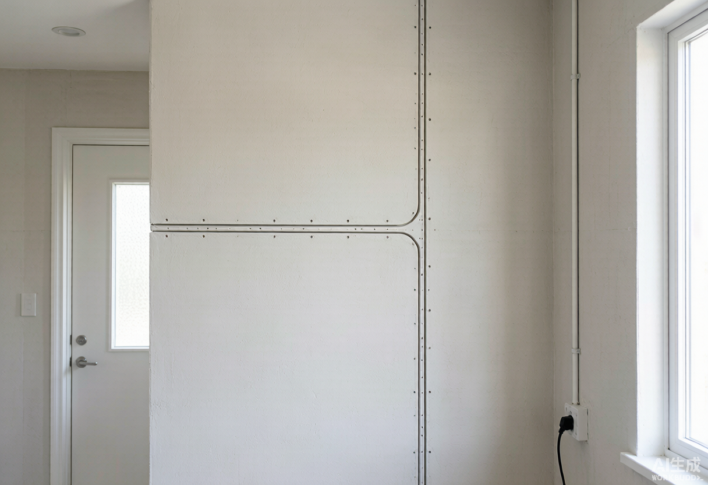
横平竖直排布
横平竖直 vs 点对点
怎么做沿墙角方正排布（横平竖直），或两点间最短距离排布（点对点）。
为什么横平竖直美观好定位、不易误打；点对点省料省钱。家装建议横平竖直更稳。
防宰：签约写清排布方式，避免"按实结算"时绕远多算米数。
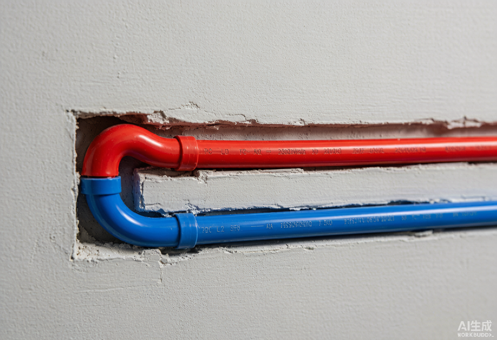
强弱电分槽
强弱电分管分槽
怎么做强电、弱电分不同管，间距≥30cm；交叉处包锡箔。
为什么防信号干扰，网线不掉速、音响不哼鸣。
防宰：弱电（网线/电视）被强行并管=偷工，必须分管。
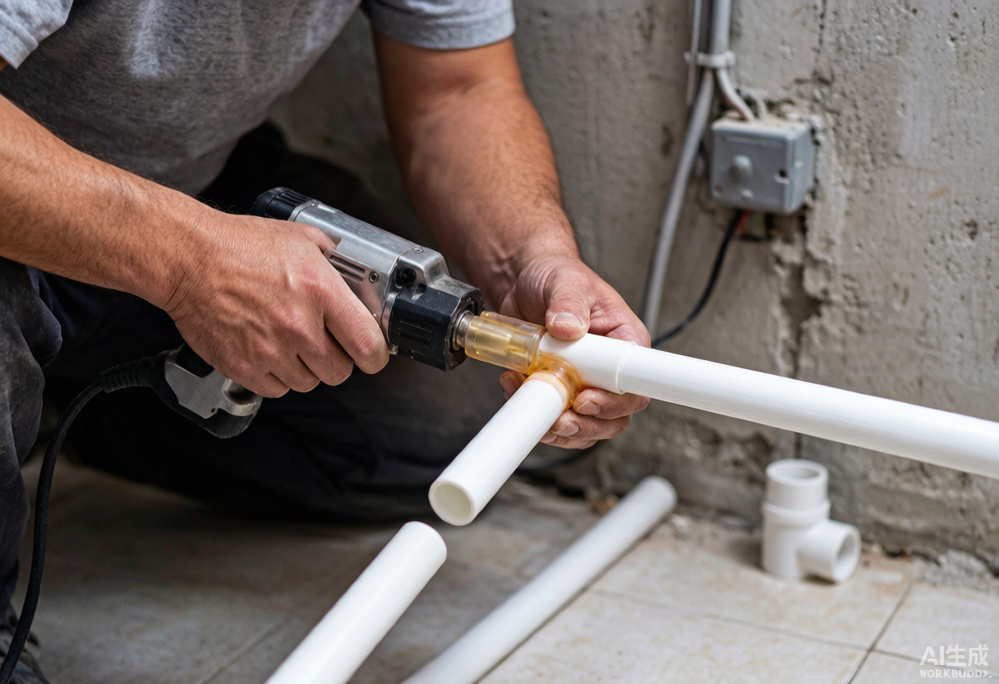
PPR 热熔承插
给水热熔承插
怎么做PPR 管 260±5℃ 热熔，插到底不旋转，自然冷却；左热右冷、上热下冷。
为什么熔接一体不漏；温度不对会缩径、堵塞或虚焊。
防宰：打压 0.8MPa 保压 30min 压降≤0.05MPa 才算合格，必须做。
水电"按实结算"最易爆——签约前估闭口上限；每米/明暗线/点位单价写清。
4.3 防水工程
材料：厨卫地面/管根用柔性（JS/聚氨酯，断裂延伸率≥80% 抗裂），墙面用刚性（贴砖不空鼓）。环保无氨低 VOC。
施工：基层平整坚固无明水无浮灰；管根阴阳角做圆弧+无纺布增强；横竖各刷一遍、总厚≥1.5mm；门槛石向外翻边；做保护层再贴砖。闭水 48h，淋浴区墙面返高≥1800mm、其余≥300mm。
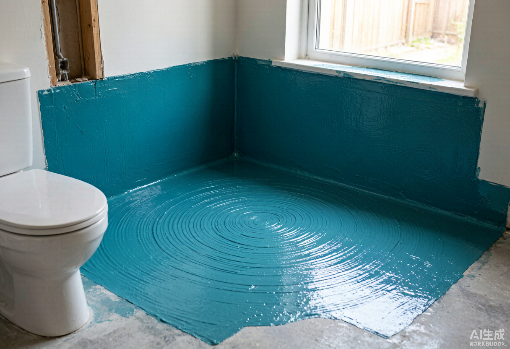
柔性防水涂刷
柔性涂刷（地面 / 管根）
怎么做JS 或聚氨酯滚涂，弹性好；管根阴阳角做圆弧+无纺布增强。
为什么抗基层微裂，管道周边不裂不漏（地面最该柔）。
防宰：地面用柔性、别被换成便宜刚性，否则一裂就漏。
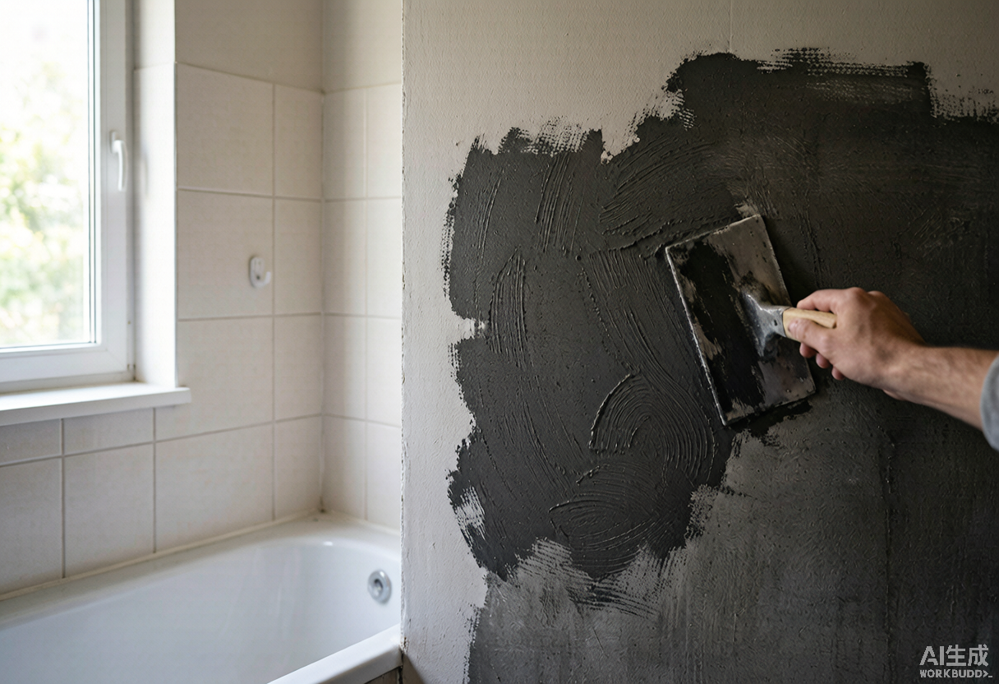
刚性防水涂刷
刚性涂刷（墙面）
怎么做墙面用刚性防水浆料涂刷。
为什么强度高、贴砖不空鼓；墙面不需要那么大弹性。
防宰：墙面别用柔性（易空鼓掉砖），地面别用刚性（易裂）。
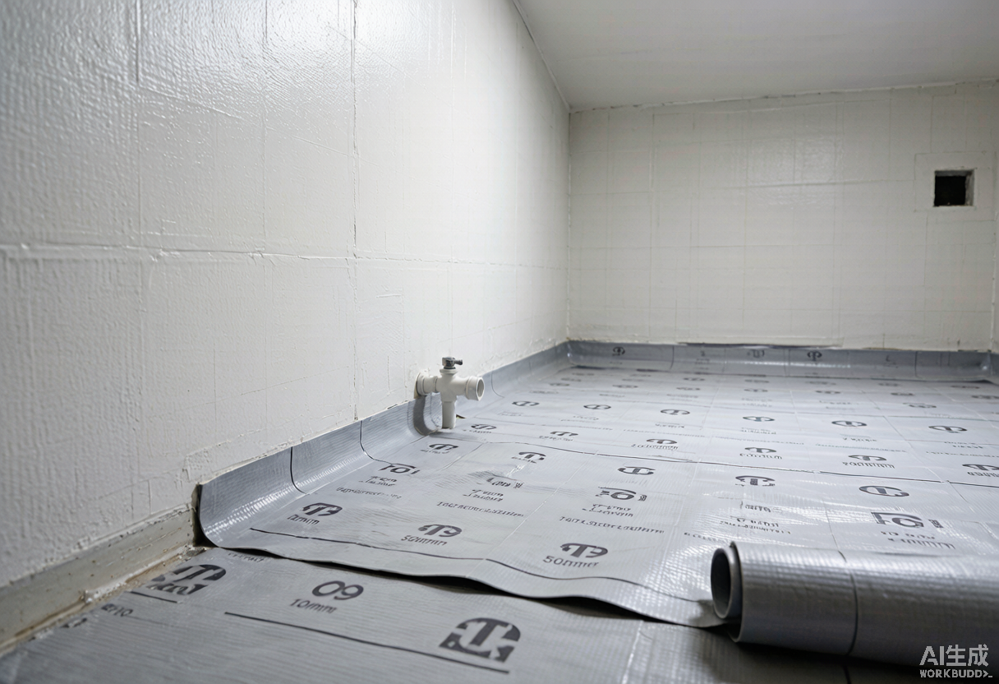
墙刚地柔
墙刚地柔（组合）
怎么做墙面刚性 + 地面柔性组合施工。
为什么兼顾贴砖牢固与抗裂防漏，是目前主流做法。
防宰：报价写清"墙刚地柔"，含糊一桶搞定=偷工。
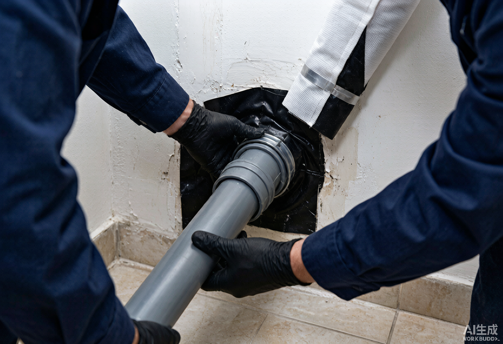
管根附加层
管根附加层
怎么做管道根部做圆弧+无纺布+多刷一遍。
为什么管道根部最易漏，重点加强才保险。
防宰：看管根有没有做加强层，没做=留隐患。
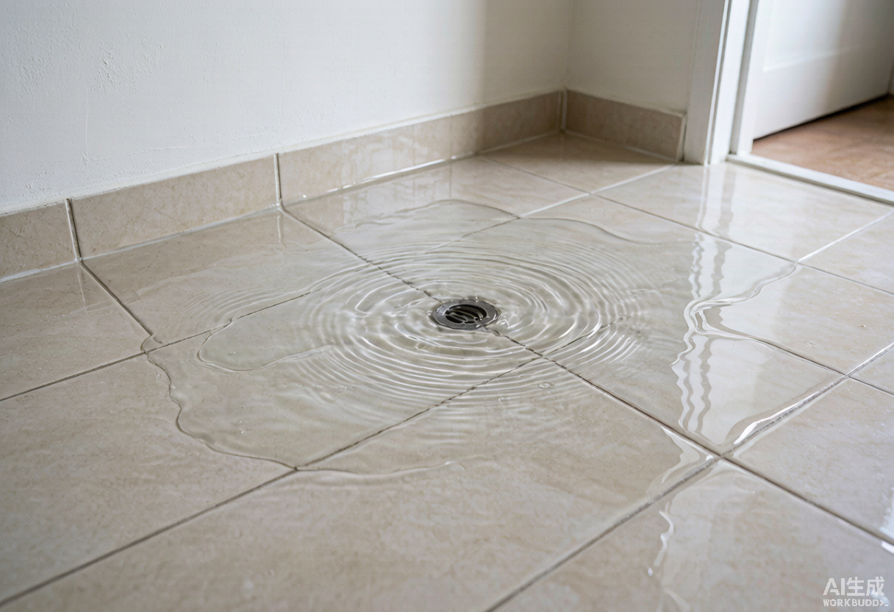
闭水试验 48h
闭水试验 48h
怎么做蓄水 48h，查楼下及邻墙无渗；淋浴墙返高≥1800mm、其余≥300mm，总厚≥1.5mm。
为什么唯一能证明不漏的验收手段，没做就贴砖=赌命。
防宰：不做闭水或只做 24h 的一律不签字，楼下漏水是你赔。
不做闭水或只做 24h 的一律不签字，楼下漏水是你赔。
4.4 泥瓦 / 瓷砖铺贴
选材：按砖选瓷砖胶（大砖/低吸水率用 C2TE 抗滑移）。施工：砖背清理、泡砖（瓷质砖可不泡）；齿形刮刀背涂+镘涂，砖背满浆无空鼓；留缝 2~3mm；地漏处做坡度最低点不积水；阳角倒角或压条。验收：空鼓率墙≤5%、地基本无空；美缝在砖干透无尘后做。
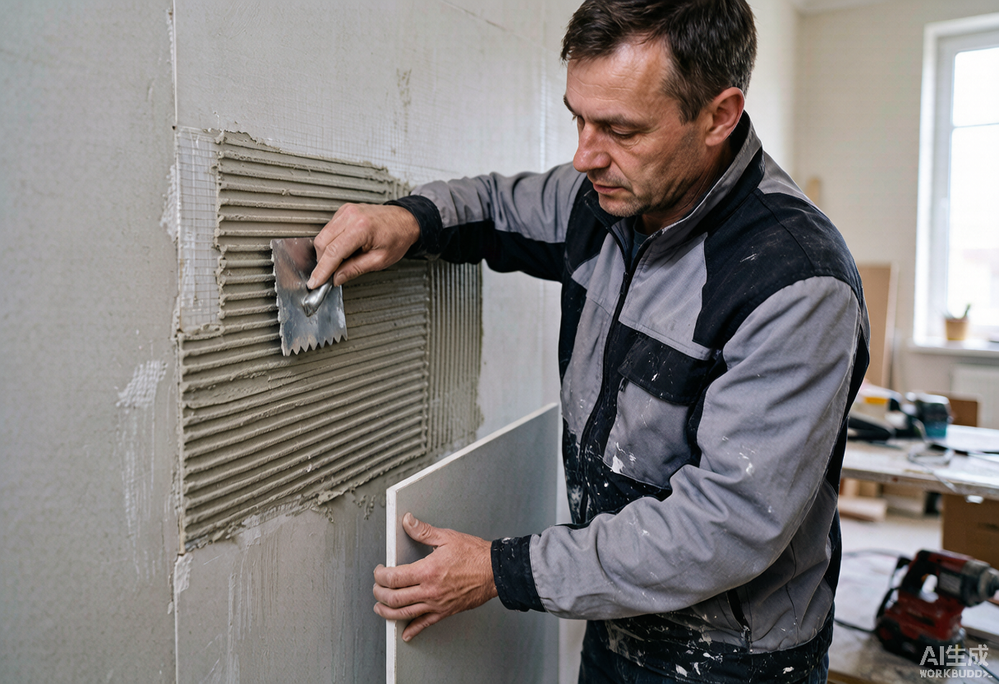
瓷砖薄贴（齿形刮刀）
薄贴（瓷砖胶）
怎么做齿形刮刀镘涂 C2TE 胶 + 大砖背胶，薄层粘贴。
为什么粘结强、空鼓低；大砖/低吸水率砖必用，厚贴必掉。
防宰："免费铺"常不含瓷砖胶——漏项变增项，写清。
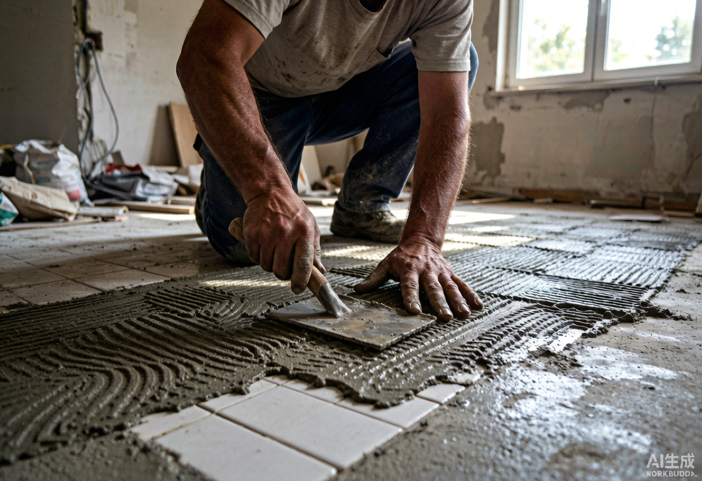
传统厚贴
传统厚贴（水泥砂浆）
怎么做现场拌水泥砂浆厚铺。
为什么便宜，但大砖/低吸水率砖易空鼓脱落，正被薄贴替代。
防宰：大砖还用厚贴=埋空鼓雷，坚持薄贴。
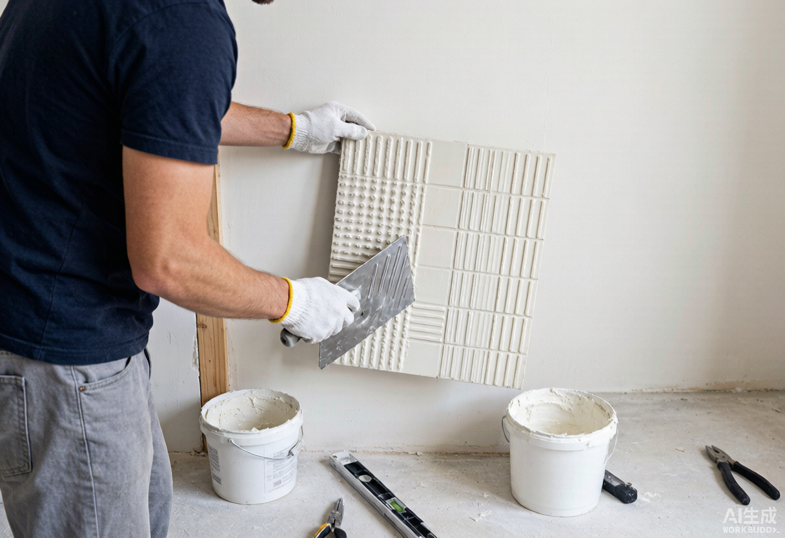
背涂满浆
背涂 + 镘涂满浆
怎么做砖背和墙面都刮胶、揉压排气，砖背满浆无空洞。
为什么避免"半空"，真正满粘，空鼓率大幅下降。
防宰：验收空鼓率墙≤5%、地基本无空，超了返工。
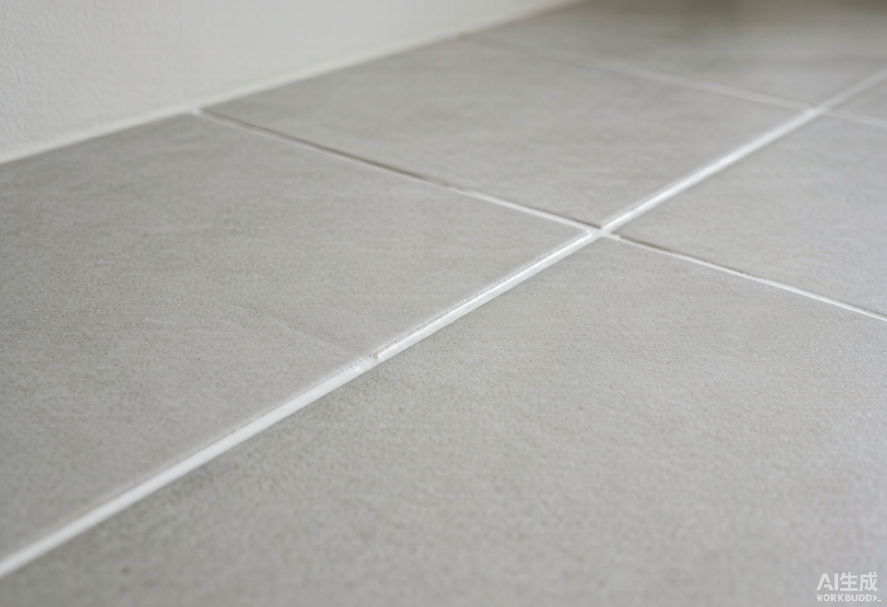
留缝美缝
留缝 + 美缝
怎么做留 2~3mm 缝，砖干透无尘后填美缝。
为什么热胀冷缩不崩边，防霉好打理。
防宰：不留缝=后期起拱崩边；美缝另算钱写清。
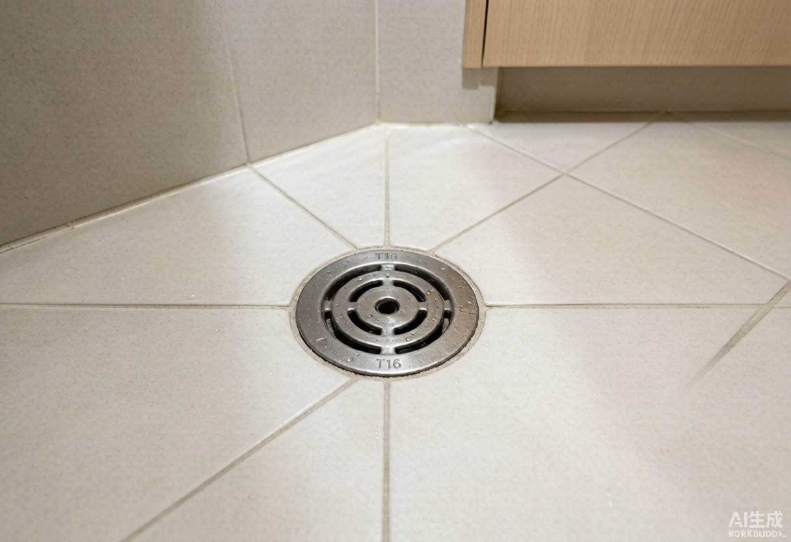
地漏回字坡
地漏回字坡
怎么做以地漏为最低点做坡度，回字形找坡。
为什么排水快不积水，脚下不湿。
防宰：倒瓶水测坡度，积水=返工。
"瓷砖免费铺"常不含瓷砖胶、倒角、美缝——漏项变增项，报价单写清。
4.5 木工 / 吊顶
龙骨：吊顶用轻钢龙骨（防潮防变形）优于木龙骨；主龙/吊杆间距按规范。细节：转角用 L 字整板/七字板防开裂；自攻钉沉入板面、钉帽防锈；接缝嵌缝膏+绷带；潮区用防潮石膏板。
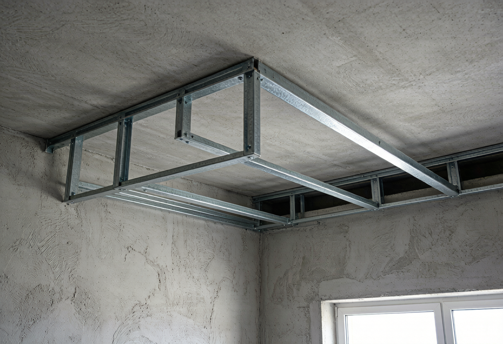
轻钢龙骨吊顶
轻钢龙骨吊顶
怎么做镀锌轻钢龙骨做骨架，主龙/吊杆间距按规范。
为什么防潮防蛀不变形，远优于木龙骨（木龙骨易受潮变形开裂）。
防宰：吊顶用木龙骨=后期变形裂缝，坚持轻钢。
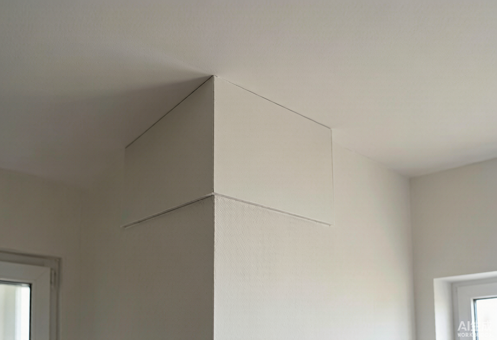
七字拐整板转角
七字拐 / 整板转角
怎么做转角用 L 形整板，不拼缝。
为什么避免应力集中开裂——顶面最常见裂缝就在这里。
防宰：转角用两块拼接=必裂，要求整板/L 板。
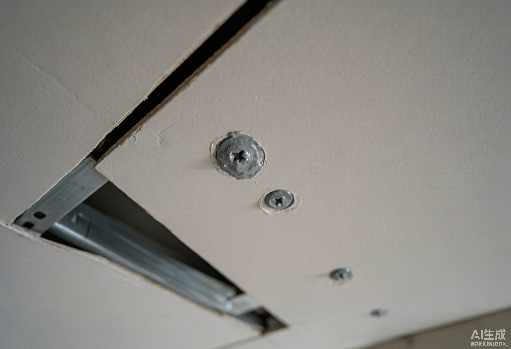
自攻钉沉头防锈
自攻钉沉头 + 防锈
怎么做钉帽沉入板面、点防锈漆；接缝嵌缝膏+绷带。
为什么防钉锈透、防崩边，裂缝先从钉眼起。
防宰：没点防锈漆=以后锈点外透，必须做。
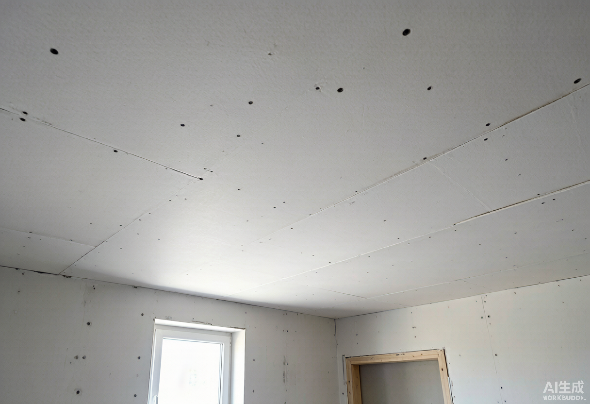
双层错缝石膏板
双层错缝
怎么做两层石膏板错开接缝。
为什么进一步降低开裂概率。
防宰：单层拼接缝正对=易裂，错缝更稳。
4.6 油漆 / 腻子
腻子：成品耐水腻子（N 型），内墙 Y 型；避劣质滑石粉+107 胶（有毒易裂）。施工：基层坚固无浮灰；一遍找平二遍收光，每遍干透再下遍防裂；打磨清浮粉；先底漆后面漆；阴阳角靠尺顺直。验收：无开裂起皮透底；阴阳角顺直；1.5m 正视无明显刷痕色差。
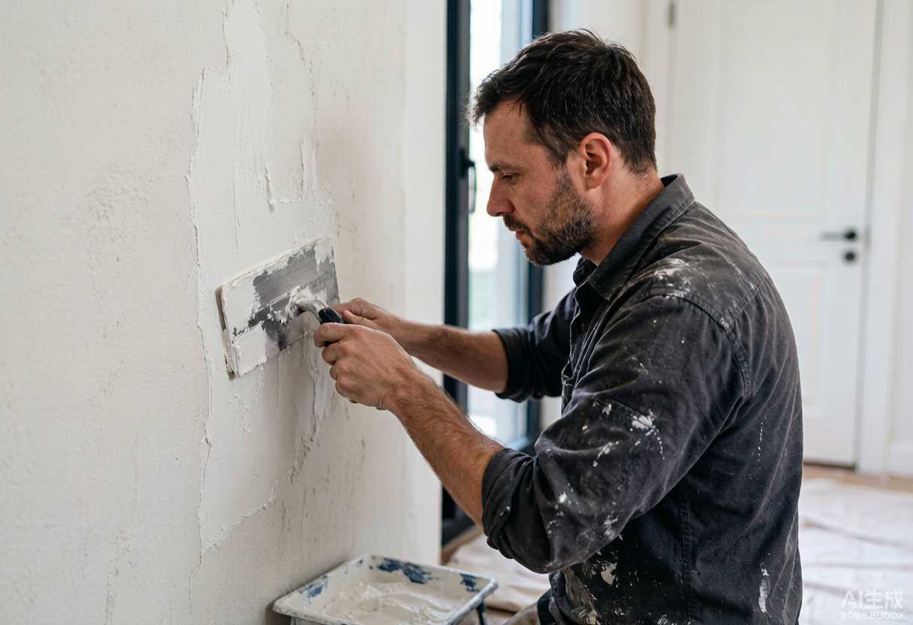
耐水腻子
耐水腻子（N 型）
怎么做用成品耐水腻子（N 型），内墙 Y 型；避劣质滑石粉+107 胶。
为什么厨卫阳台防潮不粉化脱落；劣质胶有毒易裂。
防宰：用现场拌滑石粉+胶=甲醛+开裂，拒绝。
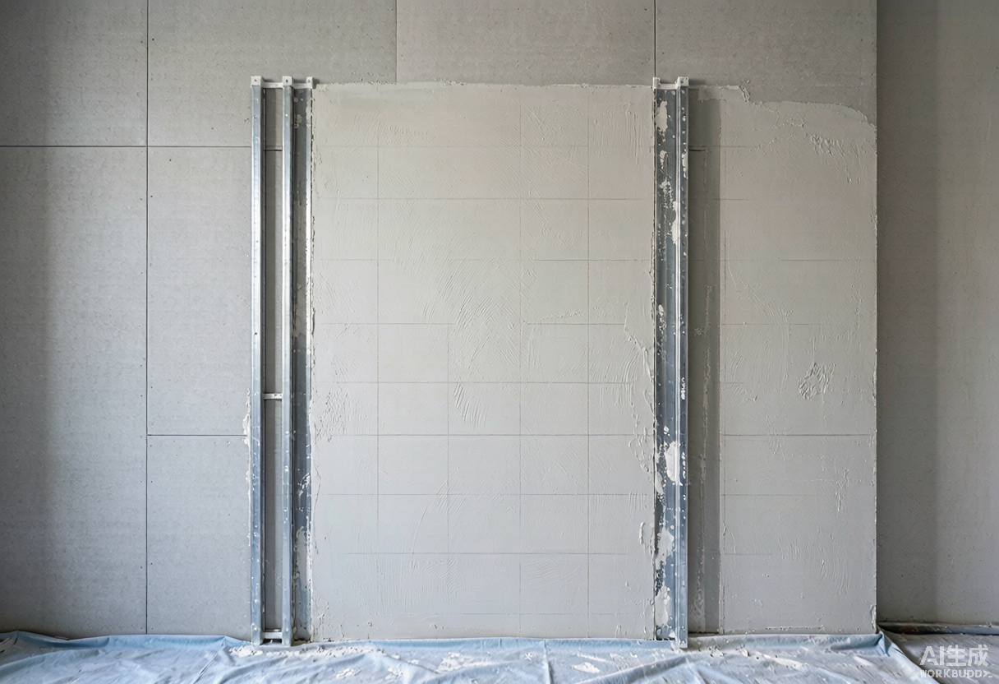
冲筋垂平
顺平 vs 垂平（冲筋）
怎么做顺平靠尺找平；垂平先冲筋再找平到垂直。
为什么垂平让定制柜严丝合缝；顺平便宜但可能有缝。
防宰：做全屋定制柜的墙建议垂平，否则柜墙露缝。
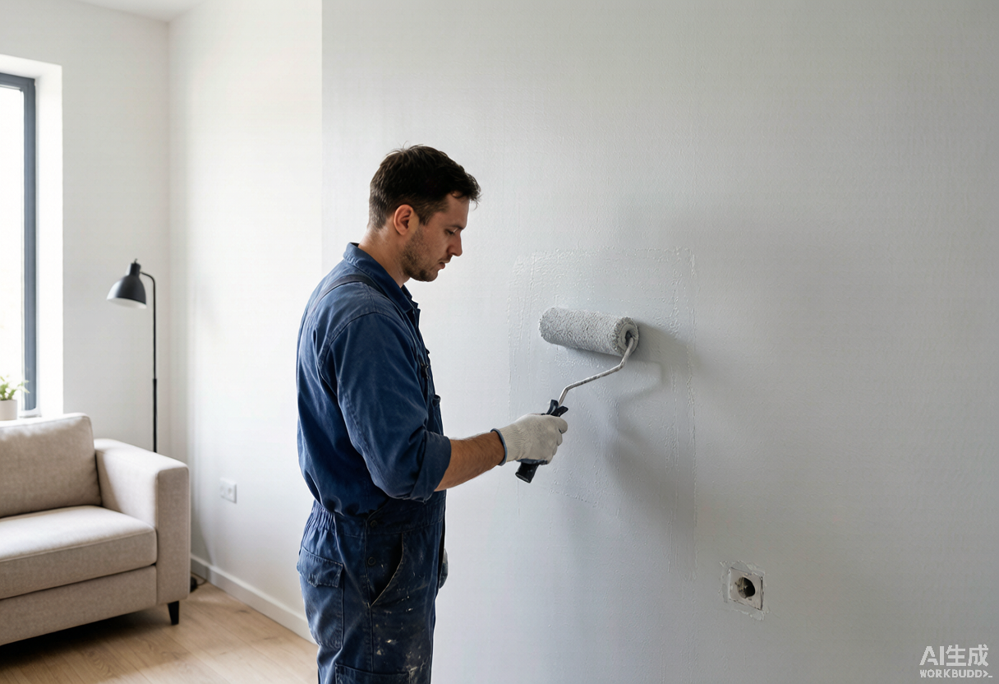
一底两面
一底两面
怎么做1 遍底漆 + 2 遍面漆，每遍干透再下遍。
为什么底漆封闭加固、省面漆、寿命长；不干透就刷=开裂。
防宰：只刷 1 遍面漆=遮不住、寿命短，坚持一底两面。
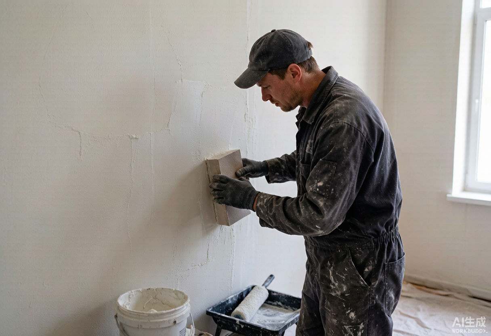
打磨找平
打磨
怎么做砂纸打磨平整、清浮粉，阴阳角靠尺顺直。
为什么去除批痕，漆面光滑；验收 1.5m 正视无明显刷痕色差。
防宰：不打磨直接刷=橘皮坑洼，必须打磨。
做全屋定制柜的墙面，建议做垂平（冲筋找平），否则柜与墙之间会露缝。
4.7 安装阶段（橱柜/卫浴/门/灯具）
油漆完成后进入安装：橱柜、浴室柜、卫浴洁具、木门、踢脚线、开关灯具、铝扣板吊顶。这阶段坑在"买时一个价、装时又一笔"和偷换配件。
橱柜安装
橱柜安装
怎么做柜体水平、台面拼接打磨、水盆/龙头打胶密封、下水管接好试水。
为什么台面不平门板不齐、下水没试水=日后漏水发霉。
防宰：台下盆工艺、阻尼铰链、拉篮是否含在报价；安装另收"高空/远程/上楼费"要提前问清。
卫浴安装
卫浴 / 洁具安装
怎么做马桶/台盆水平固定、下水密封打胶、角阀软管用好的、安装完试水无漏。
为什么角阀软管是爆裂高发点、密封不严=漏水发霉。
防宰："包安装"是否含角阀软管/打孔；劣质角阀是漏水元凶，必选优（见材料对比）。
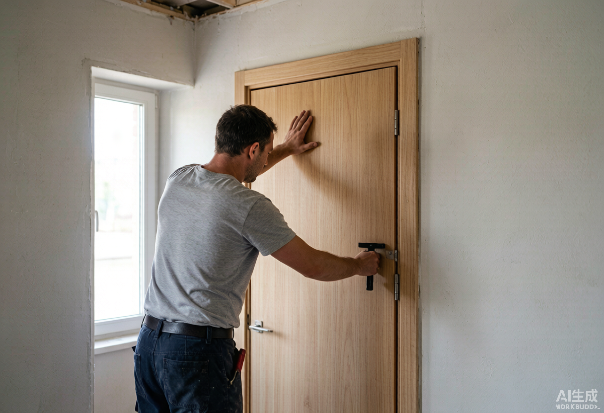
木门安装
木门 / 开关灯具安装
怎么做门套垂直、门缝均匀（3~4mm）、合页锁具牢固；开关灯具断电操作、接线牢固、面板水平。
为什么门缝不均关不严、合页松门下垂；接线松发热、面板歪影响安全美观。
防宰：门吸合页锁是否原厂；"免费安装"常不含辅料另算；灯具洁具"包安装"是否含打孔/加长螺丝/角阀软管，常另收。
4.8 成品保护 + 竣工验收
成品保护：施工中就要做——入户门包护、地面瓷砖铺保护膜、地漏堵盖防堵、暖气/燃气表罩好。保护不到位=划痕堵塞扯皮。
竣工验收自查：
- 墙面：无开裂、起皮、透底、明显色差，阴阳角顺直。
- 瓷砖：空鼓（墙≤5%、地无空）、无崩边、美缝完整、地漏坡度不积水。
- 水电：所有插座/灯/水龙头试用正常，配电箱标识清晰，留管线图。
- 门窗：开关顺、锁具牢、密封条贴合。
- 防水：闭水记录/楼下无渗。
- 环保：通风后自测或请机构检测（≤0.08mg/m³ 较安全）。
验收合格再付尾款；发现的问题列清单让对方限期整改，整改完再结清。
六、注意事项红绿灯（按阶段自查）
报价阶段 · 红灯
- 平米单价低得离谱——低价引流，差额靠增项补回。
- 只写项目不写量/工艺/品牌——模糊项=加钱空间。
- 打包价不含水电——"按实结算"最易爆，签约前要闭口上限。
签合同 · 红灯
- 开口合同——不写总价上限，增项无上限，拒签。
- 工期违约金缺失——拖延无成本，写清每延误一天赔偿。
- 保修期含糊——防水应≥5年、整体≥2年，口头承诺无效。
- 材料只写"国标""优质"——必须写死品牌+型号+系列。
施工阶段 · 红灯
- 水电不走顶/不拍照——后期维修抓瞎，要求留管线图。
- 防水只刷一遍/不做闭水——必须 48h 闭水。
- 以次充好——指定品牌却用假货，每批材料进场验收核对。
- 催你提前付下一笔——没验收不付款。
主材选购 · 红灯
- 大额定金不退——能少交则少交。
- "免费设计"套路——图被拿去别家用或绑高价主材。
- 环保等级造假——板材 E1 是底线，认检测报告。
- 套餐"升级"加价——签约写死套餐内含品牌型号，升级另算先报价。
五、材料对比评价（来自你的评测表 · 可搜索）
🛡️ 这些材料绝对不能省（必选优 · 共 18 项）
隐蔽工程、安全件、健康相关——这里省钱，后面全是眼泪。其余可在不降标前提下比价。
- 电线（强电 BV/BVR） —— 隐蔽工程，缩径/非标线长期负载发热，有起火隐患，且封墙后无法更换
- 给水管（PPR） —— 隐蔽工程，漏水会泡楼下+砸墙返工，材料与热熔工艺都省不得
- 排水管（PVC-U） —— 埋墙/沉箱，堵塞反味难修
- 网线（六类/超六类） —— 暗埋一次难换，差线速率上不去
- 防水涂料 —— 漏水源头，返工要撬砖，成本极高
- 瓷砖胶 —— 大砖/低吸水率砖不用好胶必空鼓脱落
- 腻子 —— 耐水与否决定厨卫阳台是否发霉脱落
- 底漆/乳胶漆 —— 封闭加固+环保，影响面漆寿命
- 角阀 —— 高压点位，劣质爆裂瞬间水漫金山
- 软管（编织软管/高压管） —— 厨卫高压软管，爆裂风险高
- 铝合金/断桥铝门窗 —— 密封/隔音/保温全看型材与胶条，省了住着吵又漏风
- 柜门铰链 —— 柜门天天开合，差的最先坏、门下垂
- 抽屉滑轨 —— 抽屉天天拉，差的需要顿挫异响
- 轻钢龙骨 —— 吊顶防裂防变形，木龙骨易受潮变形
- 大理石（窗台石/门槛石） —— 窗台门槛石易裂，差料一碰就断
- 石英石台面 —— 台面开裂、渗色、不耐高温
- 板材（生态板/多层板/OSB） —— 甲醛主要释放源，关系全家健康，E1是底线、ENF更优
- 玻璃胶/密封胶 —— 厨卫显眼处发霉变黄，且劣质胶释放甲醛
电线（强电 BV/BVR）
💡 看铜芯(无氧铜T1/T2，光亮无杂)、标称截面足平方不缩径、阻燃ZC/ZR级、3C认证、米数足
- 看铜芯(无氧铜T1/T2
- 光亮无杂)
- 标称截面足平方不缩径
- 阻燃ZC/ZR级
- 3C认证
- 米数足
- 市场仿冒多，须到授权网点或扫码验真
- 部分电商低价“非标”货混充，进场必须核对线身印字截面与3C标志，否则易买到缩径线
- 电商及五金店存在非授权串货，须核对防伪与授权
- 部分低端渠道以“起帆同厂”噱头售杂牌，进场须查线身印字与3C标志
- 仿冒较多须验真
| 品牌 | 定位/型号 | 优点 · 评价 | 缺点 · 注意 | 价位 | 等级 |
|---|---|---|---|---|---|
| 熊猫电线 | 一线阻燃BV线 | 熊猫是上海老牌国有线缆企业，导体采用高纯度无氧铜（T1/T2，铜纯度≥99.99%），电阻低、导电稳定、长期负载发热小；标称截面足平方不缩径，2.5平方实测得接近标称，避免虚标导致的过热隐患；绝缘层为阻燃聚氯乙烯（ZC级），离火自熄、烟密度低；通过国家3C强制认证，每卷米数足（100米）、负公差极小；线身印字清晰含厂名厂址便于溯源防伪；柔韧性好，反复弯折不易开裂，穿管顺畅；老化性能符合国标，使用寿命长。 | 作为一线品牌，单位价格高于津成、正泰等区域品牌约15%至25%，预算敏感时成本明显；产品线以家装BV/BVR聚氯乙烯线为主，特种电缆（矿物绝缘、低烟无卤阻燃B1级）需特别订货；市场仿冒多，须到授权网点或扫码验真；整卷购买为主，零裁损耗自担；部分电商低价“非标”货混充，进场必须核对线身印字截面与3C标志，否则易买到缩径线。 | 中高 | S |
| 起帆电缆 | 上海老牌BV线 | 起帆为上海上市线缆企业，导体采用无氧铜杆连铸连轧工艺，铜质纯净、电阻率稳定；截面控制严格，足平方不偷工，2.5/4平方实测得接近标称；绝缘为阻燃级PVC，氧指数达标、离火自熄；持有3C及全国工业产品生产许可证，批次可追溯；线身印字规范、米数足负公差小；产品涵盖BV、BVR及WDZ低烟无卤，家装工程通用；整卷导体直流电阻检测合格，长期负载温升可控；接头镀锡处理规范，明装暗敷均适用。 | 品牌溢价较津成、正泰等区域品牌高约10%至20%；低烟无卤WDZ系列单价明显高于普通BV；电商及五金店存在非授权串货，须核对防伪与授权；整卷购买零裁损耗自担；特种矿物绝缘电缆需订货；部分低端渠道以“起帆同厂”噱头售杂牌，进场须查线身印字与3C标志。 | 中高 | S |
| 远东电缆 | 上市线缆 | 远东为A股上市线缆龙头，导体用高纯度无氧铜，电阻率稳定、导电效率高；截面足平方、外径控制严，2.5/4平方实测达标不缩径；绝缘阻燃ZC级，机械强度与耐老化性好；通过3C及多项体系认证，检测报告齐全；家装BV/BVR与工程线同源产线，质量一致性高；导体柔韧、反复弯折不开裂，穿管顺畅；品牌溯源体系完善，扫码可验。 | 作为上市龙头，终端价高于普通区域品牌约20%至30%，整屋布线成本明显；零售网点不如熊猫、津成密集，部分城市需订货；以家装BV为主，B1级阻燃等特种线需指定；市场存在仿标，须官方渠道；整卷销售零裁损耗自担。 | · | S |
| 昆仑电线 | 北京老牌 | 昆仑是北京老牌国有线缆，导体采用无氧铜、铜色紫红发亮、纯度高；截面足平方不缩径，2.5平方实测得近标称；绝缘阻燃PVC、离火自熄；通过3C认证，米数足、负公差小；线身印字含厂名厂址可追溯；柔韧性好、耐弯折、穿管不伤皮；京津冀地区口碑扎实，工程与家装均常用；长期负载温升小、寿命长。 | 区域性强，北方以外网点少、购买不便、常需异地发货；价格高于普通品牌约15%至25%；产品线以BV/BVR为主，低烟无卤等需订货；仿冒较多须验真；整卷购买零裁损耗自担；电商低价非标混充，进场须核截面与3C。 | 中高 | S |
| 金杯电工 | 湖南本地线缆 | 金杯电工为湖南本土上市线缆企业，导体用高纯度无氧铜，电阻率稳定、发热小；截面足平方、外径达标不缩径；绝缘阻燃ZC级、耐老化；通过3C认证，米数足、印字规范；在湖南渠道密集、供货快、售后就近；BV/BVR与本地工程线同源，质量稳定；柔韧耐弯折、穿管顺畅；性价比高于熊猫、远东等一线约10%至15%。 | 品牌全国声量弱于熊猫、远东，出湘认可度一般；产品线以常规BV/BVR为主，B1阻燃等特种线需订货；市场存在贴牌杂牌，须官方授权；整卷购买零裁损耗自担；电商非标货混充，进场须核截面与3C标志。 | 中 | S |
| 德力西电气 | 国产电气 | 德力西为国产电气知名品牌，线缆导体采用无氧铜，截面基本达标；绝缘阻燃PVC，离火自熄；通过3C认证，渠道广、门店多、购买便捷；价格亲民，性价比高，适合预算敏感的全屋布线；线身印字规范、米数较足；家装BV/BVR供应稳定、补货快；配套开关插座同源，采购省心。 | 线缆非其最核心品类，导体纯度与截面一致性略逊一线（熊猫/远东），高端项目建议抽测直流电阻；阻燃等级多为ZC常规，低烟无卤B1需特别订货；部分低端渠道存非标串货，须核3C与印字；整卷零裁损耗自担；长期重载温升表现不如一线，宜留余量。 | 中 | A |
| 正泰电工 | 国产电气 | 正泰为国产电气龙头，线缆导体用无氧铜，截面控制尚可、基本足平方；绝缘阻燃PVC、离火自熄；通过3C认证，网点极广、购买方便；价格实惠、性价比突出；BV/BVR供应稳定、补货快；与自家断路器、漏保配套采购省心；线身印字规范、米数较足。 | 线缆并非其主攻品类，导体纯度与一致性较熊猫/远东有差距，建议进场抽测；阻燃以ZC常规为主，B1级需订货；低端渠道非标货多，须验3C与防伪；整卷零裁损耗自担；重载长期温升略高，宜选大一号截面留余量。 | 中低 | A |
| 宝胜股份 | 央企线缆 | 宝胜为央企（中航）旗下上市线缆企业，导体用高纯度无氧铜，电阻率稳定；截面足平方、控制严；绝缘阻燃等级高、耐温耐老化；通过3C及多项体系认证，检测报告齐全；产品覆盖家装BV/BVR至特种装备电缆，质量体系严谨；导体柔韧、穿管顺畅；工程背景强，一致性好。 | 家装零售渠道不如熊猫/津成密集，购买常需订货或走工程渠道；终端价偏高，约高于区域品牌20%至30%；以BV/BVR家装线为主，B1阻燃等需指定；品牌偏工程属性，家装认知度一般；整卷销售零裁损耗自担。 | 中高 | A |
| 亨通光电 | 上市线缆 | 亨通为A股上市线缆企业，导体采用无氧铜，纯度较高、电阻率稳定；截面控制较好、基本足平方；绝缘阻燃PVC、离火自熄；通过3C认证，检测报告齐全；光电缆一体，弱电强电协同供应；BV/BVR质量稳定、供应足；华东渠道较好、补货快；线身印字规范、米数较足。 | 强电家装线非其最核心业务（主业光缆），一线口碑弱于熊猫/远东；导体一致性与截面余量略逊，建议抽测；阻燃以ZC常规为主；低端渠道有串货，须核3C；整卷零裁损耗自担；B1级等特种线需订货。 | 中高 | A |
| 津成电线 | 区域品牌 | 津成为区域知名线缆品牌，导体采用无氧铜，截面基本达标、性价比较高；绝缘阻燃PVC、离火自熄；通过3C认证，在华中/西南渠道广、价格实惠；BV/BVR供应稳定、购买方便；线身印字规范、米数较足；适合大面积布线的成本控制；柔韧度尚可、常规穿管无碍。 | 导体纯度与截面一致性弱于熊猫/远东/金杯，建议进场抽测直流电阻；阻燃以ZC常规为主，低烟无卤需订货；区域外网点少、售后偏弱；市场仿冒与非标货较多，须核3C与印字防伪；整卷零裁损耗自担；重载长期温升表现一般，宜留截面余量。 | 中低 | A |
| 恒飞电线套餐 | 湖南本地（装修公司提供） | 恒飞是湖南本土老牌线缆，导体用无氧铜，截面达标、足平方不严重缩径；绝缘阻燃ZC级、离火自熄；通过3C认证，在湖南网点密集、供货快、本地售后便利；BV/BVR性价比高，适合整屋控制预算；线身印字规范、米数较足；与本地装修公司配套成熟，补货及时。 | 品牌全国声量有限，出湘认可度一般；导体纯度与一致性略逊一线（熊猫/金杯），建议抽测；阻燃以ZC常规为主，B1级需订货；市场存在贴牌，须官方授权；整卷零裁损耗自担；电商非标混充，进场须核截面与3C；重载温升宜留余量。 | 中 | B+ |
怎么选：选BV单股硬线（穿管固定）或BVR多股软线（灵活好接）；认无氧铜（紫红光亮、反复弯折不断）；标称截面足平方（照明1.5/插座2.5/空调厨房4平方不缩径）；阻燃ZC级、3C认证；查米数足（100米±0.5米）；核对防伪喷码；火零地分色（红/蓝/黄绿）。
怎么用（施工/验收）：穿PVC阻燃管暗敷、管内无接头（接头只允许在底盒）；火线进开关、零线进灯头、地线接金属外壳/插座E端；大功率（空调、厨房、即热）单独4平方回路；走线横平竖直、转弯大弧弯；完工用摇表测绝缘≥0.5MΩ；留管线走向图备查。
参考标准 / 关键参数：GB/T 5023 聚氯乙烯绝缘电缆；GB 50303 建筑电气施工质量验收；阻燃ZC（成束燃烧C级）；CCC强制认证；导体截面偏差≤±1%；绝缘电阻摇表≥0.5MΩ；回路截面积：照明≥1.5、普通插座≥2.5、空调≥4 mm²。
📌 一句话：认准国标达标 + 正规品牌 + 防伪可查 + 检测报告；价格异常低于市场价的慎入，多为非标或仿冒。
给水管（PPR）
💡 看系列(S3.2/S4，壁厚≥2.8mm)、原料(北欧化工/巴塞尔纯料)、热熔不缩径不堵塞、耐压(≥2.0MPa)、50年质保、认防伪
- 看系列(S3.2/S4
- 壁厚≥2.8mm)
- 原料(北欧化工/巴塞尔纯料)
- 热熔不缩径不堵塞
- 耐压(≥2.0MPa)
- 50年质保
- 认防伪
- 市场仿冒多，须扫码验真与官方授权
- 热熔须由认证师傅按温度时间操作，否则易缩径
- 部分系列仅走经销，电商非标货混充
- 仿进口“皮尔萨”杂牌多，须核对报关与防伪
- 仿冒“德国阔盛”杂牌多，须核报关与防伪
| 品牌 | 定位/型号 | 优点 · 评价 | 缺点 · 注意 | 价位 | 等级 |
|---|---|---|---|---|---|
| 伟星管业 | 国内PPR领军 | 伟星是国内PPR管道领军品牌，原料采用北欧化工（Borstar RA150E）纯料，不掺回收料；S3.2/S4系列壁厚达标（S3.2壁厚≥2.8mm），承压≥2.0MPa；热熔承插后内壁不缩径、不堵塞，通水顺畅；拥有50年质保与“伟星管+伟星管件”双质保，漏损赔付；产品通过卫生许可，涉水卫生安全；原料纯、透光率低，不易滋生青苔。 | 作为一线，单价高于联塑/日丰等约20%至35%，整屋成本明显；须搭配伟星专用管件，混用他牌易漏；市场仿冒多，须扫码验真与官方授权；热熔须由认证师傅按温度时间操作，否则易缩径；整管零裁损耗自担；部分系列仅走经销，电商非标货混充。 | 中高 | S |
| 皮尔萨（Pilsa） | 土耳其进口 | 皮尔萨为土耳其进口PPR品牌，原料用北欧化工纯料，不掺回收；壁厚达标、承压高（≥2.0MPa）；热熔后不缩径、连接可靠；进口线卫生等级高、涉水安全；原料纯、透光低、抗老化；色系稳定、外观质感好；管件配合精度高，长期耐压不渗；质保体系完善。 | 进口价高，约为国产一线的1.5至2倍，预算压力明显；国内渠道集中于一二线城市，部分区域须订货；须配原厂管件，混用易漏；仿进口“皮尔萨”杂牌多，须核对报关与防伪；热熔需专业师傅；运输与仓储成本高，零裁损耗自担。 | 高 | S |
| 阔盛（Aquatherm） | 德国进口 | 阔盛是德国原装PPRCT（玻纤复合）管道开创者，原料为北欧化工纯料，食品级、涉水安全；管壁厚实、承压高、热膨胀低（玻纤层）；热熔不缩径、连接可靠；耐温耐压优于普通PPR，高温热水长期稳定；管件精度高、密封好；原装进口、检测报告齐全；寿命长、质保完善。 | 德系进口价高，约为国产一线2倍左右，成本高；国内网点有限，常需订货；须用原厂管件，混用风险大；仿冒“德国阔盛”杂牌多，须核报关与防伪；热熔须认证师傅；玻纤层切割要求高；零裁损耗自担；购买门槛与售后半径大。 | 高 | S |
| 洁水（Aliaxis） | 欧洲进口 | 洁水为欧洲（Aliaxis集团）原装PPR管道，原料北欧化工纯料、不掺回收；壁厚达标、承压高；热熔连接不缩径、密封可靠；涉水卫生等级高、通过国际认证；原料纯、抗老化、透光低；管件配合精密、长期耐压不渗；原装进口、质检报告齐全；系统配套完整。 | 进口定位价高，高于国产一线约1倍，预算压力大；渠道集中、部分区域须订货；须配原厂管件；市场存在贴牌仿品，须核报关与防伪；热熔需专业师傅；运输仓储成本高；零裁损耗自担；本地售后响应半径大。 | 高 | S |
| 保利（爱康） | 国内知名PPR | 保利（爱康）为国内知名PPR品牌，原料采用北欧化工纯料，不掺回收；S3.2/S4系列壁厚达标（≥2.8mm）、承压≥2.0MPa；热熔后内壁不缩径、通水顺畅；通过涉水卫生许可，水质安全；原料纯、透光率低、不易生苔；管件配合好、连接可靠；拥有较长质保、渠道广、购买方便；性价比优于纯进口。 | 价格高于联塑/日丰等约15%至25%；须配原厂管件，混用易漏；市场仿冒多，须核防伪与授权；热熔须规范操作，否则缩径；部分电商非标货混充；整管零裁损耗自担；B1级或特殊系列需订货；售后以经销为主。 | 中高 | S |
| 日丰管 | 广东知名 | 日丰为广东知名管道品牌，PPR原料采用合格纯料，壁厚基本达标（S3.2约≥2.8mm）；承压满足家装；热熔连接较可靠、不严重缩径；渠道极广、门店多、购买与补货方便；价格适中、性价比高；通过涉水卫生许可；配套管件齐全；售后服务网点多。 | 原料等级与壁厚余量略逊伟星/进口一线，建议进场抽测壁厚；热熔须规范，否则易缩径堵塞；市场仿冒极多，须核防伪与授权；部分低端渠道存非标管，须查印字；须配原厂管件；整管零裁损耗自担；长期高温高压表现一般。 | 中 | A |
| 金德管业 | 东北老牌 | 金德为东北老牌管道企业，PPR原料采用合格纯料，壁厚基本达标；承压满足家装；热熔连接可靠；通过涉水卫生许可；北方渠道广、购买方便；价格适中；管件配套齐全；品牌历史长、认知度高；质保体系较完善。 | 近年声量下降，部分区域网点收缩、补货慢；原料与壁厚余量略逊一线，建议抽测；热熔须规范，否则缩径；仿冒多须验真；须配原厂管件；整管零裁损耗自担；华南渠道偏弱；电商非标混充。 | 中 | A |
| 中财管道 | 浙江管道 | 中财为浙江知名管道品牌，PPR原料合格纯料，壁厚基本达标；承压满足家装；热熔连接可靠、不严重缩径；通过涉水卫生许可；渠道广、门店多、补货快；价格适中、性价比高；管件配套全；工程与家装均常用；质保较完善。 | 原料等级与壁厚余量略逊伟星/进口，建议抽测；热熔须规范，否则缩径；仿冒多须核防伪授权；须配原厂管件；整管零裁损耗自担；低端渠道非标货混充；长期高温高压表现一般；部分系列仅经销。 | 中 | A |
| 联塑 | 管道巨头 | 联塑为国内管道巨头，PPR原料采用合格纯料，壁厚基本达标；承压满足家装；产能大、渠道极广、购买与补货极方便；价格亲民、性价比突出；通过涉水卫生许可；管件配套全；工程家装均覆盖；供货稳定、断货风险低。 | 家装线定位中端，原料与壁厚余量略逊伟星/进口一线，建议抽测；热熔须规范，否则缩径；市场仿冒极多，须核防伪授权；须配原厂管件；整管零裁损耗自担；低端面易混非标；品牌家装质感弱于专攻PPR的伟星。 | 中低 | A |
| 公元管道 | 浙江知名 | 公元为浙江知名管道品牌，PPR原料合格纯料，壁厚基本达标；承压满足家装；热熔连接可靠；通过涉水卫生许可；华东渠道广、购买方便；价格适中、性价比高；管件配套全；工程家装常用；质保较完善。 | 原料与壁厚余量略逊一线，建议进场抽测；热熔须规范，否则缩径；仿冒多须验真；须配原厂管件；整管零裁损耗自担；区域外网点一般；电商非标混充；长期高温表现一般。 | 中 | A |
| 荷兰威文套餐 | 欧洲进口（装修公司提供） | 荷兰威文（Wavin）为欧洲原装进口PPR品牌，原料北欧化工纯料、不掺回收；壁厚厚实（常见S3.2壁厚≥2.8mm甚至更厚）、承压高；热熔后不缩径、连接可靠；涉水卫生等级高、通过欧盟认证；原料纯、抗老化、透光低；管件精度高、密封好；原装进口、检测报告齐全；系统配套完整。 | 进口定位价高，高于国产一线约30%至60%，预算压力大；国内渠道有限、常须订货；须配原厂管件，混用易漏；仿进口杂牌多，须核报关与防伪；热熔须认证师傅；运输仓储成本高；零裁损耗自担；本地售后半径大、响应慢。 | 高 | A |
怎么选：选S3.2/S4系列（承压≥2.0MPa）；认北欧化工/巴塞尔纯料（透明白料、不发暗黄）；管壁厚≥2.8mm（S3.2）；热熔不缩径不堵塞；认防伪与50年质保卡；热水用PN2.0以上；查色条（蓝冷红热）；避回收料（发黄、刺鼻）。
怎么用（施工/验收）：热熔承插温度260℃±5、插接深度足且不旋转；左热右冷、上热下冷；走顶不走地便于检修；安装后打压0.8MPa保压30min压降≤0.05MPa；固定管卡防下垂；完工留管路图；热熔后须自然冷却再通水。
参考标准 / 关键参数：GB/T 18742 冷热水用PP-R；GB 50242 给排水验收；S系列对应压力等级；热熔温度260±10℃；水压试验0.6~1.0MPa、10min压降≤0.05MPa；公称压力PN≥2.0MPa（热水）。
📌 一句话：认准国标达标 + 正规品牌 + 防伪可查 + 检测报告；价格异常低于市场价的慎入，多为非标或仿冒。
排水管（PVC-U）
💡 看壁厚(国标SN标准达标)、抗冲击(落锤不裂)、内壁光滑、胶粘承插严密、阻燃
- 看壁厚(国标SN标准达标)
- 抗冲击(落锤不裂)
- 内壁光滑
- 胶粘承插严密
- 阻燃
- 市场仿冒极多，须核防伪与印字
- 部分低端渠道存非标薄壁管，进场须测壁厚
- 仿冒多须验真
- 市场非标薄壁管混充，进场测壁厚
- 低端面质感一般
| 品牌 | 定位/型号 | 优点 · 评价 | 缺点 · 注意 | 价位 | 等级 |
|---|---|---|---|---|---|
| 联塑PVC | 管道龙头 | 联塑PVC-U排水管采用合格PVC树脂，壁厚达到国标SN系列要求（如SN8），抗冲击韧性强，落锤冲击不易开裂；内壁光滑、排水顺畅不易挂污堵塞；管材与管件配合精度高，胶粘承插严密不渗；阻燃性能好；原料稳定、抗老化，埋墙暗敷长期不脆裂；产能大、渠道极广、购买补货极方便；价格亲民、性价比高；工程与家装均常用。 | 家装定位中端，壁厚余量与高端线相当但原料等级略逊；胶粘须用配套PVC胶水并按工艺，否则易渗漏；市场仿冒极多，须核防伪与印字；管件须同品牌配套；整管零裁损耗自担；部分低端渠道存非标薄壁管，进场须测壁厚；长期暴晒易老化，宜暗敷。 | 中低 | S |
| 伟星PVC | 综合管道 | 伟星PVC-U排水管原料合格、壁厚达标（SN系列），韧性好、落锤不裂；内壁光滑排水畅；管件配合精密、胶粘承插可靠不渗；阻燃；抗老化、暗敷寿命长；与伟星PPR同源品控，质量稳定；渠道广、购买方便；配套管件齐全；质保较完善；家装工装均适用。 | 价格高于联塑/日丰约15%至25%；胶粘须规范并用同牌胶水，否则渗漏；须配原厂管件；仿冒多须验真；整管零裁损耗自担；市场非标薄壁管混充，进场测壁厚；低端面质感一般。 | 中 | S |
| 中财PVC | 浙江管道 | 中财PVC-U排水管壁厚达国标SN要求，韧性好、抗冲击不裂；内壁光滑、排水顺畅；管件配合精度高、胶粘承插严密不渗；阻燃；抗老化、暗敷稳定；浙江渠道广、补货快；价格适中、性价比高；工程家装常用；质保较完善；规格齐全。 | 原料等级与壁厚余量略逊一线专攻排水者，建议抽测壁厚；胶粘须规范、配同牌胶水；仿冒多须验真；须配原厂管件；整管零裁损耗自担；区域外网点一般；非标薄壁管混充，进场测壁厚。 | 中 | S |
| 公元PVC | 浙江知名 | 公元PVC-U排水管原料合格、壁厚达标（SN系列），韧性强、落锤不裂；内壁光滑排水畅；管件配合好、胶粘承插可靠；阻燃；抗老化、暗敷寿命长；华东渠道广、购买方便；价格适中、性价比高；工程家装常用；质保较完善。 | 原料与壁厚余量略逊一线，建议进场抽测；胶粘须规范、配同牌胶水；仿冒多须验真；须配原厂管件；整管零裁损耗自担；区域外网点一般；电商非标混充；长期暴晒易老化。 | 中 | S |
| 顾地PVC | 上市管道 | 顾地为上市管道企业，PVC-U排水管壁厚达国标、韧性好、抗冲击不裂；内壁光滑排水畅；管件配合精度高、胶粘承插严密；阻燃；抗老化；质量体系严谨、工程家装均用；渠道较广；价格适中；规格齐全；质保较完善。 | 家装声量弱于联塑/伟星，部分区域补货慢；原料与壁厚余量略逊，建议抽测；胶粘须规范、配同牌胶水；仿冒多须验真；须配原厂管件；整管零裁损耗自担；非标薄壁管混充，进场测壁厚。 | 中 | S |
| 保利PVC | 国内知名 | 保利（爱康）PVC-U排水管原料合格、壁厚基本达标；韧性较好、常规冲击不裂；内壁较光滑、排水尚畅；管件配套齐全、胶粘承插较可靠；阻燃；价格适中、性价比高；渠道广、购买方便；与保利PPR同源品控；质保较完善。 | 壁厚余量略逊S级（联塑/伟星），建议抽测；胶粘须规范、配同牌胶水，否则渗漏；须配原厂管件；市场仿冒多须验真；整管零裁损耗自担；非标薄壁管混充，进场测壁厚；长期暴晒老化快，宜暗敷。 | 中低 | A |
| 金德PVC | 东北老牌 | 金德PVC-U排水管原料合格、壁厚基本达标；韧性尚可、常规冲击不裂；内壁较光滑；管件配套齐全、胶粘承插较可靠；阻燃；北方地区渠道广、购买方便；价格适中；品牌历史长；质保较完善。 | 近年声量下降、部分区域补货慢；壁厚余量略逊一线，建议抽测；胶粘须规范、配同牌胶水；仿冒多须验真；须配原厂管件；整管零裁损耗自担；非标薄壁管混充，进场测壁厚；华南渠道偏弱。 | 中低 | A |
| 日丰PVC | 广东品牌 | 日丰PVC-U排水管原料合格、壁厚基本达标；韧性较好、常规冲击不裂；内壁较光滑、排水尚畅；渠道极广、门店多、购买补货方便；价格适中、性价比高；管件配套齐全；质保较完善；家装常用。 | 壁厚余量略逊一线，建议抽测；胶粘须规范、配同牌胶水，否则渗漏；市场仿冒极多须验真；须配原厂管件；整管零裁损耗自担；非标薄壁管混充，进场测壁厚；长期暴晒易老化，宜暗敷。 | 中低 | A |
| 雄塑PVC | 广东品牌 | 雄塑PVC-U排水管原料合格、壁厚基本达标；韧性尚可、常规冲击不裂；内壁较光滑；广东渠道广、价格实惠、性价比高；管件配套齐全；购买方便；质保一般但可用；家装工程均覆盖。 | 区域性强（华南为主），出区网点少、售后弱；壁厚余量偏小，建议抽测；胶粘须规范、配同牌胶水；仿冒多须验真；须配原厂管件；整管零裁损耗自担；非标薄壁管混充，进场测壁厚。 | 中低 | A |
| 川路PVC | 四川老牌 | 川路PVC-U排水管为四川老牌，原料合格、壁厚基本达标；韧性尚可；内壁较光滑；西南渠道广、价格低、性价比高；管件配套齐全；购买方便；质保一般但可用；本地工程家装常用。 | 区域性强（西南为主），外区网点少、售后弱；壁厚余量偏小，建议抽测；胶粘须规范、配同牌胶水；仿冒多须验真；须配原厂管件；整管零裁损耗自担；非标薄壁管混充，进场测壁厚。 | 中低 | A |
| 中财排水管套餐 | 浙江管道（装修公司提供） | 中财排水管为装修公司套餐提供的PVC-U排水方案，原料合格、壁厚基本达国标SN要求；韧性较好、常规冲击不裂；内壁较光滑、排水尚畅；管件配合精度较高、胶粘承插较可靠；阻燃；渠道成熟、与施工队配套好、补货及时；价格含在套餐内、整体可控。 | 定位中端，壁厚余量与一线（联塑/伟星）相比略逊，建议进场抽测壁厚；胶粘须规范并用同牌胶水，否则易渗漏；须配中财原厂管件；市场仿冒多须验真；整管零裁损耗自担；非标薄壁管混充风险，须核对印字与壁厚；长期暴晒易老化，宜暗敷。 | 中 | B+ |
怎么选：选国标SN级壁厚（建筑排水依管径壁厚≥2.0~3.2mm）；抗冲击（落锤不裂）；内壁光滑不结垢；胶粘承插严密；阻燃；认品牌防伪；存水弯防臭（S弯/P弯）；同层排水须配专用件。
怎么用（施工/验收）：胶粘承插（先涂底涂后胶水、插到底旋转1/4圈）；坡度≥2%防堵；存水弯留检修口；管卡固定防晃；穿越楼板须阻火圈/防火套管；通球试验通畅；与瓷砖完成面平齐；严禁倒坡。
参考标准 / 关键参数：GB/T 5836 建筑排水PVC-U管材；GB 50242 验收；排水坡度：DN50≥2.5%、DN75≥1.5%、DN110≥1.2%；阻火圈GB 15981；通球试验球径≥管径2/3。
📌 一句话：认准国标达标 + 正规品牌 + 防伪可查 + 检测报告；价格异常低于市场价的慎入，多为非标或仿冒。
网线（六类/超六类）
💡 看类别(CAT6/CAT6A)、导体(无氧铜足径23AWG)、绞距精准串扰低、阻燃CM/CMR、认品牌防伪
- 看类别(CAT6/CAT6A)
- 导体(无氧铜足径23AWG)
- 绞距精准串扰低
- 阻燃CM/CMR
- 认品牌防伪
- 仿冒极多，须核防伪与授权
- 仿冒多须验真
- 仿冒多须核授权
- 仿冒多须核授权
- 仿冒多须核授权
| 品牌 | 定位/型号 | 优点 · 评价 | 缺点 · 注意 | 价位 | 等级 |
|---|---|---|---|---|---|
| 康普（CommScope） | 国际布线 | 康普（CommScope）为国际综合布线领导品牌，六类/超六类线导体采用无氧铜足径（23AWG），电阻低、传输衰减小；绞距精准、串扰（NEXT/PSNEXT）极低，达万兆（CAT6A）标准；外皮阻燃（CMR/CM），长期不变形；屏蔽与非屏蔽齐全；性能余量大、家用千兆/万兆无压力；检测报告与认证齐全；端到端系统配套完整。 | 国际品牌单价高，约为国产线的2至3倍，全屋点位多时成本显著；须专业端接（打模块/水晶头），工艺不到位易不达标；国内渠道集中、部分区域须订货；仿冒极多，须核防伪与授权；暗埋建议用散线+模块而非成品跳线；整箱零裁损耗自担。 | 高 | S |
| 罗格朗 | 国际布线 | 罗格朗为国际电气布线品牌，六类/超六类网线导体无氧铜足径，传输衰减小；绞距精准、串扰低，性能稳定达千兆/万兆；外皮阻燃、柔韧抗弯；屏蔽与非屏蔽可选；与罗格朗面板模块系统匹配好；认证齐全、质量稳定；工程与家装均常用；长期耐用不变形。 | 价格高，约国产线2倍，点位多成本高；须专业端接，否则性能不达标；渠道集中、部分区域须订货；仿冒多须验真；暗埋宜散线+模块；整箱零裁损耗自担；与异牌模块混用兼容性略差。 | 高 | S |
| 泛达（Panduit） | 美国布线 | 泛达（Panduit）为美国专业布线品牌，六类/超六类导体无氧铜足径，直流电阻低、信号衰减小；绞距控制精准、串扰极低；端到端性能优，达万兆标准；外皮阻燃耐用；与泛达配线架/模块系统配套完整；认证齐全；工业级品控、一致性好；长期稳定。 | 价格高，约国产线2倍以上；须专业端接；国内渠道有限、常须订货；仿冒多须核授权；暗埋宜散线+模块；整箱零裁损耗自担；与异牌端接件兼容性一般。 | 高 | S |
| 西蒙（Siemon） | 美国布线 | 西蒙（Siemon）为美国顶级布线品牌，超六类（CAT6A）性能顶尖，导体无氧铜足径、衰减小；绞距极精准、串扰与回波损耗控制出色；屏蔽与非屏蔽齐全、达万兆；外皮阻燃柔韧；端到端系统（模块/配线架）配套完整；认证与检测齐全；工程级品控、余量大。 | 价格高，顶级定位约为国产线3倍；渠道少、常须订货；须专业端接，否则浪费性能；仿冒多须核授权；暗埋宜散线+模块；整箱零裁损耗自担；家装极少用到其极限性能，性价比偏低。 | 高 | S |
| 康宁（Corning） | 美国光缆/铜缆 | 康宁（Corning）为美国光缆/铜缆科技巨头，六类/超六类铜缆导体无氧铜足径、传输稳定衰减小；绞距精准、串扰低；光学与铜缆品质顶尖，材料与工艺领先；外皮阻燃耐用；适合对稳定性要求极高的场景；认证齐全；长期可靠、几乎无退化。 | 价格高，且在家装场景性能严重过剩；渠道集中于工程与数据中心，家装零售少、须订货；须专业端接；仿冒多须核授权；暗埋宜散线+模块；整箱零裁损耗自担；购买与售后门槛高。 | 高 | S |
| 山泽 | 国产成品线 | 山泽为国产成品线知名品牌，无氧铜版六类/超六类导体足径、传输达标；成品跳线性价比高、即插即用；品类全（跳线/模块/面板）；购买方便、电商渠道成熟；家用千兆无压力；外皮柔韧；适合已装修后增补点位或短距跳线。 | 成品跳线不适合暗埋预埋（应散线+模块）；工程预埋非其专长，长距性能余量一般；无氧铜版与镀铜包铝版混售，须认准无氧铜；屏蔽线选择少；高端万兆表现不如国际品牌；整箱散线型号不如专业布线全。 | 中 | A |
| 绿联 | 国产数码 | 绿联为国产数码配件品牌，六类跳线导体基本达标、家用千兆够用；价格低、电商易购；成品跳线即插即用；品类齐全；适合已装修后短距增补；外皮柔韧；品牌认知度高、售后方便。 | 工程预埋非专长，不建议暗埋长距主干；部分低价线为铜包铝，须认准无氧铜；屏蔽/万兆线选择少；性能余量一般，不适合全屋千兆主干预埋；与专业布线模块兼容性一般；整箱散线型号不全。 | 中 | A |
| 普天 | 专业弱电 | 普天为专业弱电老牌，六类/超六类网线导体无氧铜足径、传输衰减小；绞距精准、串扰低，性能达千兆/万兆；工程常用、品控稳定；认证齐全；屏蔽与非屏蔽可选；适合全屋预埋主干；价格适中、性价比高于国际品牌；渠道较广。 | 家装零售声量低于数码品牌，购买多走弱电工程渠道；须专业端接；仿冒多须验真；暗埋宜散线+模块；整箱零裁损耗自担；与异牌模块混用须核对兼容；电商成品线型号不如专业线全。 | 中 | A |
| 一舟 | 专业弱电 | 一舟为专业弱电布线品牌，六类/超六类导体无氧铜足径、性能稳定达千兆；绞距控制较好、串扰低；工程与家装预埋均常用；品控稳定、认证齐全；价格适中、性价比高；屏蔽与非屏蔽可选；渠道较广；适合全屋主干。 | 家装零售渠道少，多走工程；须专业端接；仿冒多须验真；暗埋宜散线+模块；整箱零裁损耗自担；与异牌模块混用须核对；成品跳线型号不如数码品牌全。 | 中 | A |
| 兆龙 | 国产布线 | 兆龙为国产布线品牌，六类/超六类导体无氧铜足径、传输基本达标；性价比高；工程常用、品控尚可；认证齐全；适合预算敏感的全屋预埋；屏蔽与非屏蔽可选；渠道较广；千兆家用无压力。 | 高端（万兆）性能余量一般；须专业端接；仿冒多须验真；家装零售声量低；暗埋宜散线+模块；整箱零裁损耗自担；与异牌模块兼容性一般；成品线型号不全。 | 中 | A |
| 普天/一舟套餐 | 专业弱电（装修公司配套） | 普天/一舟为装修公司配套提供的专业弱电布线方案，六类/超六类导体无氧铜足径、性能达千兆家用无压力；绞距控制较好、串扰低；工程渠道成熟、与施工队配合好、补货及时；价格含在套餐内、整体可控；屏蔽与非屏蔽可选；认证齐全。 | 定位中端，万兆极限性能余量一般；须由施工队专业端接，工艺不到位易不达标；须认准无氧铜版本、防止铜包铝混用；暗埋建议散线+模块而非成品跳线；进场须测通断与线序、防缩径；与异牌面板模块混用须核对兼容。 | 中 | B+ |
怎么选：选CAT6/CAT6A（千兆/万兆）；无氧铜足径23AWG（非铜包铝/铜包铁）；绞距精准串扰低；外皮CM/CMR阻燃；强干扰环境用FTP屏蔽；查品牌防伪；暗埋用散线+模块（勿用成品跳线直埋）；水晶头用CAT6专用。
怎么用（施工/验收）：暗埋穿管、弯曲半径≥4倍线径；两端做模块/水晶头（统一T568B）；留余长盘底盒；强电弱电间距≥30cm防干扰；信息点贴标签；用测线仪/福禄克测通断与串扰；AP、摄像头独立回路供电。
参考标准 / 关键参数：ISO/IEC 11801 / GB 50311 综合布线；CAT6 250MHz、CAT6A 500MHz；永久链路≤90m；线间串扰NEXT/PSNEXT达标；屏蔽须两端接地。
📌 一句话：认准国标达标 + 正规品牌 + 防伪可查 + 检测报告；价格异常低于市场价的慎入，多为非标或仿冒。
防水涂料
💡 看类型(柔性JS II型/聚氨酯)、拉伸强度(≥1.8MPa)、断裂延伸率(≥80%)、粘结强度、耐水性、环保
- 看类型(柔性JS II型/聚氨酯)
- 拉伸强度(≥1.8MPa)
- 断裂延伸率(≥80%)
- 粘结强度
- 耐水性
- 环保
- 市场仿冒多须验真
- 部分低端渠道混售
- 仿冒多须核授权
- 低端C1不适合大砖/岩板，须认C2/C2TES
- 市场仿冒多须验真
| 品牌 | 定位/型号 | 优点 · 评价 | 缺点 · 注意 | 价位 | 等级 |
|---|---|---|---|---|---|
| 东方雨虹 | 防水龙头 | 东方雨虹腻子与防水体系配套，不易粉化；耐水抗碱；粘结尚可；渠道广、购买方便；价格适中、性价比高；质保较完善；适合厨卫；检测报告齐全。 | 高端性能一般；须按部位选型；市场仿冒多须验真；须配墙固；整袋防潮；与异牌涂料兼容一般；低温施工注意干燥；部分低端渠道混售。 | 中高 | S |
| 西卡（Sika） | 瑞士化工 | 西卡（Sika）为瑞士化工巨头，柔性灰浆/涂料粘结强度高、成膜致密；抗渗耐压、节点（管根/阴阳角）处理可靠；拉伸与延伸达标、抗裂性好；耐水耐碱、长期稳定；环保低味；原料与工艺国际领先；检测报告齐全；与西卡瓷砖胶/填缝系统兼容好。 | 进口定位价格高，高于国产一线约30%至50%；对工人经验依赖较高，双组份配比与涂刷厚度须严控；渠道集中、部分区域须订货；仿冒多须核授权；施工温度与湿度有要求；整桶须尽快用完，开封易固化。 | 高 | S |
| 德高（Davco） | 西卡旗下 | 德高（Davco）瓷砖胶C2级粘结强度达标、开放时间适中、施工友好；防霉抗滑移；与德高防水/美缝体系兼容；涂刮顺滑、易梳理；检测报告齐全；渠道极广、购买方便；家装常用；质保较完善；普通砖至中板均适用。 | 价格偏高，约高于区域品牌30%；低端C1不适合大砖/岩板，须认C2/C2TES；不同型号性能差异大，须按砖选；市场仿冒多须验真；须规范齿刀与薄贴厚度；整包开封须防潮；与异牌填缝兼容一般。 | 高 | S |
| 雷帝（Laticrete） | 美国专业 | 雷帝（Laticrete）为美国专业防水品牌，高弹防水膜节点强度高、抗裂延伸好；与瓷砖胶/石材粘结系统兼容出色；拉伸与粘结达标；耐水耐候；原料工艺领先；适合大砖/石材湿区；检测报告齐全；工程级品控；长期稳定。 | 价格高，约国产一线2倍；对基层平整度与施工要求高，工人须专业；渠道集中、常须订货；仿冒多须核授权；双组份调配严；整桶须尽快用完；家装常规湿区性价比偏低。 | 高 | S |
| 卓宝 | 防水上市 | 卓宝为A股防水上市企业，自粘卷材与涂料体系全；品质稳定、工程口碑好；柔性涂料拉伸延伸达标、抗裂；与卷材复合节点可靠；耐水耐候；检测报告齐全；渠道较广；价格适中、性价比优于纯进口；南方市场强势；质保较完善。 | 家装零售弱于雨虹/德高，购买多走工程或指定门店；涂料系列须选对（柔/通）；双组份须按比例；仿冒多须验真；施工须规范、节点加强；整桶开封须尽快用完；北方渠道一般。 | 中高 | S |
| 科顺 | A股上市 | 科顺为A股防水上市企业，柔性抗裂性能好、断裂延伸率达标；性价比优于雨虹/西卡；粘结强度高、不易空鼓；耐水耐候；产品线全（涂料/卷材）；检测报告齐全；渠道广、购买方便；工程与家装均常用；质保较完善。 | 品牌认知略低于雨虹；不同系列性能差异须选对；双组份须按比例；市场仿冒多须验真；施工须规范、节点加强；整桶开封须尽快用完；低温成膜慢；部分低端渠道混售。 | 中高 | A |
| 禹王防水 | 东北老牌 | 禹王为东北老牌防水企业，品质稳定；JS/聚氨酯涂料齐全，拉伸延伸达标、抗裂；粘结尚可；耐水耐候；检测报告齐全；价格适中；工程与家装可用；渠道以北方为主；质保一般但可用。 | 南方渠道一般、购买不便；品牌声量低于一线；系列须选对（柔/通）；双组份须按比例；仿冒多须验真；施工须规范、节点加强；整桶开封须尽快用完；与瓷砖胶兼容性一般。 | 中 | A |
| 宏源防水 | 山东品牌 | 宏源为山东知名防水品牌，性价比高；JS/聚氨酯涂料达标、抗裂延伸尚可；粘结较好；耐水；检测报告齐全；工程与家装可用；价格实惠；渠道较广；质保一般但可用。 | 高端感弱、品牌声量低；系列须选对；双组份须按比例；仿冒多须验真；施工须规范、节点加强；整桶开封须尽快用完；南方渠道一般；与系统兼容一般。 | 中 | A |
| 大禹防水 | 专业品牌 | 大禹为专业防水品牌，柔性涂料达标、抗裂延伸尚可；价格适中；粘结较好；耐水；检测报告齐全；工程家装可用；渠道较广；质保一般但可用。 | 知名度一般、声量低；系列须选对；双组份须按比例；仿冒多须验真；施工须规范、节点加强；整桶开封须尽快用完；高端性能余量一般；与系统兼容一般。 | 中 | A |
| 依来德 | 科顺旗下 | 依来德为科顺旗下环保防水系列，柔性抗裂达标；环保低味、施工友好；与科顺体系兼容；粘结较好；耐水；检测报告齐全；价格适中；适合对气味敏感的家装；渠道随科顺；质保较完善。 | 渠道有限、部分区域须订货；品牌独立声量低；系列须选对；双组份须按比例；仿冒多须验真；施工须规范、节点加强；整桶开封须尽快用完；与异牌瓷砖胶兼容一般。 | 中 | A |
| 科顺柔性防水ZS103套餐 | A股上市（装修公司提供） | 科顺柔性防水ZS103为装修公司套餐提供的柔性JS II型涂料，拉伸强度与断裂延伸率达标、抗裂性好；与科顺同技术路线，性价比优于雨虹/西卡；粘结强度高、不易空鼓；耐水耐候；检测报告齐全；渠道成熟、与施工队配套好、补货及时；价格含套餐内、整体可控。 | 品牌认知略低雨虹；须严格按说明双组份配比，否则成膜差；市场仿冒多须验真；施工须规范、管根/阴阳角节点加强；卫生间须刷至1.8米并做闭水；整桶开封须尽快用完；低温成膜慢；套餐外增项单价须确认。 | 中高 | A |
怎么选：厨卫地面/管根选柔性JS或聚氨酯（断裂延伸率≥80%抗裂）；墙面用刚性（贴砖不空鼓）；认环保（无氨、低VOC）；查出厂检测报告；避劣质沥青类（有毒有味）；用量足（成膜≥1.5mm）；柔性用于地面与管根。
怎么用（施工/验收）：基层平整坚固、无明水无浮灰；管根、阴阳角做圆弧+无纺布增强；横竖各刷一遍、总厚≥1.5mm；门槛石处向外翻边；闭水48h楼下无渗；做保护层后再贴砖；地漏、马桶管口预留到位。
参考标准 / 关键参数：GB/T 23445 JS聚合物水泥防水；GB 50209 建筑地面验收；闭水试验48h；涂膜厚≥1.5mm；厨卫墙面返高≥300mm、淋浴区≥1800mm；管根附加层。
📌 一句话：认准国标达标 + 正规品牌 + 防伪可查 + 检测报告；价格异常低于市场价的慎入，多为非标或仿冒。
瓷砖胶
💡 看等级(C1/C2，C2TES抗滑移大砖)、粘结强度(≥1.0MPa)、开放时间、晾置时间、选对应砖型
- 看等级(C1/C2
- C2TES抗滑移大砖)
- 粘结强度(≥1.0MPa)
- 开放时间
- 晾置时间
- 选对应砖型
- 仿冒多须验真
- 低端C1不适合大砖/岩板，须认C2/C2TES
- 市场仿冒多须验真
- 仿冒多须验真
- 仿冒多须核授权
| 品牌 | 定位/型号 | 优点 · 评价 | 缺点 · 注意 | 价位 | 等级 |
|---|---|---|---|---|---|
| 马贝（Mapei） | 意大利专业 | 马贝（Mapei）为意大利专业瓷砖胶巨头，C2TES级粘结强度高（≥1.0MPa）、抗滑移不下坠，专为大板/岩板设计；开放时间与晾置时间适中、调整方便；柔性好、抗热胀冷缩空鼓；与马贝填缝/防水体系兼容；原料级配精准、施工顺滑；检测报告齐全；工程与高端家装常用；长期稳定。 | 价格高，约为国产C2的2至3倍，全屋大砖成本高；普通小砖用马贝偏浪费；须按砖型选对应型号（如大板用C2TES）；对施工厚度与齿刀有要求；渠道集中、部分区域须订货；仿冒多须验真；低温施工注意开放时间。 | 高 | S |
| 德高（Davco） | 西卡旗下 | 德高（Davco）瓷砖胶C2级粘结强度达标、开放时间适中、施工友好；防霉抗滑移；与德高防水/美缝体系兼容；涂刮顺滑、易梳理；检测报告齐全；渠道极广、购买方便；家装常用；质保较完善；普通砖至中板均适用。 | 价格偏高，约高于区域品牌30%；低端C1不适合大砖/岩板，须认C2/C2TES；不同型号性能差异大，须按砖选；市场仿冒多须验真；须规范齿刀与薄贴厚度；整包开封须防潮；与异牌填缝兼容一般。 | 高 | S |
| 汉高百得 | 德国汉高 | 汉高百得腻子水泥基/石膏基强度高、不易粉化；耐水抗碱；环保低害；易打磨；与汉高体系兼容；检测报告齐全；适合厨卫；渠道较广；质保较完善；施工顺滑。 | 价格高，约国产2倍；须按部位选型；渠道不如德高广；仿冒多须验真；须配墙固；整袋防潮；高端线选择有限；与异牌兼容一般；低温施工注意干燥。 | 高 | S |
| 雷帝 | 美国专业 | 雷帝（Laticrete）为美国专业瓷砖/石材粘结品牌，大板粘结方案专业、C2TES抗滑移好；与雷帝防水/填缝兼容；粘结强度高、柔性好、抗空鼓；原料工艺领先；检测报告齐全；适合岩板/大砖湿区；工程级品控；长期稳定。 | 价格高，约国产一线2倍；对基层平整度与施工要求高，工人须专业；渠道集中、常须订货；仿冒多须核授权；须按砖选型号；整包开封须防潮；家装常规砖性价比偏低。 | 高 | S |
| 波士胶（Bostik） | 法国品牌 | 波士胶（Bostik）为法国专业粘结品牌，C2级瓷砖胶稳定、柔性好、抗裂；级配精准、施工顺滑；粘结强度达标、抗滑移尚可；与体系兼容；检测报告齐全；适合薄贴；渠道较广；环保尚可；质保较完善。 | 国内渠道少、购买不便、常须订货；价格高；须按砖选型号；仿冒多须验真；对施工厚度有要求；整包开封须防潮；高端大板线选择有限；与异牌填缝兼容一般。 | 高 | S |
| 东方雨虹 | 防水龙头 | 东方雨虹腻子与防水体系配套，不易粉化；耐水抗碱；粘结尚可；渠道广、购买方便；价格适中、性价比高；质保较完善；适合厨卫；检测报告齐全。 | 高端性能一般；须按部位选型；市场仿冒多须验真；须配墙固；整袋防潮；与异牌涂料兼容一般；低温施工注意干燥；部分低端渠道混售。 | 中高 | A |
| 圣戈班伟伯 | 法国建材 | 圣戈班伟伯干粉砂浆级配稳、空鼓率低；施工性好、易梳理；保水率合适；与伟伯瓷砖胶/防水兼容；检测报告齐全；品质稳定；适合找平/砌筑/抹灰；渠道较广；环保尚可。 | 价格高；国内渠道不如美巢/德高广、部分区域须订货；须按用途选型号；仿冒多须验真；整包开封须防潮；高端线选择有限；与异牌兼容一般。 | 中高 | A |
| 立邦 | 涂料巨头 | 立邦乳胶漆VOC控制较好、环保认证全（十环等）；耐擦洗高、防霉抗碱；遮盖力强、施工顺滑易滚涂；渠道极广、购买方便；价格适中、性价比高；质保较完善；色彩全；品牌认知度高、售后方便。 | 高端系列环保与质感弱于欧洲进口；须按系列选（如儿童漆/抗甲醛）；市场仿冒极多须验真（尤其低端系列）；施工须规范、基层须处理；低端系列耐擦洗一般；低温成膜慢；与异牌底漆兼容一般。 | 中 | A |
| 西卡 | 瑞士化工 | 西卡腻子品质稳、耐久；不易粉化；耐水抗碱；与西卡体系兼容；检测报告齐全；原料工艺领先；适合厨卫；渠道较广；质保较完善；防潮抗碱。 | 价格高，约国产2倍；须按部位选型；渠道集中、部分区域须订货；仿冒多须验真；须配墙固；整袋防潮；高端线选择少于专业；与异牌兼容一般。 | 高 | A |
| 能高 | 国产辅料 | 能高腻子性价比高、不易粉化；耐水型抗碱；价格实惠；渠道较广、购买方便；适合厨卫；质保一般但可用；与国产涂料协同好。 | 高端性能一般；须按部位选型；市场仿冒多须验真；须配墙固；整袋防潮；与异牌涂料兼容一般；低温施工注意干燥；品牌声量低。 | 中 | A |
怎么选：按砖选型号：C1普通、C2增强、C2TES1大砖抗滑移；大砖/低吸水率砖用C2TE（抗滑移、加长开放时间）；认JC/T 547（ISO 13007）；查粘结强度C1≥0.5、C2≥1.0MPa；避劣质粉（水泥少）；搅拌水须计量。
怎么用（施工/验收）：基层坚固干净、无浮灰油污；齿形刮刀背涂+镘涂（大砖用10×10mm大齿）；砖背满浆无空鼓；揉压排气；留缝2~3mm；24h后填缝；大砖须背胶+瓷砖胶双保险；养护防早期脱水。
参考标准 / 关键参数：JC/T 547（ISO 13007）瓷砖胶粘剂；C1≥0.5MPa、C2≥1.0MPa；晾置时间/滑移量达标；大砖用C2TES1；原强度+浸水+热老化后粘结均达标；养护≥24h可上人。
📌 一句话：认准国标达标 + 正规品牌 + 防伪可查 + 检测报告；价格异常低于市场价的慎入，多为非标或仿冒。
干粉砂浆/找平/粘结
💡 看级配(中砂粒径、水泥标号)、保水率、空鼓率、环保低粉尘、与基层粘结
- 看级配(中砂粒径
- 水泥标号)
- 保水率
- 空鼓率
- 环保低粉尘
- 与基层粘结
- 市场仿冒极多须验真（贴牌多）
- 仿冒多须验真
- 市场仿冒多须验真
- 低端渠道混售
- 市场仿冒多须验真
| 品牌 | 定位/型号 | 优点 · 评价 | 缺点 · 注意 | 价位 | 等级 |
|---|---|---|---|---|---|
| 美巢 | 辅料口碑 | 美巢腻子（如800JJ/墙锢配套）粘结强度高、不易粉化；耐水型防潮抗碱；环保低害、无有害添加；易打磨、批刮顺滑；与美巢墙固/涂料协同；检测报告齐全；北方渠道强；质保较完善；DIY与工人均友好。 | 南方渠道不如北方、常须订货；价格偏高；须按部位选耐水/普通型；市场仿冒极多须验真（贴牌多）；须配墙固使用；整袋开封须防潮；与异牌涂料兼容一般；低温施工注意干燥。 | 中 | S |
| 圣戈班伟伯 | 法国建材 | 圣戈班伟伯干粉砂浆级配稳、空鼓率低；施工性好、易梳理；保水率合适；与伟伯瓷砖胶/防水兼容；检测报告齐全；品质稳定；适合找平/砌筑/抹灰；渠道较广；环保尚可。 | 价格高；国内渠道不如美巢/德高广、部分区域须订货；须按用途选型号；仿冒多须验真；整包开封须防潮；高端线选择有限；与异牌兼容一般。 | 高 | S |
| 德高 | 西卡旗下 | 德高腻子品质稳、不易粉化；耐水抗碱；粘结强度高；易打磨、批刮顺滑；与德高涂料/防水协同；检测报告齐全；渠道极广、购买方便；质保较完善；家装常用。 | 价格偏高，约高于区域品牌30%；须按部位选型；市场仿冒多须验真；须配墙固；整袋防潮；与异牌涂料兼容一般；低端渠道混售；低温施工注意干燥。 | 高 | S |
| 东方雨虹 | 行业龙头 | 东方雨虹腻子与防水体系配套，不易粉化；耐水抗碱；粘结尚可；渠道广、购买方便；价格适中、性价比高；质保较完善；适合厨卫；检测报告齐全。 | 高端性能一般；须按部位选型；市场仿冒多须验真；须配墙固；整袋防潮；与异牌涂料兼容一般；低温施工注意干燥；部分低端渠道混售。 | 中 | S |
| 汉高百得 | 德国汉高 | 汉高百得腻子水泥基/石膏基强度高、不易粉化；耐水抗碱；环保低害；易打磨；与汉高体系兼容；检测报告齐全；适合厨卫；渠道较广；质保较完善；施工顺滑。 | 价格高，约国产2倍；须按部位选型；渠道不如德高广；仿冒多须验真；须配墙固；整袋防潮；高端线选择有限；与异牌兼容一般；低温施工注意干燥。 | 高 | S |
| 立邦 | 涂料配套 | 立邦乳胶漆VOC控制较好、环保认证全（十环等）；耐擦洗高、防霉抗碱；遮盖力强、施工顺滑易滚涂；渠道极广、购买方便；价格适中、性价比高；质保较完善；色彩全；品牌认知度高、售后方便。 | 高端系列环保与质感弱于欧洲进口；须按系列选（如儿童漆/抗甲醛）；市场仿冒极多须验真（尤其低端系列）；施工须规范、基层须处理；低端系列耐擦洗一般；低温成膜慢；与异牌底漆兼容一般。 | 中 | A |
| 西卡 | 瑞士化工 | 西卡腻子品质稳、耐久；不易粉化；耐水抗碱；与西卡体系兼容；检测报告齐全；原料工艺领先；适合厨卫；渠道较广；质保较完善；防潮抗碱。 | 价格高，约国产2倍；须按部位选型；渠道集中、部分区域须订货；仿冒多须验真；须配墙固；整袋防潮；高端线选择少于专业；与异牌兼容一般。 | 高 | A |
| 能高 | 国产辅料 | 能高腻子性价比高、不易粉化；耐水型抗碱；价格实惠；渠道较广、购买方便；适合厨卫；质保一般但可用；与国产涂料协同好。 | 高端性能一般；须按部位选型；市场仿冒多须验真；须配墙固；整袋防潮；与异牌涂料兼容一般；低温施工注意干燥；品牌声量低。 | 中 | A |
| 百得 | 汉高旗下 | 百得为汉高旗下辅料，干粉砂浆易用可靠；保水率好、施工顺滑；级配稳定；与汉高体系兼容；检测报告齐全；渠道较广；质保较完善；普通找平/砌筑适用。 | 价格高；须按用途选型号；仿冒多须验真；整包开封须防潮；高端自流平选择有限；与异牌兼容一般；低温施工注意；电商非标混充。 | 高 | A |
| 波士胶 | 法国品牌 | 波士胶干粉砂浆粘结砂浆稳；级配精准；保水率尚可；与体系兼容；检测报告齐全；适合砌筑/找平；渠道较广；环保尚可；质保较完善。 | 国内渠道少、购买不便、常须订货；价格高；须按用途选型号；仿冒多须验真；整包开封须防潮；高端自流平选择有限；与异牌兼容一般。 | 高 | A |
| 东方雨虹干粉砂浆套餐 | 行业龙头（装修公司提供） | 东方雨虹干粉砂浆为装修公司套餐提供的找平/粘结方案，级配稳、空鼓率低；与雨虹防水配套方便；保水率好、粘结强；渠道成熟、与施工队配套好、补货及时；价格含套餐内、整体可控；检测报告齐全；普通找平/砌筑适用。 | 高端自流平/特种砂浆弱；须按用途选型号、控制水灰比，否则易空鼓开裂；市场仿冒多须验真；整包开封须防潮；与异牌填缝兼容一般；低温施工注意凝结；套餐外增项单价须确认。 | 中 | A |
怎么选：找平用DS底层、面层用DP；砌筑DM、粘结DE；认强度等级（M10/M15）；环保低尘；查出厂合格证；避现场自拌（配比不稳）；地暖回填用豆石混凝土（C15以上）；厚度与用途匹配。
怎么用（施工/验收）：基层润湿无明水；按水灰比机械搅拌；分层施工（单层≤20mm防裂）；找平后拉毛并养护≥7d；粘结层满铺、灰缝饱满；地暖回填须带压、分仓浇筑；平整度≤3mm/2m。
参考标准 / 关键参数：GB/T 25181 预拌砂浆；GB 50209 建筑地面验收；平整度≤3mm/2m；粘结强度达标；地暖回填C15以上、带压施工；养护≥7d。
📌 一句话：认准国标达标 + 正规品牌 + 防伪可查 + 检测报告；价格异常低于市场价的慎入，多为非标或仿冒。
回填材料
💡 看自重(轻)、整体性(不下沉)、是否积水、抗压强度、与管根结合
- 看自重(轻)
- 整体性(不下沉)
- 是否积水
- 抗压强度
- 与管根结合
- 依赖施工质量，配比与浇筑不规范易空鼓
- 市场存在仿冒须验真
- 市场仿冒多须验真
- 市场仿冒多须验真
- 仿冒多须核授权
| 品牌 | 定位/型号 | 优点 · 评价 | 缺点 · 注意 | 价位 | 等级 |
|---|---|---|---|---|---|
| 科顺轻填宝套餐 | 科顺体系（装修公司提供） | 科顺轻填宝为装修公司套餐提供的整体回填材料，现场整体浇筑、流动性好，填充密实不下沉、不积水；减轻楼板荷载，对沉降敏感的老房友好；与管根包裹结合好、保护管道；自重轻于陶粒；与科顺防水体系配套；施工便捷、工期短；检测报告齐全；渠道成熟、补货及时。 | 依赖施工质量，配比与浇筑不规范易空鼓；价格高于传统陶粒+钢筋网；须由受过培训的工人操作；市场存在仿冒须验真；整体固化后维修管段需破拆；套餐外增项单价须确认；南方潮湿环境须确认配比抗裂。 | 中 | S |
| 雨虹回填宝 | 雨虹体系 | 雨虹回填宝为雨虹体系整体回填材料，流动性好、整体浇筑密实不下沉；减轻楼板负荷；与雨虹防水配套方便；自重轻、保护管道；抗压强度满足家装；施工便捷、工期短；检测报告齐全；渠道广；品质稳定。 | 价格高于陶粒；依赖施工质量，配比须规范；市场仿冒多须验真；维修管段需破拆；部分区域须订货；与异牌防水兼容一般；低温固化慢；套餐外增项单价须确认。 | 中 | S |
| 德高回填 | 西卡旗下 | 德高回填为西卡旗下整体回填材料，轻质整体、强度够；流动性好、填充密实不下沉；减轻楼板负荷；与德高防水/瓷砖胶协同；施工便捷；检测报告齐全；渠道较广；质保较完善；保护管道好。 | 渠道少、购买不便、常须订货；价格高于陶粒；依赖施工质量；市场仿冒多须验真；维修管段需破拆；与异牌防水兼容一般；低温固化慢；高端线选择有限。 | 中 | S |
| 西卡回填 | 瑞士化工 | 西卡（Sika）回填材料材质稳、耐久；轻质整体、强度高；流动性好、填充密实；减轻楼板负荷；与西卡体系兼容；检测报告齐全；原料工艺领先；长期稳定；保护管道好。 | 价格高，约陶粒数倍；国内渠道有限、常须订货；依赖施工质量；仿冒多须核授权；维修管段需破拆；与异牌兼容一般；低温固化慢；购买门槛高。 | 高 | S |
| 亿固回填 | 专业回填 | 亿固为专业回填品牌，整体性好、轻质；流动性好、填充密实不下沉；减轻楼板负荷；抗压强度满足家装；价格适中、性价比高；与防水协同；渠道较广；施工便捷；保护管道好。 | 知名度一般；依赖施工质量，配比须规范；市场仿冒多须验真；维修管段需破拆；与异牌防水兼容一般；低温固化慢；高端性能余量一般；部分区域须订货。 | 中 | S |
| 陶粒+钢筋网 | 传统工艺 | 陶粒+钢筋网为传统回填工艺，陶粒质轻、有孔隙可吸水隔音；钢筋网加固整体、分散荷载；成熟可靠、成本可控；材料易得、购买方便；维修管段可局部拆；与二次防水配合好；工人熟悉、工艺简单；适合预算敏感。 | 易积水产生异味，后期有下沉开裂风险；须做二次防水与坡度；陶粒需足量、网须扎牢，否则空鼓；整体性与轻填宝比稍弱；施工依赖工人责任心；吸水后增重；工期较整体浇筑长；须留检修口。 | 低 | A |
| 发泡水泥 | 现场浇筑 | 发泡水泥现场浇筑，整体轻、不下沉；干燥快、工期短；与基层粘结好；流动性填实管根；成本适中；保护管道；适合大面积回填；自重轻于陶粒混凝土；施工便捷。 | 劣质浆体强度不足易空鼓、粉化；须控制发泡率与密度；依赖施工质量；市场工艺参差不齐；维修管段需破拆；与异牌防水兼容一般；低温养护慢；须认准合格发泡剂与配比。 | 中 | A |
| 轻质陶粒混凝土 | 改良传统 | 轻质陶粒混凝土为改良传统工艺，比纯陶粒整体性好、重量轻；一定强度、分散荷载；成本可控；材料易得；与二次防水配合；工人熟悉；适合预算与性能兼顾；维修可局部拆。 | 仍可能微沉、需二次防水与坡度；陶粒质量参差须选好料；施工依赖工人；整体性与轻填宝比弱；易存积水异味风险；工期较长；须留检修口；吸水增重。 | 中低 | A |
| 珍珠岩回填 | 轻质材料 | 珍珠岩回填质轻、有保温隔音；价格低、成本低；材料易得；施工简单；适合对重量敏感的老房；与二次防水配合；工人熟悉；预算敏感可选。 | 强度低、易粉化；吸水后增重且易积水异味；整体性与抗压弱；须做二次防水与坡度；后期下沉开裂风险高；维修麻烦；市场质量参差；不适合重载区域；须留检修口。 | 低 | A |
| 宝斯隆回填 | 品牌回填 | 宝斯隆为品牌回填材料，整体性好、轻质；流动性好、填充密实；减轻楼板负荷；抗压满足家装；价格适中；渠道较广；施工便捷；保护管道好；与防水协同。 | 渠道有限、部分区域须订货；依赖施工质量；市场仿冒多须验真；维修管段需破拆；与异牌防水兼容一般；低温固化慢；知名度一般；高端性能余量一般。 | 中 | A |
怎么选：卫选架空、发泡水泥或陶粒（轻质、不压管）；避建筑垃圾（沉降压裂管）；沉箱用轻质回填+二次排水；认材料环保；回填前防水闭水须合格；回填高度预留面层厚度。
怎么用（施工/验收）：沉箱底部做二次排水坡；轻质材料分层回填压实；管道周围包裹保护（防磕碰）；上部做找平+防水；预留检修口；回填后做闭水；严禁倾倒建渣；与同层排水工艺配合。
参考标准 / 关键参数：回填压实系数≥0.9；轻质材料容重≤800kg/m³；二次排水坡度≥1%；闭水48h；GB 50209 建筑地面验收；沉箱须做二次排水。
📌 一句话：认准国标达标 + 正规品牌 + 防伪可查 + 检测报告；价格异常低于市场价的慎入，多为非标或仿冒。
隔音/包管材料
💡 看阻尼层(丁基橡胶不老化)、吸音棉密度、耐温、与管贴合、降噪量；看密度、吸音系数、防火(B1)、防潮、环保
- 看阻尼层(丁基橡胶不老化)
- 吸音棉密度
- 耐温
- 与管贴合
- 降噪量；看密度
- 吸音系数
- 防火(B1)
- 防潮
- 环保
- 密度低于专业吸音棉、吸声一般
- 市场厚度虚标须实测
- 市场虚标面密度须实测
- 购买须认准铅/橡胶基而非填料劣质品
- 市场以次充好（沥青代替丁基）须验材质
| 品牌 | 定位/型号 | 优点 · 评价 | 缺点 · 注意 | 价位 | 等级 |
|---|---|---|---|---|---|
| 静音宝阻尼片 | 专业隔音 | 静音宝阻尼片采用丁基橡胶阻尼层，不老化、不粉化、耐温性好；与PVC/金属管道贴合紧密，抑制管道振动共鸣；配合吸音棉降噪量明显；自粘施工方便；环保无异味；厚度足、阻尼效果好；适合下水主立管包管；长期稳定。 | 单价高于普通丁基片；须整圈包裹、搭接严密才有效；须配合吸音棉与砌筑/龙骨外层；市场仿品用沥青代替丁基，须验材质；施工须清洁管面；高层主立管降噪仍有限；材料仅阻尼不吸声，须搭配。 | 中高 | S |
| 声博士 | 声学材料 | 声博士为专业声学材料品牌，阻尼片与吸音棉配套专业；丁基阻尼层耐老化；吸音棉密度高、吸声系数好；降噪量明显；施工指导专业；适合对静音要求高的卧室/书房包管；环保；长期稳定；检测数据较全。 | 价格高于通用品；须规范施工（阻尼+吸音+外层）；市场仿品多须验真；须整圈包裹严密；仅阻尼不吸声、须搭配吸音棉；高层主立管降噪有限；购买多走专业渠道；施工依赖工人细致。 | 中高 | S |
| 柯汇隔音 | 专业品牌 | 柯汇隔音为专业隔音品牌，阻尼片丁基层耐老化、与管贴合好；吸音棉密度高、吸声好；降噪明显；配套施工规范；适合下水包管；环保无异味；长期稳定；渠道较广；性价比优于纯进口。 | 须整圈包裹严密、配合吸音棉与外层；市场仿品用沥青代替丁基须验材质；单价高于通用品；施工须清洁管面；高层主立管降噪仍有限；购买多走专业渠道；仅阻尼须搭配吸音。 | 中 | S |
| 橡塑保温棉 | 通用隔音 | 橡塑保温棉闭孔结构、密度适中、吸声与保温兼顾；柔软贴合弯头管件；耐潮、不霉变；自粘或配合胶带施工方便；适合冷水/热水管及下水包管外层；环保无纤维扬尘；长期稳定；降噪与防凝露兼顾。 | 单独使用降噪量有限，须配合阻尼片；密度低于专业吸音棉、吸声一般；市场厚度虚标须实测；须整圈包裹严密；高温管路须选耐温等级；仿品用再生料有异味；成本高于玻璃棉。 | 中 | S |
| 隔音毡 | 高密度材料 | 隔音毡为高面密度材料，对空气声与管道固体声有阻隔作用；柔韧可贴附墙面/吊顶与包管外层；不老化、防火性好；施工方便；配合吸音棉形成“质量-弹簧”隔声结构；降噪明显；长期稳定；适合临街与卧室隔声。 | 单独用降噪有限，须与吸音棉复合；面密度大、用量多成本高；须满铺无缝搭接；市场虚标面密度须实测；施工须固定牢；对低频固体声隔绝有限；购买须认准铅/橡胶基而非填料劣质品。 | 中 | S |
| 黄金铝膜阻尼棉 | 装修公司方案 | 黄金铝膜阻尼棉为装修公司常见包管方案，铝膜层反光防潮、阻尼层抑制振动；价格适中、性价比高；自粘施工方便；与吸音棉搭配降噪尚可；适合普通家装下水包管；材料易得；工期短；防潮好。 | 阻尼层多为普通丁基或复合，耐老化与阻尼性能弱于专业品牌；须整圈包裹严密；市场以次充好（沥青代替丁基）须验材质；单独用降噪有限须配吸音棉；高层主立管降噪一般；铝膜易划伤；施工须清洁管面。 | 中 | A |
| 普通丁基阻尼片 | 通用 | 普通丁基阻尼片阻尼层为丁基橡胶，较沥青耐老化；与管贴合抑制振动；价格低、性价比高；自粘施工方便；适合预算敏感包管；配合吸音棉降噪尚可；材料易得；防潮；工期短。 | 阻尼性能与厚度弱于专业品牌；须整圈包裹严密；市场以沥青冒充丁基须验材质（沥青高温流挂）；单独用降噪有限须配吸音棉；耐温一般；高层主立管降噪一般；施工须清洁管面；长期可能变硬。 | 中低 | A |
| 吸音棉(玻璃棉) | 通用 | 玻璃棉吸音棉为多孔材料、吸声系数较高；价格低、性价比高；施工方便、易裁剪贴合；适合包管与吊顶内层吸声；防火不燃；材料易得；配合阻尼片降噪明显；工期短。 | 纤维扬尘、须包覆严密防刺痒；受潮易板结失效、须防潮；单独用不隔声、须配阻尼/隔音毡；市场劣质棉密度低须实测；施工须戴防护；长期受潮性能下降；高层主立管仍有限。 | 低 | A |
| 保利龙/EPS | 轻质 | 保利龙（EPS）质轻、有一定吸声与缓冲；价格极低、成本低；易裁剪贴合；适合预算极敏感包管内层；材料易得；施工方便；配合外层降噪尚可；防潮。 | 吸声性能弱、降噪有限；易燃、须外层防火封闭；单独用几乎无效须配阻尼/吸音棉；易碎粉化；市场劣质品更差；高层主立管降噪一般；长期受压易碎；仅作辅助。 | 低 | A |
| 静音王 | 品牌 | 静音王为品牌隔音材料，阻尼片与吸音棉配套；丁基层耐老化；降噪尚可；价格适中、性价比高；施工方便；适合普通家装包管；环保；渠道较广；长期稳定。 | 须整圈包裹严密、配合吸音棉与外层；市场仿品多须验真；阻尼性能弱于专业品牌；单独用降噪有限；高层主立管降噪一般；购买多走专业渠道；须清洁管面施工。 | 中 | A |
| 黄金铝膜片阻尼静音棉套餐 | 装修公司方案 | 黄金铝膜片阻尼静音棉为装修公司套餐提供的包管方案，铝膜防潮、阻尼层抑制管振；价格含在套餐内、整体可控；材料易得、施工方便；与吸音棉搭配降噪尚可；适合普通家装下水包管；渠道成熟、补货及时；工期短。 | 阻尼层耐老化与性能弱于专业品牌（静音宝/声博士）；须整圈包裹严密、须配吸音棉才有效；市场以次充好（沥青代丁基）须验材质；单独用降噪有限；高层主立管降噪一般；铝膜易划伤；施工须清洁管面、否则易脱粘。 | 中 | B |
| 静音宝 | 专业隔音 | 静音宝为下水包管专用，采用阻尼片（先贴阻尼减振）+吸音棉（后包吸声）双层结构；橡胶/丁基阻尼层柔软贴合弯管；吸音棉密度高、隔音量好；阻燃B1；环保无刺激；施工便利、弯头易包；适合PVC下水管/立管；长期稳定。 | 须按"先阻尼片后吸音棉"顺序施工（单层无效）；弯头须包严防漏声；阻尼片须满贴不留空；吸音棉须用扎带/铝箔胶带固定；市场仿冒多须验真；厚度须足（防减料）；与红砖/轻体砖包管配合更佳；运输须防压。 | 中高 | S |
| 柯汇 | 品牌 | 柯汇为下水包管隔音材料，阻尼片+吸音棉双层结构；丁基阻尼层贴合好；吸音棉密度较高、隔音量好；阻燃B1；环保；施工便利；适合下水管/立管；长期稳定；性价比高。 | 须先阻尼后吸音顺序；弯头须包严；阻尼片满贴；吸音棉须固定；市场仿冒多须验真；厚度须足；与包管配合；运输须防压；低端系列密度须辨。 | 中 | S |
| 华美 | 保温隔音 | 华美为保温/隔音棉品牌，橡塑/玻璃棉/岩棉产品全；密度高、隔音保温好；阻燃B1；环保（玻璃棉须防纤维刺激、须外包）；适合墙面/吊顶/管道；渠道广；长期稳定；性价比高。 | 玻璃棉须外包防纤维逸出（施工人员须防护）；岩棉须防潮；须按部位选材质（下水用阻尼+吸音棉而非单纯岩棉）；市场仿冒多须验真；密度须足；安装须满贴无缝；运输须防压。 | 中 | S |
| 欧文斯科宁 | 美国 | 欧文斯科宁（Owens Corning）为美国隔音保温顶级，玻璃棉/隔音毡密度均匀、隔音量行业领先；阻燃B1；环保；适合墙面/吊顶/管道；长期稳定；品牌保障；吸音系数高。 | 进口价格高、溢价明显；玻璃棉须外包防纤维逸出；须授权渠道、仿冒多须验真；须按部位选材质（下水仍须先阻尼）；安装须满贴无缝；运输须防压；仅适合高预算；补货半径依渠道。 | 高 | S |
| 金威 | 国产 | 金威为隔音棉品牌，橡塑/岩棉/聚酯纤维产品；密度较高、隔音较好；阻燃B1；环保；适合墙面/吊顶/管道；价格适中、性价比高；渠道较广；长期稳定。 | 玻璃棉须外包防纤维；岩棉须防潮；须按部位选材（下水须先阻尼）；市场仿冒多须验真；密度须足；安装须满贴；运输须防压；高端性能弱于欧文斯科宁；部分系列须辨。 | 中 | A |
| 神州 | 保温 | 神州为隔音棉品牌，橡塑/岩棉产品；密度较高、隔音较好；阻燃B1；环保；适合墙面/吊顶/管道；价格适中、性价比高；渠道较广；长期稳定。 | 玻璃棉须外包防纤维；岩棉须防潮；须按部位选材（下水须先阻尼）；市场仿冒多须验真；密度须足；安装须满贴；运输须防压；高端性能弱于一线；部分系列须辨。 | 中 | A |
| 瀚江 | 品牌 | 瀚江为隔音棉品牌，橡塑/岩棉/聚酯纤维产品；密度较高、隔音较好；阻燃B1；环保；适合墙面/吊顶/管道；价格适中、性价比高；渠道较广；长期稳定。 | 玻璃棉须外包防纤维；岩棉须防潮；须按部位选材（下水须先阻尼）；市场仿冒多须验真；密度须足；安装须满贴；运输须防压；高端性能弱于一线；部分系列须辨；品牌声量一般。 | 中 | A |
| 宏源 | 建材 | 宏源为隔音棉品牌，橡塑/岩棉产品；密度较高、隔音较好；阻燃B1；环保；适合墙面/吊顶/管道；价格适中、性价比高；渠道较广；长期稳定。 | 玻璃棉须外包防纤维；岩棉须防潮；须按部位选材（下水须先阻尼）；市场仿冒多须验真；密度须足；安装须满贴；运输须防压；高端性能弱于一线；部分系列须辨；品牌声量一般。 | 中 | A |
| 岩棉品牌 | 通用 | 岩棉（通用品牌）为无机纤维隔音保温材料，密度高、隔音保温好；A级不燃；适合墙体/吊顶填充；价格低、性价比高；渠道广；长期稳定。 | 须防潮（岩棉吸水失效）；须外包防纤维逸出（施工防护）；下水管道须配合阻尼片（单纯岩棉隔下水噪声差）；市场品牌杂须选合格品；安装须填实无缝；运输须防压；低端须辨密度。 | 低 | A |
怎么选：下水包管用"阻尼片+吸音棉"双层（先阻尼减振、后吸声）；阻尼片选丁基/橡胶（柔软贴合弯管）；吸音棉密度高、阻燃B1；墙面/吊顶隔音按部位选岩棉/玻璃棉/聚酯纤维；认环保与阻燃；避单纯用岩棉包下水（隔声差）；包管外加红砖/轻体砖更佳。
怎么用（施工/验收）：先满贴阻尼片（不空鼓不留缝），再包吸音棉用扎带/铝箔胶带固定、弯头包严；墙面隔音填实无缝、玻璃棉/岩棉须外包防纤维逸出；施工完手敲听声验证；与包管砌筑配合；严禁只包一层。
参考标准 / 关键参数：GB 50118 民用建筑隔声设计；管道隔音降噪≥10dB；材料阻燃B1（难燃）；玻璃棉/岩棉须密封外包；环保无甲醛释放；密度依部位（吸音棉≥40kg/m³）。
📌 一句话：认准国标达标 + 正规品牌 + 防伪可查 + 检测报告；价格异常低于市场价的慎入，多为非标或仿冒。
美缝剂
💡 看类型(环氧彩砂/聚脲)、耐黄变、耐磨、防霉、粘结、施工宽容度
- 看类型(环氧彩砂/聚脲)
- 耐黄变
- 耐磨
- 防霉
- 粘结
- 施工宽容度
- 市场仿冒多须验真
- 市场仿冒多须验真
- 低端渠道混售
- 市场仿冒多须验真
- 部分低端系列耐黄变一般
| 品牌 | 定位/型号 | 优点 · 评价 | 缺点 · 注意 | 价位 | 等级 |
|---|---|---|---|---|---|
| 马贝环氧彩砂 | 意大利专业 | 马贝（Mapei）环氧彩砂为双组份环氧，硬度高、耐磨耐刮；耐黄变与耐化学品好；防霉抗污、缝隙易清洁；与马贝瓷砖胶体系兼容；色彩稳定、哑光质感高级；粘结强、不脱落；检测报告齐全；适合厨卫湿区与高端砖；长期稳定。 | 价格高，约为国产环氧2至3倍；施工要求高，须专业人员打料压缝清理，否则留痕；固化后难修补；低温固化慢；色彩选择须现场试色；市场仿冒多须验真；工期较长。 | 高 | S |
| 德高 | 西卡旗下 | 德高腻子品质稳、不易粉化；耐水抗碱；粘结强度高；易打磨、批刮顺滑；与德高涂料/防水协同；检测报告齐全；渠道极广、购买方便；质保较完善；家装常用。 | 价格偏高，约高于区域品牌30%；须按部位选型；市场仿冒多须验真；须配墙固；整袋防潮；与异牌涂料兼容一般；低端渠道混售；低温施工注意干燥。 | 高 | S |
| 立邦瓷缝 | 涂料巨头 | 立邦瓷缝与涂料体系配套，环氧/聚脲美缝耐磨耐黄变；防霉抗污；施工宽容度好、易操作；渠道极广、购买方便；价格适中；质保较完善；色彩全；适合厨卫；品牌认知度高、售后方便。 | 高端环氧彩砂质感弱于马贝；须按湿区选环氧/聚脲；市场仿冒多须验真；施工须规范、清缝到位；低温固化慢；固化后修补难；与专业瓷砖胶兼容一般；部分低端系列耐黄变一般。 | 中 | S |
| 卓高 | 美缝知名 | 卓高为美缝知名品牌，环氧彩砂/真瓷胶耐磨耐黄变；防霉抗污；粘结强、不脱落；施工宽容度好；渠道较广、购买方便；价格适中、性价比高；色彩全；适合厨卫；质保较完善；市场声量高。 | 须按湿区选环氧/聚脲；市场仿冒极多须验真（贴牌杂牌多）；施工须规范、清缝到位；低温固化慢；固化后修补难；与异牌瓷砖胶兼容一般；部分低端系列耐黄变一般；整组须一次用完。 | 中 | S |
| 皇室工匠 | 专业美缝 | 皇室工匠为专业美缝品牌，环氧彩砂/聚脲耐磨耐黄变；防霉抗污；施工专业、效果细腻；色彩高级；粘结强；适合高端砖与厨卫湿区；质保较完善；渠道较广；长期稳定。 | 价格偏高；须专业人员施工；市场仿冒多须验真；须按湿区选类型；低温固化慢；固化后修补难；与异牌瓷砖胶兼容一般；部分区域须订货；色彩须试色。 | 中高 | S |
| 雨虹美缝 | 防水龙头 | 雨虹美缝与防水体系配套，环氧/聚脲耐磨耐黄变；防霉抗污；粘结强；渠道广、购买方便；价格适中、性价比高；质保较完善；适合厨卫湿区；检测报告齐全；色彩全。 | 高端彩砂质感弱于马贝；须按湿区选环氧/聚脲；市场仿冒多须验真；施工须规范、清缝到位；低温固化慢；固化后修补难；与异牌瓷砖胶兼容一般；部分低端系列耐黄变一般。 | 中 | A |
| 三棵树 | 国产涂料 | 三棵树乳胶漆VOC控制较好、环保认证全；耐擦洗较高、防霉抗碱；遮盖力好；渠道广、购买方便；价格适中、性价比高；质保较完善；适合国产偏好；色彩全；品牌认知度高。 | 高端环保弱于欧洲进口；须按系列选（如儿童漆/鲜呼吸）；市场仿冒多须验真；施工须规范、基层处理；低端系列耐擦洗一般；低温成膜慢；与异牌底漆兼容一般；整桶须防潮。 | 中 | A |
| 嘉宝莉 | 国产涂料 | 嘉宝莉乳胶漆VOC控制较好、环保认证全；耐擦洗较高、防霉抗碱；遮盖力好；渠道较广、购买方便；价格适中、性价比高；质保较完善；色彩全；品牌认知度高。 | 高端环保弱于欧洲进口；须按系列选；市场仿冒多须验真；施工须规范、基层处理；低端系列耐擦洗一般；低温成膜慢；与异牌底漆兼容一般；整桶须防潮。 | 中 | A |
| 帝斯固 | 专业美缝 | 帝斯固为专业美缝品牌，环氧/聚脲耐磨耐黄变；防霉抗污；粘结强；施工宽容度好；渠道较广、性价比高；色彩全；适合厨卫；质保较完善；市场声量较高。 | 须按湿区选类型；市场仿冒多须验真；施工须规范、清缝到位；低温固化慢；固化后修补难；与异牌瓷砖胶兼容一般；高端彩砂质感弱；部分区域须订货；色彩须试色。 | 中 | A |
| 砖丽 | 美缝品牌 | 砖丽为美缝品牌，环氧彩砂/聚脲耐磨耐黄变；防霉抗污；施工专业；色彩高级；粘结强；适合厨卫湿区；质保较完善；渠道较广；价格适中；长期稳定。 | 价格偏高；须专业人员施工；市场仿冒多须验真；须按湿区选类型；低温固化慢；固化后修补难；与异牌瓷砖胶兼容一般；部分区域须订货；色彩须试色。 | 中 | A |
怎么选：选环氧或聚脲美缝（耐黄变、防霉）；厨卫用防霉型（0级）；认环保低VOC；色号与砖协调（近砖色或对比）；避劣质填缝剂（易黑易裂）；双组份优于单组份；查固化后硬度与韧性。
怎么用（施工/验收）：砖缝清理≥3mm深、无尘干燥；贴美纹纸或打蜡；匀速打胶、压缝连续；24h固化后铲边；留缝2~3mm；潮区须彻底干燥再施工；避雨天；固化前勿沾水；与瓷砖胶配套。
参考标准 / 关键参数：GB 18583 胶粘剂有害物限量；防霉等级0级（28d无霉）；JC/T 1004 陶瓷墙地砖填缝剂；耐磨与粘结强度达标；耐黄变（聚脲优于环氧）。
📌 一句话：认准国标达标 + 正规品牌 + 防伪可查 + 检测报告；价格异常低于市场价的慎入，多为非标或仿冒。
腻子
💡 看类型(耐水/外墙)、粘结强度、是否粉化、环保(低害)、碱性、易打磨
- 看类型(耐水/外墙)
- 粘结强度
- 是否粉化
- 环保(低害)
- 碱性
- 易打磨
- 市场仿冒极多须验真（贴牌多）
- 仿冒多须验真
- 仿冒多须验真
- 市场仿冒多须验真
- 低端渠道混售
| 品牌 | 定位/型号 | 优点 · 评价 | 缺点 · 注意 | 价位 | 等级 |
|---|---|---|---|---|---|
| 美巢 | 耐水腻子龙头 | 美巢腻子（如800JJ/墙锢配套）粘结强度高、不易粉化；耐水型防潮抗碱；环保低害、无有害添加；易打磨、批刮顺滑；与美巢墙固/涂料协同；检测报告齐全；北方渠道强；质保较完善；DIY与工人均友好。 | 南方渠道不如北方、常须订货；价格偏高；须按部位选耐水/普通型；市场仿冒极多须验真（贴牌多）；须配墙固使用；整袋开封须防潮；与异牌涂料兼容一般；低温施工注意干燥。 | 中高 | S |
| 圣戈班杰科 | 法国建材 | 圣戈班杰科（Weber）腻子级配稳、不易粉化；耐水抗碱；粘结强度高；易打磨、施工顺滑；与伟伯/圣戈班体系兼容；检测报告齐全；品质稳定；适合厨卫与外墙；渠道较广；环保尚可。 | 价格高；国内渠道不如美巢/德高广、部分区域须订货；须按部位选型；仿冒多须验真；须配墙固；整袋防潮；高端线选择有限；与异牌兼容一般。 | 高 | S |
| 汉高百得 | 德国品牌 | 汉高百得腻子水泥基/石膏基强度高、不易粉化；耐水抗碱；环保低害；易打磨；与汉高体系兼容；检测报告齐全；适合厨卫；渠道较广；质保较完善；施工顺滑。 | 价格高，约国产2倍；须按部位选型；渠道不如德高广；仿冒多须验真；须配墙固；整袋防潮；高端线选择有限；与异牌兼容一般；低温施工注意干燥。 | 高 | S |
| 德高 | 西卡旗下 | 德高腻子品质稳、不易粉化；耐水抗碱；粘结强度高；易打磨、批刮顺滑；与德高涂料/防水协同；检测报告齐全；渠道极广、购买方便；质保较完善；家装常用。 | 价格偏高，约高于区域品牌30%；须按部位选型；市场仿冒多须验真；须配墙固；整袋防潮；与异牌涂料兼容一般；低端渠道混售；低温施工注意干燥。 | 高 | S |
| 立邦 | 涂料配套 | 立邦乳胶漆VOC控制较好、环保认证全（十环等）；耐擦洗高、防霉抗碱；遮盖力强、施工顺滑易滚涂；渠道极广、购买方便；价格适中、性价比高；质保较完善；色彩全；品牌认知度高、售后方便。 | 高端系列环保与质感弱于欧洲进口；须按系列选（如儿童漆/抗甲醛）；市场仿冒极多须验真（尤其低端系列）；施工须规范、基层须处理；低端系列耐擦洗一般；低温成膜慢；与异牌底漆兼容一般。 | 中 | S |
| 东方雨虹 | 防水龙头 | 东方雨虹腻子与防水体系配套，不易粉化；耐水抗碱；粘结尚可；渠道广、购买方便；价格适中、性价比高；质保较完善；适合厨卫；检测报告齐全。 | 高端性能一般；须按部位选型；市场仿冒多须验真；须配墙固；整袋防潮；与异牌涂料兼容一般；低温施工注意干燥；部分低端渠道混售。 | 中 | A |
| 西卡 | 瑞士化工 | 西卡腻子品质稳、耐久；不易粉化；耐水抗碱；与西卡体系兼容；检测报告齐全；原料工艺领先；适合厨卫；渠道较广；质保较完善；防潮抗碱。 | 价格高，约国产2倍；须按部位选型；渠道集中、部分区域须订货；仿冒多须验真；须配墙固；整袋防潮；高端线选择少于专业；与异牌兼容一般。 | 高 | A |
| 能高 | 国产辅料 | 能高腻子性价比高、不易粉化；耐水型抗碱；价格实惠；渠道较广、购买方便；适合厨卫；质保一般但可用；与国产涂料协同好。 | 高端性能一般；须按部位选型；市场仿冒多须验真；须配墙固；整袋防潮；与异牌涂料兼容一般；低温施工注意干燥；品牌声量低。 | 中 | A |
| 美惠 | 国产腻子 | 美惠为国产腻子品牌，不易粉化；耐水抗碱；价格实惠、性价比高；渠道较广、购买方便；适合厨卫；质保一般但可用；与国产涂料协同；施工顺滑。 | 高端性能一般；须按部位选型；市场仿冒多须验真；须配墙固；整袋防潮；与异牌涂料兼容一般；低温施工注意干燥；品牌声量低；整袋须防潮。 | 中 | A |
| 生态家园 | 环保腻子 | 生态家园为环保腻子品牌，低害无添加、不易粉化；耐水抗碱；价格适中；渠道较广；适合对气味敏感家装；质保一般但可用；与国产涂料协同；施工顺滑。 | 高端性能一般；须按部位选型；市场仿冒多须验真；须配墙固；整袋防潮；与异牌涂料兼容一般；低温施工注意干燥；品牌声量低；整袋须防潮。 | 中 | A |
怎么选：选成品耐水腻子（N型，耐水≥48h无异常）；内墙用Y型；认环保（低VOC、无甲醛添加）；避劣质滑石粉+107胶（有毒易裂）；查出厂合格证；厨卫阳台用耐水型；批刮遍数按平整度。
怎么用（施工/验收）：基层坚固、无浮灰油污；一遍找平、二遍收光；每遍干透再下遍（防开裂）；打磨后清理浮粉；阴阳角靠尺；与底漆配套；潮湿区用耐水型；施工温湿度适宜。
参考标准 / 关键参数：JG/T 298 建筑室内用腻子；耐水型N浸水48h无起泡脱落；粘结强度≥0.5MPa；GB 18582 内墙涂料有害物；环保低VOC。
📌 一句话：认准国标达标 + 正规品牌 + 防伪可查 + 检测报告；价格异常低于市场价的慎入，多为非标或仿冒。
底漆/乳胶漆
💡 看VOC(越低越好)、耐擦洗(次)、防霉抗碱、遮盖力、环保认证(十环/蓝天使)
- 看VOC(越低越好)
- 耐擦洗(次)
- 防霉抗碱
- 遮盖力
- 环保认证(十环/蓝天使)
- 仿冒多须核授权
- 仿冒多须核授权
- 仿冒多须核授权
- 仿冒多须核授权
- 仿冒多须核授权
| 品牌 | 定位/型号 | 优点 · 评价 | 缺点 · 注意 | 价位 | 等级 |
|---|---|---|---|---|---|
| 芬琳（Tikkurila） | 芬兰高端 | 芬琳（Tikkurila）为芬兰高端涂料，VOC极低、环保认证齐全（欧洲生态标识/北欧白天鹅）；漆膜细腻、色彩还原准；耐擦洗次数高（数万次）；防霉抗碱；遮盖力强、一遍即可；原料与工艺欧洲领先；适合儿童房与敏感人群；长期不变黄；检测报告齐全。 | 进口价格高，约为国产一线2至3倍；调色须用原厂色浆，否则色差；施工须专业、对基层平整度要求高；国内渠道集中、部分区域须订货；仿冒多须核授权；低温施工注意成膜；深色漆遮盖与补漆须注意。 | 高 | S |
| 本杰明摩尔 | 美国高端 | 本杰明摩尔（Benjamin Moore）为美国高端涂料，环保认证全（GREENGUARD金级）；漆膜致密、耐擦洗极高；色彩体系专业、还原准；防霉抗碱；遮盖力强；原料工艺领先；适合高要求家装；长期不变黄；检测报告齐全；可重涂性好。 | 进口价格高，约国产一线2至3倍；须原厂色浆调色；施工须专业、基层要求高；国内渠道有限、常须订货；仿冒多须核授权；低温成膜注意；深色漆补漆须同批；购买门槛高。 | 高 | S |
| 阿尔贝娜 | 德国DAW | 阿尔贝娜（Alberta）为德国DAW旗下品牌，VOC低、环保认证齐全；漆膜柔韧、抗裂性好；耐擦洗高；防霉抗碱；遮盖力好；原料工艺欧洲领先；适合儿童房；色彩准确；检测报告齐全；长期稳定。 | 进口价格高，约国产一线2倍；须原厂调色；施工须专业；国内渠道不如立邦/多乐士广、部分区域须订货；仿冒多须核授权；低温施工注意；深色漆补漆须同批。 | 中高 | S |
| 舒纳沃恩 | 德国品牌 | 舒纳沃恩（Schöner-Wohnen）为德国品牌，VOC极低、环保认证全；漆膜细腻、色彩高级；耐擦洗高；防霉抗碱；遮盖力好；原料工艺领先；适合儿童房与敏感人群；检测报告齐全；长期不变黄。 | 进口价格高，约国产一线2倍；须原厂调色；施工须专业；国内渠道有限、常须订货；仿冒多须核授权；低温施工注意；深色漆补漆须同批；购买门槛高。 | 高 | S |
| 品赫（Pigmenta） | 德国品牌 | 品赫（Pigmenta）为德国品牌，VOC低、环保认证齐全；漆膜质感好、色彩准；耐擦洗较高；防霉抗碱；遮盖力好；原料工艺欧洲领先；适合高要求家装；检测报告齐全；长期稳定。 | 进口价格高，约国产一线2倍；须原厂调色；施工须专业、基层要求高；国内渠道有限、常须订货；仿冒多须核授权；低温施工注意；深色漆补漆须同批。 | 高 | S |
| 立邦 | 亚洲龙头 | 立邦乳胶漆VOC控制较好、环保认证全（十环等）；耐擦洗高、防霉抗碱；遮盖力强、施工顺滑易滚涂；渠道极广、购买方便；价格适中、性价比高；质保较完善；色彩全；品牌认知度高、售后方便。 | 高端系列环保与质感弱于欧洲进口；须按系列选（如儿童漆/抗甲醛）；市场仿冒极多须验真（尤其低端系列）；施工须规范、基层须处理；低端系列耐擦洗一般；低温成膜慢；与异牌底漆兼容一般。 | 中-高 | A |
| 多乐士 | 阿克苏诺贝尔 | 多乐士（AkzoNobel）乳胶漆VOC控制较好、环保认证全；耐擦洗高、防霉抗碱；遮盖力强、施工顺滑；渠道极广、购买方便；价格适中、性价比高；质保较完善；色彩全；品牌认知度高。 | 高端系列环保弱于欧洲进口；须按系列选（如森呼吸/金装）；市场仿冒极多须验真；施工须规范、基层处理；低端系列耐擦洗一般；低温成膜慢；与异牌底漆兼容一般；整桶须防潮。 | 中-高 | A |
| 三棵树 | 国产涂料 | 三棵树乳胶漆VOC控制较好、环保认证全；耐擦洗较高、防霉抗碱；遮盖力好；渠道广、购买方便；价格适中、性价比高；质保较完善；适合国产偏好；色彩全；品牌认知度高。 | 高端环保弱于欧洲进口；须按系列选（如儿童漆/鲜呼吸）；市场仿冒多须验真；施工须规范、基层处理；低端系列耐擦洗一般；低温成膜慢；与异牌底漆兼容一般；整桶须防潮。 | 中-高 | A |
| 嘉宝莉 | 国产涂料 | 嘉宝莉乳胶漆VOC控制较好、环保认证全；耐擦洗较高、防霉抗碱；遮盖力好；渠道较广、购买方便；价格适中、性价比高；质保较完善；色彩全；品牌认知度高。 | 高端环保弱于欧洲进口；须按系列选；市场仿冒多须验真；施工须规范、基层处理；低端系列耐擦洗一般；低温成膜慢；与异牌底漆兼容一般；整桶须防潮。 | 中 | A |
| 都芳墙漆套餐 | 原装进口（装修公司提供） | 都芳（Dfa）墙漆为装修公司套餐提供的原装进口乳胶漆，VOC极低、获蓝天使等认证；漆膜细腻、环保突出；耐擦洗较高、防霉抗碱；遮盖力好；渠道成熟、与施工队配套好；价格含套餐内、整体可控；适合儿童房与敏感人群。 | 须原厂调色、避免混用色浆；施工须规范、基层处理到位；市场仿冒多须验真；低温成膜慢；深色漆补漆须同批；套餐外增项单价须确认；与异牌底漆兼容一般；购买渠道受套餐限制。 | 高 | A |
怎么选：底漆选抗碱封闭（防返碱、增附着力）；面漆按功能（耐擦洗、防霉、净味）；认环保十环/法国A+、低VOC；查对比率≥0.95；避工程漆（耐擦洗差）；色漆须电脑调色；容量足不短斤。
怎么用（施工/验收）：腻子干透打磨后刷底漆1遍；面漆2遍（间隔≥2h）；滚涂/喷涂均匀不漏底；兑水≤20%（防掉粉）；温湿度适宜（5~35℃、湿度≤85%）；完工通风；阴阳角顺直。
参考标准 / 关键参数：GB/T 9756 合成树脂乳液内墙涂料；GB 18582 有害物限量；对比率≥0.95（优等品）；耐擦洗≥5000次；VOC≤50g/L（十环）；法国A+。
📌 一句话：认准国标达标 + 正规品牌 + 防伪可查 + 检测报告；价格异常低于市场价的慎入，多为非标或仿冒。
瓷砖
💡 看吸水率(≤0.5%瓷质)、平整度、釉面耐磨(莫氏)、抗污、坯体密度、尺寸偏差
- 看吸水率(≤0.5%瓷质)
- 平整度
- 釉面耐磨(莫氏)
- 抗污
- 坯体密度
- 尺寸偏差
- 市场仿冒多须验真（尤其通体/大板）
- 市场仿冒多须验真
- 市场仿冒极多须验真
- 低端渠道混售
- 市场仿冒多须验真
| 品牌 | 定位/型号 | 优点 · 评价 | 缺点 · 注意 | 价位 | 等级 |
|---|---|---|---|---|---|
| 诺贝尔 | 杭州高端 | 诺贝尔为杭州高端瓷砖品牌，瓷质砖吸水率≤0.5%、坯体致密；平整度高、尺寸偏差小；釉面耐磨（莫氏硬度高）、抗污易洁；原料与压机工艺领先；花色高级、设计感强；检测报告齐全；适合全屋高端铺贴；长期稳定不易渗污。 | 价格高，约为国产一线1.5至2倍；市场仿冒多须验真（尤其通体/大板）；须按空间选对系列（墙/地）；大板须专业薄贴与复核平整；铺贴损耗与加工成本高；部分系列花色溢价高；整箱须防崩边。 | 高 | S |
| 简一 | 大理石瓷砖开创 | 简一为大理石瓷砖开创品牌，瓷质砖吸水率低、坯密；平整度高、密缝铺贴效果好；釉面逼真耐磨、抗污；产品高度仿真天然石材；检测报告齐全；适合追求石材感的全屋；长期稳定；设计感强。 | 价格高，约国产一线1.5倍；密缝铺贴对工人与基层要求极高；市场仿冒多须验真；须按空间选系列；大板须专业薄贴；铺贴损耗高；部分系列溢价高；整箱须防崩边。 | 高 | S |
| 马可波罗 | 仿古砖领军 | 马可波罗为仿古砖领军品牌，瓷质砖吸水率低、坯密；平整度好；釉面耐磨抗污；仿古/复古花色丰富、质感好；渠道极广、购买方便；检测报告齐全；适合多种风格；质保较完善；长期稳定。 | 现代亮面砖系列弱于专攻品牌；须按空间选对系列；市场仿冒极多须验真；大板须专业薄贴；铺贴损耗与加工成本高；部分系列溢价高；整箱须防崩边；低端渠道混售。 | 中-高 | S |
| 东鹏套餐 | 瓷砖龙头 | 东鹏为瓷砖龙头，瓷质砖吸水率≤0.5%、坯体致密；平整度高、尺寸偏差小；釉面耐磨抗污；品类全（抛釉/通体/大板）；渠道极广、购买方便；价格适中、性价比高；检测报告齐全；与装修公司配套成熟、补货及时；质保较完善。 | 高端质感弱于诺贝尔/简一；须按空间选对系列；市场仿冒多须验真；大板须专业薄贴；铺贴损耗与加工成本高；部分系列溢价；整箱须防崩边；深色砖防渗须施工保护。 | 中-高 | S |
| 蒙娜丽莎套餐 | 广东上市 | 蒙娜丽莎为广东上市瓷砖品牌，瓷质砖吸水率低、坯密；平整度好；釉面耐磨抗污；薄板/大板技术领先；渠道广、购买方便；价格适中、性价比高；检测报告齐全；与装修公司配套成熟；质保较完善；适合现代风格。 | 高端质感弱于诺贝尔；须按空间选系列；市场仿冒多须验真；大板须专业薄贴；铺贴损耗高；部分系列溢价；整箱须防崩边；低端渠道混售。 | 中高-高 | S |
| 冠珠套餐 | 新明珠核心 | 冠珠为新明珠核心品牌，瓷质砖吸水率低、坯密；平整度好；釉面耐磨抗污；品类全、花色多；渠道广、购买方便；价格适中、性价比高；检测报告齐全；与装修公司配套成熟；质保较完善；适合大众全屋。 | 高端质感弱于一线；须按空间选系列；市场仿冒多须验真；大板须专业薄贴；铺贴损耗与加工成本高；部分系列溢价；整箱须防崩边；品牌定位中端。 | 中-中高 | A |
| 斯米克 | 上海老牌 | 斯米克为上海老牌瓷砖，瓷质砖吸水率低、坯密；平整度高；釉面耐磨抗污；玻化/抛釉品质稳；检测报告齐全；渠道较广；价格适中；质保较完善；适合全屋；长期稳定。 | 高端质感与花色弱于诺贝尔/简一；须按空间选系列；市场仿冒多须验真；大板须专业薄贴；铺贴损耗高；部分区域渠道一般；整箱须防崩边；品牌声量下降。 | 中高 | A |
| 新中源 | 广东品牌 | 新中源为广东知名瓷砖，瓷质砖吸水率低、坯密；平整度好；釉面耐磨抗污；品类全、性价比高；渠道较广、购买方便；检测报告齐全；适合大众全屋；质保较完善；长期稳定。 | 高端质感弱于一线；须按空间选系列；市场仿冒多须验真；大板须专业薄贴；铺贴损耗与加工成本高；部分系列溢价；整箱须防崩边；品牌声量一般。 | 中高 | A |
| 欧神诺 | 高端瓷砖 | 欧神诺为高端瓷砖品牌，瓷质砖吸水率低、坯密；平整度高；釉面耐磨抗污；设计感强、花色高级；检测报告齐全；渠道较广；价格适中偏上；质保较完善；适合现代轻奢；长期稳定。 | 价格高于大众品牌；须按空间选系列；市场仿冒多须验真；大板须专业薄贴；铺贴损耗高；部分区域渠道一般；整箱须防崩边；低端渠道混售。 | 中高 | A |
| 金意陶 | 现代砖 | 金意陶为现代砖品牌，瓷质砖吸水率低、坯密；平整度好；釉面耐磨抗污；现代/工业风花色有特色；检测报告齐全；渠道较广；价格适中；质保较完善；适合个性化风格；长期稳定。 | 高端质感弱于一线；须按空间选系列；市场仿冒多须验真；大板须专业薄贴；铺贴损耗与加工成本高；部分区域渠道一般；整箱须防崩边；品牌声量一般。 | 中高 | A |
| 利家福套餐 | 新锦成（装修公司提供） | 利家福（新锦成）为装修公司套餐提供的瓷砖，瓷质砖吸水率基本达标、坯体较密；平整度尚可；釉面耐磨抗污；花色齐全、选择多；渠道成熟、与施工队配套好、补货及时；价格含套餐内、整体可控；适合大众全屋铺贴。 | 高端质感与品牌力弱于一线；须到店泼水测渗、核实吸水率；须按空间选对系列；市场仿冒多须验真；大板须专业薄贴；铺贴损耗与加工成本高；整箱须防崩边；套餐外增项（如大板/加工）单价须确认。 | 中低-中 | B |
| 蘭卡套餐 | 区域品牌（装修公司提供） | 蘭卡为区域品牌瓷砖，瓷质砖吸水率基本达标、坯体较密；平整度尚可；釉面耐磨抗污；花色较全；价格含套餐内、整体可控；渠道成熟、补货及时；适合预算敏感的全屋铺贴；与施工队配套好。 | 品牌力弱、区域性强；须到店泼水测渗、核实吸水率与平整度；须按空间选对系列；市场仿冒多须验真；大板须专业薄贴；铺贴损耗与加工成本高；整箱须防崩边；高端质感一般；套餐外增项单价须确认。 | 中低 | B |
怎么选：按空间选吸水率（厨卫墙砖全瓷/瓷片区分、地砖耐磨≥4级）；看平整度（对角线差≤0.5mm）、边直度；查胚体、釉面、色差；认3C（瓷质砖）；数量加5%损耗；避夹层/裂纹/翘曲。
怎么用（施工/验收）：陶质砖须泡水；全瓷用背胶+瓷砖胶薄贴；留缝2~3mm；敲击排气防空鼓；阳角45°或海棠角；地漏处回字坡；铺完保护；美缝待干；与设计师确认排版对缝。
参考标准 / 关键参数：GB/T 4100 陶瓷砖；吸水率瓷质砖≤0.5%；破坏强度≥1100N（厚≥7.5mm）；耐磨≥4级（地砖）；平整度≤0.5%；3C认证（瓷质砖）。
📌 一句话：认准国标达标 + 正规品牌 + 防伪可查 + 检测报告；价格异常低于市场价的慎入，多为非标或仿冒。
木地板
💡 看基材(实木/多层/强化)、环保等级(E0/ENF)、耐磨转数(≥6000)、锁扣精度、防潮
- 看基材(实木/多层/强化)
- 环保等级(E0/ENF)
- 耐磨转数(≥6000)
- 锁扣精度
- 防潮
- 市场仿冒多须验真
- 市场仿冒极多须验真
- 市场仿冒多须验真
- 市场仿冒多须验真
- 市场仿冒多须验真
| 品牌 | 定位/型号 | 优点 · 评价 | 缺点 · 注意 | 价位 | 等级 |
|---|---|---|---|---|---|
| 大自然套餐 | 地板龙头 | 大自然为地板龙头，基材真实、实木/多层/强化齐全；环保等级高（主流ENF）；耐磨转数达标（≥6000转）；锁扣精度高、拼接紧密不松动；防潮处理到位；表面工艺好、脚感佳；渠道极广、购买方便；检测报告齐全；与装修公司配套成熟、补货及时；质保较完善。 | 高端实木价格高；须核环保检测报告与基材真实；强化板脚感弱于实木；安装须专业、地面须找平；市场仿冒多须验真；潮湿区域须做防潮；整包须防磕碰；套餐外增项单价须确认。 | 中-高 | S |
| 圣象套餐 | 强化领军 | 圣象为强化地板领军，基材稳定、密度高；环保等级高（ENF主流）；耐磨转数高（≥6000转）、耐刮；锁扣精度好、拼接稳；防潮基层到位；花色全、选择多；渠道极广、购买方便；检测报告齐全；与装修公司配套成熟；质保较完善。 | 实木/多层系列弱于专攻品牌；须核环保报告与基材；强化脚感偏硬；安装须专业、地面找平；市场仿冒极多须验真；潮湿区须防潮；整包防磕碰；套餐外增项单价须确认。 | 中-高 | S |
| 书香门地 | 高端实木复合 | 书香门地为高端实木复合地板，基材真实、多层结构稳；环保等级高（ENF）；表面艺术拼花工艺好、颜值高；脚感佳；锁扣精度高；防潮处理到位；适合品质家装；检测报告齐全；质保较完善；长期稳定。 | 价格高，约国产一线1.5倍；须核环保与基材真实；安装须专业、地面找平；市场仿冒多须验真；潮湿区须防潮；整包防磕碰；渠道不如圣象/大自然广；部分系列溢价高。 | 高 | S |
| 德尔 | 无醛添加 | 德尔为无醛添加地板代表，基材环保突出（ENF/无醛）；多层/强化结构稳；耐磨转数达标；锁扣精度高；防潮处理好；适合敏感人群；检测报告齐全；渠道较广；质保较完善；长期稳定。 | 价格偏高；须核无醛检测报告真实性；实木系列弱于专攻；安装须专业、地面找平；市场仿冒多须验真；潮湿区须防潮；整包防磕碰；部分区域渠道一般。 | 中高 | S |
| 菲林格尔 | 德系工艺 | 菲林格尔为德系工艺地板，基材稳定、密度高；环保等级高（ENF）；耐磨转数高、耐刮；锁扣精度好；防潮基层到位；表面处理细腻；检测报告齐全；质保较完善；适合德系质感偏好；长期稳定。 | 价格偏高；须核环保与基材；强化脚感偏硬；安装须专业、地面找平；市场仿冒多须验真；潮湿区须防潮；整包防磕碰；渠道不如圣象广；部分系列溢价。 | 中高 | S |
| 久盛 | 实木地板 | 久盛为实木地板品牌，基材真实、木质稳定；环保等级较高；锁扣/榫卯精度好；表面涂装好、脚感佳；适合地暖（部分系列）；检测报告齐全；渠道较广；质保较完善；长期稳定。 | 价格偏高（实木）；须核环保与木材真实；安装须专业、地面找平；市场仿冒多须验真；潮湿/地暖须确认适用；整包防磕碰；强化/多层系列弱；部分区域渠道一般。 | 中高 | A |
| 世友 | 实木/多层 | 世友为实木/多层地板品牌，基材稳、环保等级较高；耐磨与防潮处理较好；锁扣精度好；表面工艺好；检测报告齐全；渠道较广；质保较完善；适合地暖（钛晶面系列）；长期稳定。 | 价格偏高（实木）；须核环保与基材；安装须专业、地面找平；市场仿冒多须验真；潮湿区须防潮；整包防磕碰；强化系列弱；部分区域渠道一般。 | 中高 | A |
| 扬子地板 | 国产 | 扬子为国产地板品牌，基材稳定、性价比高；环保等级较高（E0/ENF主流）；耐磨转数达标；锁扣精度尚可；防潮处理到位；价格实惠；渠道较广；质保一般但可用；适合预算敏感。 | 高端质感弱于一线；须核环保报告与基材真实；强化脚感偏硬；安装须专业、地面找平；市场仿冒多须验真；潮湿区须防潮；整包防磕碰；品牌声量一般。 | 中 | A |
| 生活家 | 多层实木 | 生活家为多层实木地板品牌，基材真实、结构稳；环保等级较高；表面仿古/手抓纹工艺好、颜值高；脚感佳；锁扣精度好；防潮处理到位；检测报告齐全；渠道较广；质保较完善。 | 价格偏高（多层）；须核环保与基材；安装须专业、地面找平；市场仿冒多须验真；潮湿区须防潮；整包防磕碰；强化系列弱；部分区域渠道一般。 | 中高 | A |
| 必美 | 进口代理 | 必美为进口地板代理品牌，基材与环保按欧洲标准（高等级）；锁扣精度高、拼接稳；表面工艺好；适合偏好进口质感；检测报告齐全；质保较完善；适合品质家装；长期稳定。 | 价格高（进口代理）；须核报关与环保真实；安装须专业；渠道有限、常须订货；市场仿品多须验真；潮湿区须防潮；整包防磕碰；售后半径大；部分系列溢价高。 | 高 | A |
| 格林套餐 | 国内品牌（装修公司提供） | 格林为装修公司套餐提供的地板，基材齐全（强化/多层）、环保等级主流；耐磨转数达标；锁扣精度尚可；防潮处理到位；价格含套餐内、整体可控；渠道成熟、与施工队配套好、补货及时；适合大众全屋；花色选择较多。 | 高端质感与品牌力弱于一线；进场须索要出厂环保检测报告、确认ENF/E0真实；强化脚感偏硬；安装须专业、地面找平；潮湿区须防潮；整包防磕碰；套餐外增项（如地暖适用/升级基材）单价须确认。 | 中低 | B |
怎么选：实木看木种与含水率（≤当地平衡含水率±1）；强化看耐磨（AC3/AC4）、密度；实木复合看表层厚度≥0.6mm、环保ENF/E0；认锁扣；查环保等级；避甲醛超标；色差自然接受。
怎么用（施工/验收）：地面找平干燥（含水率≤20%）；铺防潮膜（地暖用导热膜）；预留伸缩缝8~12mm；顺光铺设；锁扣拼接；门口/固定家具处断开；完工保护；地暖须专用地暖地板；防曝晒。
参考标准 / 关键参数：GB/T 18103 实木复合；GB/T 15036 实木；GB/T 18102 浸渍纸层压；环保ENF≤0.025、E0≤0.05mg/m³；含水率适配本地；耐磨AC3以上。
📌 一句话：认准国标达标 + 正规品牌 + 防伪可查 + 检测报告；价格异常低于市场价的慎入，多为非标或仿冒。
踢脚线
💡 看材质(实木/铝合金/PVC)、与地板同胀缩、防潮、安装平整、漆面
- 看材质(实木/铝合金/PVC)
- 与地板同胀缩
- 防潮
- 安装平整
- 漆面
- 市场以次充好（贴皮）须验材质
- 市场以次充好须验材质
- 市场劣质板须验环保
- 市场以次充好（贴皮）须验材质
| 品牌 | 定位/型号 | 优点 · 评价 | 缺点 · 注意 | 价位 | 等级 |
|---|---|---|---|---|---|
| 与地板同品牌配套 | 同厂 | 与地板同品牌配套的踢脚线，材质与地板基材一致（实木/多层/铝合金），胀缩同步、不易开裂脱缝；色调统一、收口美观；安装配套件齐全；防潮处理到位；适合全屋整体效果；与地板质保协同；长期稳定。 | 价格含在地板方案内、单买偏贵；须与地板同批订货；款式受地板品牌限制；安装须专业、墙面须平；潮湿区须选铝合金/PVC而非实木；整支须防磕碰；部分品牌配套色少。 | 中 | S |
| 实木踢脚线（品牌） | 实木 | 实木踢脚线质感好、脚感温润；与实木/多层地板搭配协调；可油漆调色、收口美观；材质稳定、胀缩可控；环保（实木无胶）；适合品质家装；安装件齐全；长期稳定；可修复补漆。 | 价格高于PVC/密度板；怕潮、潮湿区与地下室须慎选或做防潮；须与地板同批防色差；安装须专业、墙面平；易磕碰；整支须防变形；市场以次充好（贴皮）须验材质。 | 中高 | S |
| 竹木踢脚线 | 竹材 | 竹木踢脚线材质稳定、不易变形开裂；环保（竹材速生）；质感接近实木、价格低于纯实木；胀缩可控；可与地板协调；适合品质家装；防潮略优于纯实木；长期稳定；可油漆调色。 | 价格高于PVC；怕潮须防潮处理；须与地板同批防色差；安装须专业、墙面平；易磕碰；整支须防变形；市场以次充好须验材质；款式选择少于实木。 | 中 | S |
| 铝合金踢脚线 | 金属 | 铝合金踢脚线金属材质、不变形不开裂；防潮防霉、适合潮湿区与地下室；现代极简颜值高；安装平整、拼缝细；可与地暖/瓷砖墙配合；耐用免维护；环保无醛；长期稳定；易清洁。 | 质感偏冷、与实木地板搭配需设计；价格高于PVC；须按墙面平整度安装；切割须专业；色彩选电泳/喷涂须防划；整支须防变形；与木地板收口件须配齐；市场薄壁次品须验厚度。 | 中 | S |
| PVC踢脚线 | 塑料 | PVC踢脚线价格低、成本低；防潮防霉、适合潮湿区；质轻易安装；花色多、可仿木纹；不与地板争胀缩；耐用免维护；适合预算敏感或厨卫阳台；环保无醛；长期稳定。 | 质感弱于实木/铝合金；阳光长期照射易黄变；怕高温（近暖气须留距）；安装须胶粘/钉牢；易磕碰变形；市场薄壁次品多须验厚度；与高品质地板搭配略降档；整支须防弯。 | 低 | S |
| 石塑踢脚线 | SPC | 石塑（SPC）踢脚线基材稳定、防潮防霉；不易变形开裂；价格适中、性价比高；花色多可仿木石；适合潮湿区；安装平整；环保无醛；长期稳定；易清洁。 | 质感弱于实木/铝合金；须墙面平整安装；切割须专业；市场薄壁次品须验厚度；与高品质地板搭配略降档；易磕碰；整支须防弯；色彩选择少于实木。 | 中低 | A |
| 瓷砖踢脚线 | 瓷砖 | 瓷砖踢脚线用同砖或仿石，防水防潮、耐用免维护；与地砖/墙砖协调；适合厨卫阳台与中式；价格含砖内、成本低；不易变色变形；长期稳定；易清洁；可与地面同铺。 | 质感冷硬、与木地板衔接需收口件；施工须泥工嵌贴、平整度要求高；阳角须倒角或阳角条；易崩边；颜色受砖限制；更换麻烦；与实木地板搭配需设计；整砖须防崩。 | 中低 | A |
| 同色实木烤漆 | 定制 | 同色实木烤漆踢脚线色调与门/柜统一、整体感强；实木基材质感好；烤漆面耐磨易洁；收口美观；适合定制整装；胀缩可控；环保（实木）；可修复补漆；长期稳定。 | 价格高于PVC/密度板；须与木作同批调色防差；怕潮须防潮；安装须专业、墙面平；易磕碰；整支须防变形；市场贴皮次品须验材质；款式受定制限制。 | 中 | A |
| 密度板烤漆 | 基材 | 密度板烤漆踢脚线平整度好、漆面均匀；价格低于实木；色调可与门/柜统一；安装方便；适合定制整装；收口美观；易清洁；长期稳定；款式多。 | 基材为密度板、怕水怕潮、潮湿区慎用；环保取决于胶水（须ENF/E0）；易磕碰掉角；须与木作同批调色；安装须墙面平；市场劣质板须验环保；整支须防变形。 | 低 | A |
| 当地木作实木套餐 | 本地（装修公司提供） | 当地木作实木踢脚线由装修公司配套提供，材质为实木、可与门/柜同色定制；本地加工、补货及时；价格含套餐内、整体可控；安装与木作同步、收口协调；适合整装效果；可现场调色；长期稳定。 | 须确认实木真实与环保等级（ENF/E0）；怕潮须防潮处理；须与木作同批防色差；安装须专业、墙面平；易磕碰；市场以次充好（贴皮）须验材质；套餐外增项（如特殊造型）单价须确认。 | 中 | B+ |
怎么选：实木/多层/铝合金/PVC依风格选；高度60~120mm；与地板/门套同色或协调；认环保；实木/多层须防潮；铝合金更耐用不变形；查表面处理；暗藏走线款可选（方便改线）。
怎么用（施工/验收）：墙面平整、弹线水平；阴阳角45°对接；固定（钉+胶）间距≤40cm；与地板留伸缩缝用玻璃胶收口；与门套衔接；转角严密；安装后清胶；与墙面缝隙打胶防裂。
参考标准 / 关键参数：平整度≤2mm/m；固定牢靠无松动；与地板伸缩缝一致（8~12mm）；环保E0/ENF；铝合金壁厚≥1.0mm；高度与门套协调。
📌 一句话：认准国标达标 + 正规品牌 + 防伪可查 + 检测报告；价格异常低于市场价的慎入，多为非标或仿冒。
马桶/坐便器
💡 看釉面(自洁釉/智洁)、冲水方式(虹吸)、水件(进水阀)、坑距(305/400)、节水
- 看釉面(自洁釉/智洁)
- 冲水方式(虹吸)
- 水件(进水阀)
- 坑距(305/400)
- 节水
- 市场仿冒多须核授权
- 市场仿冒多须核授权
- 低端渠道混售
- 市场仿冒多须核授权
- 市场仿冒多须核授权
| 品牌 | 定位/型号 | 优点 · 评价 | 缺点 · 注意 | 价位 | 等级 |
|---|---|---|---|---|---|
| TOTO | 日本卫浴 | TOTO龙头主体全铜；陶瓷阀芯耐用；镀层盐雾≥24h不脱铬；起泡器舒适；与TOTO卫浴风格统一；检测报告齐全；适合品质卫浴；长期稳定；工艺精细。 | 进口价格高；须配同品牌配件；市场仿冒多须核授权；安装须专业；配件贵；部分系列溢价；售后半径大；运输须防磕碰。 | 高 | S |
| 科勒 | 美国高端 | 科勒龙头主体全铜、壁厚足；陶瓷阀芯顺滑耐用；镀层盐雾≥24h不脱铬；起泡器舒适不溅；设计感强；检测报告齐全；渠道广；适合品质家装；长期稳定。 | 价格高，约国产一线2倍；须配同品牌配件；市场仿冒多须核授权；安装须专业；部分系列溢价；运输易磕碰；低端渠道混售。 | 高 | S |
| 杜拉维特 | 德国高端 | 杜拉维特（Duravit）为德国高端卫浴，陶瓷工艺顶级、釉面极细腻自洁；设计感强、颜值与质感一流；虹吸冲水安静有力；水件寿命长；坯体密度高耐用；适合高定卫浴；检测报告齐全；长期稳定。 | 价格高（进口顶级）；须核对坑距与排污；智能/台盆须配套；市场仿冒多须核授权；配件须同品质；安装须专业；运输易崩边；售后半径大；整箱须防磕碰。 | 高 | S |
| 唯宝（Villeroy） | 德国 | 唯宝（Villeroy & Boch）为德国卫浴名品，釉面细腻自洁、不易挂污；陶瓷工艺好、坯密耐用；虹吸冲水安静有力；设计经典；水件寿命长；适合品质卫浴；检测报告齐全；长期稳定；颜值高。 | 进口价格高；须核对坑距与排污；市场仿冒多须核授权；配件须同品质；安装须专业；运输易崩边；售后半径大；整箱须防磕碰；部分系列溢价。 | 高 | S |
| 乐家（Roca） | 西班牙 | 乐家（Roca）为西班牙卫浴，釉面自洁、不易挂污；虹吸冲水力强；水件寿命长；坑距齐全；节水达标；陶瓷密度高；设计感好、款式多；检测报告齐全；适合品质家装；长期稳定。 | 价格偏高（进口）；须核对坑距与排污；智能款售后须专业；市场仿冒多须核授权；配件须同品质；安装须专业；部分系列溢价；运输易崩边。 | 高 | S |
| 恒洁套餐 | 国产领军 | 恒洁地漏主体全铜/304；防臭结构可靠；过滤网细；排水流速快；可换芯；与恒洁洁具协同；渠道广、购买方便；价格适中、性价比高；质保较完善；适合大众厨卫；与装修公司配套成熟。 | 市场仿冒多须验真；须按区域选型号；安装须专业；深水封须保水；部分系列价格偏高；运输易磕碰；整盒须防潮；套餐外增项单价须确认；与异牌管混用须核对。 | 中-高 | A |
| 箭牌套餐 | 乐华核心 | 箭牌地漏主体全铜/304；防臭结构可靠；过滤网细；排水流速快；可换芯；与箭牌洁具协同；渠道广、购买方便；价格适中、性价比高；质保较完善；适合大众厨卫；与装修公司配套成熟。 | 市场仿冒极多须验真；须按区域选型号；安装须专业；深水封须保水；部分系列价格偏高；运输易磕碰；整盒须防潮；套餐外增项单价须确认；与异牌管混用须核对。 | 中 | A |
| 法恩莎套餐 | 乐华高端 | 法恩莎龙头主体全铜；陶瓷阀芯可靠；镀层盐雾达标；起泡器舒适；渠道较广；价格适中偏上；质保较完善；与法恩莎洁具协同；质感好于普通；适合品质卫浴。 | 高端弱于德系；须核主体材质真实；市场仿冒多须验真；安装须专业；镀层持久性一般；部分系列溢价；运输易磕碰；部分区域渠道一般。 | 中高 | A |
| 九牧套餐 | 五金卫浴 | 九牧地漏主体全铜/304；防臭结构可靠；过滤网细；排水流速快；可换芯；与九牧卫浴协同；渠道极广、购买方便；价格适中、性价比高；质保较完善；适合大众厨卫；与装修公司配套成熟。 | 市场仿冒极多须验真；须按区域选型号；安装须专业；深水封须保水；部分系列价格偏高；运输易磕碰；整盒须防潮；套餐外增项单价须确认；与异牌管混用须核对。 | 中-中高 | A |
| 惠达套餐 | 北方老牌 | 惠达地漏主体全铜/304；防臭结构可靠；过滤网细；排水流速快；可换芯；与惠达洁具协同；渠道较广；价格适中、性价比高；质保较完善；适合大众厨卫；北方口碑好。 | 市场仿冒多须验真；须按区域选型号；安装须专业；深水封须保水；部分系列价格偏高；运输易磕碰；整盒须防潮；部分系列溢价；南方渠道一般；与异牌管混用须核对。 | 中 | A |
| 嘉宝洁具套餐 | 区域（装修公司提供） | 嘉宝洁具为装修公司套餐提供的卫浴，釉面自洁、不易挂污；虹吸冲水达标；水件可靠；坑距齐全；节水；价格含套餐内、整体可控；渠道成熟、与施工队配套好、补货及时；适合大众卫浴；质保较完善。 | 品牌力弱于一线；须核对坑距与排污方式；高端质感与一般陶瓷款有差距；智能款售后须专业；市场仿冒多须验真；配件（法兰/角阀）须同品质；安装须专业；套餐外增项（如智能款）单价须确认。 | 中 | B |
怎么选：看冲水（虹吸静音省水/直冲冲力大）；水效1级（≤4L）；釉面全管道施釉（防挂污）；盖板缓降；认进水/排水阀质量；智能款看即热式、水质过滤；核对坑距（305/400mm）；智能认CCC与漏电保护。
怎么用（施工/验收）：核对坑距（墙面到排污中心）；用法兰圈密封、底部打玻璃胶；进水用不锈钢编织软管；角阀留检修位；装后试冲3次；智能款须接地漏电保护、预留插座；定期清喷嘴；水电点位预排。
参考标准 / 关键参数：GB/T 6952 卫生陶瓷；水效GB 25502（1级≤4L、2级≤5L）；墨线冲洗试验；智能盖GB/T 34549；坑距305/400mm；接地电阻达标。
📌 一句话：认准国标达标 + 正规品牌 + 防伪可查 + 检测报告；价格异常低于市场价的慎入，多为非标或仿冒。
蹲便器/水箱
💡 看釉面、冲水(存水弯防臭)、水箱水件(进水阀/排水阀)、承重
- 看釉面
- 冲水(存水弯防臭)
- 水箱水件(进水阀/排水阀)
- 承重
- 市场仿冒极多须验真
- 市场仿冒多须验真
- 市场仿冒多须验真
- 市场仿冒多须验真
- 市场仿冒多须验真
| 品牌 | 定位/型号 | 优点 · 评价 | 缺点 · 注意 | 价位 | 等级 |
|---|---|---|---|---|---|
| 箭牌套餐 | 国产卫浴（装修公司提供） | 箭牌地漏主体全铜/304；防臭结构可靠；过滤网细；排水流速快；可换芯；与箭牌洁具协同；渠道广、购买方便；价格适中、性价比高；质保较完善；适合大众厨卫；与装修公司配套成熟。 | 市场仿冒极多须验真；须按区域选型号；安装须专业；深水封须保水；部分系列价格偏高；运输易磕碰；整盒须防潮；套餐外增项单价须确认；与异牌管混用须核对。 | 中 | S |
| 恒洁套餐 | 国产领军（装修公司提供） | 恒洁地漏主体全铜/304；防臭结构可靠；过滤网细；排水流速快；可换芯；与恒洁洁具协同；渠道广、购买方便；价格适中、性价比高；质保较完善；适合大众厨卫；与装修公司配套成熟。 | 市场仿冒多须验真；须按区域选型号；安装须专业；深水封须保水；部分系列价格偏高；运输易磕碰；整盒须防潮；套餐外增项单价须确认；与异牌管混用须核对。 | 中-中高 | S |
| 法恩莎套餐 | 乐华高端 | 法恩莎龙头主体全铜；陶瓷阀芯可靠；镀层盐雾达标；起泡器舒适；渠道较广；价格适中偏上；质保较完善；与法恩莎洁具协同；质感好于普通；适合品质卫浴。 | 高端弱于德系；须核主体材质真实；市场仿冒多须验真；安装须专业；镀层持久性一般；部分系列溢价；运输易磕碰；部分区域渠道一般。 | 中高 | S |
| 惠达套餐 | 北方老牌 | 惠达地漏主体全铜/304；防臭结构可靠；过滤网细；排水流速快；可换芯；与惠达洁具协同；渠道较广；价格适中、性价比高；质保较完善；适合大众厨卫；北方口碑好。 | 市场仿冒多须验真；须按区域选型号；安装须专业；深水封须保水；部分系列价格偏高；运输易磕碰；整盒须防潮；部分系列溢价；南方渠道一般；与异牌管混用须核对。 | 中 | S |
| 安华套餐 | 乐华旗下 | 安华为乐华旗下，浴室柜柜体防潮多层实木；台盆釉面自洁；与安华洁具协同；五金可靠；封边严密；渠道较广；价格适中、性价比高；质保较完善；适合大众卫浴。 | 高端质感一般；须核柜体基材与环保；潮湿区须确认防潮；安装须专业；市场仿冒多须验真；台盆须防崩；部分系列溢价；整柜运输须防磕碰；品牌声量一般。 | 中 | S |
| 九牧 | 五金卫浴 | 九牧地漏主体全铜/304；防臭结构可靠；过滤网细；排水流速快；可换芯；与九牧卫浴协同；渠道极广、购买方便；价格适中、性价比高；质保较完善；适合大众厨卫；与装修公司配套成熟。 | 市场仿冒极多须验真；须按区域选型号；安装须专业；深水封须保水；部分系列价格偏高；运输易磕碰；整盒须防潮；套餐外增项单价须确认；与异牌管混用须核对。 | 中-中高 | A |
| 东鹏洁具 | 瓷砖延伸 | 东鹏洁具蹲便器釉面自洁、不易挂污；存水弯防臭、冲排强；水箱水件寿命较长；陶瓷密度高、承重好；坑距标准；渠道广、购买方便；价格适中；质保较完善；与东鹏瓷砖协同。 | 须核对坑距与排污；市场仿冒多须验真；水箱须配同品质水件；安装须专业、密封防漏；釉面须到场看；部分低端系列一般；整箱运输易崩边；洁具线弱于瓷砖。 | 中 | A |
| 浪鲸 | 卫浴品牌 | 浪鲸蹲便器釉面自洁；存水弯防臭、冲排顺畅；水箱水件可靠；陶瓷密度高、承重好；坑距标准；渠道较广；价格适中；质保较完善；适合大众卫浴；与浪鲸马桶协同。 | 须核对坑距与排污；市场仿冒多须验真；水箱须配同品质水件；安装须专业、密封防漏；釉面须到场看；部分低端系列一般；整箱运输易崩边；品牌声量一般。 | 中高 | A |
| 帝王洁具 | 亚克力 | 帝王洁具蹲便器以亚克力/陶瓷为主，釉面自洁；存水弯防臭、冲排顺畅；水箱水件可靠；承重较好；坑距标准；渠道较广；价格适中；质保较完善；亚克力款色彩多；与帝王马桶协同。 | 须核对坑距与排污；市场仿冒多须验真；水箱须配同品质水件；安装须专业、密封防漏；亚克力款须防刮；釉面须到场看；部分低端系列一般；整箱运输易崩边。 | 中 | A |
| 四维 | 老牌 | 四维为老牌卫浴，蹲便器釉面自洁、不易挂污；存水弯防臭、冲排强；水箱水件寿命较长；陶瓷密度高、承重好；坑距标准；渠道较广；价格适中、性价比高；质保较完善；适合公卫与家装；与四维马桶协同。 | 须核对坑距与排污；市场仿冒多须验真；水箱须配同品质水件；安装须专业、密封防漏；釉面须到场看；部分低端系列一般；整箱运输易崩边；品牌声量一般。 | 中低 | A |
怎么选：看冲水方式（前/后排水分体或带存水弯）；节水型；釉面全施釉；水箱配件（进水阀/排水阀）耐用不漏；核对排水方向（前排/后排）；承重与安装方式；防臭存水弯；认品牌。
怎么用（施工/验收）：核对排水方向（前排/后排）与坑位；存水弯/水封防臭；固定牢固、四周填实；进水用不锈钢编织软管；角阀留检修；装后试冲；与瓷砖完成面平；防渗漏。
参考标准 / 关键参数：GB/T 6952 卫生陶瓷；冲洗功能达标；进水阀GB/T 26750；存水弯水封≥50mm；节水型；安装牢固。
📌 一句话：认准国标达标 + 正规品牌 + 防伪可查 + 检测报告；价格异常低于市场价的慎入，多为非标或仿冒。
浴室柜
💡 看柜体(多层实木/橡木)、防潮、台盆釉面、五金(铰链/抽屉)、封边
- 看柜体(多层实木/橡木)
- 防潮
- 台盆釉面
- 五金(铰链/抽屉)
- 封边
- 市场仿冒多须验真
- 市场仿冒多须验真
- 市场仿冒多须验真
- 市场仿冒多须验真
- 市场仿冒多须验真
| 品牌 | 定位/型号 | 优点 · 评价 | 缺点 · 注意 | 价位 | 等级 |
|---|---|---|---|---|---|
| 心海伽蓝 | 专业浴室柜 | 心海伽蓝为专业浴室柜品牌，柜体多用多层实木/橡木、防潮好；台盆釉面细腻自洁；五金（铰链/抽屉）顺滑耐用；封边严密、不易开胶；设计感强、颜值高；环保等级较高；检测报告齐全；适合品质卫浴；长期稳定。 | 价格高，约国产一线1.5倍；须核柜体基材真实与环保；潮湿区须确认防潮工艺；五金须确认品牌（百隆/悍高）；安装须专业、墙面平；市场仿冒多须验真；部分系列溢价；运输须防磕碰。 | 中-高 | S |
| 欧派 | 定制龙头 | 欧派为定制龙头，浴室柜柜体多层实木/颗粒防潮好；台盆釉面自洁；与欧派橱柜/衣柜体系协同；五金（百隆/悍高）可靠；封边（PUR/激光）严密；设计全屋统一；检测报告齐全；渠道极广；质保较完善；适合整装。 | 价格偏高；须核柜体基材与环保（ENF）；潮湿区须确认防潮；安装须专业；市场仿冒多须验真；五金须确认品牌；台盆须防崩；部分系列溢价；整柜运输须防磕碰。 | 中高 | S |
| 金牌厨柜 | 专业定制 | 金牌厨柜浴室柜柜体防潮多层实木；台盆釉面自洁；五金可靠、抽屉顺滑；封边严密；与金牌橱柜协同；设计感好；检测报告齐全；渠道较广；质保较完善；适合整装；长期稳定。 | 价格偏高；须核柜体基材与环保；潮湿区须确认防潮；安装须专业；市场仿冒多须验真；五金须确认品牌；台盆须防崩；部分系列溢价；整柜运输须防磕碰。 | 高 | S |
| 尚高 | 浴室柜专业 | 尚高为专业浴室柜品牌，柜体多层实木防潮好；台盆釉面自洁；五金顺滑耐用；封边严密；设计颜值高；环保等级较高；检测报告齐全；渠道较广；质保较完善；适合品质卫浴；长期稳定。 | 价格高；须核柜体基材与环保；潮湿区须确认防潮；安装须专业；市场仿冒多须验真；五金须确认品牌；台盆须防崩；部分系列溢价；整柜运输须防磕碰。 | 中高 | S |
| 箭牌定制套餐 | 卫浴定制 | 箭牌定制浴室柜柜体多层实木防潮；台盆釉面自洁；与箭牌洁具协同；五金可靠；封边严密；渠道广、购买方便；价格适中、性价比高；与装修公司配套成熟、补货及时；质保较完善；适合整装。 | 高端质感弱于专业浴室柜品牌；须核柜体基材与环保；潮湿区须确认防潮；安装须专业；市场仿冒多须验真；五金须确认品牌；台盆须防崩；套餐外增项单价须确认；整柜运输须防磕碰。 | 中-高 | S |
| 恒洁套餐 | 国产领军（装修公司提供） | 恒洁地漏主体全铜/304；防臭结构可靠；过滤网细；排水流速快；可换芯；与恒洁洁具协同；渠道广、购买方便；价格适中、性价比高；质保较完善；适合大众厨卫；与装修公司配套成熟。 | 市场仿冒多须验真；须按区域选型号；安装须专业；深水封须保水；部分系列价格偏高；运输易磕碰；整盒须防潮；套餐外增项单价须确认；与异牌管混用须核对。 | 中-高 | A |
| 法恩莎套餐 | 乐华高端（装修公司提供） | 法恩莎龙头主体全铜；陶瓷阀芯可靠；镀层盐雾达标；起泡器舒适；渠道较广；价格适中偏上；质保较完善；与法恩莎洁具协同；质感好于普通；适合品质卫浴。 | 高端弱于德系；须核主体材质真实；市场仿冒多须验真；安装须专业；镀层持久性一般；部分系列溢价；运输易磕碰；部分区域渠道一般。 | 中高 | A |
| 九牧 | 五金卫浴 | 九牧地漏主体全铜/304；防臭结构可靠；过滤网细；排水流速快；可换芯；与九牧卫浴协同；渠道极广、购买方便；价格适中、性价比高；质保较完善；适合大众厨卫；与装修公司配套成熟。 | 市场仿冒极多须验真；须按区域选型号；安装须专业；深水封须保水；部分系列价格偏高；运输易磕碰；整盒须防潮；套餐外增项单价须确认；与异牌管混用须核对。 | 中-中高 | A |
| 惠达 | 北方老牌 | 惠达地漏主体全铜/304；防臭结构可靠；过滤网细；排水流速快；可换芯；与惠达洁具协同；渠道较广；价格适中、性价比高；质保较完善；适合大众厨卫；北方口碑好。 | 市场仿冒多须验真；须按区域选型号；安装须专业；深水封须保水；部分系列价格偏高；运输易磕碰；整盒须防潮；部分系列溢价；南方渠道一般；与异牌管混用须核对。 | 中 | A |
| 安华 | 乐华旗下 | 安华为乐华旗下，浴室柜柜体防潮多层实木；台盆釉面自洁；与安华洁具协同；五金可靠；封边严密；渠道较广；价格适中、性价比高；质保较完善；适合大众卫浴。 | 高端质感一般；须核柜体基材与环保；潮湿区须确认防潮；安装须专业；市场仿冒多须验真；台盆须防崩；部分系列溢价；整柜运输须防磕碰；品牌声量一般。 | 中 | A |
| 嘉宝套餐 | 本地定制（装修公司提供） | 嘉宝为装修公司套餐提供的浴室柜，柜体多层实木防潮；台盆釉面自洁；价格含套餐内、整体可控；渠道成熟、与施工队配套好、补货及时；五金基本可靠；封边严密；适合大众卫浴；质保较完善。 | 品牌力弱于一线；须核柜体基材真实与环保等级；潮湿区须确认防潮工艺；五金须确认品牌与寿命；台盆须防崩；安装须专业；市场仿冒多须验真；套餐外增项（如升级五金/岩板台面）单价须确认；整柜运输须防磕碰。 | 中 | B |
怎么选：柜体防潮（多层实木/不锈钢/铝合金优于颗粒板）；台面石英石/岩板；镜柜防雾；五金阻尼；选一体盆（好打理）；认环保E0/ENF；尺寸适配；核对龙头孔距；避密度板（潮湿变形）。
怎么用（施工/验收）：墙面平整、挂装牢固（膨胀螺栓/吊码）；冷热水点位预排（距地45~55cm）；镜前灯预留；柜体与墙缝打胶；台盆下水防臭；装后试水；镜柜接地安全；通风防霉。
参考标准 / 关键参数：GB/T 24977 卫浴家具；甲醛E0/ENF；台面耐污；五金耐腐蚀；柜体防潮（多层/不锈钢）；垂直度≤2mm；安装牢固。
📌 一句话：认准国标达标 + 正规品牌 + 防伪可查 + 检测报告；价格异常低于市场价的慎入，多为非标或仿冒。
花洒
💡 看主体(全铜)、阀芯(陶瓷片)、出水(空气注入/恒温)、镀层(盐雾≥24h)、软管
- 看主体(全铜)
- 阀芯(陶瓷片)
- 出水(空气注入/恒温)
- 镀层(盐雾≥24h)
- 软管
- 市场仿冒极多须核授权
- 市场仿冒多须核授权
- 市场仿冒多须核授权
- 市场仿冒多须核授权
- 市场仿冒多须核授权
| 品牌 | 定位/型号 | 优点 · 评价 | 缺点 · 注意 | 价位 | 等级 |
|---|---|---|---|---|---|
| 汉斯格雅 | 德国高端 | 汉斯格雅龙头主体全铜；陶瓷阀芯顺滑耐用；镀层盐雾≥24h不脱铬；起泡器舒适；设计工艺顶级；检测报告齐全；适合品质卫浴；长期稳定；质感好。 | 进口价格高，约国产一线3倍；须配同品牌配件；市场仿冒极多须核授权；安装须专业；配件贵；部分系列溢价；售后半径大；运输须防磕碰。 | 高 | S |
| 高仪 | 德国高端 | 高仪软管内管食品级、无异味；304不锈钢编织密实耐压防爆；接头全铜、壁厚足；与高仪龙头同品质；检测报告齐全；适合品质卫浴；长期稳定；防漏可靠。 | 进口价格高；须配同品牌角阀；市场仿冒多须核授权；安装须专业；配件贵；运输易压变形；整盒须防潮；售后半径大；仅适合高预算。 | 高 | S |
| 当代（Dornbracht） | 德国顶级 | 当代（Dornbracht）为德国顶级卫浴品牌，花洒主体全铜、工艺极致；陶瓷阀芯顶级；出水与设计堪称艺术品；镀层盐雾≥24h不脱铬；适合高定卫浴；检测报告齐全；长期稳定；质感独一无二。 | 价格极高（顶级）；市场仿冒多须核授权；须配同品牌全套暗装件；安装须极专业；配件昂贵；售后半径大；仅适合高预算；运输须防磕碰；部分系列极长货期。 | 高 | S |
| 唯宝 | 德国 | 唯宝（Villeroy）花洒主体全铜；陶瓷阀芯耐用；出水舒适；镀层盐雾≥24h不脱铬；与唯宝卫浴风格统一；设计经典；检测报告齐全；适合品质卫浴；长期稳定；颜值高。 | 进口价格高；须配同品牌配件；市场仿冒多须核授权；安装须专业；配件贵；部分系列溢价；售后半径大；运输须防磕碰。 | 高 | S |
| 科勒 | 美国高端 | 科勒龙头主体全铜、壁厚足；陶瓷阀芯顺滑耐用；镀层盐雾≥24h不脱铬；起泡器舒适不溅；设计感强；检测报告齐全；渠道广；适合品质家装；长期稳定。 | 价格高，约国产一线2倍；须配同品牌配件；市场仿冒多须核授权；安装须专业；部分系列溢价；运输易磕碰；低端渠道混售。 | 高 | S |
| 摩恩 | 美国五金 | 摩恩地漏主体全铜/304；防臭结构可靠；过滤网细；排水流速快；可换芯；与摩恩卫浴协同；检测报告齐全；适合厨卫；长期稳定；性价比高于德系。 | 须按区域选型号；市场仿冒多须验真；安装须专业；深水封须保水；部分系列价格偏高；运输易磕碰；整盒须防潮；低端渠道混售。 | 中高 | A |
| 九牧 | 国产龙头 | 九牧地漏主体全铜/304；防臭结构可靠；过滤网细；排水流速快；可换芯；与九牧卫浴协同；渠道极广、购买方便；价格适中、性价比高；质保较完善；适合大众厨卫；与装修公司配套成熟。 | 市场仿冒极多须验真；须按区域选型号；安装须专业；深水封须保水；部分系列价格偏高；运输易磕碰；整盒须防潮；套餐外增项单价须确认；与异牌管混用须核对。 | 中-中高 | A |
| 恒洁套餐 | 国产（装修公司提供） | 恒洁地漏主体全铜/304；防臭结构可靠；过滤网细；排水流速快；可换芯；与恒洁洁具协同；渠道广、购买方便；价格适中、性价比高；质保较完善；适合大众厨卫；与装修公司配套成熟。 | 市场仿冒多须验真；须按区域选型号；安装须专业；深水封须保水；部分系列价格偏高；运输易磕碰；整盒须防潮；套餐外增项单价须确认；与异牌管混用须核对。 | 中 | B+ |
| 箭牌套餐 | 国产（装修公司提供） | 箭牌地漏主体全铜/304；防臭结构可靠；过滤网细；排水流速快；可换芯；与箭牌洁具协同；渠道广、购买方便；价格适中、性价比高；质保较完善；适合大众厨卫；与装修公司配套成熟。 | 市场仿冒极多须验真；须按区域选型号；安装须专业；深水封须保水；部分系列价格偏高；运输易磕碰；整盒须防潮；套餐外增项单价须确认；与异牌管混用须核对。 | 中 | B+ |
| 法恩莎套餐 | 国产（装修公司提供） | 法恩莎龙头主体全铜；陶瓷阀芯可靠；镀层盐雾达标；起泡器舒适；渠道较广；价格适中偏上；质保较完善；与法恩莎洁具协同；质感好于普通；适合品质卫浴。 | 高端弱于德系；须核主体材质真实；市场仿冒多须验真；安装须专业；镀层持久性一般；部分系列溢价；运输易磕碰；部分区域渠道一般。 | 中高 | B+ |
怎么选：看阀芯（陶瓷片，进口/高端国产）；出水（空气注入/硅胶防垢）；主体铜（59铜以上、壁厚≥2.5mm）；表面电镀（盐雾≥24h不锈）；恒温款看感温元件；认节水；软管304不锈钢。
怎么用（施工/验收）：冷热水左热右冷、间距15cm、距地90~110cm；暗装须预埋盒水平；明装固定牢；装后试漏；硅胶出水孔手搓除垢；恒温须配储水式热水器；定期除水垢；避免硬物刮镀层。
参考标准 / 关键参数：GB/T 23447 卫生洁具 淋浴花洒；陶瓷阀芯；主体铜59以上；电镀盐雾≥24h；出水均匀；流量节水；软管304；暗装预埋盒水平。
📌 一句话：认准国标达标 + 正规品牌 + 防伪可查 + 检测报告；价格异常低于市场价的慎入，多为非标或仿冒。
龙头（面盆/厨房）
💡 看主体(全铜)、阀芯(陶瓷)、镀层(盐雾≥24h不脱铬)、起泡器、冷热水管
- 看主体(全铜)
- 阀芯(陶瓷)
- 镀层(盐雾≥24h不脱铬)
- 起泡器
- 冷热水管
- 市场仿冒多须核授权
- 市场仿冒极多须核授权
- 市场仿冒多须核授权
- 市场仿冒多须核授权
- 低端渠道混售
| 品牌 | 定位/型号 | 优点 · 评价 | 缺点 · 注意 | 价位 | 等级 |
|---|---|---|---|---|---|
| 高仪 | 德国高端 | 高仪软管内管食品级、无异味；304不锈钢编织密实耐压防爆；接头全铜、壁厚足；与高仪龙头同品质；检测报告齐全；适合品质卫浴；长期稳定；防漏可靠。 | 进口价格高；须配同品牌角阀；市场仿冒多须核授权；安装须专业；配件贵；运输易压变形；整盒须防潮；售后半径大；仅适合高预算。 | 高 | S |
| 汉斯格雅 | 德国高端 | 汉斯格雅龙头主体全铜；陶瓷阀芯顺滑耐用；镀层盐雾≥24h不脱铬；起泡器舒适；设计工艺顶级；检测报告齐全；适合品质卫浴；长期稳定；质感好。 | 进口价格高，约国产一线3倍；须配同品牌配件；市场仿冒极多须核授权；安装须专业；配件贵；部分系列溢价；售后半径大；运输须防磕碰。 | 高 | S |
| 当代 | 德国顶级 | 当代（Dornbracht）龙头主体全铜、工艺极致；陶瓷阀芯顶级；镀层盐雾≥24h不脱铬；出水与设计如艺术品；适合高定卫浴；检测报告齐全；长期稳定；质感独一无二。 | 价格极高（顶级）；市场仿冒多须核授权；须配全套同品牌件；安装须极专业；配件昂贵；售后半径大；仅适合高预算；运输须防磕碰；货期长。 | 高 | S |
| 科勒 | 美国高端 | 科勒龙头主体全铜、壁厚足；陶瓷阀芯顺滑耐用；镀层盐雾≥24h不脱铬；起泡器舒适不溅；设计感强；检测报告齐全；渠道广；适合品质家装；长期稳定。 | 价格高，约国产一线2倍；须配同品牌配件；市场仿冒多须核授权；安装须专业；部分系列溢价；运输易磕碰；低端渠道混售。 | 高 | S |
| TOTO | 日本 | TOTO龙头主体全铜；陶瓷阀芯耐用；镀层盐雾≥24h不脱铬；起泡器舒适；与TOTO卫浴风格统一；检测报告齐全；适合品质卫浴；长期稳定；工艺精细。 | 进口价格高；须配同品牌配件；市场仿冒多须核授权；安装须专业；配件贵；部分系列溢价；售后半径大；运输须防磕碰。 | 高 | S |
| 摩恩 | 美国 | 摩恩地漏主体全铜/304；防臭结构可靠；过滤网细；排水流速快；可换芯；与摩恩卫浴协同；检测报告齐全；适合厨卫；长期稳定；性价比高于德系。 | 须按区域选型号；市场仿冒多须验真；安装须专业；深水封须保水；部分系列价格偏高；运输易磕碰；整盒须防潮；低端渠道混售。 | 中高 | A |
| 九牧 | 国产 | 九牧地漏主体全铜/304；防臭结构可靠；过滤网细；排水流速快；可换芯；与九牧卫浴协同；渠道极广、购买方便；价格适中、性价比高；质保较完善；适合大众厨卫；与装修公司配套成熟。 | 市场仿冒极多须验真；须按区域选型号；安装须专业；深水封须保水；部分系列价格偏高；运输易磕碰；整盒须防潮；套餐外增项单价须确认；与异牌管混用须核对。 | 中 | A |
| 恒洁 | 国产 | 恒洁地漏主体全铜/304；防臭结构可靠；过滤网细；排水流速快；可换芯；与恒洁洁具协同；渠道广、购买方便；价格适中、性价比高；质保较完善；适合大众厨卫；与装修公司配套成熟。 | 市场仿冒多须验真；须按区域选型号；安装须专业；深水封须保水；部分系列价格偏高；运输易磕碰；整盒须防潮；套餐外增项单价须确认；与异牌管混用须核对。 | 中-中高 | A |
| 箭牌 | 国产 | 箭牌地漏主体全铜/304；防臭结构可靠；过滤网细；排水流速快；可换芯；与箭牌洁具协同；渠道广、购买方便；价格适中、性价比高；质保较完善；适合大众厨卫；与装修公司配套成熟。 | 市场仿冒极多须验真；须按区域选型号；安装须专业；深水封须保水；部分系列价格偏高；运输易磕碰；整盒须防潮；套餐外增项单价须确认；与异牌管混用须核对。 | 中 | A |
| 法恩莎 | 国产 | 法恩莎龙头主体全铜；陶瓷阀芯可靠；镀层盐雾达标；起泡器舒适；渠道较广；价格适中偏上；质保较完善；与法恩莎洁具协同；质感好于普通；适合品质卫浴。 | 高端弱于德系；须核主体材质真实；市场仿冒多须验真；安装须专业；镀层持久性一般；部分系列溢价；运输易磕碰；部分区域渠道一般。 | 中高 | A |
怎么选：看主体铜（59铜以上、壁厚≥2.5mm、无铅更健康）；陶瓷阀芯（进口/高端国产）；起泡器（防溅节水）；表面电镀（盐雾≥24h）；厨房抽拉款看软管回弹；认无铅/低铅；查节水认证。
怎么用（施工/验收）：冷热水左热右冷、间距15cm、面盆龙头距台面15~20cm；角阀用不锈钢编织软管；装后试漏；抽拉管顺滑无卡；定期除垢；台下盆须加固；与盆孔距匹配；避免刮镀层。
参考标准 / 关键参数：GB 18145 陶瓷片密封水嘴；主体铜59以上、铅析出达标；电镀盐雾≥24h（Cu+Ni+Cr）；流量节水；阀芯寿命≥50万次；接口G1/2。
📌 一句话：认准国标达标 + 正规品牌 + 防伪可查 + 检测报告；价格异常低于市场价的慎入，多为非标或仿冒。
角阀
💡 看主体(全铜)、陶瓷阀芯、壁厚、防漏、镀层
- 看主体(全铜)
- 陶瓷阀芯
- 壁厚
- 防漏
- 镀层
- 市场仿冒极多须验真（贴牌杂牌多）
- 市场仿冒多须验真
- 市场仿冒多须验真
- 低端渠道混售
- 市场仿冒多须核授权
| 品牌 | 定位/型号 | 优点 · 评价 | 缺点 · 注意 | 价位 | 等级 |
|---|---|---|---|---|---|
| 潜水艇 | 防臭专业 | 潜水艇为防臭地漏专业品牌，主体全铜/304、壁厚足；深水封+磁吸/重力防臭，防返味防虫；过滤网细、拦截毛发；排水流速快、不堵；可换芯、维护方便；镀层盐雾达标；检测报告齐全；适合厨卫阳台；长期稳定。 | 市场仿冒极多须验真（贴牌杂牌多）；须按区域选型号（淋浴/干区/洗衣机）；安装须专业、与下水管对齐；深水封须保水防干涸；部分系列价格偏高；运输易磕碰；整盒须防潮。 | 中高 | S |
| 伟星星阁 | 管道配套 | 伟星星阁地漏主体全铜/304、壁厚足；防臭结构（深水封/磁吸）可靠；过滤网细；排水流速快；可换芯；与伟星水管协同；检测报告齐全；适合厨卫；长期稳定；渠道广。 | 市场仿冒多须验真；须按区域选型号；安装须专业；深水封须保水；部分系列价格偏高；运输易磕碰；整盒须防潮；与异牌管混用须核对口径。 | 中高 | S |
| 摩恩 | 美国 | 摩恩地漏主体全铜/304；防臭结构可靠；过滤网细；排水流速快；可换芯；与摩恩卫浴协同；检测报告齐全；适合厨卫；长期稳定；性价比高于德系。 | 须按区域选型号；市场仿冒多须验真；安装须专业；深水封须保水；部分系列价格偏高；运输易磕碰；整盒须防潮；低端渠道混售。 | 中高 | S |
| 高仪 | 德国 | 高仪软管内管食品级、无异味；304不锈钢编织密实耐压防爆；接头全铜、壁厚足；与高仪龙头同品质；检测报告齐全；适合品质卫浴；长期稳定；防漏可靠。 | 进口价格高；须配同品牌角阀；市场仿冒多须核授权；安装须专业；配件贵；运输易压变形；整盒须防潮；售后半径大；仅适合高预算。 | 高 | S |
| 埃美柯 | 国产铜阀 | 埃美柯地漏主体全铜/304、铜材真实；防臭结构可靠；过滤网细；排水流速快；可换芯；检测报告齐全；性价比高；适合厨卫；长期稳定；接口标准。 | 市场仿冒多须验真；须按区域选型号；安装须专业；深水封须保水；部分系列价格偏高；运输易磕碰；整盒须防潮；品牌声量一般；与异牌管混用须核对。 | 中 | S |
| 九牧套餐 | 国产（装修公司提供） | 九牧地漏主体全铜/304；防臭结构可靠；过滤网细；排水流速快；可换芯；与九牧卫浴协同；渠道极广、购买方便；价格适中、性价比高；质保较完善；适合大众厨卫；与装修公司配套成熟。 | 市场仿冒极多须验真；须按区域选型号；安装须专业；深水封须保水；部分系列价格偏高；运输易磕碰；整盒须防潮；套餐外增项单价须确认；与异牌管混用须核对。 | 中 | B+ |
| 恒洁 | 国产 | 恒洁地漏主体全铜/304；防臭结构可靠；过滤网细；排水流速快；可换芯；与恒洁洁具协同；渠道广、购买方便；价格适中、性价比高；质保较完善；适合大众厨卫；与装修公司配套成熟。 | 市场仿冒多须验真；须按区域选型号；安装须专业；深水封须保水；部分系列价格偏高；运输易磕碰；整盒须防潮；套餐外增项单价须确认；与异牌管混用须核对。 | 中 | B+ |
| 箭牌 | 国产 | 箭牌地漏主体全铜/304；防臭结构可靠；过滤网细；排水流速快；可换芯；与箭牌洁具协同；渠道广、购买方便；价格适中、性价比高；质保较完善；适合大众厨卫；与装修公司配套成熟。 | 市场仿冒极多须验真；须按区域选型号；安装须专业；深水封须保水；部分系列价格偏高；运输易磕碰；整盒须防潮；套餐外增项单价须确认；与异牌管混用须核对。 | 中 | B+ |
| 过江龙 | 国产 | 过江龙地漏主体全铜/304；防臭结构基本可靠；过滤网细；排水流速尚可；可换芯；价格实惠、性价比高；渠道较广；适合预算敏感厨卫；质保一般但可用；接口标准。 | 品牌声量低；市场仿冒多须验真；须核主体铜材真实（防锌合金）；须按区域选型号；安装须专业；深水封须保水；运输易磕碰；整盒须防潮；长期耐用性弱于一线。 | 中低 | B+ |
| 惠达 | 老牌 | 惠达地漏主体全铜/304；防臭结构可靠；过滤网细；排水流速快；可换芯；与惠达洁具协同；渠道较广；价格适中、性价比高；质保较完善；适合大众厨卫；北方口碑好。 | 市场仿冒多须验真；须按区域选型号；安装须专业；深水封须保水；部分系列价格偏高；运输易磕碰；整盒须防潮；部分系列溢价；南方渠道一般；与异牌管混用须核对。 | 中 | B+ |
怎么选：看主体铜（59铜、壁厚足）；陶瓷阀芯（开关顺、不滴漏）；进水口螺纹标准（G1/2）；手柄牢固；表面电镀；认品牌；止逆功能可选；避锌合金（易裂）；软管接口须匹配。
怎么用（施工/验收）：缠生料带（顺螺纹5~8圈）；手拧紧后再扳手补紧（防裂）；冷热水标识对应；装后试漏；与软管配套；检修方便；不宜过度拧紧；长期须定期检查；接口对齐不偏。
参考标准 / 关键参数：主体铜59以上；陶瓷阀芯；螺纹GB/T 7306（G1/2）；电镀盐雾≥24h；耐压≥0.6MPa无渗漏；开关寿命达标。
📌 一句话：认准国标达标 + 正规品牌 + 防伪可查 + 检测报告；价格异常低于市场价的慎入，多为非标或仿冒。
软管（编织软管/高压管）
💡 看内管(食品级EPDM/硅胶)、编织层(304不锈钢)、接头(全铜)、耐压防爆
- 看内管(食品级EPDM/硅胶)
- 编织层(304不锈钢)
- 接头(全铜)
- 耐压防爆
- 市场仿冒多须验真
- 市场仿冒极多须验真（贴牌杂牌多）
- 市场仿冒多须验真
- 低端渠道混售
- 市场仿冒多须核授权
| 品牌 | 定位/型号 | 优点 · 评价 | 缺点 · 注意 | 价位 | 等级 |
|---|---|---|---|---|---|
| 伟星 | 管道品牌 | 伟星软管内管为食品级EPDM/硅胶、无异味；304不锈钢编织层密实耐压防爆；接头全铜、壁厚足；与伟星水管协同；耐压等级高、不爆裂；接口标准、密封好；检测报告齐全；适合厨卫给水；长期稳定。 | 市场仿冒多须验真；须配同品牌角阀规范；安装须专业、扭矩到位；部分低价款编织层稀疏须核；内管须认食品级；运输易压变形；整盒须防潮；与异牌角阀混用须核对接口。 | 中高 | S |
| 潜水艇 | 专业 | 潜水艇为防臭地漏专业品牌，主体全铜/304、壁厚足；深水封+磁吸/重力防臭，防返味防虫；过滤网细、拦截毛发；排水流速快、不堵；可换芯、维护方便；镀层盐雾达标；检测报告齐全；适合厨卫阳台；长期稳定。 | 市场仿冒极多须验真（贴牌杂牌多）；须按区域选型号（淋浴/干区/洗衣机）；安装须专业、与下水管对齐；深水封须保水防干涸；部分系列价格偏高；运输易磕碰；整盒须防潮。 | 中高 | S |
| 摩恩 | 美国 | 摩恩地漏主体全铜/304；防臭结构可靠；过滤网细；排水流速快；可换芯；与摩恩卫浴协同；检测报告齐全；适合厨卫；长期稳定；性价比高于德系。 | 须按区域选型号；市场仿冒多须验真；安装须专业；深水封须保水；部分系列价格偏高；运输易磕碰；整盒须防潮；低端渠道混售。 | 中高 | S |
| 高仪 | 德国 | 高仪软管内管食品级、无异味；304不锈钢编织密实耐压防爆；接头全铜、壁厚足；与高仪龙头同品质；检测报告齐全；适合品质卫浴；长期稳定；防漏可靠。 | 进口价格高；须配同品牌角阀；市场仿冒多须核授权；安装须专业；配件贵；运输易压变形；整盒须防潮；售后半径大；仅适合高预算。 | 高 | S |
| 埃美柯 | 国产铜阀 | 埃美柯地漏主体全铜/304、铜材真实；防臭结构可靠；过滤网细；排水流速快；可换芯；检测报告齐全；性价比高；适合厨卫；长期稳定；接口标准。 | 市场仿冒多须验真；须按区域选型号；安装须专业；深水封须保水；部分系列价格偏高；运输易磕碰；整盒须防潮；品牌声量一般；与异牌管混用须核对。 | 中 | S |
| 九牧 | 国产 | 九牧地漏主体全铜/304；防臭结构可靠；过滤网细；排水流速快；可换芯；与九牧卫浴协同；渠道极广、购买方便；价格适中、性价比高；质保较完善；适合大众厨卫；与装修公司配套成熟。 | 市场仿冒极多须验真；须按区域选型号；安装须专业；深水封须保水；部分系列价格偏高；运输易磕碰；整盒须防潮；套餐外增项单价须确认；与异牌管混用须核对。 | 中 | A |
| 过江龙 | 国产 | 过江龙地漏主体全铜/304；防臭结构基本可靠；过滤网细；排水流速尚可；可换芯；价格实惠、性价比高；渠道较广；适合预算敏感厨卫；质保一般但可用；接口标准。 | 品牌声量低；市场仿冒多须验真；须核主体铜材真实（防锌合金）；须按区域选型号；安装须专业；深水封须保水；运输易磕碰；整盒须防潮；长期耐用性弱于一线。 | 中低 | A |
| 惠达 | 老牌 | 惠达地漏主体全铜/304；防臭结构可靠；过滤网细；排水流速快；可换芯；与惠达洁具协同；渠道较广；价格适中、性价比高；质保较完善；适合大众厨卫；北方口碑好。 | 市场仿冒多须验真；须按区域选型号；安装须专业；深水封须保水；部分系列价格偏高；运输易磕碰；整盒须防潮；部分系列溢价；南方渠道一般；与异牌管混用须核对。 | 中 | A |
| 箭牌 | 国产 | 箭牌地漏主体全铜/304；防臭结构可靠；过滤网细；排水流速快；可换芯；与箭牌洁具协同；渠道广、购买方便；价格适中、性价比高；质保较完善；适合大众厨卫；与装修公司配套成熟。 | 市场仿冒极多须验真；须按区域选型号；安装须专业；深水封须保水；部分系列价格偏高；运输易磕碰；整盒须防潮；套餐外增项单价须确认；与异牌管混用须核对。 | 中 | A |
| 恒洁 | 国产 | 恒洁地漏主体全铜/304；防臭结构可靠；过滤网细；排水流速快；可换芯；与恒洁洁具协同；渠道广、购买方便；价格适中、性价比高；质保较完善；适合大众厨卫；与装修公司配套成熟。 | 市场仿冒多须验真；须按区域选型号；安装须专业；深水封须保水；部分系列价格偏高；运输易磕碰；整盒须防潮；套餐外增项单价须确认；与异牌管混用须核对。 | 中 | A |
怎么选：看内层（食品级EPDM/硅胶）、编织层（304不锈钢丝）、接头（铜/不锈钢）；耐压≥1.0MPa；认防爆；长度适配（30/40/50cm）；避再生料（易老化爆裂）；认品牌防伪。
怎么用（施工/验收）：两端垫片完好；缠生料带；手拧紧再补紧；螺母对准不偏；装后试压无渗；避阳光直射/高温；定期检查老化；与角阀/龙头接口G1/2匹配；不宜过度弯折。
参考标准 / 关键参数：GB/T 23448 卫生洁具 软管；内层食品级；编织304不锈钢；耐压≥1.0MPa；接口G1/2；耐温；爆破压力达标；无渗漏。
📌 一句话：认准国标达标 + 正规品牌 + 防伪可查 + 检测报告；价格异常低于市场价的慎入，多为非标或仿冒。
地漏/下水器
💡 看防臭(深水封/磁吸/重力)、主体(全铜/304)、过滤网、排水流速、可换芯
- 看防臭(深水封/磁吸/重力)
- 主体(全铜/304)
- 过滤网
- 排水流速
- 可换芯
- 市场仿冒极多须验真（贴牌杂牌多）
- 市场仿冒多须验真
- 市场仿冒多须验真
- 低端渠道混售
- 市场仿冒多须验真
| 品牌 | 定位/型号 | 优点 · 评价 | 缺点 · 注意 | 价位 | 等级 |
|---|---|---|---|---|---|
| 潜水艇 | 防臭专业 | 潜水艇为防臭地漏专业品牌，主体全铜/304、壁厚足；深水封+磁吸/重力防臭，防返味防虫；过滤网细、拦截毛发；排水流速快、不堵；可换芯、维护方便；镀层盐雾达标；检测报告齐全；适合厨卫阳台；长期稳定。 | 市场仿冒极多须验真（贴牌杂牌多）；须按区域选型号（淋浴/干区/洗衣机）；安装须专业、与下水管对齐；深水封须保水防干涸；部分系列价格偏高；运输易磕碰；整盒须防潮。 | 中高 | S |
| 伟星星阁 | 管道配套 | 伟星星阁地漏主体全铜/304、壁厚足；防臭结构（深水封/磁吸）可靠；过滤网细；排水流速快；可换芯；与伟星水管协同；检测报告齐全；适合厨卫；长期稳定；渠道广。 | 市场仿冒多须验真；须按区域选型号；安装须专业；深水封须保水；部分系列价格偏高；运输易磕碰；整盒须防潮；与异牌管混用须核对口径。 | 中高 | S |
| 摩恩 | 美国 | 摩恩地漏主体全铜/304；防臭结构可靠；过滤网细；排水流速快；可换芯；与摩恩卫浴协同；检测报告齐全；适合厨卫；长期稳定；性价比高于德系。 | 须按区域选型号；市场仿冒多须验真；安装须专业；深水封须保水；部分系列价格偏高；运输易磕碰；整盒须防潮；低端渠道混售。 | 中高 | S |
| 埃美柯 | 国产铜阀 | 埃美柯地漏主体全铜/304、铜材真实；防臭结构可靠；过滤网细；排水流速快；可换芯；检测报告齐全；性价比高；适合厨卫；长期稳定；接口标准。 | 市场仿冒多须验真；须按区域选型号；安装须专业；深水封须保水；部分系列价格偏高；运输易磕碰；整盒须防潮；品牌声量一般；与异牌管混用须核对。 | 中 | S |
| 过江龙 | 国产 | 过江龙地漏主体全铜/304；防臭结构基本可靠；过滤网细；排水流速尚可；可换芯；价格实惠、性价比高；渠道较广；适合预算敏感厨卫；质保一般但可用；接口标准。 | 品牌声量低；市场仿冒多须验真；须核主体铜材真实（防锌合金）；须按区域选型号；安装须专业；深水封须保水；运输易磕碰；整盒须防潮；长期耐用性弱于一线。 | 中低 | S |
| 九牧套餐 | 国产（装修公司提供） | 九牧地漏主体全铜/304；防臭结构可靠；过滤网细；排水流速快；可换芯；与九牧卫浴协同；渠道极广、购买方便；价格适中、性价比高；质保较完善；适合大众厨卫；与装修公司配套成熟。 | 市场仿冒极多须验真；须按区域选型号；安装须专业；深水封须保水；部分系列价格偏高；运输易磕碰；整盒须防潮；套餐外增项单价须确认；与异牌管混用须核对。 | 中 | B+ |
| 箭牌 | 国产 | 箭牌地漏主体全铜/304；防臭结构可靠；过滤网细；排水流速快；可换芯；与箭牌洁具协同；渠道广、购买方便；价格适中、性价比高；质保较完善；适合大众厨卫；与装修公司配套成熟。 | 市场仿冒极多须验真；须按区域选型号；安装须专业；深水封须保水；部分系列价格偏高；运输易磕碰；整盒须防潮；套餐外增项单价须确认；与异牌管混用须核对。 | 中 | B+ |
| 恒洁 | 国产 | 恒洁地漏主体全铜/304；防臭结构可靠；过滤网细；排水流速快；可换芯；与恒洁洁具协同；渠道广、购买方便；价格适中、性价比高；质保较完善；适合大众厨卫；与装修公司配套成熟。 | 市场仿冒多须验真；须按区域选型号；安装须专业；深水封须保水；部分系列价格偏高；运输易磕碰；整盒须防潮；套餐外增项单价须确认；与异牌管混用须核对。 | 中 | B+ |
| 惠达 | 老牌 | 惠达地漏主体全铜/304；防臭结构可靠；过滤网细；排水流速快；可换芯；与惠达洁具协同；渠道较广；价格适中、性价比高；质保较完善；适合大众厨卫；北方口碑好。 | 市场仿冒多须验真；须按区域选型号；安装须专业；深水封须保水；部分系列价格偏高；运输易磕碰；整盒须防潮；部分系列溢价；南方渠道一般；与异牌管混用须核对。 | 中 | B+ |
| 小康 | 国产 | 小康为国产地漏品牌，主体全铜/304、壁厚尚可；防臭结构基本可靠；过滤网细；排水流速尚可；可换芯；价格实惠、性价比高；渠道较广；适合预算敏感厨卫；质保一般但可用；接口标准。 | 品牌声量低；市场仿冒多须验真；须核主体铜材真实（防锌合金）；须按区域选型号；安装须专业；深水封须保水；运输易磕碰；整盒须防潮；长期耐用性弱于一线。 | 中低 | B+ |
怎么选：看防臭（深水封≥50mm/磁吸/硅胶）；排水量大（洗衣机专用大排）；材质（304不锈钢/全铜）；滤网防堵；防虫防返味；T型/重力式各有适用；面板与砖协调；认品牌。
怎么用（施工/验收）：核对管径（50mm）；安装低于完成面5~10mm、四周坡向地漏；深水封须保水防干涸；洗衣机接专用地漏；装后通水试排；定期清理滤网；周边与防水配合封胶；防臭芯可换。
参考标准 / 关键参数：水封深度≥50mm（GB 50015）；排水量达标；材质304/铜；防返溢；CJ/T 186 地漏；防虫防臭；接口DN50。
📌 一句话：认准国标达标 + 正规品牌 + 防伪可查 + 检测报告；价格异常低于市场价的慎入，多为非标或仿冒。
木门
💡 看基材(实木复合/桥洞板)、饰面、环保(E0/ENF)、隔音、密封条、五金
- 看基材(实木复合/桥洞板)
- 饰面
- 环保(E0/ENF)
- 隔音
- 密封条
- 五金
- 市场仿冒多须验真
- 市场仿冒极多须验真
- 市场仿冒多须验真
- 市场仿冒多须验真
- 市场仿冒多须验真
| 品牌 | 定位/型号 | 优点 · 评价 | 缺点 · 注意 | 价位 | 等级 |
|---|---|---|---|---|---|
| 梦天木门 | 高端木门 | 梦天为高端木门品牌，基材多为实木复合/桥洞力学板、结构稳；饰面（木皮/烤漆）细腻；环保等级高（ENF/E0）；隔音与保温好；密封条密闭、防尘隔音；五金可靠；检测报告齐全；适合品质家装；长期稳定；款式高级。 | 价格高，约国产一线1.5倍；须核基材真实与环保；安装须专业、门洞须方正；五金须确认品牌与寿命；市场仿冒多须验真；潮湿区须防潮；整樘须防磕碰；部分系列溢价；运输须轻放。 | 高 | S |
| TATA木门套餐 | 静音领军（装修公司提供） | TATA为静音木门领军，基材实木复合/桥洞板；静音结构（磁吸密封条）隔音突出；饰面细腻；环保等级高（ENF）；适合卧室；渠道极广、购买方便；价格适中、性价比高；与装修公司配套成熟、补货及时；质保较完善。 | 高端质感弱于梦天；须核基材真实与环保；安装须专业、门洞方正；五金须确认品牌；市场仿冒极多须验真；潮湿区须防潮；整樘须防磕碰；套餐外增项（如升级五金/线条）单价须确认。 | 中高 | S |
| 江山欧派套餐 | 定制木门 | 江山欧派为定制木门，基材实木复合/桥洞板；饰面细腻；环保等级高（ENF）；与欧派橱柜/衣柜协同、全屋统一；五金可靠；检测报告齐全；渠道广、购买方便；价格适中、性价比高；与装修公司配套成熟；质保较完善。 | 高端质感弱于梦天；须核基材真实与环保；安装须专业、门洞方正；五金须确认品牌；市场仿冒多须验真；潮湿区须防潮；整樘须防磕碰；套餐外增项单价须确认；运输须轻放。 | 中高 | S |
| 3D木门 | 无漆门 | 3D木门以无漆门见长，基材实木复合/桥洞板；饰面为环保膜/烤漆、无异味；环保等级高（ENF）；防潮耐污好；隔音尚可；适合现代简约；检测报告齐全；渠道较广；质保较完善；长期稳定。 | 价格偏高；须核基材真实与环保；无漆门质感弱于实木贴皮；安装须专业、门洞方正；五金须确认品牌；市场仿冒多须验真；重撞易凹；整樘须防磕碰；部分系列溢价。 | 中高 | S |
| 尚品本色 | 木门品牌 | 尚品本色为木门品牌，基材实木复合/桥洞板；饰面细腻、木纹真实；环保等级高（ENF）；隔音与密封好；五金可靠；检测报告齐全；渠道较广；质保较完善；适合品质家装；长期稳定。 | 价格偏高；须核基材真实与环保；安装须专业、门洞方正；五金须确认品牌；市场仿冒多须验真；潮湿区须防潮；整樘须防磕碰；部分系列溢价；部分区域渠道一般。 | 中高 | S |
| 华鹤木门 | 老牌 | 华鹤为老牌木门，基材实木复合/桥洞板；饰面细腻；环保等级较高；隔音与密封尚可；五金可靠；检测报告齐全；渠道较广；质保较完善；北方口碑好；适合大众品质。 | 价格偏高；须核基材真实与环保；安装须专业、门洞方正；五金须确认品牌；市场仿冒多须验真；潮湿区须防潮；整樘须防磕碰；部分系列溢价；南方渠道一般。 | 中高 | A |
| 美心木门 | 重庆老牌 | 美心为重庆老牌木门，基材实木复合/桥洞板；饰面细腻；环保等级较高；隔音与密封尚可；五金可靠；渠道广、购买方便；价格适中、性价比高；质保较完善；适合大众；长期稳定。 | 须核基材真实与环保；安装须专业、门洞方正；五金须确认品牌；市场仿冒多须验真；潮湿区须防潮；整樘须防磕碰；部分系列溢价；部分低端系列环保一般；运输须轻放。 | 中 | A |
| 金迪木门 | 免漆门 | 金迪为免漆门品牌，基材实木复合/桥洞板；饰面环保膜、无异味；环保等级较高（ENF）；防潮耐污；价格适中、性价比高；渠道较广；质保较完善；适合预算敏感；长期稳定。 | 质感弱于实木贴皮/烤漆门；须核基材真实与环保；免漆膜怕锐器；安装须专业、门洞方正；五金须确认品牌；市场仿冒多须验真；重撞易凹；整樘须防磕碰。 | 中低 | A |
| 千川木门 | 工程品牌 | 千川为工程木门品牌，基材实木复合/桥洞板；饰面细腻；环保等级较高；隔音与密封尚可；五金可靠；工程与家装均用；渠道较广；价格适中；质保较完善；适合大众；长期稳定。 | 家装零售声量低；须核基材真实与环保；安装须专业、门洞方正；五金须确认品牌；市场仿冒多须验真；潮湿区须防潮；整樘须防磕碰；部分系列溢价；售后半径一般。 | 中 | A |
| 霍尔茨 | 德系 | 霍尔茨为德系木门品牌，基材实木复合/桥洞板；饰面工艺好、平整；环保等级高（ENF）；隔音与密封好；五金可靠；检测报告齐全；适合品质家装；长期稳定；防潮较好。 | 价格偏高；须核基材真实与环保；国内渠道有限、常须订货；安装须专业、门洞方正；五金须确认品牌；市场仿冒多须验真；整樘须防磕碰；部分系列溢价；运输须轻放。 | 中高 | A |
| 派的套餐 | 木门（装修公司提供） | 派的为装修公司套餐提供的木门，基材实木复合/桥洞板；饰面基本达标；环保等级主流；隔音与密封尚可；价格含套餐内、整体可控；渠道成熟、与施工队配套好、补货及时；五金基本可靠；适合大众家装。 | 品牌力弱于一线；须核基材真实与环保等级；安装须专业、门洞方正；五金须确认品牌与寿命；市场仿冒多须验真；潮湿区须防潮；整樘须防磕碰；套餐外增项（如线条/升级五金）单价须确认。 | 中 | B+ |
| 开心套餐 | 区域（装修公司提供） | 开心为区域木门品牌，基材实木复合/桥洞板；饰面基本达标；环保等级主流；隔音与密封尚可；价格含套餐内、整体可控；渠道成熟、补货及时；适合预算敏感家装；与施工队配套好。 | 品牌力弱、区域性强；须核基材真实与环保等级；安装须专业、门洞方正；五金须确认品牌；市场仿冒多须验真；潮湿区须防潮；整樘须防磕碰；高端质感一般；套餐外增项单价须确认。 | 中低 | B |
| 嘉宝套餐 | 本地（装修公司提供） | 嘉宝为装修公司套餐提供的木门（与浴室柜同体系），基材实木复合/桥洞板；饰面基本达标；环保等级主流；隔音与密封尚可；价格含套餐内、整体可控；渠道成熟、补货及时；五金基本可靠；适合大众家装。 | 品牌力弱于一线；须核基材真实与环保等级；安装须专业、门洞方正；五金须确认品牌与寿命；市场仿冒多须验真；潮湿区须防潮；整樘须防磕碰；套餐外增项（如线条/升级五金）单价须确认；与浴室柜同体系但木作须核对。 | 中 | B |
怎么选：看基材（实木复合/实木/免漆）；门芯（桥洞力学板/实木指接，隔音好）；表面（PVC膜/油漆，环保）；认环保E0/ENF；看配套五金（合页/锁具）；门套材质（实木/多层）；核对洞口尺寸与开启方向。
怎么用（施工/验收）：洞口方正、地面完成；门套先固定（发泡胶填充+膨胀栓）；门扇调试（缝隙≤3mm均匀）；合页≥3个、螺丝满拧；锁具对位；装后开关顺、无蹭地；与地板留伸缩缝打胶；防潮。
参考标准 / 关键参数：GB/T 29498 木门窗；环保E0/ENF；隔音（分户门≥25dB）；垂直度≤2mm；门缝均匀≤3mm；五金牢固；含水率适配本地；表面无磕碰。
📌 一句话：认准国标达标 + 正规品牌 + 防伪可查 + 检测报告；价格异常低于市场价的慎入，多为非标或仿冒。
铝合金/断桥铝门窗
💡 看型材(壁厚≥1.4mm)、玻璃(钢化中空)、五金、密封、滑轮；看型材(原生铝、壁厚≥1.8mm)、隔热条(PA66GF25)、腔体、五金(…
- 看型材(壁厚≥1.4mm)
- 玻璃(钢化中空)
- 五金
- 密封
- 滑轮；看型材(原生铝
- 壁厚≥1.8mm)
- 隔热条(PA66GF25)
- 腔体
- 五金(进口)
- 密封道数
- 传热系数
- 市场仿冒多须验真
- 市场仿冒多须验真
- 市场仿冒多须验真
- 市场仿冒多须验真
- 市场仿冒多须验真
| 品牌 | 定位/型号 | 优点 · 评价 | 缺点 · 注意 | 价位 | 等级 |
|---|---|---|---|---|---|
| 皇派门窗 | 高端铝合金 | 皇派为高端铝合金门品牌，型材主壁厚≥1.4mm（甚至更厚）、原生铝；玻璃为钢化中空、隔音隔热；五金（铰链/滑轮）可靠；多道密封、防风防水；表面处理（电泳/喷涂）耐久；检测报告齐全；适合厨卫阳台；长期稳定；颜值高。 | 价格高，约区域品牌2倍；须现场用卡尺核型材壁厚；玻璃须确认钢化（3C）与中空；五金须确认品牌；市场仿冒多须验真；安装须专业、框墙密封；整樘须防磕碰；部分系列溢价。 | 高 | S |
| 派雅 | 广东老牌 | 派雅为广东老牌铝合金门，型材主壁厚≥1.4mm、原生铝；钢化中空玻璃隔音隔热；五金可靠；多道密封；表面处理耐久；检测报告齐全；渠道广；质保较完善；适合厨卫阳台；长期稳定。 | 价格偏高；须卡尺核壁厚；玻璃须确认钢化中空；五金须确认品牌；市场仿冒多须验真；安装须专业、框墙密封；整樘须防磕碰；部分系列溢价；南方渠道更强。 | 中高 | S |
| 新豪轩 | 佛山知名 | 新豪轩为佛山知名铝合金门，型材主壁厚≥1.4mm、原生铝；钢化中空玻璃；五金可靠；多道密封、防风防水；表面处理耐久；检测报告齐全；渠道较广；质保较完善；适合厨卫阳台；长期稳定。 | 价格偏高；须卡尺核壁厚；玻璃须确认钢化中空；五金须确认品牌；市场仿冒多须验真；安装须专业、框墙密封；整樘须防磕碰；部分系列溢价；部分区域渠道一般。 | 中高 | S |
| 富奥斯 | 高端铝门 | 富奥斯为高端铝门品牌，型材主壁厚≥1.4mm、原生铝；钢化中空玻璃；五金可靠；多道密封；表面处理耐久、质感好；检测报告齐全；适合品质厨卫；长期稳定；颜值高。 | 价格高；须卡尺核壁厚；玻璃须确认钢化中空；五金须确认品牌；市场仿冒多须验真；安装须专业、框墙密封；整樘须防磕碰；部分系列溢价；渠道不如派雅广。 | 高 | S |
| 轩尼斯 | 铝门品牌 | 轩尼斯为铝门品牌，型材主壁厚≥1.4mm、原生铝；钢化中空玻璃；五金可靠；多道密封；表面处理耐久；检测报告齐全；渠道较广；质保较完善；适合厨卫阳台；长期稳定。 | 价格偏高；须卡尺核壁厚；玻璃须确认钢化中空；五金须确认品牌；市场仿冒多须验真；安装须专业、框墙密封；整樘须防磕碰；部分系列溢价；部分区域渠道一般。 | 中高 | S |
| 亿合 | 铝门 | 亿合为铝门品牌，型材主壁厚≥1.4mm、原生铝；钢化中空玻璃；五金可靠；多道密封；表面处理尚可；价格适中、性价比高；渠道较广；质保较完善；适合大众厨卫；长期稳定。 | 须卡尺核壁厚（部分系列偏薄须防）；玻璃须确认钢化中空；五金须确认品牌；市场仿冒多须验真；安装须专业、框墙密封；整樘须防磕碰；高端质感弱于皇派；部分系列溢价。 | 中 | A |
| 裕安 | 广东品牌 | 裕安为广东铝门品牌，型材主壁厚≥1.4mm；钢化中空玻璃；五金可靠；多道密封；表面处理尚可；价格适中、性价比高；渠道较广；质保较完善；适合大众厨卫；长期稳定。 | 须卡尺核壁厚；玻璃须确认钢化中空；五金须确认品牌；市场仿冒多须验真；安装须专业、框墙密封；整樘须防磕碰；高端质感一般；部分区域渠道一般；部分系列壁厚偏薄须防。 | 中 | A |
| 新标 | 铝门 | 新标为铝门品牌，型材主壁厚≥1.4mm；钢化中空玻璃；五金可靠；多道密封；表面处理尚可；价格适中、性价比高；渠道较广；质保较完善；适合大众厨卫；长期稳定。 | 须卡尺核壁厚；玻璃须确认钢化中空；五金须确认品牌；市场仿冒多须验真；安装须专业、框墙密封；整樘须防磕碰；高端质感一般；部分区域渠道一般；部分系列壁厚偏薄须防。 | 中高 | A |
| 圣堡罗 | 整体门窗 | 圣堡罗为整体门窗品牌，型材主壁厚≥1.4mm；钢化中空玻璃；五金可靠；多道密封；表面处理尚可；价格适中、性价比高；渠道较广；质保较完善；适合大众厨卫；长期稳定。 | 须卡尺核壁厚；玻璃须确认钢化中空；五金须确认品牌；市场仿冒多须验真；安装须专业、框墙密封；整樘须防磕碰；高端质感一般；部分区域渠道一般；部分系列壁厚偏薄须防。 | 中高 | A |
| 简纳斯 | 铝门 | 简纳斯为铝门品牌，型材主壁厚≥1.4mm；钢化中空玻璃；五金可靠；多道密封；表面处理尚可；价格适中、性价比高；渠道较广；质保较完善；适合大众厨卫；长期稳定。 | 须卡尺核壁厚；玻璃须确认钢化中空；五金须确认品牌；市场仿冒多须验真；安装须专业、框墙密封；整樘须防磕碰；高端质感一般；品牌声量一般；部分系列壁厚偏薄须防。 | 中 | A |
| 艾美斯套餐 | 渠道品牌（装修公司提供） | 艾美斯为装修公司套餐提供的铝合金门，型材主壁厚基本达标（须现场卡尺复核≥1.4mm）；钢化中空玻璃隔音隔热；价格含套餐内、整体可控；渠道成熟、与施工队配套好、补货及时；五金基本可靠；多道密封；适合厨卫阳台。 | 区域品牌、品牌力弱；须重点现场卡尺核型材壁厚（防减料）；玻璃须确认钢化（3C）与中空；五金须确认品牌与滑轮寿命；市场仿冒多须验真；安装须专业、框墙密封；整樘须防磕碰；套餐外增项（如加厚型材/升级五金）单价须确认。 | 中 | B |
| 旭格（Schüco） | 德国系统窗 | 旭格（Schüco）为德国系统窗顶级，型材用原生铝、主壁厚≥1.8mm甚至更厚；隔热条为原装PA66GF25、多腔体隔热好；传热系数低、保温节能；五金（好博/丝吉利娅）进口、顺滑耐用；多道密封、气密水密高；检测报告齐全；适合高要求门窗；长期稳定。 | 进口价格极高，约国产系统窗3至5倍；须官方授权经销商与认证安装；市场仿冒极多须核授权；五金须原装；安装须专业、框墙密封；整樘须防磕碰；售后半径大；仅适合高预算；货期长。 | 高 | S |
| YKK AP | 日本系统 | YKK AP为日本系统门窗品牌，型材原生铝、壁厚≥1.8mm；隔热条PA66GF25、多腔体；气密水密与抗风压好；五金可靠、顺滑；多道密封；检测报告齐全；适合品质家装；长期稳定；工艺严谨。 | 进口价格高，约国产2至3倍；须授权经销与认证安装；市场仿冒多须核授权；五金须原装；安装须专业；整樘须防磕碰；售后半径大；部分系列溢价；运输须轻放。 | 高 | S |
| 阿鲁克（Aluk） | 意大利系统 | 阿鲁克（Aluk）为意大利系统门窗，型材原生铝、壁厚≥1.8mm；隔热条PA66GF25、多腔体；结构强度与保温好；五金可靠；多道密封、气密水密高；检测报告齐全；适合高要求；长期稳定；设计感强。 | 进口价格高；须授权经销与认证安装；市场仿冒多须核授权；五金须原装；安装须专业；整樘须防磕碰；售后半径大；部分系列溢价；货期长。 | 高 | S |
| 维盾 | 国内系统窗 | 维盾为国内系统窗品牌，型材原生铝、壁厚≥1.8mm；隔热条PA66GF25、多腔体；保温与气密水密好；五金（进口/国产高端）可靠；多道密封；检测报告齐全；性价比优于纯进口；适合品质家装；长期稳定。 | 价格偏高；须核型材原生铝与壁厚（防回收铝减料）；隔热条须PA66GF25（防PVC）；五金须确认品牌；市场贴牌多须验真；安装须专业、框墙密封；整樘须防磕碰；部分系列溢价。 | 中高 | S |
| 森鹰 | 铝包木/系统 | 森鹰为铝包木/系统窗品牌，型材铝包木、保温隔热极佳；玻璃中空LOW-E、传热系数低；五金可靠、多道密封；适合严寒与高节能要求；检测报告齐全；北方口碑好；长期稳定；工艺好。 | 价格高（铝包木）；须核木材与铝材真实；市场仿冒多须验真；五金须确认品牌；安装须专业、框墙密封；整樘须防磕碰；南方渠道一般；运输须轻放；部分系列溢价。 | 高 | S |
| 墨瑟 | 德系系统 | 墨瑟（Mösser）为德系系统窗，型材原生铝/铝包木、壁厚≥1.8mm；隔热条PA66GF25、多腔体；保温隔热好；五金可靠；多道密封；检测报告齐全；适合品质家装；长期稳定；工艺严谨。 | 进口价格高；须授权经销与认证安装；市场仿冒多须核授权；五金须原装；安装须专业；整樘须防磕碰；售后半径大；部分系列溢价；货期长。 | 高 | A |
| 贝克洛 | 系统门窗 | 贝克洛为系统门窗品牌，型材原生铝、壁厚≥1.8mm；隔热条PA66GF25、多腔体；保温与气密水密好；五金可靠；多道密封；检测报告齐全；性价比高；适合大众品质；长期稳定。 | 须卡尺核壁厚；隔热条须PA66GF25（防PVC）；五金须确认品牌；市场仿冒多须验真；安装须专业、框墙密封；整樘须防磕碰；高端性能弱于旭格；部分区域渠道一般；部分系列溢价。 | 中高 | A |
怎么选：看型材（原生铝、主壁厚≥1.4mm，断桥/系统窗≥1.8mm）；隔热条须PA66GF25（防PVC替代）；玻璃（中空LOW-E、钢化3C、充氩气）；五金（进口/高端国产）；多道密封；查检测报告与授权；避回收铝减料；纱窗配套。
怎么用（施工/验收）：洞口复核水平垂直；框用膨胀栓/固定片固定（间距≤60cm）；框墙缝发泡胶+室外耐候胶、室内密封胶；玻璃须钢化3C；排水孔畅通；装后淋水/气密自检；与外墙防水衔接；转角须加固。
参考标准 / 关键参数：GB/T 8478 铝合金门窗；主壁厚：外门≥2.0、外窗≥1.4（普通）/≥1.8（断桥）；隔热条PA66GF25；玻璃GB 11614 钢化（3C）；传热系数、气密水密等级；固定间距≤600mm。
📌 一句话：认准国标达标 + 正规品牌 + 防伪可查 + 检测报告；价格异常低于市场价的慎入，多为非标或仿冒。
玻璃门窗/中空玻璃
💡 看原片(南玻/信义)、中空(铝条折弯+分子筛)、充氩气、LOW-E、钢化(3C)、平整度
- 看原片(南玻/信义)
- 中空(铝条折弯+分子筛)
- 充氩气
- LOW-E
- 钢化(3C)
- 平整度
- 市场以次充好（非原片）须验
- 市场以次充好须验
- 部分低端系列平整度一般
- 市场以次充好须验
- 市场以次充好须验
| 品牌 | 定位/型号 | 优点 · 评价 | 缺点 · 注意 | 价位 | 等级 |
|---|---|---|---|---|---|
| 南玻 | 原片龙头 | 南玻为原片龙头，浮法玻璃原片平整度高、透光均匀；钢化（3C）强度高、自爆率低；中空铝条折弯+分子筛干燥、不结露；可充氩气、LOW-E镀膜节能；与系统窗配套好；检测报告齐全；适合品质门窗；长期稳定。 | 多为原片/工程供应，家装多经门窗厂二次加工；须确认最终成品的钢化3C与中空工艺；LOW-E须确认型号；市场以次充好（非原片）须验；安装须专业、框墙密封；整片须防磕碰；价格高于普通原片。 | 高 | S |
| 信义玻璃 | 原片巨头 | 信义玻璃为原片巨头，浮法原片平整透光；钢化（3C）强度高；中空铝条折弯+分子筛、不结露；可充氩气、LOW-E节能；产能大、供应稳；检测报告齐全；适合品质门窗；长期稳定；性价比优于南玻。 | 家装多经门窗厂二次加工；须确认成品钢化3C与中空工艺；LOW-E须确认型号；市场以次充好须验；安装须专业；整片须防磕碰；部分低端系列平整度一般；运输须轻放。 | 高 | S |
| 台玻 | 台湾品牌 | 台玻为台湾品牌原片，浮法玻璃平整透光；钢化（3C）强度高；中空工艺好、不结露；可充氩气、LOW-E节能；检测报告齐全；适合品质门窗；长期稳定；质感好。 | 供应以工程为主、家装须经门窗厂；须确认成品钢化3C与中空；LOW-E须确认型号；市场以次充好须验；安装须专业；整片须防磕碰；部分区域渠道一般；价格高于普通原片。 | 高 | S |
| 耀皮玻璃 | 上海老牌 | 耀皮玻璃为上海老牌原片，浮法平整透光；钢化（3C）强度高；中空铝条折弯+分子筛、不结露；可充氩气、LOW-E节能；检测报告齐全；适合品质门窗；长期稳定；工程口碑好。 | 家装多经门窗厂二次加工；须确认成品钢化3C与中空；LOW-E须确认型号；市场以次充好须验；安装须专业；整片须防磕碰；部分区域渠道一般；价格高于普通原片。 | 高 | S |
| 圣戈班 | 法国 | 圣戈班（Saint-Gobain）为法国原片/玻璃巨头，浮法平整透光；钢化（3C）强度高；中空与LOW-E工艺领先；隔音隔热好；检测报告齐全；适合高要求门窗；长期稳定；品质顶级。 | 进口价格高；家装多经门窗厂二次加工；须确认成品钢化3C与中空；LOW-E须确认型号；市场以次充好须验；安装须专业；整片须防磕碰；售后半径大；部分系列溢价。 | 高 | S |
| 旗滨 | 国内原片 | 旗滨为国内原片品牌，浮法玻璃平整透光；钢化（3C）强度高；中空铝条折弯+分子筛、不结露；可充氩气、LOW-E节能；产能大、性价比高；检测报告齐全；适合大众门窗；长期稳定。 | 家装多经门窗厂二次加工；须确认成品钢化3C与中空；LOW-E须确认型号；市场以次充好须验；安装须专业；整片须防磕碰；高端平整度弱于南玻；运输须轻放。 | 中高 | A |
| 金晶 | 山东原片 | 金晶为山东原片品牌，浮法玻璃平整透光；钢化（3C）强度高；中空工艺好、不结露；可充氩气、LOW-E节能；性价比高；检测报告齐全；适合大众门窗；长期稳定；供应稳。 | 家装多经门窗厂二次加工；须确认成品钢化3C与中空；LOW-E须确认型号；市场以次充好须验；安装须专业；整片须防磕碰；高端平整度一般；部分区域渠道一般。 | 中高 | A |
| 中玻 | 原片 | 中玻为原片品牌，浮法玻璃平整透光；钢化（3C）强度高；中空工艺基本达标、不结露；可充氩气；性价比高；检测报告齐全；适合大众门窗；长期稳定；供应稳。 | 家装多经门窗厂二次加工；须确认成品钢化3C与中空；LOW-E须确认型号；市场以次充好须验；安装须专业；整片须防磕碰；高端平整度一般；品牌声量低；运输须轻放。 | 中 | A |
| 洛玻 | 老牌 | 洛玻为老牌原片品牌，浮法玻璃平整透光；钢化（3C）强度高；中空工艺基本达标；性价比高；检测报告齐全；适合大众门窗；长期稳定；供应稳。 | 家装多经门窗厂二次加工；须确认成品钢化3C与中空；LOW-E须确认型号；市场以次充好须验；安装须专业；整片须防磕碰；高端平整度一般；品牌声量低；部分区域渠道一般。 | 中 | A |
| 福耀建筑 | 建筑玻璃 | 福耀建筑玻璃为建筑玻璃品牌，浮法原片平整透光；钢化（3C）强度高；中空与夹胶工艺好；适合门窗与幕墙；检测报告齐全；性价比高；长期稳定；供应稳。 | 家装多经门窗厂二次加工；须确认成品钢化3C与中空；LOW-E须确认型号；市场以次充好须验；安装须专业；整片须防磕碰；高端平整度弱于南玻；部分区域渠道一般；运输须轻放。 | 中高 | A |
怎么选：看原片（南玻/信义等浮法平整）；中空（铝条折弯+分子筛、充氩气不结露）；钢化3C；LOW-E（节能）；夹胶（安全）；常见5+12A+5；认品牌与参数；避非原片以次充好；查透光/隔热指标。
怎么用（施工/验收）：由门窗厂二次加工须确认成品钢化3C与中空工艺；安装框墙密封；整片轻放（钢化有自爆率，可贴防爆膜）；打胶严密；与型材配套；验收查结露/平整；定期清洁；避免硬物撞击。
参考标准 / 关键参数：GB 11614 平板钢化玻璃（3C）；中空GB/T 11944（露点≤-40℃不结露）；LOW-E；夹胶GB 15763.3；传热系数达标；可见光透射比；平整度。
📌 一句话：认准国标达标 + 正规品牌 + 防伪可查 + 检测报告；价格异常低于市场价的慎入，多为非标或仿冒。
门锁（机械/智能）
💡 看锁芯(C级)、电机(静音)、指纹(半导体)、锁体(全钢)、应急供电
- 看锁芯(C级)
- 电机(静音)
- 指纹(半导体)
- 锁体(全钢)
- 应急供电
- 部分低端系列塑料感偏重须辨型号
- 市场仿冒极多须官方渠道验真
- 市场仿冒多须官方验真
- 市场仿冒多须验真
- 市场仿冒极多须官方渠道
| 品牌 | 定位/型号 | 优点 · 评价 | 缺点 · 注意 | 价位 | 等级 |
|---|---|---|---|---|---|
| 凯迪仕 | 智能锁 | 凯迪仕为国内智能锁头部品牌，半导体指纹头识别快、干湿手指均可识别、须现场试干湿手指确认灵敏度；锁体多为304不锈钢/锌合金一体压铸、C级锁芯防技术开启（须确认是C级而非B级）；支持指纹/密码/卡片/临时密码/机械钥匙多开；电机驱动锁舌顺滑、寿命长；APP可查开锁记录；售后网点较多、响应较快；面板防撬报警、虚位密码防偷窥；适配主流防盗门；长期使用稳定。 | 价格中高、品牌溢价明显；部分低端系列塑料感偏重须辨型号；联网款须注意隐私与固件升级；电池续航依使用频次、须备机械钥匙应急；安装须专业、门厚与导向片须量准；市场仿冒极多须官方渠道验真；高端人脸识别款价更高；锁芯级与指纹头型号须写入合同。 | 中高 | S |
| 德施曼 | 智能锁 | 德施曼为智能锁知名品牌，推拉式一体锁体、半导体指纹识别稳定、干湿手指均可；多采用C级锁芯、304不锈钢锁体、防技术开启；支持3D结构光/指纹/密码/临时密码多开；电机驱动安静、寿命长；面板防撬报警、虚位密码防偷窥；售后体系较完善；适配多数防盗门；做工细腻、长期稳定；锁体机械可靠性高。 | 价格偏高；部分型号电池耗电较快须留意；安装须专业、门体开孔须匹配；市场仿冒多须官方验真；联网隐私须关注账号安全；高端人脸款溢价大；机械应急钥匙孔位置须记牢；套餐外增项（联网模块）单价须确认；固件升级须保持。 | 中高 | S |
| 名门 | 静音锁 | 名门为门锁五金专业品牌，执手锁/智能锁均做工细腻；锌合金/不锈钢主体、表面电镀均匀耐腐蚀；锁芯多为C级、防技术开启；机械手感顺滑、回弹稳；静音锁体减少关门异响；适配主流门型；价格适中、性价比高；渠道较广、补货及时；家装口碑稳；长期使用可靠。 | 智能款功能丰富度弱于纯互联网品牌；高端智能仍有溢价；安装须专业、门厚须量准；市场仿冒多须验真；电商款与实体款配置差异须核对；长期户外潮湿环境须防锈维护；部分系列旋钮手感一般；联网隐私须关注。 | 中高 | S |
| 耶鲁 | 瑞典 | 耶鲁为百年锁具品牌，机械锁芯工艺成熟、C级叶片锁防技术开启强；智能款结合指纹/密码/卡片、半导体识别稳；锁体不锈钢/锌合金、耐用；面板防撬报警；全球售后网络；适配性较好；做工扎实、长期稳定；机械可靠性高、应急钥匙可靠；锁芯级透明可查。 | 价格中高；国内智能款部分功能本地化一般；安装须专业、导向片须匹配；售后响应依区域；市场仿冒极多须官方渠道；电池续航须关注；高端款溢价；联网功能须注意账号安全；锁体重量大、门须承重够。 | 高 | S |
| 三星 | 韩国 | 三星智能锁为进口品牌，推拉式设计、半导体指纹识别快；支持指纹/密码/卡片/手机NFC；面板质感好、做工细致；C级锁芯、防撬报警；适配性较好；品牌力强；长期使用稳定；部分款带可视猫眼；外观时尚、家居融合度高；锁体机械可靠。 | 价格高；国内售后多经代理、响应参差；安装须专业、门厚须量准；电池续航须留意；市场仿冒极多须验真；联网隐私须关注；机械应急须备钥匙；部分旧款固件升级慢；维修配件价高；锁芯级须确认C级。 | 中高 | S |
| 顶固 | 五金 | 顶固为定制+五金品牌，门锁锌合金主体、电镀均匀；机械锁芯C级、防开启；智能款具备指纹/密码/卡片；价格亲民、性价比高；渠道广、补货及时；与定制柜配套好；安装便利；适合大众家装；做工稳定、长期可用；应急钥匙可靠。 | 智能款算法与高端品牌有差距、干指纹识别略慢；功能丰富度一般；高端质感弱；安装须专业、门厚须量准；市场仿冒多须验真；联网隐私须关注；电池续航依使用；售后半径依区域；锁芯级须确认。 | 中高 | A |
| 三环 | 山东老牌 | 三环为老牌机械锁，铜锁芯/叶片锁工艺成熟、防技术开启较好；价格低、性价比高；机械可靠性高、耐用；渠道广、易购；适合出租房与低端家装；执手手感稳；长期稳定；应急钥匙可靠；维护简单；锁芯级可查。 | 智能款弱、以机械为主；外观传统、现代感不足；电镀层依档次、低端易氧化；适配性须核对门厚；高端质感弱；防伪一般须正规渠道；无联网功能；家装主流偏好智能款；潮湿环境须防锈。 | 中 | A |
| 通用锁具 | 老牌 | 通用为浙江锁具品牌，机械锁芯/执手性价比高；铜芯/叶片锁防开启达标；价格低、易购；渠道广；适合大众与出租；安装便利；做工稳定；长期可用；维护简单；备用钥匙可靠；锁芯级可查。 | 智能款少、以机械为主；外观与质感一般；电镀耐久性依档次；高端定位弱；防伪一般须正规渠道；无联网功能；适配性须核对；家装主流偏智能；长期潮湿须防锈；锁体重量一般。 | 中低 | A |
| 玥玛 | 防盗锁 | 玥玛以防盗锁芯见长，叶片/空转锁芯防技术开启、防撬防钻；价格适中、性价比高；机械可靠性高；适合老旧门升级；渠道较广；做工扎实；长期稳定；钥匙互开率低；应急可靠；锁芯级透明。 | 智能款弱、以机械芯为主；外观普通；适配须核对锁体尺寸；高端质感弱；防伪一般须正规渠道；无联网；家装主流偏智能；安装须专业、锁芯级须匹配门厚；锁体须防撬。 | 中 | A |
| 亚太天能 | 智能锁 | 亚太天能为智能锁品牌，半导体指纹识别稳定；支持指纹/密码/卡片/临时密码；C级锁芯、防撬报警；价格适中、性价比高；渠道较广；适配主流防盗门；做工尚可；长期稳定；APP开锁记录可查；应急钥匙可靠。 | 品牌力弱于头部；高端功能（人脸/猫眼）少；安装须专业、门厚须量准；市场仿冒多须验真；联网隐私须关注；电池续航依使用；售后半径依区域；塑料感依型号；套餐外增项单价须确认。 | 中 | A |
怎么选：机械看锁芯（C级防技术开启）、材质（锌合金/不锈钢）；智能看识别（半导体指纹、干湿可开）、锁体（C级+304不锈钢）、多开方式、防撬报警；认售后；核对门厚/导向片；避塑料感低端；关注联网隐私。
怎么用（施工/验收）：量门厚与导向片、开孔匹配；专业安装、锁体调试；机械钥匙应急保留；电池定期检查更换；联网款设强密码；防撬报警测试；与门型匹配（防盗门/木门）；售后联系留存。
参考标准 / 关键参数：GA/T 73 锁芯等级（C级/超B）；防技术开启≥270min（C级）；指纹误识率达标；锁体耐久；电池续航；防撬报警；安装尺寸匹配；应急机械钥匙。
📌 一句话：认准国标达标 + 正规品牌 + 防伪可查 + 检测报告；价格异常低于市场价的慎入，多为非标或仿冒。
门吸
💡 看底座(全铜/304)、磁铁(强磁)、缓冲、安装牢固
- 看底座(全铜/304)
- 磁铁(强磁)
- 缓冲
- 安装牢固
- 市场仿冒多须验真
- 市场仿冒多须验真
- 须配套渠道购买、市场仿冒极多须验真
- 须授权渠道、仿冒多须验真
- 市场仿冒多须验真
| 品牌 | 定位/型号 | 优点 · 评价 | 缺点 · 注意 | 价位 | 等级 |
|---|---|---|---|---|---|
| 顶固 | 五金 | 顶固门吸为锌合金/不锈钢主体，表面电镀均匀、耐腐蚀；吸力稳定、关门缓冲不撞墙；底座加厚、螺丝固定牢；适配多种门型；价格亲民、性价比高；渠道广、补货及时；与定制配套好；安装便利；长期耐用；吸头须选金属不撞墙。 | 高端阻尼感弱于进口；塑料底座款须避（易老化）；安装须定位准确、墙地面材质须配胀塞；潮湿环境须防锈；市场仿冒多须验真；磁力款须注意间隙；长期重载门须选重型；底座螺丝须防松；墙空心须专用胀塞。 | 中高 | S |
| 名门 | 静音 | 名门门吸做工细腻，锌合金主体、电镀均匀光亮；液压/磁铁缓冲、关门静音；吸力足、定位稳；底座加厚、固定牢；适配主流门；价格适中；渠道广；家装口碑稳；长期耐用；防撞墙；表面耐污。 | 价格略高于普通款；高端阻尼感仍弱于百隆；安装须专业定位；潮湿须防锈；市场仿冒多须验真；墙地面空心须配专用胀塞；重载门须重型；塑料件须避；底座须防松；运输须轻放。 | 中高 | S |
| 百隆 | 奥地利 | 百隆（Blum）为奥地利五金顶级，门吸/缓冲器材质与工艺顶尖；阻尼顺滑、关门静音无撞击；金属件耐久、寿命长；适配高端门；与铰链系统协同好；做工极致；长期稳定；售后是品牌保障；吸力精准。 | 价格高、溢价明显；须配套渠道购买、市场仿冒极多须验真；安装须专业、定位须精准；国内零售网点少、补货慢；仅适合高预算；部分款须配特定门型；运输须轻放；性价比弱于国产；底座须防松。 | 高 | S |
| 海蒂诗 | 德国 | 海蒂诗（Hettich）为德国五金顶级，门吸阻尼顺滑、关门静音；不锈钢/合金主体耐久；定位精准、吸力稳；适配高端门；与铰链抽屉系统协同；做工严谨；长期稳定；品牌保障；表面处理耐久。 | 价格高；须授权渠道、仿冒多须验真；安装须专业；国内网点少、补货慢；仅适合高预算；部分款须配门型；运输须轻放；性价比弱于国产；电商款配置须核对；底座须防松。 | 高 | S |
| 汇泰龙 | 国产五金 | 汇泰龙为国产五金中高端，门吸锌合金主体、电镀均匀；液压缓冲、关门静音；吸力稳、底座牢；适配主流门；价格适中、性价比高；渠道广；做工稳定；长期耐用；与锁具配套好；吸头金属耐撞。 | 高端阻尼感弱于进口；塑料底座款须避；安装须定位；潮湿须防锈；市场仿冒多须验真；墙地面空心须配胀塞；重载门须重型；长期重载须选加厚；底座螺丝须防松；运输须轻放。 | 中 | S |
| 悍高 | 国产 | 悍高（HIGOLD）为国产五金，门吸不锈钢/锌合金主体、做工尚可；缓冲阻尼够用、关门不撞墙；价格亲民、性价比高；渠道广；适配大众门；安装便利；长期可用；与水槽五金配套；吸头金属。 | 阻尼顺滑度弱于百隆/海蒂诗；电镀耐久性依档次；塑料件须避；安装须定位；潮湿须防锈；市场仿冒多须验真；重载门须重型；高端质感弱；长期重载易松；底座须防松。 | 中 | A |
| 固特 | 国产 | 固特为线上五金品牌，门吸价格低、性价比高；锌合金主体、基础缓冲够用；渠道便利、易购；适配大众门；安装简单；长期可用；适合预算敏感；补货及时；吸头金属耐撞。 | 做工一般、阻尼感弱；电镀易氧化依批次；塑料件多须避；安装须定位、空心墙须配胀塞；重载门须重型；长期重载易松；市场同质化、须选正规店；高端质感弱；底座须防松。 | 中低 | A |
| 卡贝 | 国产 | 卡贝为线上五金，门吸价格低、性价比高；锌合金主体、基础缓冲够用；渠道便利；适配大众门；安装简单；长期可用；适合预算敏感；补货及时；款式较多；吸头金属。 | 做工一般、阻尼感弱；电镀依批次、易氧化；塑料件多须避；安装须定位；重载门须重型；长期重载易松；市场仿冒多须选正规店；高端质感弱；潮湿须防锈；底座须防松。 | 中低 | A |
| DM | 国产 | DM为装饰五金品牌，门吸设计感强、表面处理细致；锌合金主体、缓冲够用；适配现代门型；价格适中；渠道较专；做工稳定；长期可用；与拉手配套风格统一；吸头金属。 | 国内认知度有限；阻尼顺滑度弱于顶级；价格偏装饰溢价；安装须定位；潮湿须防锈；市场须验真；重载门须重型；塑料件须避；补货半径依渠道；底座须防松。 | 中低 | A |
| 奥德林 | 国产 | 奥德林为五金品牌，门吸锌合金主体、基础缓冲够用；价格低、性价比高；渠道较广；适配大众门；安装简单；长期可用；适合预算敏感；补货尚可；吸头金属耐撞。 | 做工一般、阻尼感弱；电镀依批次易氧化；塑料件多须避；安装须定位；重载门须重型；长期重载易松；市场同质化须选正规；高端质感弱；潮湿须防锈；底座须防松。 | 中低 | A |
怎么选：看主体（锌合金/不锈钢、电镀均匀）；缓冲（液压/磁铁静音）；底座加厚、螺丝固定牢；适配门型与墙地材质；重型门选重型；避塑料底座（易老化）；认品牌；磁力款注意间隙。
怎么用（施工/验收）：定位准确（门扇开到位处）；墙地面实心用膨胀栓、空心墙配专用胀塞；底座螺丝满拧防松；吸头对准；装后试吸合；与地板完成面协调；定期紧固防松。
参考标准 / 关键参数：主体金属、电镀耐久；缓冲静音；固定牢靠不松动；重型门选相应承重；安装位置准确；螺丝防松；适配墙地材质。
📌 一句话：认准国标达标 + 正规品牌 + 防伪可查 + 检测报告；价格异常低于市场价的慎入，多为非标或仿冒。
合页（门用）
💡 看材质(304/铜)、承重、轴承(液压缓冲)、防腐、厚度
- 看材质(304/铜)
- 承重
- 轴承(液压缓冲)
- 防腐
- 厚度
- 须授权渠道、仿冒极多须验真
- 须授权渠道、仿冒多须验真
- 市场仿冒多须验真
- 市场仿冒多须验真
- 市场仿冒多须验真
| 品牌 | 定位/型号 | 优点 · 评价 | 缺点 · 注意 | 价位 | 等级 |
|---|---|---|---|---|---|
| 百隆 | 奥地利 | 百隆（Blum）铰链为行业顶级，冷轧钢/不锈钢主体、镀层均匀耐腐蚀；三维可调、关门阻尼顺滑静音；承重强、不下垂；寿命长、经数万次开合测试；适配高端门柜；做工极致；长期稳定；品牌保障；螺丝孔位标准。 | 价格高、溢价明显；须授权渠道、仿冒极多须验真；安装须专业、开孔须精准；国内网点少补货慢；仅高预算；运输须轻放；与国产门预孔须匹配；性价比弱于国产；长期须防松。 | 高 | S |
| 海蒂诗 | 德国 | 海蒂诗（Hettich）铰链德国顶级，钢/不锈钢主体、镀层耐久；阻尼顺滑、三维可调；承重强不下垂；寿命长；适配高端门柜；做工严谨；长期稳定；品牌保障；与抽屉系统协同；孔位标准。 | 价格高；须授权渠道、仿冒多须验真；安装须专业；国内网点少补货慢；仅高预算；运输须轻放；与国产门孔距须匹配；性价比弱于国产；电商款配置须核对；长期须防松。 | 高 | S |
| 顶固 | 国产五金 | 顶固合页锌合金/不锈钢主体、电镀均匀；三维可调、关门稳；承重较好、不易下垂；价格适中、性价比高；渠道广、补货及时；与定制配套好；安装便利；长期耐用；适合大众家装；螺丝防松。 | 高端阻尼感弱于进口；塑料缓冲件须避老化；安装须开孔精准；潮湿须防锈；市场仿冒多须验真；重载大门须重型铰链；长期重载须定期紧固；高端质感弱；孔距须匹配；运输须轻放。 | 中高 | S |
| 名门 | 静音 | 名门合页做工细腻，锌合金主体、电镀光亮均匀；三维可调、关门静音；承重稳、不下垂；价格适中；渠道广；家装口碑稳；长期耐用；适配主流门；防锈较好；孔位标准。 | 高端阻尼感弱于百隆；安装须开孔精准；潮湿须防锈；市场仿冒多须验真；重载大门须重型；长期重载须紧固；高端质感弱；塑料件须避；补货半径依区域；运输须轻放。 | 中高 | S |
| 汇泰龙 | 国产 | 汇泰龙合页国产中高端，锌合金/不锈钢主体、电镀均匀；三维可调、关门稳；承重较好；价格适中、性价比高；渠道广；做工稳定；长期耐用；与锁具配套；孔位标准；螺丝防松。 | 高端阻尼感弱于进口；塑料缓冲件须避；安装须开孔精准；潮湿须防锈；市场仿冒多须验真；重载门须重型；长期重载须紧固；高端质感弱；电商款配置须核对；运输须轻放。 | 中 | S |
| 悍高 | 国产 | 悍高合页不锈钢/锌合金主体、做工尚可；三维可调、基础缓冲够用；价格亲民、性价比高；渠道广；适配大众门；安装便利；长期可用；与五金配套；承重较好。 | 阻尼顺滑度弱于顶级；电镀耐久依档次；塑料件须避；安装须开孔精准；潮湿须防锈；市场仿冒多须验真；重载门须重型；长期重载易松；高端质感弱；孔距须匹配。 | 中 | A |
| 固特 | 国产 | 固特线上合页价格低、性价比高；锌合金主体、基础可调；渠道便利易购；适配大众门；安装简单；长期可用；适合预算敏感；补货及时；承重一般。 | 做工一般、阻尼弱；电镀易氧化依批次；塑料件多须避；安装须开孔；潮湿须防锈；重载门须重型；长期重载易松；市场同质化须选正规；高端质感弱；孔距须匹配。 | 中低 | A |
| 卡贝 | 国产 | 卡贝线上合页价格低、性价比高；锌合金主体、基础可调；渠道便利；适配大众门；安装简单；长期可用；适合预算敏感；补货及时；款式多；承重一般。 | 做工一般、阻尼弱；电镀依批次易氧化；塑料件多须避；安装须开孔；潮湿须防锈；重载门须重型；长期重载易松；市场仿冒多须选正规；高端质感弱；孔距须匹配。 | 中低 | A |
| DM | 国产 | DM装饰五金合页设计感强、表面细致；锌合金主体、基础可调；适配现代门；价格适中；做工稳定；长期可用；与拉手风格统一；承重一般。 | 认知度有限；阻尼顺滑度弱于顶级；价格偏装饰溢价；安装须开孔；潮湿须防锈；市场须验真；重载门须重型；塑料件须避；补货半径依渠道；孔距须匹配。 | 中低 | A |
| 欧宝 | 国产 | 欧宝合页锌合金主体、基础可调；价格低、性价比高；渠道较广；适配大众门；安装简单；长期可用；适合预算敏感；补货尚可；承重一般。 | 做工一般、阻尼弱；电镀依批次易氧化；塑料件多须避；安装须开孔；潮湿须防锈；重载门须重型；长期重载易松；市场同质化须选正规；高端质感弱；孔距须匹配。 | 中低 | A |
怎么选：看主体（冷轧钢/不锈钢、镀层均匀）；三维可调、带阻尼静音；承重依门重选型；认品牌（百隆/海蒂诗等）；数量（门高≥2m用4个）；避薄壁易下垂；孔距标准；螺丝防松。
怎么用（施工/验收）：开孔精准（用模板）、螺丝满拧；三维调试（上下左右前后）；门扇水平、缝隙均匀；重载门加密合页；装后开关顺、不下垂；定期紧固防松；与门型匹配。
参考标准 / 关键参数：主体钢/不锈钢、镀层耐久；承重与门重匹配；三维可调；阻尼静音；安装孔距标准；数量依门高（≥2m用4个）；不下垂；螺丝满拧。
📌 一句话：认准国标达标 + 正规品牌 + 防伪可查 + 检测报告；价格异常低于市场价的慎入，多为非标或仿冒。
柜门铰链
💡 看阻尼(缓冲)、材质(冷轧钢/304)、可拆卸、行程、负载
- 看阻尼(缓冲)
- 材质(冷轧钢/304)
- 可拆卸
- 行程
- 负载
- 须授权渠道、仿冒极多须验真（市面贴牌多）
- 须授权渠道、仿冒多须验真
- 价格高、国内认知度低于百隆/海蒂诗
- 须授权渠道、仿冒多须验真
- 须授权渠道、仿冒多须验真
| 品牌 | 定位/型号 | 优点 · 评价 | 缺点 · 注意 | 价位 | 等级 |
|---|---|---|---|---|---|
| 百隆（Blum） | 奥地利 | 百隆（Blum）为奥地利顶级五金，柜门铰链（CLIP top系列）冷轧钢/不锈钢主体、镀层均匀耐腐蚀；集成阻尼、关门顺滑静音；三维可调、精准定位；承重强、柜门不下垂；经数万次开合测试、寿命长；适配高端橱柜衣柜；做工极致；长期稳定；品牌保障；孔距标准易装。 | 价格高、溢价明显；须授权渠道、仿冒极多须验真（市面贴牌多）；安装须专业、开孔须精准；国内网点少补货慢；仅适合高预算；运输须轻放；与国产柜体预孔须匹配；性价比弱于国产；长期须定期紧固防松。 | 高 | S |
| 海蒂诗 | 德国 | 海蒂诗（Hettich）为德国顶级五金，柜门铰链（Sensys系列）钢/不锈钢主体、镀层耐久；集成阻尼、静音顺滑；三维可调；承重强不下垂；寿命长；适配高端柜体；做工严谨；长期稳定；品牌保障；与抽屉系统协同；孔距标准。 | 价格高；须授权渠道、仿冒多须验真；安装须专业；国内网点少补货慢；仅高预算；运输须轻放；与国产柜体孔距须匹配；性价比弱于国产；电商款配置须核对；长期须防松。 | 高 | S |
| 萨郦奇（Salice） | 意大利 | 萨郦奇（Salice）为意大利顶级五金，柜门铰链主体为冷轧钢/不锈钢、镀层均匀；阻尼顺滑、静音；三维可调、定位精准；承重好、不下垂；适配高端柜体；做工细腻；长期稳定；品牌保障；孔距标准易装。 | 价格高、国内认知度低于百隆/海蒂诗；须授权渠道、仿冒多须验真；安装须专业；网点少补货慢；仅高预算；运输须轻放；与国产柜体预孔须匹配；性价比弱于国产；长期须防松。 | 高 | S |
| 格拉斯（Grass） | 奥地利 | 格拉斯（Grass）为奥地利顶级五金，柜门铰链（Tiomos系列）主体钢/不锈钢、镀层耐久；阻尼顺滑、静音；三维可调；承重强不下垂；寿命长；适配高端柜体；做工极致；长期稳定；品牌保障；孔距标准。 | 价格高；须授权渠道、仿冒多须验真；安装须专业；国内网点少补货慢；仅高预算；运输须轻放；与国产柜体孔距须匹配；性价比弱于国产；电商款配置须核对；长期须防松。 | 高 | S |
| 泰特（Titus） | 斯洛文 | 泰特（Titus）为斯洛文尼亚顶级五金，柜门铰链主体钢/不锈钢、镀层均匀；阻尼顺滑、静音；三维可调；承重较好不下垂；适配中高端柜体；做工严谨；长期稳定；品牌保障；孔距标准易装。 | 价格偏高、国内渠道较窄；须授权、仿冒多须验真；安装须专业；补货慢；仅适合中高预算；运输须轻放；与国产柜体预孔须匹配；性价比弱于国产；长期须防松。 | 中高 | S |
| 东泰（DTC） | 国产龙头 | 东泰（DTC）为国产五金龙头，柜门铰链冷轧钢主体、镀层均匀；集成阻尼、关门静音；三维可调；承重较好、不下垂；价格适中、性价比高；渠道广、补货及时；适配大众定制柜；做工稳定；长期耐用；孔距标准。 | 高端阻尼感与寿命弱于百隆/海蒂诗；塑料缓冲件须避老化；安装须开孔精准；潮湿须防锈；市场仿冒多须验真；重载大柜门须重型铰链；长期重载须紧固；高端质感弱；运输须轻放。 | 中 | A |
| 悍高 | 国产 | 悍高（HIGOLD）为国产五金，柜门铰链不锈钢/锌合金主体、做工尚可；基础阻尼够用、关门不撞；三维可调；价格亲民、性价比高；渠道广；适配大众柜；安装便利；长期可用；与拉手水槽配套。 | 阻尼顺滑度弱于顶级；电镀耐久依档次；塑料件须避；安装须开孔精准；潮湿须防锈；市场仿冒多须验真；重载柜门须重型；长期重载易松；高端质感弱；孔距须匹配。 | 中 | A |
| 固特 | 国产 | 固特线上铰链价格低、性价比高；冷轧钢主体、基础阻尼够用；三维可调；渠道便利易购；适配大众柜；安装简单；长期可用；适合预算敏感；补货及时；孔距标准。 | 做工一般、阻尼弱；电镀易氧化依批次；塑料件多须避；安装须开孔；潮湿须防锈；重载柜门须重型；长期重载易松；市场同质化须选正规；高端质感弱；孔距须匹配。 | 中低 | A |
| 卡贝 | 国产 | 卡贝线上铰链价格低、性价比高；冷轧钢主体、基础阻尼够用；三维可调；渠道便利；适配大众柜；安装简单；长期可用；适合预算敏感；补货及时；款式多；孔距标准。 | 做工一般、阻尼弱；电镀依批次易氧化；塑料件多须避；安装须开孔；潮湿须防锈；重载柜门须重型；长期重载易松；市场仿冒多须选正规；高端质感弱；孔距须匹配。 | 中低 | A |
| 汇泰龙 | 国产 | 汇泰龙柜门铰链国产中高端，冷轧钢/不锈钢主体、电镀均匀；基础阻尼、关门稳；三维可调；价格适中、性价比高；渠道广；做工稳定；长期耐用；与锁具配套；孔距标准。 | 高端阻尼感弱于进口；塑料缓冲件须避；安装须开孔精准；潮湿须防锈；市场仿冒多须验真；重载柜门须重型；长期重载须紧固；高端质感弱；电商款配置须核对；运输须轻放。 | 中 | A |
怎么选：看主体（冷轧钢/不锈钢、镀层均匀）；集成阻尼静音；三维可调；承重依柜门尺寸；认品牌（百隆/海蒂诗/东泰）；杯孔35mm标准；避薄壁易松；与柜体配套；数量依门高。
怎么用（施工/验收）：开孔精准（35mm杯、孔距标准）；螺丝满拧；三维调试门缝均匀；阻尼缓冲测试；重载大柜门加密；装后开关顺；定期紧固；与柜体预孔匹配；避免硬关撞击。
参考标准 / 关键参数：主体钢/不锈钢、镀层耐久；集成阻尼；三维可调；承重匹配；杯孔35mm、孔距标准；寿命数万次；不下垂；螺丝满拧。
📌 一句话：认准国标达标 + 正规品牌 + 防伪可查 + 检测报告；价格异常低于市场价的慎入，多为非标或仿冒。
抽屉滑轨
💡 看类型(三节钢珠/阻尼)、承重、顺滑度、缓冲、防锈
- 看类型(三节钢珠/阻尼)
- 承重
- 顺滑度
- 缓冲
- 防锈
- 须授权渠道、仿冒极多须验真
- 须授权渠道、仿冒多须验真
- 须授权渠道、仿冒多须验真
- 须授权渠道、仿冒多须验真
- 须授权、仿冒多须验真
| 品牌 | 定位/型号 | 优点 · 评价 | 缺点 · 注意 | 价位 | 等级 |
|---|---|---|---|---|---|
| 百隆 | 奥地利 | 百隆（Blum）抽屉滑轨（Tandembox系列）为行业顶级，钢制主体、镀层均匀耐腐蚀；阻尼顺滑、静音全展；承重强、满载不下沉；集成伺服电动可选；经数万次测试寿命长；适配高端橱柜；做工极致；长期稳定；品牌保障；导轨孔距标准。 | 价格高、溢价明显；须授权渠道、仿冒极多须验真；安装须专业、开槽须精准；国内网点少补货慢；仅高预算；运输须轻放；与国产柜体须匹配；性价比弱于国产；长期须清洁导轨防灰。 | 高 | S |
| 海蒂诗 | 德国 | 海蒂诗（Hettich）抽屉滑轨（Actro系列）德国顶级，钢制主体、镀层耐久；阻尼顺滑、静音全展；承重强不下沉；寿命长；适配高端柜；做工严谨；长期稳定；品牌保障；与铰链系统协同；孔距标准。 | 价格高；须授权渠道、仿冒多须验真；安装须专业；国内网点少补货慢；仅高预算；运输须轻放；与国产柜体须匹配；性价比弱于国产；电商款配置须核对；长期须清洁导轨。 | 高 | S |
| 格拉斯 | 奥地利 | 格拉斯（Grass）抽屉滑轨（Dynapro系列）奥地利顶级，钢制主体、镀层耐久；阻尼顺滑、静音全展；承重强不下沉；寿命长；适配高端柜；做工极致；长期稳定；品牌保障；孔距标准。 | 价格高；须授权渠道、仿冒多须验真；安装须专业；国内网点少补货慢；仅高预算；运输须轻放；与国产柜体须匹配；性价比弱于国产；长期须清洁导轨防灰。 | 高 | S |
| 萨郦奇 | 意大利 | 萨郦奇（Salice）抽屉滑轨意大利顶级，钢制主体、镀层均匀；阻尼顺滑、静音全展；承重较好不下沉；适配高端柜；做工细腻；长期稳定；品牌保障；孔距标准易装。 | 价格高、国内认知度低；须授权渠道、仿冒多须验真；安装须专业；网点少补货慢；仅高预算；运输须轻放；与国产柜体须匹配；性价比弱于国产；长期须清洁导轨。 | 高 | S |
| 泰特 | 斯洛文 | 泰特（Titus）抽屉滑轨斯洛文尼亚顶级，钢制主体、镀层均匀；阻尼顺滑、静音全展；承重较好不下沉；适配中高端柜；做工严谨；长期稳定；品牌保障；孔距标准易装。 | 价格偏高、国内渠道窄；须授权、仿冒多须验真；安装须专业；补货慢；仅中高预算；运输须轻放；与国产柜体须匹配；性价比弱于国产；长期须清洁导轨。 | 中高 | S |
| 东泰（DTC） | 国产龙头 | 东泰（DTC）为国产五金龙头，抽屉滑轨冷轧钢主体、镀层均匀；阻尼顺滑、静音全展；承重较好不下沉；价格适中、性价比高；渠道广、补货及时；适配大众定制柜；做工稳定；长期耐用；孔距标准。 | 高端阻尼与寿命弱于百隆/海蒂诗；安装须开槽精准；潮湿须防锈；市场仿冒多须验真；重载抽屉须重型轨；长期重载须紧固；高端质感弱；运输须轻放；导轨须定期清洁。 | 中 | A |
| 悍高 | 国产 | 悍高（HIGOLD）为国产五金，抽屉滑轨钢制主体、做工尚可；基础阻尼够用、全展顺滑；价格亲民、性价比高；渠道广；适配大众柜；安装便利；长期可用；与五金配套；承重一般。 | 阻尼顺滑度弱于顶级；电镀耐久依档次；安装须开槽精准；潮湿须防锈；市场仿冒多须验真；重载抽屉须重型轨；长期重载易松；高端质感弱；孔距须匹配；导轨须清洁。 | 中 | A |
| 固特 | 国产 | 固特线上滑轨价格低、性价比高；钢制主体、基础阻尼够用；全展顺滑；渠道便利易购；适配大众柜；安装简单；长期可用；适合预算敏感；补货及时；承重一般。 | 做工一般、阻尼弱；电镀易氧化依批次；安装须开槽；潮湿须防锈；重载抽屉须重型轨；长期重载易松；市场同质化须选正规；高端质感弱；孔距须匹配；导轨须清洁。 | 中低 | A |
| 卡贝 | 国产 | 卡贝线上滑轨价格低、性价比高；钢制主体、基础阻尼够用；全展顺滑；渠道便利；适配大众柜；安装简单；长期可用；适合预算敏感；补货及时；款式多；承重一般。 | 做工一般、阻尼弱；电镀依批次易氧化；安装须开槽；潮湿须防锈；重载抽屉须重型轨；长期重载易松；市场仿冒多须选正规；高端质感弱；孔距须匹配；导轨须清洁。 | 中低 | A |
| 汇泰龙 | 国产 | 汇泰龙抽屉滑轨国产中高端，钢制主体、电镀均匀；基础阻尼、全展稳；价格适中、性价比高；渠道广；做工稳定；长期耐用；与锁具配套；孔距标准；承重较好。 | 高端阻尼感弱于进口；安装须开槽精准；潮湿须防锈；市场仿冒多须验真；重载抽屉须重型轨；长期重载须紧固；高端质感弱；电商款配置须核对；运输须轻放；导轨须清洁。 | 中 | A |
怎么选：看主体（钢制、镀层均匀）；阻尼全展顺滑；承重依抽屉重量；认品牌（百隆/海蒂诗/东泰）；全展优于半展；孔距标准；避薄壁易沉；与柜体匹配；重载加密。
怎么用（施工/验收）：开槽精准、左右水平；螺丝满拧；阻尼缓冲测试；重载加密；装后抽拉顺、满载不下沉；定期清洁导轨防尘；与柜体预孔匹配；避免超载；定期润滑保顺。
参考标准 / 关键参数：主体钢制、镀层耐久；阻尼全展；承重匹配；寿命数万次；孔距标准；满载不下沉；水平安装；不超载。
📌 一句话：认准国标达标 + 正规品牌 + 防伪可查 + 检测报告；价格异常低于市场价的慎入，多为非标或仿冒。
拉手
💡 看材质(304/铜/合金)、表面(电泳/镀)、手感、安装孔距
- 看材质(304/铜/合金)
- 表面(电泳/镀)
- 手感
- 安装孔距
- 市场仿冒多须验真
- 市场仿冒多须验真
- 市场仿冒多须验真
- 须授权渠道、仿冒多须验真
- 须授权渠道、仿冒多须验真
| 品牌 | 定位/型号 | 优点 · 评价 | 缺点 · 注意 | 价位 | 等级 |
|---|---|---|---|---|---|
| 顶固 | 五金 | 顶固拉手锌合金/不锈钢主体、表面处理均匀光亮；手感扎实、边角打磨圆润不割手；适配橱柜衣柜门；价格适中、性价比高；渠道广、补货及时；与定制配套好；安装便利；长期耐用；款式较全；孔距标准。 | 高端款质感弱于进口装饰五金；安装须孔距精准、避免偏位；潮湿须防锈；市场仿冒多须验真；塑料/树脂款须避（易老化）；重载门须确认螺丝紧固；长期须清洁防手印；运输须轻放。 | 中高 | S |
| 名门 | 静音 | 名门拉手做工细腻，锌合金主体、电镀均匀光亮；手感好、边角圆润；适配主流门柜；价格适中；渠道广；家装口碑稳；长期耐用；防锈较好；款式较多；孔距标准。 | 高端质感弱于进口；安装须孔距精准；潮湿须防锈；市场仿冒多须验真；树脂款须避；重载门须紧固；长期须清洁防手印；补货半径依区域；运输须轻放；款式更新慢。 | 中高 | S |
| 汇泰龙 | 国产 | 汇泰龙拉手国产中高端，锌合金/不锈钢主体、电镀均匀；手感稳、边角圆润；适配门柜；价格适中、性价比高；渠道广；做工稳定；长期耐用；与锁具配套；孔距标准；款式全。 | 高端质感弱于进口装饰五金；安装须孔距精准；潮湿须防锈；市场仿冒多须验真；树脂款须避；重载门须紧固；长期须清洁防手印；电商款配置须核对；运输须轻放。 | 中 | S |
| 百隆 | 奥地利 | 百隆（Blum）拉手（REVAILA系列）为奥地利顶级，铝/不锈钢主体、阳极氧化均匀；设计极简、手感细腻；与阻尼铰链系统风格统一；适配高端柜；做工极致；长期稳定；品牌保障；孔距标准。 | 价格高、溢价明显；须授权渠道、仿冒多须验真；安装须孔距精准；国内网点少补货慢；仅高预算；款式偏极简、选择少；运输须轻放；与国产柜体须匹配；性价比弱于国产。 | 高 | S |
| 海蒂诗 | 德国 | 海蒂诗（Hettich）拉手德国顶级，金属主体、表面处理耐久；设计感强、手感好；适配高端柜；与五金系统协同；做工严谨；长期稳定；品牌保障；孔距标准。 | 价格高；须授权渠道、仿冒多须验真；安装须孔距精准；国内网点少补货慢；仅高预算；款式选择有限；运输须轻放；与国产柜体须匹配；性价比弱于国产；长期须清洁。 | 高 | S |
| 悍高 | 国产 | 悍高（HIGOLD）拉手不锈钢/锌合金主体、做工尚可；手感稳、边角处理够用；价格亲民、性价比高；渠道广；适配大众柜；安装便利；长期可用；与水槽五金配套；款式较多。 | 质感弱于顶级；电镀耐久依档次；安装须孔距精准；潮湿须防锈；市场仿冒多须验真；树脂款须避；重载门须紧固；高端感弱；长期须清洁防手印；运输须轻放。 | 中 | A |
| 固特 | 国产 | 固特线上拉手价格低、性价比高；锌合金主体、基础做工；手感尚可；渠道便利易购；适配大众柜；安装简单；长期可用；适合预算敏感；补货及时；款式多。 | 做工一般、边角须验圆润；电镀易氧化依批次；安装须孔距精准；潮湿须防锈；树脂款须避；重载门须紧固；市场同质化须选正规；高端质感弱；长期须清洁防手印。 | 中低 | A |
| 卡贝 | 国产 | 卡贝线上拉手价格低、性价比高；锌合金主体、基础做工；手感尚可；渠道便利；适配大众柜；安装简单；长期可用；适合预算敏感；补货及时；款式多。 | 做工一般、边角须验圆润；电镀依批次易氧化；安装须孔距精准；潮湿须防锈；树脂款须避；重载门须紧固；市场仿冒多须选正规；高端质感弱；长期须清洁防手印。 | 中低 | A |
| 卡特 | 国产 | 卡特为装饰五金品牌，拉手设计感较强、表面处理细致；锌合金/不锈钢主体；适配现代门柜；价格适中；做工稳定；长期可用；与风格统一；孔距标准。 | 国内认知度有限；质感弱于进口顶级；安装须孔距精准；潮湿须防锈；市场须验真；树脂款须避；重载门须紧固；补货半径依渠道；长期须清洁防手印；运输须轻放。 | 中低 | A |
| 雅洁 | 五金 | 雅洁为五金品牌，拉手锌合金主体、电镀均匀；手感稳、边角圆润；适配门柜；价格适中、性价比高；渠道较广；做工稳定；长期耐用；款式较多；孔距标准。 | 高端质感弱于进口；安装须孔距精准；潮湿须防锈；市场仿冒多须验真；树脂款须避；重载门须紧固；长期须清洁防手印；补货半径依区域；运输须轻放；款式更新慢。 | 中 | A |
怎么选：看主体（锌合金/不锈钢/铝，阳极氧化均匀）；手感圆润不割手；孔距标准；款式与柜门协调；认品牌（百隆/海蒂诗/顶固等）；避树脂款（易老化）；重载门螺丝须紧固；表面耐污易清洁。
怎么用（施工/验收）：孔距精准、避免偏位；螺丝满拧防松；与门板厚度匹配；装后试握感；定期清洁防手印；与铰链/拉直器配合；运输轻放防磕；避腐蚀环境；与风格统一。
参考标准 / 关键参数：主体金属、表面耐久；孔距标准；边角圆润不割手；固定牢靠；螺丝防松；与门板厚度匹配；不割手。
📌 一句话：认准国标达标 + 正规品牌 + 防伪可查 + 检测报告；价格异常低于市场价的慎入，多为非标或仿冒。
开关插座
💡 看载流件(锡磷青铜)、外壳(PC阻燃)、接线端子、插拔力、3C
- 看载流件(锡磷青铜)
- 外壳(PC阻燃)
- 接线端子
- 插拔力
- 3C
- 市场仿冒极多须官方渠道验真（假货PC料易燃）
- 市场仿冒多须验真
- 仿冒多须验真
- 市场仿冒多须验真
- 市场仿冒多须验真
| 品牌 | 定位/型号 | 优点 · 评价 | 缺点 · 注意 | 价位 | 等级 |
|---|---|---|---|---|---|
| 西门子套餐 | 德国电气（装修公司提供） | 西门子为电气顶级，面板采用阻燃PC料（850℃不燃）、遇火自熄；内部锡磷青铜载流件厚实、导电好发热低；银合金触点、通断寿命长；带儿童保护门防误插；16A空调孔独立；接线柱牢固、压线足；做工细腻、长期稳定；CCC认证齐全；适配主流暗盒。 | 价格高、溢价明显；市场仿冒极多须官方渠道验真（假货PC料易燃）；安装须匹配86型暗盒深度；网购款与实体款型号差异须核对；五孔间距须够（防大插头挡位）；长期潮湿环境须防潮；补货半径依渠道。 | 中高 | S |
| 施耐德套餐 | 法国（装修公司提供） | 施耐德为电气顶级，面板阻燃PC料、自熄；锡磷青铜载流件厚实导电优；银合金触点寿命长；儿童保护门；16A空调专用；接线牢固；做工严谨、长期稳定；CCC齐全；质量与安全口碑强；适配主流暗盒。 | 价格高；市场仿冒多须验真；安装须匹配暗盒深度；网购与实体型号差异须核对；五孔间距须够；长期潮湿须防潮；补货半径依渠道；高端系列溢价；运输须轻放。 | 中高 | S |
| 罗格朗 | 法国 | 罗格朗为国际电气布线品牌，六类/超六类网线导体无氧铜足径，传输衰减小；绞距精准、串扰低，性能稳定达千兆/万兆；外皮阻燃、柔韧抗弯；屏蔽与非屏蔽可选；与罗格朗面板模块系统匹配好；认证齐全、质量稳定；工程与家装均常用；长期耐用不变形。 | 价格高，约国产线2倍，点位多成本高；须专业端接，否则性能不达标；渠道集中、部分区域须订货；仿冒多须验真；暗埋宜散线+模块；整箱零裁损耗自担；与异牌模块混用兼容性略差。 | 中高 | S |
| 西蒙套餐 | 合资（装修公司提供） | 西蒙（Simon）为西班牙电气品牌，面板阻燃PC料、自熄；锡磷青铜载流件导电好；银合金触点寿命长；儿童保护门；款式设计感强、边框纤薄；做工细腻；长期稳定；CCC齐全；适配主流暗盒。 | 价格高；市场仿冒多须验真；安装须匹配暗盒深度；网购与实体型号差异须核对；五孔间距须够；长期潮湿须防潮；补货半径依渠道；部分系列溢价；运输须轻放。 | 中高 | S |
| ABB | 瑞士 | ABB为电气顶级，面板阻燃PC料、自熄；锡磷青铜载流件厚实；银合金触点寿命长；儿童保护门；做工严谨、长期稳定；安全口碑强；CCC齐全；适配主流暗盒；设计简约。 | 价格高；国内渠道偏工装、零售网点少；市场仿冒多须验真；安装须匹配暗盒深度；网购型号差异须核对；五孔间距须够；长期潮湿须防潮；补货慢；运输须轻放。 | 高 | S |
| 公牛 | 国产电工 | 公牛为国产插座龙头，面板阻燃PC料、自熄；锡磷青铜载流件导电好；银合金触点；儿童保护门（防误插）；款式多、家用口碑稳；价格适中、性价比高；渠道极广、补货及时；CCC齐全；适配主流暗盒。 | 高端质感弱于西门子/施耐德；部分低价款载流件偏薄须辨系列；市场仿冒多须验真；安装须匹配暗盒深度；五孔间距须够；长期潮湿须防潮；电商款与实体款差异须核对；运输须轻放。 | 中 | A |
| 松下 | 日本 | 松下为日系电气，面板阻燃PC料、自熄；锡磷青铜载流件导电好；银合金触点寿命长；儿童保护门；做工细腻；长期稳定；CCC齐全；适配主流暗盒；设计简约。 | 价格中高；国内渠道偏家电卖场、网点一般；市场仿冒多须验真；安装须匹配暗盒深度；五孔间距须够；长期潮湿须防潮；补货半径依渠道；部分系列溢价；运输须轻放。 | 中高 | A |
| 飞利浦 | 品牌 | 飞利浦为电气品牌，面板阻燃PC料、自熄；锡磷青铜载流件导电好；银合金触点；儿童保护门；价格适中、性价比高；渠道较广；CCC齐全；适配主流暗盒；设计简洁。 | 家电品牌延伸、电工非最强；高端质感弱；市场仿冒多须验真；安装须匹配暗盒深度；五孔间距须够；长期潮湿须防潮；补货半径依渠道；部分系列载流件偏薄须辨；运输须轻放。 | 中 | A |
| 正泰 | 国产 | 正泰为国产电气，面板阻燃PC料、自熄；锡磷青铜载流件导电好；银合金触点；儿童保护门；价格亲民、性价比高；渠道广、补货及时；CCC齐全；适配主流暗盒；家装工装均用。 | 高端质感弱于进口；部分低价款载流件偏薄须辨系列；市场仿冒多须验真；安装须匹配暗盒深度；五孔间距须够；长期潮湿须防潮；电商款与实体款差异须核对；运输须轻放。 | 中低 | A |
| 德力西套餐 | 国产（装修公司提供） | 德力西为国产电气，面板阻燃PC料、自熄；锡磷青铜载流件基本达标；银合金触点；儿童保护门；价格低、性价比高；渠道广；CCC齐全；适配主流暗盒；适合预算敏感。 | 高端质感弱；部分低价款载流件偏薄、间距小（大插头互挡）；市场仿冒极多须验真；安装须匹配暗盒深度；五孔间距须够；长期潮湿须防潮；电商款质量参差须选官方；运输须轻放。 | 中低 | B |
怎么选：看面板（阻燃PC、850℃自熄）；内部锡磷青铜载流件厚实；银合金触点；儿童保护门；16A空调专用孔；认CCC；五孔间距够（大插头不互挡）；品牌售后；避易燃回料。
怎么用（施工/验收）：配86型暗盒、深度≥50mm；接线按标识（L火线、N零线、PE地）；螺丝压线足不松动；装后试通断；大功率独立回路；潮湿区用防溅盒；与底盒孔距匹配；断电操作。
参考标准 / 关键参数：GB/T 16915 家用开关；GB 2099 插头插座；CCC强制；面板阻燃850℃自熄；载流件锡磷青铜；儿童保护门；16A空调孔；爬电距离达标。
📌 一句话：认准国标达标 + 正规品牌 + 防伪可查 + 检测报告；价格异常低于市场价的慎入，多为非标或仿冒。
暗盒/底盒（86型）
💡 看材质(阻燃PC)、壁厚、敲落孔、固定螺丝柱、阻燃等级
- 看材质(阻燃PC)
- 壁厚
- 敲落孔
- 固定螺丝柱
- 阻燃等级
- 须确认是阻燃材质而非回收料（可回收料易脆）
- 市场仿冒多须验真
- 须确认阻燃而非回收料
- 市场仿冒多须验真
- 低端系列壁薄须辨
| 品牌 | 定位/型号 | 优点 · 评价 | 缺点 · 注意 | 价位 | 等级 |
|---|---|---|---|---|---|
| 伟星暗盒 | 管道品牌 | 伟星暗盒为PPR龙头延伸，采用阻燃PVC/PP材质、850℃不燃自熄；盒体加厚、不易踩扁变形；预埋螺丝柱牢固、不滑丝；敲落孔规整、穿线方便；适配86型面板；与伟星水管同源品控；渠道广、补货及时；长期稳定。 | 须确认是阻燃材质而非回收料（可回收料易脆）；盒体须固定牢防松动；敲落孔须正确取舍；潮湿环境须防潮；市场仿冒多须验真；与面板螺丝孔距须匹配；安装须横平竖直；运输须轻放。 | 中高 | S |
| 联塑底盒 | 管道龙头 | 联塑底盒为管道龙头出品，阻燃PVC材质、自熄；盒体厚实不易变形；螺丝柱牢固；敲落孔规整；适配86型；价格低、性价比高；渠道极广；长期稳定；工程家装均用。 | 须确认阻燃而非回收料；盒体须固定牢；敲落孔须正确；潮湿须防潮；市场仿冒多须验真；与面板孔距须匹配；安装须横平竖直；低端系列壁薄须辨；运输须轻放。 | 中低 | S |
| 中财底盒 | 浙江管道 | 中财底盒为浙江管道品牌，阻燃PVC材质、自熄；盒体厚实；螺丝柱牢固；敲落孔规整；适配86型；价格适中、性价比高；渠道广；长期稳定；与中财管配套好。 | 须确认阻燃材质；盒体须固定牢；敲落孔须正确；潮湿须防潮；市场仿冒多须验真；与面板孔距须匹配；安装须横平竖直；低端系列壁薄须辨；运输须轻放。 | 中 | S |
| 公元底盒 | 浙江 | 公元底盒为浙江知名管道，阻燃PVC材质、自熄；盒体厚实；螺丝柱牢固；敲落孔规整；适配86型；价格适中、性价比高；渠道广；长期稳定；与公元管配套。 | 须确认阻燃材质；盒体须固定牢；敲落孔须正确；潮湿须防潮；市场仿冒多须验真；与面板孔距须匹配；安装须横平竖直；低端系列壁薄须辨；运输须轻放。 | 中 | S |
| 保利底盒 | 国内 | 保利（爱康）底盒为知名管道，阻燃PVC材质、自熄；盒体厚实；螺丝柱牢固；敲落孔规整；适配86型；价格适中；渠道较广；长期稳定；与保利管配套。 | 须确认阻燃材质；盒体须固定牢；敲落孔须正确；潮湿须防潮；市场仿冒多须验真；与面板孔距须匹配；安装须横平竖直；低端系列壁薄须辨；运输须轻放。 | 中低 | S |
| 日丰底盒 | 广东 | 日丰底盒为广东知名管道，阻燃PVC材质、自熄；盒体尚可；螺丝柱牢固；敲落孔规整；适配86型；价格适中；门店多、可配套；长期稳定；与日丰管配套。 | 须确认阻燃材质、防回收料；盒体壁厚依档次；须固定牢；敲落孔须正确；潮湿须防潮；市场仿冒多须验真；与面板孔距须匹配；安装须横平竖直；运输须轻放。 | 中低 | A |
| 金德底盒 | 东北 | 金德底盒为东北老牌管道，阻燃PVC材质、自熄；盒体尚可；螺丝柱牢固；敲落孔规整；适配86型；价格适中；渠道较广；长期稳定；与金德管配套。 | 须确认阻燃材质；盒体壁厚依档次；须固定牢；敲落孔须正确；潮湿须防潮；市场仿冒多须验真；与面板孔距须匹配；安装须横平竖直；声量下降须选正品；运输须轻放。 | 中低 | A |
| 雄塑底盒 | 广东 | 雄塑底盒为广东管道品牌，阻燃PVC材质、自熄；盒体尚可；螺丝柱牢固；敲落孔规整；适配86型；价格低、性价比高；渠道较广；长期稳定；与雄塑管配套。 | 须确认阻燃材质；盒体壁厚依档次；须固定牢；敲落孔须正确；潮湿须防潮；市场仿冒多须验真；与面板孔距须匹配；安装须横平竖直；区域性强；运输须轻放。 | 中低 | A |
| 川路底盒 | 四川 | 川路底盒为四川老牌管道，阻燃PVC材质、自熄；盒体尚可；螺丝柱牢固；敲落孔规整；适配86型；价格低、性价比高；渠道较广；长期稳定；与川路管配套。 | 须确认阻燃材质；盒体壁厚依档次；须固定牢；敲落孔须正确；潮湿须防潮；市场仿冒多须验真；与面板孔距须匹配；安装须横平竖直；南方为主；运输须轻放。 | 中低 | A |
| 顾地底盒 | 上市 | 顾地底盒为上市管道，阻燃PVC材质、自熄；盒体尚可；螺丝柱牢固；敲落孔规整；适配86型；价格适中；渠道较广；长期稳定；与顾地管配套；工程家装均用。 | 须确认阻燃材质；盒体壁厚依档次；须固定牢；敲落孔须正确；潮湿须防潮；市场仿冒多须验真；与面板孔距须匹配；安装须横平竖直；区域性强；运输须轻放。 | 中低 | A |
怎么选：看材质（阻燃PVC/PP、850℃自熄）；盒体加厚不易踩扁；螺丝柱牢固不滑丝；敲落孔规整；认品牌；避回收料（脆易裂）；与面板孔距匹配；数量依点位预留。
怎么用（施工/验收）：预埋固定牢（砂浆/绑筋）、横平竖直；敲落孔正确取舍；深度≥50mm；与线管连接严密；装面板前清理；与开关插座孔距匹配；避免倾斜；完工保护防堵。
参考标准 / 关键参数：材质阻燃（GB 8624 B1/B2）；盒体厚度达标；螺丝柱牢固；敲落孔规整；深度≥50mm（86型）；与面板孔距匹配；预埋规范。
📌 一句话：认准国标达标 + 正规品牌 + 防伪可查 + 检测报告；价格异常低于市场价的慎入，多为非标或仿冒。
铝扣板吊顶
💡 看基材(铝镁锰/厚度≥0.6mm)、漆面(辊涂/覆膜)、平整、电器模块
- 看基材(铝镁锰/厚度≥0.6mm)
- 漆面(辊涂/覆膜)
- 平整
- 电器模块
- 须核铝基材真实厚度（防0.5mm虚标）
- 表面须确认辊涂而非劣质喷漆
- 市场仿冒多须验真
- 市场仿冒极多须验真
- 低端系列壁薄须辨
| 品牌 | 定位/型号 | 优点 · 评价 | 缺点 · 注意 | 价位 | 等级 |
|---|---|---|---|---|---|
| 友邦吊顶套餐 | 集成开创（装修公司提供） | 友邦为集成吊顶领军，铝扣板基材足厚（0.6-0.8mm不缩径）、辊涂/腹膜表面抗氧化耐黄变；配套三角龙骨厚实、安装平整；电器（灯/风暖）模块配套好；边角线材质一致；做工细腻；长期稳定；适合厨卫阳台；渠道广、售后完善。 | 价格高、品牌溢价明显；须核铝基材真实厚度（防0.5mm虚标）；表面须确认辊涂而非劣质喷漆；市场仿冒多须验真；安装须专业、龙骨间距须标准；套餐外增项（造型/电器升级）单价须确认；运输须轻放。 | 中高 | S |
| 奥普套餐 | 浴霸吊顶龙头（装修公司提供） | 奥普为浴霸/集成吊顶知名品牌，铝扣板足厚、表面处理耐久；风暖/照明电器模块自产、配套成熟；三角龙骨厚实；做工稳定；长期稳定；渠道极广、售后好；适合厨卫；性价比优于友邦。 | 须核基材真实厚度；表面须确认辊涂；市场仿冒极多须验真；安装须专业；套餐外增项单价须确认；低端系列壁薄须辨；边角线须同材质；运输须轻放；部分区域渠道管理参差。 | 中-中高 | S |
| 巴迪斯 | 专业吊顶 | 巴迪斯为集成吊顶品牌，铝扣板足厚、辊涂表面抗氧化；三角龙骨配套厚实；电器模块可选；做工稳定；长期稳定；渠道较广；适合厨卫；性价比高。 | 须核基材厚度；表面须确认辊涂；市场仿冒多须验真；安装须专业；套餐外增项单价须确认；低端系列壁薄须辨；边角线须同材质；运输须轻放；品牌声量一般。 | 中高 | S |
| 楚楚 | 艺术吊顶 | 楚楚为集成吊顶品牌，铝扣板足厚、表面处理尚可；三角龙骨配套；电器模块可选；做工稳定；长期稳定；渠道较广；适合厨卫；性价比高。 | 须核基材厚度；表面须确认辊涂；市场仿冒多须验真；安装须专业；套餐外增项单价须确认；低端系列壁薄须辨；边角线须同材质；运输须轻放；品牌声量一般；部分区域渠道少。 | 中高 | S |
| 法狮龙 | 专业吊顶 | 法狮龙为集成吊顶品牌，铝扣板足厚、辊涂表面耐久；三角龙骨厚实；电器模块可选；做工稳定；长期稳定；渠道较广；适合厨卫；性价比高。 | 须核基材真实厚度；表面须确认辊涂；市场仿冒多须验真；安装须专业；套餐外增项单价须确认；低端系列壁薄须辨；边角线须同材质；运输须轻放；品牌声量一般。 | 中 | S |
| 今顶 | 集成吊顶 | 今顶为集成吊顶品牌，铝扣板厚度达标、表面处理够用；三角龙骨配套；电器模块可选；价格亲民、性价比高；渠道较广；适合大众厨卫；做工稳定；长期可用。 | 基材厚度须现场卡尺复核（防虚标）；表面须确认辊涂而非喷漆；市场仿冒多须验真；安装须专业；套餐外增项单价须确认；低端系列壁薄须辨；边角线须同材质；运输须轻放。 | 中高 | A |
| 品格 | 吊顶品牌 | 品格为集成吊顶品牌，铝扣板厚度达标、表面处理够用；三角龙骨配套；电器模块可选；价格亲民、性价比高；渠道较广；适合大众厨卫；做工稳定；长期可用。 | 基材厚度须卡尺复核；表面须确认辊涂；市场仿冒多须验真；安装须专业；套餐外增项单价须确认；低端系列壁薄须辨；边角线须同材质；运输须轻放；品牌声量一般。 | 中高 | A |
| 宝兰 | 吊顶 | 宝兰为集成吊顶品牌，铝扣板厚度达标、表面处理够用；三角龙骨配套；电器模块可选；价格亲民、性价比高；渠道较广；适合大众厨卫；做工稳定；长期可用。 | 基材厚度须卡尺复核；表面须确认辊涂；市场仿冒多须验真；安装须专业；套餐外增项单价须确认；低端系列壁薄须辨；边角线须同材质；运输须轻放；品牌声量一般。 | 中 | A |
| 容声吊顶 | 品牌 | 容声吊顶为延伸品牌，铝扣板厚度达标、表面处理够用；三角龙骨配套；电器模块可选；价格亲民、性价比高；渠道较广；适合大众厨卫；做工稳定；长期可用。 | 基材厚度须卡尺复核；表面须确认辊涂；市场仿冒多须验真；安装须专业；套餐外增项单价须确认；低端系列壁薄须辨；边角线须同材质；运输须轻放；家电品牌延伸、吊顶非最强。 | 中 | A |
| 美尔凯特 | 吊顶 | 美尔凯特为集成吊顶品牌，铝扣板厚度达标、表面处理够用；三角龙骨配套；电器模块可选；价格亲民、性价比高；渠道较广；适合大众厨卫；做工稳定；长期可用。 | 基材厚度须卡尺复核；表面须确认辊涂；市场仿冒多须验真；安装须专业；套餐外增项单价须确认；低端系列壁薄须辨；边角线须同材质；运输须轻放；品牌声量一般；部分区域渠道少。 | 中高 | A |
怎么选：看基材（铝厚0.6~0.8mm不缩径）；表面（辊涂/腹膜抗氧化耐黄变）；配套三角龙骨厚实；电器模块（风暖/照明）自产配套；认品牌；避0.5mm虚标；边角线同材质。
怎么用（施工/验收）：弹线水平、吊杆间距≤1.2m；三角龙骨卡扣严密；板缝对齐；电器预留检修口；边角线固定；装后平整无起伏；与止逆阀/烟管配合；运输轻放；浴霸接线安全接地。
参考标准 / 关键参数：基材铝厚≥0.6mm（卡尺复核）；表面辊涂耐久；龙骨厚度达标；平整度≤2mm/2m；吊杆间距≤1200mm；电器CCC；安装水平。
📌 一句话：认准国标达标 + 正规品牌 + 防伪可查 + 检测报告；价格异常低于市场价的慎入，多为非标或仿冒。
石膏板
💡 看密度、纸面结合、握钉力、防潮/防火等级、平整度
- 看密度
- 纸面结合
- 握钉力
- 防潮/防火等级
- 平整度
- 仿冒多须验真
- 须授权渠道、市场仿冒多须验真（假板芯材差易裂）
- 须核正品（市场仿冒多须验真）
- 低端系列平整度一般
- 市场仿冒多须验真
| 品牌 | 定位/型号 | 优点 · 评价 | 缺点 · 注意 | 价位 | 等级 |
|---|---|---|---|---|---|
| 圣戈班杰科 | 法国建材 | 圣戈班杰科（Weber）腻子级配稳、不易粉化；耐水抗碱；粘结强度高；易打磨、施工顺滑；与伟伯/圣戈班体系兼容；检测报告齐全；品质稳定；适合厨卫与外墙；渠道较广；环保尚可。 | 价格高；国内渠道不如美巢/德高广、部分区域须订货；须按部位选型；仿冒多须验真；须配墙固；整袋防潮；高端线选择有限；与异牌兼容一般。 | 高 | S |
| 可耐福 | 德国 | 可耐福（Knauf）为德国石膏板顶级，纸面石膏板芯材为天然石膏、密度均匀；护面纸与芯材粘结牢、不易起泡脱层；防潮（绿板）/防火（红板）系列齐全；握钉力好、不开裂；平整度高；长期稳定；适合厨卫/吊顶/隔墙；品牌保障。 | 价格高；须授权渠道、市场仿冒多须验真（假板芯材差易裂）；防潮/防火须认对应色板；安装须自攻螺丝间距标准、接缝须嵌缝石膏+防裂带；运输须轻放防断；与龙骨配套须匹配；补货半径依渠道。 | 高 | S |
| 龙牌 | 北新建材龙头 | 龙牌为北新建材（石膏板国标起草）龙头，纸面石膏板芯材天然石膏、密度均匀；护面纸粘结牢；防潮/防火系列齐全；握钉力好；平整度高；长期稳定；工程家装均用；渠道广；性价比优于可耐福。 | 须核正品（市场仿冒多须验真）；防潮/防火须认色板；安装须螺丝间距标准、接缝须防裂处理；运输须轻放防断；与龙骨配套须匹配；低端系列平整度一般；补货半径依区域。 | 中低 | S |
| 优时吉博罗 | 美资 | 优时吉博罗（USG Boral）为国际石膏板品牌，纸面石膏板芯材优质、密度均匀；护面纸粘结牢；防潮/防火系列齐全；握钉力好；平整度高；长期稳定；适合品质家装；品牌保障。 | 价格高；渠道偏工程、零售网点少；市场仿冒多须验真；防潮/防火须认色板；安装须螺丝间距标准、接缝防裂；运输须轻放防断；与龙骨配套须匹配；补货慢。 | 高 | S |
| 杰科 | 圣戈班系 | 杰科（圣戈班）为法国石膏板顶级，纸面石膏板芯材优质、密度均匀；护面纸粘结牢；防潮/防火系列齐全；握钉力好；平整度高；长期稳定；适合品质家装；品牌保障；做工极致。 | 价格高；须授权渠道、仿冒多须验真；防潮/防火须认色板；安装须螺丝间距标准、接缝防裂；运输须轻放防断；与龙骨配套须匹配；补货半径依渠道；部分系列溢价。 | 高 | S |
| 泰山 | 国产 | 泰山为石膏板主流品牌，纸面石膏板芯材达标、密度均匀；护面纸粘结尚可；防潮/防火系列有；握钉力较好；平整度好；价格适中、性价比高；渠道极广；工程家装均用；长期稳定。 | 高端平整度弱于可耐福/龙牌；须核正品（仿冒多须验真）；防潮/防火须认色板；安装须螺丝间距标准、接缝防裂；运输须轻放防断；与龙骨配套须匹配；低端系列须辨。 | 中低 | A |
| 拜尔 | 国产 | 拜尔为石膏板品牌，纸面石膏板芯材达标、密度均匀；护面纸粘结尚可；防潮/防火系列有；握钉力较好；平整度好；价格适中、性价比高；渠道较广；长期稳定；适合大众家装。 | 高端平整度弱于一线；须核正品；防潮/防火须认色板；安装须螺丝间距标准、接缝防裂；运输须轻放防断；与龙骨配套须匹配；品牌声量一般；部分区域渠道少。 | 中 | A |
| 洛斐尔 | 品牌 | 洛斐尔为石膏板品牌，纸面石膏板芯材达标、密度均匀；护面纸粘结尚可；防潮/防火系列有；握钉力较好；平整度好；价格适中、性价比高；渠道较广；长期稳定；适合大众家装。 | 高端平整度弱于一线；须核正品；防潮/防火须认色板；安装须螺丝间距标准、接缝防裂；运输须轻放防断；与龙骨配套须匹配；品牌声量一般；部分区域渠道少。 | 中 | A |
| 兔宝宝石膏板 | 板材延伸 | 兔宝宝石膏板为板材品牌延伸，纸面石膏板芯材达标、密度均匀；护面纸粘结尚可；防潮/防火系列有；握钉力较好；平整度好；价格适中；与兔宝宝板材配套好；渠道较广；长期稳定；适合大众家装。 | 高端平整度弱于一线石膏板专牌；须核正品；防潮/防火须认色板；安装须螺丝间距标准、接缝防裂；运输须轻放防断；与龙骨配套须匹配；石膏板非兔宝宝最强品类；品牌声量一般。 | 中 | A |
| 莫干山 | 板材延伸 | 莫干山石膏板为板材品牌延伸，纸面石膏板芯材达标、密度均匀；护面纸粘结尚可；防潮/防火系列有；握钉力较好；平整度好；价格适中；与莫干山板材配套好；渠道较广；长期稳定；适合大众家装。 | 高端平整度弱于一线石膏板专牌；须核正品；防潮/防火须认色板；安装须螺丝间距标准、接缝防裂；运输须轻放防断；与龙骨配套须匹配；石膏板非莫干山最强品类；品牌声量一般。 | 中 | A |
怎么选：看芯材（天然石膏、密度均匀）；护面纸粘结牢不脱层；防潮（绿板）/防火（红板）按部位选；握钉力好；平整度高；认品牌（可耐福/龙牌等）；避假板（易裂起泡）；厚度9.5/12mm。
怎么用（施工/验收）：自攻螺丝固定（板中≤200、边≤150mm）；螺丝沉入不破纸；接缝嵌缝石膏+防裂带；阴阳角护角；与龙骨垂直；防潮区用防潮板；运输轻放防断；安装后接缝防裂。
参考标准 / 关键参数：GB/T 9775 纸面石膏板；厚度9.5/12mm；握钉力；防火（不燃A级）/防潮按部位；平整度；接缝防裂；螺丝间距规范；不破纸。
📌 一句话：认准国标达标 + 正规品牌 + 防伪可查 + 检测报告；价格异常低于市场价的慎入，多为非标或仿冒。
轻钢龙骨
💡 看钢材(Q235)、镀锌层、厚度(主龙≥1.0mm)、承载力、防锈
- 看钢材(Q235)
- 镀锌层
- 厚度(主龙≥1.0mm)
- 承载力
- 防锈
- 须授权渠道、仿冒多须验真（假货电镀锌易锈、壁薄）
- 须授权渠道、仿冒多须验真
- 须核正品（仿冒多须验真）
- 低端系列壁薄须辨
- 须授权渠道、仿冒多须验真
| 品牌 | 定位/型号 | 优点 · 评价 | 缺点 · 注意 | 价位 | 等级 |
|---|---|---|---|---|---|
| 可耐福 | 德国 | 可耐福（Knauf）轻钢龙骨为镀锌钢带、热镀锌层均匀耐腐蚀；主龙骨壁厚≥0.8mm、副龙骨≥0.5mm足量；卡扣紧、承载力强不下挠；与可耐福石膏板配套好；做工极致；长期稳定；适合吊顶隔墙；品牌保障。 | 价格高；须授权渠道、仿冒多须验真（假货电镀锌易锈、壁薄）；须卡尺核主/副龙骨壁厚；热镀锌须认（防冷镀）；安装须吊杆间距标准、防下垂；运输须轻放防变形；补货半径依渠道。 | 高 | S |
| 圣戈班 | 法国 | 圣戈班轻钢龙骨镀锌钢带、镀层均匀耐腐蚀；主副龙骨壁厚达标；卡扣紧、承载力强；与石膏板配套好；做工严谨；长期稳定；适合品质家装；品牌保障。 | 价格高；须授权渠道、仿冒多须验真；须卡尺核壁厚；热镀锌须认；安装须吊杆间距标准；运输须轻放防变形；补货半径依渠道；部分系列溢价；市场名称须核对。 | 高 | S |
| 龙牌 | 北新建材 | 龙牌轻钢龙骨（北新）镀锌钢带、镀层均匀；主副龙骨壁厚达标；卡扣紧、承载力强；与龙牌石膏板配套好；渠道广；性价比优于可耐福；工程家装均用；长期稳定。 | 须核正品（仿冒多须验真）；须卡尺核壁厚；热镀锌须认（防冷镀）；安装须吊杆间距标准防下垂；运输须轻放防变形；低端系列壁薄须辨；补货半径依区域。 | 中低 | S |
| 优时吉 | 美资 | 优时吉轻钢龙骨镀锌钢带、镀层均匀；主副龙骨壁厚达标；卡扣紧、承载力强；与石膏板配套好；做工稳定；长期稳定；适合品质家装；品牌保障。 | 价格高；渠道偏工程、零售少；须验真；须卡尺核壁厚；热镀锌须认；安装须吊杆间距标准；运输须轻放防变形；补货慢；市场名称须核对。 | 高 | S |
| 杰科 | 圣戈班系 | 杰科（圣戈班）轻钢龙骨镀锌钢带、镀层均匀；主副龙骨壁厚达标；卡扣紧、承载力强；与石膏板配套好；做工极致；长期稳定；适合品质家装；品牌保障。 | 价格高；须授权渠道、仿冒多须验真；须卡尺核壁厚；热镀锌须认；安装须吊杆间距标准；运输须轻放防变形；补货半径依渠道；部分系列溢价。 | 高 | S |
| 泰山 | 国产 | 泰山轻钢龙骨镀锌钢带、镀层均匀；主副龙骨壁厚达标；卡扣紧、承载力较好；价格适中、性价比高；渠道极广；工程家装均用；长期稳定；与泰山石膏板配套。 | 高端承载力弱于可耐福/龙牌；须核正品；须卡尺核壁厚（防减料）；热镀锌须认；安装须吊杆间距标准防下垂；运输须轻放防变形；低端系列壁薄须辨。 | 中低 | A |
| 武峰 | 品牌 | 武峰轻钢龙骨镀锌钢带、镀层均匀；主副龙骨壁厚达标；卡扣紧、承载力较好；价格适中、性价比高；渠道较广；长期稳定；适合大众家装；与石膏板配套。 | 高端承载力弱于一线；须核正品；须卡尺核壁厚；热镀锌须认；安装须吊杆间距标准；运输须轻放防变形；品牌声量一般；部分区域渠道少；低端系列壁薄须辨。 | 中 | A |
| 洛斐尔 | 品牌 | 洛斐尔轻钢龙骨镀锌钢带、镀层均匀；主副龙骨壁厚达标；卡扣紧、承载力较好；价格适中、性价比高；渠道较广；长期稳定；适合大众家装；与石膏板配套。 | 高端承载力弱于一线；须核正品；须卡尺核壁厚；热镀锌须认；安装须吊杆间距标准；运输须轻放防变形；品牌声量一般；部分区域渠道少；低端系列壁薄须辨。 | 中 | A |
| 青钢 | 区域 | 青钢轻钢龙骨镀锌钢带、镀层基本达标；主副龙骨壁厚基本达标；卡扣尚可、承载力一般；价格低、性价比高；渠道较广；长期稳定；适合大众家装；与石膏板配套。 | 高端承载力弱；须核正品；须卡尺核壁厚（防减料）；热镀锌须认（防冷镀）；安装须吊杆间距标准；运输须轻放防变形；品牌声量低；低端系列壁薄须辨；长期重载须加固。 | 中低 | A |
| 三箭 | 品牌 | 三箭轻钢龙骨镀锌钢带、镀层基本达标；主副龙骨壁厚基本达标；卡扣尚可、承载力一般；价格低、性价比高；渠道较广；长期稳定；适合大众家装；与石膏板配套。 | 高端承载力弱；须核正品；须卡尺核壁厚（防减料）；热镀锌须认（防冷镀）；安装须吊杆间距标准；运输须轻放防变形；品牌声量低；低端系列壁薄须辨；长期重载须加固。 | 中低 | A |
怎么选：看镀锌（热镀锌均匀、防冷镀易锈）；主龙骨壁厚≥0.8mm、副≥0.5mm；卡扣紧、承载力强不下挠；与石膏板配套；认品牌；避薄壁减料；防锈；吊顶/隔墙选型正确。
怎么用（施工/验收）：弹线、吊杆间距≤1.2m、主副龙骨间距标准；吊杆与结构固定牢；调平；与石膏板垂直；重载加密；接缝错开；装后查不下挠；运输轻放防变形；切口防锈补漆。
参考标准 / 关键参数：GB/T 11981 建筑用轻钢龙骨；主龙骨壁厚≥0.8、副≥0.5mm；热镀锌层；承载力；吊杆间距≤1200mm；平整度；不下挠；防锈。
📌 一句话：认准国标达标 + 正规品牌 + 防伪可查 + 检测报告；价格异常低于市场价的慎入，多为非标或仿冒。
大理石（窗台石/门槛石）
💡 看放射性(A类)、密度、纹理、防护处理、完整性、加工
- 看放射性(A类)
- 密度
- 纹理
- 防护处理
- 完整性
- 加工
- 安装须用柔性粘结防空鼓
- 假A类须验报告
- 市场仿冒（非环球料）多须验真
- 市场仿冒多须验真
- 市场仿冒多须验真
| 品牌 | 定位/型号 | 优点 · 评价 | 缺点 · 注意 | 价位 | 等级 |
|---|---|---|---|---|---|
| 天然大理石(鱼肚白/爵士白A类) | 天然石材 | 天然大理石（鱼肚白/爵士白A类）须为A类（内照射指数≤1.0、外照射≤1.3，可用于室内任意空间）；纹理自然高级；须选少裂纹、无色斑瑕疵的大板；窗台石厚度≥18mm、门槛石≥20mm；须做六面防护防渗水渗油；磨边倒角加工细腻；适配窗台/门槛/背景墙。 | 天然石材有孔隙、须做防护防酱油/水渍渗入（尤其浅色爵士白）；A/B/C类须认检测报告、禁C类室内用；色差须同批选板；脆、须防磕碰崩边；安装须用柔性粘结防空鼓；价格依花色差异大；运输须立放轻放；假A类须验报告。 | 高 | S |
| 环球石材 | 石材龙头 | 环球石材为石材加工龙头，A类大理石大板选材严、裂纹少；加工（磨边/倒角/防护）规范；六面防护到位防渗；厚度足；色差控制好；适配窗台/门槛/背景；长期稳定；工程家装均用；渠道广。 | 价格中高；须确认是A类并附检测报告；浅色须做防护防渗；色差须同批选板；脆须防磕碰；安装须柔性粘结；运输须立放轻放；市场仿冒（非环球料）多须验真；部分系列溢价。 | 高 | S |
| 高时石材 | 高端石材 | 高时石材为石材品牌，A类大理石选材较好、裂纹少；加工规范、防护到位；厚度足；色差控制较好；适配窗台/门槛；长期稳定；渠道较广；工程家装均用。 | 价格中高；须确认A类并附报告；浅色须防护防渗；色差须同批选板；脆须防磕碰；安装须柔性粘结；运输须立放轻放；市场仿冒多须验真；部分区域渠道少。 | 高 | S |
| 溪石 | 福建品牌 | 溪石为石材品牌，A类大理石选材较好、裂纹少；加工规范、防护到位；厚度足；色差控制较好；适配窗台/门槛；长期稳定；渠道较广；工程家装均用。 | 价格中高；须确认A类并附报告；浅色须防护防渗；色差须同批选板；脆须防磕碰；安装须柔性粘结；运输须立放轻放；市场仿冒多须验真；部分区域渠道少。 | 中高 | S |
| 康利石材 | 专业石材 | 康利石材为石材品牌，A类大理石选材较好、裂纹少；加工规范、防护到位；厚度足；色差控制较好；适配窗台/门槛；长期稳定；渠道较广；工程家装均用。 | 价格中高；须确认A类并附报告；浅色须防护防渗；色差须同批选板；脆须防磕碰；安装须柔性粘结；运输须立放轻放；市场仿冒多须验真；部分区域渠道少。 | 中高 | S |
| 当地石材市场 | 选材 | 当地石材市场为湘潭周边石材加工门店，A类大理石可选、价格灵活、性价比高；加工与防护依店水平；厚度基本达标；适合本地窗台/门槛；补货与售后半径短；沟通便利。 | 质量参差、须现场逐块验裂纹与色差；须主动要求A类与六面防护（否则易渗）；加工精度依师傅；须签质保；浅色须防护防渗；脆须防磕碰；安装须柔性粘结；运输须立放；须避以次充好。 | 中高 | A |
| 石屹套餐 | 供应（装修公司提供） | 石屹为石材品牌/加工，A/B类大理石可选；选材与加工中等；厚度基本达标；价格适中；适配窗台/门槛；长期稳定；适合大众家装；渠道一般。 | 须确认类别并附报告（禁C类室内）；浅色须做防护防渗；色差与裂纹须现场验；加工精度依店；脆须防磕碰；安装须柔性粘结；运输须立放轻放；品牌声量低；须避以次充好。 | 中 | B |
| 嘉呈套餐 | 供应（装修公司提供） | 嘉呈为石材品牌/加工，A/B类大理石可选；选材与加工中等；厚度基本达标；价格适中；适配窗台/门槛；长期稳定；适合大众家装；渠道一般。 | 须确认类别并附报告（禁C类室内）；浅色须做防护防渗；色差与裂纹须现场验；加工精度依店；脆须防磕碰；安装须柔性粘结；运输须立放轻放；品牌声量低；须避以次充好。 | 中低 | B |
| 万里石 | 上市石材 | 万里石为石材品牌，A类大理石选材较好、裂纹少；加工规范、防护到位；厚度足；色差控制较好；适配窗台/门槛；长期稳定；渠道较广；工程家装均用。 | 价格中高；须确认A类并附报告；浅色须防护防渗；色差须同批选板；脆须防磕碰；安装须柔性粘结；运输须立放轻放；市场仿冒多须验真；部分区域渠道少。 | 中高 | A |
| 东成石材 | 区域 | 东成石材为石材品牌/加工，A类大理石可选；选材与加工中等偏上；厚度基本达标；价格适中；适配窗台/门槛；长期稳定；适合大众家装；渠道较广。 | 须确认类别并附报告（禁C类室内）；浅色须做防护防渗；色差与裂纹须现场验；加工精度依店；脆须防磕碰；安装须柔性粘结；运输须立放轻放；品牌声量一般；须避以次充好。 | 中 | A |
怎么选：须A类（内照射≤1.0、外≤1.3，室内可用）；选少裂纹、无色斑瑕疵；窗台厚≥18mm、门槛≥20mm；做六面防护防渗水渗油；同批选板控色差；认检测报告；禁C类室内用。
怎么用（施工/验收）：现场逐块验裂纹色差；柔性粘结防空鼓；磨边倒角加工；六面防护到位；安装后养护；窗台外探做滴水面；门槛与门扇留缝；运输立放轻放；脆须防磕崩边。
参考标准 / 关键参数：GB 6566 建材放射性（A类内≤1.0、外≤1.3）；厚度窗台≥18、门槛≥20mm；六面防护；A类可用于室内任意空间；柔性粘结防空鼓。
📌 一句话：认准国标达标 + 正规品牌 + 防伪可查 + 检测报告；价格异常低于市场价的慎入，多为非标或仿冒。
石英石台面
💡 看石英含量(≥90%)、硬度、耐刮、渗色、接缝、环保
- 看石英含量(≥90%)
- 硬度
- 耐刮
- 渗色
- 接缝
- 环保
- 须认授权加工商（假货多）
- 市场仿冒极多须验真
- 市场仿冒多须验真
- 市场仿冒多须验真
- 市场仿冒多须验真
| 品牌 | 定位/型号 | 优点 · 评价 | 缺点 · 注意 | 价位 | 等级 |
|---|---|---|---|---|---|
| 杜邦可丽耐 | 美国进口 | 杜邦可丽耐（Corian）为实体面材（亚克力）顶级，非石英但可无缝拼接、无渗缝；材质致密、耐污；可修复划痕；色彩纹理丰富；食品接触安全；长期稳定；适合高端橱柜台面；品牌保障；接缝几乎不可见。 | 价格极高、溢价明显；本质为亚克力（非石英），耐高温弱于石英（忌近火）；须认授权加工商（假货多）；安装须专业无缝拼接；浅色须防渗色；市场仿冒极多须验真；运输须轻放；补货半径依渠道。 | 高 | S |
| 赛凯隆 | 国内领军 | 赛凯隆为石英石品牌，石英砂含量≥90%、树脂配比合理；密度高、抗折强；耐污（酱油不渗）、耐刮；台面下挂/垫板规范；接缝细；长期稳定；适合橱柜台面；性价比优于可丽耐；渠道较广。 | 价格中高；须核石英砂真实含量（防 filler 多）；须认品牌加工商；浅色须防渗色；安装须垫板防断裂；市场仿冒多须验真；台面忌直接切剁重击；运输须轻放；部分系列溢价。 | 中高 | S |
| 中兴石英石 | 专业 | 中兴石英石为石英石品牌，石英砂含量达标、密度较高；抗折较好；耐污耐刮；台面下挂/垫板规范；接缝细；价格适中、性价比高；渠道较广；适合大众橱柜台面；长期稳定。 | 须核石英砂含量（防 filler）；须认加工商；浅色须防渗色；安装须垫板；市场仿冒多须验真；台面忌重击；运输须轻放；高端质感弱于赛凯隆；部分区域渠道少。 | 中高 | S |
| 比特石英石 | 品牌 | 比特石英石为石英石品牌，石英砂含量达标、密度较高；抗折较好；耐污耐刮；台面下挂/垫板规范；接缝细；价格适中、性价比高；渠道较广；适合大众橱柜台面；长期稳定。 | 须核石英砂含量（防 filler）；须认加工商；浅色须防渗色；安装须垫板；市场仿冒多须验真；台面忌重击；运输须轻放；高端质感弱于一线；部分区域渠道少。 | 中高 | S |
| 中迅石英石 | 广东知名 | 中迅石英石为石英石品牌，石英砂含量达标、密度较高；抗折较好；耐污耐刮；台面下挂/垫板规范；接缝细；价格适中、性价比高；渠道较广；适合大众橱柜台面；长期稳定。 | 须核石英砂含量（防 filler）；须认加工商；浅色须防渗色；安装须垫板；市场仿冒多须验真；台面忌重击；运输须轻放；高端质感弱于一线；品牌声量一般。 | 中 | S |
| 戈兰迪 | 国产 | 戈兰迪为石英石品牌，石英砂含量达标、密度较高；抗折较好；耐污耐刮；台面下挂/垫板规范；接缝细；价格亲民、性价比高；渠道较广；适合大众橱柜台面；长期稳定。 | 须核石英砂含量（防 filler）；须认加工商；浅色须防渗色；安装须垫板；市场仿冒多须验真；台面忌重击；运输须轻放；高端质感弱于一线；品牌声量一般。 | 中高 | A |
| 宝丽石 | 品牌 | 宝丽石为石英石品牌，石英砂含量达标、密度较高；抗折较好；耐污耐刮；台面下挂/垫板规范；接缝细；价格亲民、性价比高；渠道较广；适合大众橱柜台面；长期稳定。 | 须核石英砂含量（防 filler）；须认加工商；浅色须防渗色；安装须垫板；市场仿冒多须验真；台面忌重击；运输须轻放；高端质感弱于一线；品牌声量一般。 | 中 | A |
| 必图 | 石英石 | 必图（Bitto）为石英石品牌，石英砂含量达标、密度较高；抗折较好；耐污耐刮；台面下挂/垫板规范；接缝细；价格适中、性价比高；渠道较广；适合大众橱柜台面；长期稳定。 | 须核石英砂含量（防 filler）；须认加工商；浅色须防渗色；安装须垫板；市场仿冒多须验真；台面忌重击；运输须轻放；高端质感弱于一线；品牌声量一般。 | 中 | A |
| 凯撒金石英石 | 国产 | 凯撒金石英石为石英石品牌，石英砂含量达标、密度较高；抗折较好；耐污耐刮；台面下挂/垫板规范；接缝细；价格亲民、性价比高；渠道较广；适合大众橱柜台面；长期稳定。 | 须核石英砂含量（防 filler）；须认加工商；浅色须防渗色；安装须垫板；市场仿冒多须验真；台面忌重击；运输须轻放；高端质感弱于一线；品牌声量一般；花色偏金须搭配。 | 中低 | A |
| 欧雅典 | 石英石 | 欧雅典为石英石品牌，石英砂含量达标、密度较高；抗折较好；耐污耐刮；台面下挂/垫板规范；接缝细；价格亲民、性价比高；渠道较广；适合大众橱柜台面；长期稳定。 | 须核石英砂含量（防 filler）；须认加工商；浅色须防渗色；安装须垫板；市场仿冒多须验真；台面忌重击；运输须轻放；高端质感弱于一线；品牌声量一般。 | 中低 | A |
怎么选：看石英砂含量（≥90%）、树脂配比合理；密度高、抗折强；耐污（酱油不渗）、耐刮；台面下挂/垫板规范；接缝细；认品牌加工商；避 filler 多（易裂）；色牢度好。
怎么用（施工/验收）：现场复核石英砂含量与品牌；垫板/下挂防断裂；接缝打磨细；忌直接切剁重击；浅色防渗色；与柜体固定；装后试水；运输轻放；开孔（水槽/灶）周边加固。
参考标准 / 关键参数：石英砂含量≥90%；抗折强度达标；耐污（酱油24h不渗）；耐刮；台面垫板/下挂规范；接缝处理；食品接触安全；莫氏硬度高。
📌 一句话：认准国标达标 + 正规品牌 + 防伪可查 + 检测报告；价格异常低于市场价的慎入，多为非标或仿冒。
橱柜
💡 看柜体(多层/实木颗粒)、封边(PUR/激光)、环保(ENF)、五金、台面衔接
- 看柜体(多层/实木颗粒)
- 封边(PUR/激光)
- 环保(ENF)
- 五金
- 台面衔接
- 市场仿冒多须验真
- 市场仿冒多须验真
- 五金须确认品牌（防贴牌）
| 品牌 | 定位/型号 | 优点 · 评价 | 缺点 · 注意 | 价位 | 等级 |
|---|---|---|---|---|---|
| 欧派 | 定制龙头 | 欧派为定制龙头，浴室柜柜体多层实木/颗粒防潮好；台盆釉面自洁；与欧派橱柜/衣柜体系协同；五金（百隆/悍高）可靠；封边（PUR/激光）严密；设计全屋统一；检测报告齐全；渠道极广；质保较完善；适合整装。 | 价格偏高；须核柜体基材与环保（ENF）；潮湿区须确认防潮；安装须专业；市场仿冒多须验真；五金须确认品牌；台盆须防崩；部分系列溢价；整柜运输须防磕碰。 | 高 | S |
| 金牌厨柜 | 专业 | 金牌厨柜浴室柜柜体防潮多层实木；台盆釉面自洁；五金可靠、抽屉顺滑；封边严密；与金牌橱柜协同；设计感好；检测报告齐全；渠道较广；质保较完善；适合整装；长期稳定。 | 价格偏高；须核柜体基材与环保；潮湿区须确认防潮；安装须专业；市场仿冒多须验真；五金须确认品牌；台盆须防崩；部分系列溢价；整柜运输须防磕碰。 | 高 | S |
| 志邦套餐 | 定制上市（装修公司提供） | 志邦为橱柜定制龙头，柜体多用多层实木/颗粒板、环保达E0/ENF；台面配石英石（石英砂含量足）；五金用阻尼铰链/滑轨；封边为激光/PUR、严密不脱；设计合理、收纳强；安装与售后体系完善；适合中式厨房；长期稳定；渠道广。 | 价格中高、品牌溢价；套餐外增项（拉篮/碗篮/异形）单价须确认；台面接缝须验；五金须确认品牌（防贴牌）；安装须盯防水铝箔/地柜防潮；市场套餐陷阱须读合同；运输须轻放；部分系列柜体偏薄须辨。 | 中高 | S |
| 皮阿诺 | 定制上市 | 皮阿诺为橱柜品牌，柜体多层实木/颗粒板、环保达E0；台面石英石；阻尼五金；封边严密；设计偏法式、颜值高；安装与售后较完善；适合品质厨房；长期稳定；渠道较广。 | 价格中高；套餐外增项单价须确认；台面接缝须验；五金须确认品牌；安装须盯防潮；市场套餐陷阱须读合同；运输须轻放；品牌声量弱于志邦；部分区域渠道少。 | 中高 | S |
| 我乐 | 定制 | 我乐为橱柜/全屋定制品牌，柜体环保达E0/ENF；台面石英石；阻尼五金；封边严密；设计现代、颜值高；安装与售后较完善；适合品质厨房；长期稳定；渠道较广。 | 价格中高；套餐外增项单价须确认；台面接缝须验；五金须确认品牌；安装须盯防潮；市场套餐陷阱须读合同；运输须轻放；品牌声量一般；部分区域渠道少。 | 中高 | S |
| 好莱客 | 衣柜延伸 | 好莱客为定制品牌（衣柜起家延伸橱柜），柜体环保达ENF/EO；台面石英石；阻尼五金；封边严密；设计尚可；安装与售后完善；适合大众厨房；性价比高；渠道广。 | 橱柜非其最强品类（衣柜更专）；价格中高；套餐外增项单价须确认；台面接缝须验；五金须确认品牌；安装须盯防潮；市场套餐陷阱须读合同；运输须轻放；部分系列柜体偏薄须辨。 | 中高 | A |
| 尚品宅配 | 互联网 | 尚品宅配为全屋定制品牌，柜体环保达E0；台面石英石；阻尼五金；封边为激光/PUR；设计强、空间利用好；数字化出图直观；安装与售后完善；适合大众厨房；渠道极广；性价比高。 | 价格中高；套餐外增项单价须确认；台面接缝须验；五金须确认品牌（部分自产）；安装须盯防潮；市场套餐陷阱须读合同；运输须轻放；橱柜非其唯一强项；部分系列柜体偏薄须辨。 | 中高 | A |
| 箭牌橱柜 | 卫浴延伸 | 箭牌橱柜为卫浴品牌延伸，柜体环保达标、台面石英石；阻尼五金；封边尚可；设计与卫浴配套好；价格适中、性价比高；渠道较广；适合大众厨房；长期稳定。 | 橱柜非箭牌最强品类（卫浴更专）；价格中高；套餐外增项单价须确认；台面接缝须验；五金须确认品牌；安装须盯防潮；市场套餐陷阱须读合同；运输须轻放；部分系列柜体偏薄须辨。 | 中 | A |
| 大信 | 高性价比 | 大信为橱柜定制品牌，柜体环保达标、台面石英石；阻尼五金；封边尚可；模块化生产、性价比高；价格亲民；渠道较广；适合预算敏感；长期稳定。 | 高端设计感弱；价格中高；套餐外增项单价须确认；台面接缝须验；五金须确认品牌；安装须盯防潮；市场套餐陷阱须读合同；运输须轻放；品牌声量一般；部分系列柜体偏薄须辨。 | 中 | A |
| 司米 | 法国系 | 司米（SCHMIDT）为橱柜品牌（索菲亚旗下），柜体环保达E0/ENF；台面石英石；阻尼五金；封边严密；设计偏欧式、颜值高；安装与售后完善；适合品质厨房；长期稳定。 | 价格中高、溢价；套餐外增项单价须确认；台面接缝须验；五金须确认品牌；安装须盯防潮；市场套餐陷阱须读合同；运输须轻放；品牌认知度弱于索菲亚；部分区域渠道少。 | 中高 | A |
| 嘉宝（实木柜体）套餐 | 本地（装修公司提供） | 嘉宝（实木柜体）橱柜主打实木柜体，天然木纹质感好、档次高；结构结实；适合追求实木的用户；价格依木种；渠道较专；做工尚可；长期稳定。 | 实木柜体价格高、溢价明显；须控含水率（防开裂变形）；厨房潮湿须做防潮处理；实木须定期养护；市场以贴皮冒充实木须验真；安装须专业；运输须轻放；性价比弱于板材柜；售后半径依渠道。 | 中 | B+ |
怎么选：看柜体板材（多层/颗粒/实木，环保ENF/E0）；台面石英石（石英砂≥90%）；阻尼五金（铰链/滑轨）；封边（激光/PUR严密）；设计（收纳/动线合理）；认品牌与质保；避套餐陷阱（拉篮/异形增项单价）。
怎么用（施工/验收）：水电点位预排（烟机/灶/水槽/消毒柜）；地柜防潮（铝箔/防水处理）；台面垫板防裂；装后调试门缝平整；与墙缝打胶；台面忌重击切剁；验收铰链阻尼；留售后联；复尺精准。
参考标准 / 关键参数：板材环保ENF≤0.025、E0≤0.05mg/m³；台面石英砂≥90%；封边严密；五金阻尼；安装垂直度≤2mm；台面接缝细；地柜防潮；台面垫板规范。
📌 一句话：认准国标达标 + 正规品牌 + 防伪可查 + 检测报告；价格异常低于市场价的慎入，多为非标或仿冒。
衣柜/全屋定制
💡 看板材(颗粒/多层/OSB)、环保(ENF)、封边、五金、设计
- 看板材(颗粒/多层/OSB)
- 环保(ENF)
- 封边
- 五金
- 设计
- 五金须确认品牌（防贴牌）
- 市场仿冒多须验真
| 品牌 | 定位/型号 | 优点 · 评价 | 缺点 · 注意 | 价位 | 等级 |
|---|---|---|---|---|---|
| 索菲亚 | 衣柜龙头 | 索菲亚为定制衣柜龙头，柜体多用颗粒板/多层板、环保达ENF；封边为激光/PUR、严密不脱；阻尼五金；设计成熟、空间利用好；安装与售后体系完善；渠道极广；长期稳定；适合全屋定制；性价比适中。 | 价格中高、品牌溢价；套餐外增项（见光板/拉直器/异形）单价须确认；五金须确认品牌（防贴牌）；安装须盯墙面平整与防潮；市场套餐陷阱须读合同（投影计价含不含）；运输须轻放；部分系列柜体偏薄须辨。 | 高 | S |
| 欧派套餐 | 定制龙头（装修公司提供） | 欧派为定制龙头，浴室柜柜体多层实木/颗粒防潮好；台盆釉面自洁；与欧派橱柜/衣柜体系协同；五金（百隆/悍高）可靠；封边（PUR/激光）严密；设计全屋统一；检测报告齐全；渠道极广；质保较完善；适合整装。 | 价格偏高；须核柜体基材与环保（ENF）；潮湿区须确认防潮；安装须专业；市场仿冒多须验真；五金须确认品牌；台盆须防崩；部分系列溢价；整柜运输须防磕碰。 | 高 | S |
| 尚品宅配 | 互联网 | 尚品宅配为全屋定制品牌，柜体环保达E0；封边激光/PUR；阻尼五金；设计强、空间利用好；数字化出图直观；安装与售后完善；渠道极广；性价比高；适合全屋；长期稳定。 | 价格中高；套餐外增项单价须确认；五金须确认品牌；安装须盯防潮与墙面；市场套餐陷阱须读合同（投影计价）；运输须轻放；衣柜五金部分自产须验；部分系列柜体偏薄须辨；补货半径依区域。 | 中高 | S |
| 好莱客 | 专业衣柜 | 好莱客为定制衣柜品牌，柜体环保达ENF/EO（原态板为卖点）；封边严密；阻尼五金；设计尚可；安装与售后完善；渠道广；性价比高；适合全屋；长期稳定。 | 价格中高；套餐外增项单价须确认；五金须确认品牌；安装须盯防潮；市场套餐陷阱须读合同（投影计价）；运输须轻放；高端设计感弱于索菲亚；部分系列柜体偏薄须辨；品牌声量一般。 | 中高 | S |
| 志邦套餐 | 定制（装修公司提供） | 志邦（衣柜为橱柜延伸）柜体环保达E0/ENF；封边严密；阻尼五金；设计合理；安装与售后完善；渠道较广；性价比高；适合全屋；长期稳定。 | 衣柜非其最核心品类（橱柜更专）；价格中高；套餐外增项单价须确认；五金须确认品牌；安装须盯防潮；市场套餐陷阱须读合同；运输须轻放；部分系列柜体偏薄须辨；部分区域渠道少。 | 中高 | S |
| 顶固 | 五金定制 | 顶固为定制+五金品牌，柜体环保达标、封边严密；阻尼五金自产配套好；设计尚可；安装便利；价格适中、性价比高；渠道较广；适合全屋；长期稳定；与门锁五金协同。 | 价格中高；套餐外增项单价须确认；五金自产须验等级；安装须盯防潮；市场套餐陷阱须读合同（投影计价）；运输须轻放；高端设计感一般；部分系列柜体偏薄须辨；品牌声量一般。 | 中高 | A |
| 百得胜 | 环保定制 | 百得胜为定制品牌，柜体环保达ENF；封边严密；阻尼五金；设计尚可；安装与售后完善；价格适中、性价比高；渠道较广；适合全屋；长期稳定。 | 价格中高；套餐外增项单价须确认；五金须确认品牌；安装须盯防潮；市场套餐陷阱须读合同（投影计价）；运输须轻放；高端设计感一般；部分系列柜体偏薄须辨；品牌声量一般。 | 中高 | A |
| 劳卡 | 定制 | 劳卡为定制品牌，柜体环保达标、封边严密；阻尼五金；设计尚可；安装与售后较完善；价格适中、性价比高；渠道较广；适合全屋；长期稳定。 | 价格中高；套餐外增项单价须确认；五金须确认品牌；安装须盯防潮；市场套餐陷阱须读合同（投影计价）；运输须轻放；高端设计感一般；部分系列柜体偏薄须辨；品牌声量一般。 | 中高 | A |
| 卡诺亚 | 定制 | 卡诺亚为定制品牌，柜体环保达标、封边严密；阻尼五金；设计尚可；安装与售后较完善；价格适中、性价比高；渠道较广；适合全屋；长期稳定。 | 价格中高；套餐外增项单价须确认；五金须确认品牌；安装须盯防潮；市场套餐陷阱须读合同（投影计价）；运输须轻放；高端设计感一般；部分系列柜体偏薄须辨；品牌声量一般。 | 中 | A |
| 伊仕利 | 老牌 | 伊仕利为定制品牌，柜体环保达标、封边严密；阻尼五金；设计尚可；安装与售后较完善；价格亲民、性价比高；渠道较广；适合全屋；长期稳定。 | 价格中高；套餐外增项单价须确认；五金须确认品牌；安装须盯防潮；市场套餐陷阱须读合同（投影计价）；运输须轻放；高端设计感一般；部分系列柜体偏薄须辨；品牌声量低。 | 中 | A |
怎么选：看柜体板材（颗粒/多层/OSB，环保ENF/E0）；封边（激光/PUR）；阻尼五金；设计（空间利用/功能件）；计价方式（投影/展开，看清含不含）；认品牌质保；避套餐增项；看样块环保等级。
怎么用（施工/验收）：墙面地面完成、复尺精准；墙面防潮处理；衣柜与踢脚/吊顶收口；高门加拉直器防变形；装后调试门缝；五金调试；与开关插座避让；留售后；运输轻放；避潮湿环境。
参考标准 / 关键参数：板材环保ENF/E0；封边严密；五金阻尼；投影计价须看清含项（见光板/拉直器/异形）；垂直度≤2mm；门缝均匀；安装牢固；防潮。
📌 一句话：认准国标达标 + 正规品牌 + 防伪可查 + 检测报告；价格异常低于市场价的慎入，多为非标或仿冒。
板材（生态板/多层板/OSB）
💡 看芯材(实木/桉木)、胶水(无醛MDI)、环保(E0/ENF)、握钉力、平整
- 看芯材(实木/桉木)
- 胶水(无醛MDI)
- 环保(E0/ENF)
- 握钉力
- 平整
- 须核环保等级报告（防虚标）
- 市场仿冒极多须官方授权店验真
- 市场仿冒多须验真
- 市场仿冒多须验真
- 须授权经销商、市场仿冒极多须验真（假爱格饰面差）
| 品牌 | 定位/型号 | 优点 · 评价 | 缺点 · 注意 | 价位 | 等级 |
|---|---|---|---|---|---|
| 兔宝宝 | 板材龙头 | 兔宝宝为板材龙头，生态板/多层板/OSB基材扎实、芯材整张少拼接；环保达E0/ENF（部分无醛级）；胶水控制严、甲醛释放低；饰面三聚氰胺/PET平整；握钉力强；防伪可查；渠道极广、补货及时；适合柜体/家具；长期稳定。 | 价格中高、品牌溢价；须核环保等级报告（防虚标）；市场仿冒极多须官方授权店验真；饰面须确认PET而非普通三胺；多层板须看层数/胶水；OSB须看刨片均匀；安装须防潮（板材怕水）；运输须轻放防磕角。 | 中高 | S |
| 莫干山 | 浙江品牌 | 莫干山为板材品牌，生态板/多层板/OSB基材扎实；环保达E0/ENF；胶水控制严；饰面平整；握钉力好；防伪可查；渠道广；适合柜体/家具；长期稳定；性价比高。 | 价格中高；须核环保等级报告；市场仿冒多须验真；饰面须确认PET/三胺等级；多层板须看层数；OSB须看刨片；安装须防潮；运输须轻放防磕角；高端花色弱于进口；部分系列须辨。 | 中 | S |
| 千年舟 | 知名 | 千年舟为板材品牌，生态板/多层板/OSB基材扎实；环保达E0/ENF（无醛系列）；胶水控制严；饰面平整；握钉力好；防伪可查；渠道广；适合柜体/家具；长期稳定；性价比高。 | 价格中高；须核环保等级报告；市场仿冒多须验真；饰面须确认等级；多层板须看层数；OSB须看刨片；安装须防潮；运输须轻放防磕角；高端花色弱于进口；部分系列须辨。 | 中 | S |
| 爱格（Egger） | 进口饰面 | 爱格（EGGER）为奥地利进口饰面板顶级，双饰面（三聚氰胺）耐磨抗划；花色丰富高级；基材为均质刨花板、密度均匀；环保达E0/ENF（欧标高）；防潮板（V313）可选；握钉力好；饰面逼真；长期稳定；适合柜门/柜体。 | 进口价格高、溢价明显；须授权经销商、市场仿冒极多须验真（假爱格饰面差）；须认防伪与批次；安装须防潮（受潮膨胀）；运输须轻放；仅适合高预算；补货半径依渠道；部分花色货期长。 | 高 | S |
| 可丽芙（Cleaf） | 意大利 | 可丽芙（Cleaf）为意大利进口饰面板顶级，双饰面/高分子饰面（同步对花）质感极致；花色高级；基材均匀；环保达欧标高；耐磨抗划；握钉力好；长期稳定；适合高定柜门/柜体；品牌保障。 | 进口价格高、溢价明显；须授权经销、仿冒多须验真；须认防伪批次；安装须防潮；运输须轻放；仅适合高预算；补货半径依渠道；货期长；高端系列溢价。 | 高 | S |
| 大王椰 | 板材 | 大王椰为板材品牌，生态板/多层板/OSB基材扎实；环保达E0；胶水控制较好；饰面平整；握钉力好；渠道广；价格适中、性价比高；适合柜体/家具；长期稳定。 | 须核环保等级报告；市场仿冒多须验真；饰面须确认等级；多层板须看层数；OSB须看刨片；安装须防潮；运输须轻放防磕角；高端花色弱于进口；部分系列须辨；低端系列芯材须验。 | 中低 | A |
| 万象 | 区域 | 万象为板材品牌，生态板/多层板基材扎实；环保达E0；胶水控制较好；饰面平整；握钉力好；渠道较广；价格适中、性价比高；适合柜体/家具；长期稳定。 | 须核环保等级报告；市场仿冒多须验真；饰面须确认等级；多层板须看层数；安装须防潮；运输须轻放防磕角；高端花色弱于进口；部分系列须辨；品牌声量一般；OSB选择少。 | 中 | A |
| 福庆 | 江苏 | 福庆为板材品牌，生态板/多层板基材扎实；环保达E0；胶水控制较好；饰面平整；握钉力好；渠道较广；价格适中、性价比高；适合柜体/家具；长期稳定。 | 须核环保等级报告；市场仿冒多须验真；饰面须确认等级；多层板须看层数；安装须防潮；运输须轻放防磕角；高端花色弱于进口；部分系列须辨；品牌声量一般；OSB选择少。 | 中 | A |
| 腾飞 | 河北 | 腾飞为板材品牌，生态板/多层板基材扎实；环保达E0；胶水控制较好；饰面平整；握钉力好；渠道较广；价格适中、性价比高；适合柜体/家具；长期稳定。 | 须核环保等级报告；市场仿冒多须验真；饰面须确认等级；多层板须看层数；安装须防潮；运输须轻放防磕角；高端花色弱于进口；部分系列须辨；品牌声量一般；OSB选择少。 | 中低 | A |
| 鹏鸿 | 东北 | 鹏鸿为板材品牌，生态板/多层板基材扎实；环保达E0；胶水控制较好；饰面平整；握钉力好；渠道较广；价格适中、性价比高；适合柜体/家具；长期稳定。 | 须核环保等级报告；市场仿冒多须验真；饰面须确认等级；多层板须看层数；安装须防潮；运输须轻放防磕角；高端花色弱于进口；部分系列须辨；品牌声量一般；OSB选择少。 | 中 | A |
怎么选：看基材（颗粒/多层/OSB/生态板）；环保（ENF/E0，甲醛释放）；胶水（无醛MDI/大豆胶）；芯材整张少拼接；饰面（PET/三胺）平整；握钉力好；认防伪；避假板（甲醛超标）；查检测报告。
怎么用（施工/验收）：环境干燥（板材怕水）；现场加工封边严密；柜体背板≥5mm、侧板≥18mm；厨卫用防潮板；运输轻放防磕角；存放平整防变形；与五金孔位匹配；环保等级写入合同。
参考标准 / 关键参数：GB 18580 人造板甲醛（ENF≤0.025、E0≤0.05、E1≤0.124mg/m³）；饰面平整；握钉力；芯材密度；防伪可查；胶水无醛添加；防潮板用于湿区。
📌 一句话：认准国标达标 + 正规品牌 + 防伪可查 + 检测报告；价格异常低于市场价的慎入，多为非标或仿冒。
玻璃胶/密封胶
💡 看类型(中性硅酮/防霉)、防霉等级、弹性、耐候、不发黄
- 看类型(中性硅酮/防霉)
- 防霉等级
- 弹性
- 耐候
- 不发黄
- 市场仿冒极多须官方渠道验真（假胶易发霉开裂）
- 市场仿冒极多须验真
- 市场仿冒多须验真
- 仿冒多须验真
- 仿冒多须验真
| 品牌 | 定位/型号 | 优点 · 评价 | 缺点 · 注意 | 价位 | 等级 |
|---|---|---|---|---|---|
| 瓦克（Wacker） | 德国硅酮 | 瓦克（Wacker）为德国硅胶顶级，中性硅酮、防霉等级达0级（厨卫不发黑）；位移能力强、抗老化不开裂；不黄变、不下垂（施工不流泪）；固化稳、粘结好；低VOC环保；长期稳定；适合厨卫/门窗/玻璃；品牌保障。 | 价格高、溢价明显；市场仿冒极多须官方渠道验真（假胶易发霉开裂）；须分清防霉/耐候/结构胶用途；施工须配胶枪、基面须干净干燥；固化期须通风；运输须避高温；仅适合高预算；补货半径依渠道。 | 高 | S |
| 道康宁 | 美国 | 道康宁为美国硅胶顶级，中性硅酮、防霉等级高（厨卫不发黑）；位移能力强、抗老化；不黄变、不下垂；固化稳、粘结好；低VOC环保；长期稳定；适合厨卫/门窗/玻璃；品牌保障。 | 价格高；市场仿冒极多须验真；须分清防霉/耐候/结构胶；施工须配胶枪、基面干净干燥；固化期通风；运输须避高温；仅适合高预算；补货半径依渠道；部分系列溢价。 | 高 | S |
| GE（东芝） | 日美 | GE（现东芝）为美国硅胶顶级，中性硅酮、防霉等级高；位移能力强、抗老化；不黄变、不下垂；固化稳、粘结好；低VOC环保；长期稳定；适合厨卫/门窗/玻璃；品牌保障。 | 价格高；国内渠道偏工程、零售少；市场仿冒多须验真；须分清用途；施工须配胶枪、基面干净干燥；固化期通风；运输须避高温；仅适合高预算；补货慢。 | 中高 | S |
| 西卡 | 瑞士 | 西卡腻子品质稳、耐久；不易粉化；耐水抗碱；与西卡体系兼容；检测报告齐全；原料工艺领先；适合厨卫；渠道较广；质保较完善；防潮抗碱。 | 价格高，约国产2倍；须按部位选型；渠道集中、部分区域须订货；仿冒多须验真；须配墙固；整袋防潮；高端线选择少于专业；与异牌兼容一般。 | 高 | S |
| 波士胶 | 法国 | 波士胶干粉砂浆粘结砂浆稳；级配精准；保水率尚可；与体系兼容；检测报告齐全；适合砌筑/找平；渠道较广；环保尚可；质保较完善。 | 国内渠道少、购买不便、常须订货；价格高；须按用途选型号；仿冒多须验真；整包开封须防潮；高端自流平选择有限；与异牌兼容一般。 | 中高 | S |
| 硅宝 | 国产 | 硅宝为国产硅胶龙头，中性硅酮、防霉等级达标（厨卫基本不发黑）；位移能力较好、抗老化；不黄变、不下垂；固化稳、粘结好；环保达标；价格适中、性价比高；渠道广、补货及时；适合厨卫/门窗。 | 高端防霉与寿命弱于瓦克/道康宁；市场仿冒多须验真；须分清防霉/耐候/结构胶；施工须配胶枪、基面干净干燥；固化期通风；运输须避高温；低端系列防霉等级须辨；部分系列收缩须验。 | 中 | A |
| 白云 | 国产 | 白云为国产硅胶品牌，中性硅酮、防霉等级达标；位移能力较好、抗老化；不黄变、不下垂；固化稳、粘结好；环保达标；价格适中、性价比高；渠道广；适合厨卫/门窗；长期稳定。 | 高端防霉与寿命弱于进口；市场仿冒多须验真；须分清用途；施工须配胶枪、基面干净干燥；固化期通风；运输须避高温；低端系列防霉等级须辨；部分系列收缩须验。 | 中 | A |
| 之江 | 国产 | 之江为国产硅胶品牌，中性硅酮、防霉等级达标；位移能力较好、抗老化；不黄变、不下垂；固化稳、粘结好；环保达标；价格适中、性价比高；渠道广；适合厨卫/门窗；长期稳定。 | 高端防霉与寿命弱于进口；市场仿冒多须验真；须分清用途；施工须配胶枪、基面干净干燥；固化期通风；运输须避高温；低端系列防霉等级须辨；部分系列收缩须验。 | 中 | A |
| 安泰 | 国产 | 安泰为国产硅胶品牌，中性硅酮、防霉等级达标；位移能力较好、抗老化；不黄变、不下垂；固化稳、粘结好；环保达标；价格适中、性价比高；渠道较广；适合厨卫/门窗；长期稳定。 | 高端防霉与寿命弱于进口；市场仿冒多须验真；须分清用途；施工须配胶枪、基面干净干燥；固化期通风；运输须避高温；低端系列防霉等级须辨；品牌声量一般；部分系列收缩须验。 | 中 | A |
| 中原 | 国产 | 中原为国产硅胶品牌，中性硅酮、防霉等级达标；位移能力较好、抗老化；不黄变、不下垂；固化稳、粘结好；环保达标；价格亲民、性价比高；渠道较广；适合厨卫/门窗；长期稳定。 | 高端防霉与寿命弱于进口；市场仿冒多须验真；须分清用途；施工须配胶枪、基面干净干燥；固化期通风；运输须避高温；低端系列防霉等级须辨；品牌声量低；部分系列收缩须验。 | 中低 | A |
怎么选：看类型（中性硅酮，厨卫用防霉0级）；位移能力、抗老化；不黄变不下垂；低VOC；认品牌（瓦克/道康宁/硅宝等）；分清防霉/耐候/结构胶用途；避酸性（腐蚀金属/镜）；查防霉等级。
怎么用（施工/验收）：分清用途（厨卫防霉、室外耐候、结构用结构胶）；基面干净干燥、无油无尘；配胶枪匀速打胶、刮平；固化期通风；忌雨天/高湿施工；镜面用中性；余胶密封保存；与材料匹配。
参考标准 / 关键参数：GB/T 14683 硅酮建筑密封胶；防霉等级0级（28d无霉）；位移能力≥±20%/±25%；低VOC；中性硅酮（不腐蚀）；固化后不开裂；粘结力达标。
📌 一句话：认准国标达标 + 正规品牌 + 防伪可查 + 检测报告；价格异常低于市场价的慎入，多为非标或仿冒。
发泡胶（聚氨酯填缝）
💡 看膨胀率、粘结、固化、低收缩、耐温、防霉
- 看膨胀率
- 粘结
- 固化
- 低收缩
- 耐温
- 防霉
- 市场仿冒多须验真
- 市场仿冒多须验真
- 市场仿冒多须验真
- 市场仿冒多须验真
- 市场仿冒多须验真
| 品牌 | 定位/型号 | 优点 · 评价 | 缺点 · 注意 | 价位 | 等级 |
|---|---|---|---|---|---|
| 桑莱斯 | 专业发泡 | 桑莱斯为发泡胶顶级，聚氨酯原料纯、发泡倍数高且均匀；固化后密度实、不塌陷收缩开裂；粘结力强、填缝密实；阻燃达B1级；低VOC环保；枪式/管式可选；长期稳定；适合门窗缝隙/管道洞；品牌保障。 | 价格高、溢价明显；须配专用胶枪（枪式）；施工须润湿基面、控制用量（过量膨胀压变形）；市场仿冒多须验真；固化期须通风；运输须避高温暴晒（罐体受压）；冬季低温发泡差须保温；仅适合高预算。 | 中高 | S |
| 锋泾 | 国产龙头 | 锋泾为发泡胶品牌，聚氨酯原料纯、发泡倍数高；固化密度实、不塌陷；粘结力强；阻燃B1级；低VOC；枪式/管式可选；价格适中、性价比高；渠道广；适合门窗缝隙/管道洞；长期稳定。 | 须配胶枪（枪式）；施工须润湿基面、控量；市场仿冒多须验真；固化期通风；运输须避高温暴晒；冬季低温发泡差须保温；高端性能弱于桑莱斯；部分系列收缩须验。 | 中 | S |
| 赛磊 | 专业 | 赛磊为发泡胶品牌，聚氨酯原料纯、发泡倍数高；固化密度实、不塌陷；粘结力强；阻燃B1级；枪式/管式可选；价格适中、性价比高；渠道较广；适合门窗缝隙/管道洞；长期稳定。 | 须配胶枪；施工须润湿基面、控量；市场仿冒多须验真；固化期通风；运输须避高温暴晒；冬季低温发泡差须保温；高端性能弱于桑莱斯；品牌声量一般；部分系列收缩须验。 | 中 | S |
| 耐力佳 | 品牌 | 耐力佳为发泡胶品牌，聚氨酯原料纯、发泡倍数高；固化密度实、不塌陷；粘结力强；阻燃B1级；枪式/管式可选；价格适中、性价比高；渠道较广；适合门窗缝隙/管道洞；长期稳定。 | 须配胶枪；施工须润湿基面、控量；市场仿冒多须验真；固化期通风；运输须避高温暴晒；冬季低温发泡差须保温；高端性能弱于桑莱斯；品牌声量一般；部分系列收缩须验。 | 中 | S |
| 固诺 | 品牌 | 固诺为发泡胶品牌，聚氨酯原料纯、发泡倍数高；固化密度实、不塌陷；粘结力强；阻燃B1级；枪式/管式可选；价格适中、性价比高；渠道较广；适合门窗缝隙/管道洞；长期稳定。 | 须配胶枪；施工须润湿基面、控量；市场仿冒多须验真；固化期通风；运输须避高温暴晒；冬季低温发泡差须保温；高端性能弱于桑莱斯；品牌声量一般；部分系列收缩须验。 | 中 | S |
| 硅宝发泡胶 | 国产 | 硅宝发泡胶为国产硅胶品牌延伸，聚氨酯原料纯、发泡倍数高；固化密度实、不塌陷；粘结力强；阻燃B1级；枪式/管式可选；价格适中、性价比高；渠道广；适合门窗缝隙/管道洞；长期稳定。 | 须配胶枪；施工须润湿基面、控量；市场仿冒多须验真；固化期通风；运输须避高温暴晒；冬季低温发泡差须保温；高端性能弱于桑莱斯；须辨发泡胶与玻璃胶用途不同；部分系列收缩须验。 | 中 | A |
| 白云 | 国产 | 白云发泡胶为国产硅胶品牌延伸，聚氨酯原料纯、发泡倍数高；固化密度实、不塌陷；粘结力强；阻燃B1级；枪式/管式可选；价格适中、性价比高；渠道广；适合门窗缝隙/管道洞；长期稳定。 | 须配胶枪；施工须润湿基面、控量；市场仿冒多须验真；固化期通风；运输须避高温暴晒；冬季低温发泡差须保温；高端性能弱于桑莱斯；须辨发泡胶与玻璃胶用途不同；部分系列收缩须验。 | 中 | A |
| 之江 | 国产 | 之江发泡胶为国产硅胶品牌延伸，聚氨酯原料纯、发泡倍数高；固化密度实、不塌陷；粘结力强；阻燃B1级；枪式/管式可选；价格适中、性价比高；渠道广；适合门窗缝隙/管道洞；长期稳定。 | 须配胶枪；施工须润湿基面、控量；市场仿冒多须验真；固化期通风；运输须避高温暴晒；冬季低温发泡差须保温；高端性能弱于桑莱斯；须辨发泡胶与玻璃胶用途不同；部分系列收缩须验。 | 中 | A |
| 三棵树 | 涂料 | 三棵树乳胶漆VOC控制较好、环保认证全；耐擦洗较高、防霉抗碱；遮盖力好；渠道广、购买方便；价格适中、性价比高；质保较完善；适合国产偏好；色彩全；品牌认知度高。 | 高端环保弱于欧洲进口；须按系列选（如儿童漆/鲜呼吸）；市场仿冒多须验真；施工须规范、基层处理；低端系列耐擦洗一般；低温成膜慢；与异牌底漆兼容一般；整桶须防潮。 | 中 | A |
| 嘉宝莉 | 涂料 | 嘉宝莉乳胶漆VOC控制较好、环保认证全；耐擦洗较高、防霉抗碱；遮盖力好；渠道较广、购买方便；价格适中、性价比高；质保较完善；色彩全；品牌认知度高。 | 高端环保弱于欧洲进口；须按系列选；市场仿冒多须验真；施工须规范、基层处理；低端系列耐擦洗一般；低温成膜慢；与异牌底漆兼容一般；整桶须防潮。 | 中低 | A |
怎么选：看原料（聚氨酯纯、发泡倍数高且均匀）；固化不塌陷收缩开裂；粘结力强；阻燃B1；低VOC；枪式/管式；认品牌（桑莱斯等）；避低密度（收缩开裂）；查膨胀倍数与密度。
怎么用（施工/验收）：须配专用胶枪（枪式）；基面润湿（喷水）助固化；控制用量（过量膨胀压变形）；固化后切平（勿立即切）；固化期通风；运输避高温暴晒（罐体受压）；冬季保温施工。
参考标准 / 关键参数：聚氨酯原料纯；发泡倍数达标；固化不收缩开裂；粘结力；阻燃B1（难燃）；低VOC；膨胀量可控；罐体承压安全；施工前润湿基面。
📌 一句话：认准国标达标 + 正规品牌 + 防伪可查 + 检测报告；价格异常低于市场价的慎入，多为非标或仿冒。
防潮膜/地垫宝（地板下）
💡 看材质(铝箔/XPE)、防潮、厚度、回弹、环保
- 看材质(铝箔/XPE)
- 防潮
- 厚度
- 回弹
- 环保
- 市场仿冒多须验真
- 低端系列厚度须辨
- 市场仿冒多须验真
- 低端系列厚度须辨
- 市场仿冒多须验真
| 品牌 | 定位/型号 | 优点 · 评价 | 缺点 · 注意 | 价位 | 等级 |
|---|---|---|---|---|---|
| 大自然配套 | 地板品牌 | 大自然配套防潮膜/地垫宝与大自然地板协同，材质（铝箔/珍珠棉/XPE）达标；防潮层严密、防地面水汽上返；地垫宝兼找平/静音/脚感；厚度标准；环保无甲醛；适配大自然地板；渠道配套、补货及时；长期稳定。 | 须确认配套对应自家地板（非通用须匹配厚度）；地垫宝厚度须足（防踩空）；防潮膜须满铺搭接用胶带封；市场仿冒多须验真；安装须地面平整；运输须防刺破；与地暖须用专用导热膜；低端系列厚度须辨。 | 中 | S |
| 圣象配套 | 地板品牌 | 圣象配套防潮膜/地垫宝与圣象地板协同，材质达标；防潮严密防返潮；地垫宝兼找平/静音；厚度标准；环保无甲醛；适配圣象地板；渠道配套、补货及时；长期稳定。 | 须确认配套对应地板；地垫宝厚度须足；防潮膜须满铺搭接封胶带；市场仿冒多须验真；安装须地面平整；运输须防刺破；地暖须用专用导热膜；低端系列厚度须辨；品牌溢价。 | 中 | S |
| 伟星防潮膜 | 管道延伸 | 伟星防潮膜为PPR龙头延伸，铝箔/PE材质达标；防潮层严密防返潮；厚度标准；环保；与伟星水管同源品控；渠道广、补货及时；长期稳定；适合地板下。 | 须确认材质（铝箔防潮优于普通PE）；防潮膜须满铺搭接封胶带；市场仿冒多须验真；安装须地面平整；运输须防刺破；地暖须用专用导热膜；非地板专牌、地垫宝选择少；低端系列厚度须辨。 | 中 | S |
| 联塑防潮膜 | 管道 | 联塑防潮膜为管道龙头延伸，PE/铝箔材质达标；防潮层严密防返潮；厚度标准；环保；渠道极广、补货及时；长期稳定；适合地板下；性价比高。 | 须确认材质（铝箔优于PE）；防潮膜须满铺搭接封胶带；市场仿冒多须验真；安装须地面平整；运输须防刺破；地暖须用专用导热膜；非地板专牌、地垫宝选择少；低端系列厚度须辨。 | 中低 | S |
| 德合防潮 | 专业 | 德合防潮为防潮材料品牌，PE/铝箔材质达标；防潮层严密防返潮；厚度标准；环保；价格适中、性价比高；渠道较广；适合地板下；长期稳定。 | 须确认材质（铝箔优于PE）；防潮膜须满铺搭接封胶带；市场仿冒多须验真；安装须地面平整；运输须防刺破；地暖须用专用导热膜；地垫宝选择少；品牌声量一般；低端系列厚度须辨。 | 中 | S |
| 铝箔防潮垫 | 通用 | 铝箔防潮垫为通用防潮层，铝箔复合PE、防潮隔热好；反射地暖热量（地暖房适用）；厚度标准；环保；价格适中、性价比高；渠道广；适合地板下；长期稳定。 | 须满铺搭接用铝箔胶带封（防移位进气）；市场材质参差须验铝箔层（防假铝）；安装须地面平整；运输须防刺破；非地暖房普通PE亦可；地垫宝须另配；低端系列厚度须辨。 | 中低 | A |
| 珍珠棉垫 | 通用 | 珍珠棉（EPE）垫为通用地垫，发泡聚乙烯、缓冲静音好；兼防潮；厚度标准；环保；价格低、性价比高；渠道广；适合地板下；长期稳定。 | 防潮性弱于铝箔（须另铺防潮膜）；须满铺搭接；市场材质参差须验密度；安装须地面平整；运输须防刺破；地暖须用导热型；地垫宝须另配；低端系列厚度须辨。 | 低 | A |
| XPE垫 | 通用 | XPE垫为交联发泡地垫，密度高于珍珠棉、回弹好、静音佳；兼防潮；厚度标准；环保；价格适中、性价比高；渠道较广；适合地板下；长期稳定。 | 防潮性弱于铝箔（地暖须导热型）；须满铺搭接；市场材质参差须验交联度；安装须地面平整；运输须防刺破；地垫宝须另配；低端系列厚度须辨；品牌声量一般。 | 低 | A |
| 普通PE膜 | 通用 | 普通PE膜为最基础防潮层，聚乙烯薄膜、防潮够用；价格极低、性价比高；渠道极广；适合预算敏感或地暖（导热好）；长期稳定。 | 仅防潮、无静音找平（须另配地垫宝）；须满铺搭接用胶带封；厚度须≥0.2mm（防破）；市场材质薄须验；安装须地面平整；运输须防刺破；非地暖房可加地垫宝；低端系列须辨厚度。 | 低 | A |
| 当地配套套餐 | 本地（装修公司提供） | 当地配套防潮膜/地垫宝为湘潭本地门店供货，材质（PE/铝箔/珍珠棉）可选、价格灵活；与本地地板商家配套好、补货与售后半径短；性价比高；沟通便利；适合本地家装。 | 质量参差、须现场验材质与厚度（防薄PE冒充实心垫）；铝箔层须验真；防潮膜须满铺搭接封胶带；地垫宝厚度须足；环保须索要检测；市场同质化须选正规店；运输须防刺破；须签质保。 | 中 | B+ |
怎么选：看材质（铝箔/珍珠棉/XPE/PE）；防潮（铝箔优于普通PE）；地垫宝兼找平/静音/脚感；厚度标准；环保无甲醛；地暖房用专用导热膜；与地板匹配；认品牌；避薄PE冒充实心垫。
怎么用（施工/验收）：地面平整干燥；防潮膜满铺、搭接用胶带封（防移位进气）；地垫宝厚度足、拼接严密；与地板伸缩缝协调（8~12mm）；地暖用导热型；装后防刺破；运输轻放；与踢脚线收口。
参考标准 / 关键参数：防潮层严密（铝箔/PE）；地垫宝厚度≥2mm；环保E0/ENF（无甲醛）；地暖用导热型；满铺搭接密封；与地板伸缩缝一致（8~12mm）；不刺破。
📌 一句话：认准国标达标 + 正规品牌 + 防伪可查 + 检测报告；价格异常低于市场价的慎入，多为非标或仿冒。
七、封窗专题（封阳台 / 换窗 · 水最深的隐蔽大项）
7.1 为什么要封窗 & 什么时候封
封窗的目的：① 保温隔热（阻止冷风渗透，冬天省暖气）；② 隔音（临街/高架/高铁必做）；③ 防尘防盗；④ 把阳台变成可用面积（书房/洗衣区/收纳）；⑤ 防小孩坠落（高层必装限位/防护。
封窗时机：在拆改之后、瓷砖之前最佳——窗框先装好，瓦工再收口贴砖，窗台不漏缝。若先贴砖后装窗，窗框与墙之间打胶收口，容易留缝渗水。
先问物业：很多小区对颜色、款式、是否外探、是否封生活阳台有规定，违规会被要求拆改。签约前先拿到物业书面允许。
7.2 型材怎么选（塑钢 / 铝合金 / 断桥铝 / 系统窗）
| 类型 | 隔热 | 隔音 | 强度/寿命 | 价格(元/㎡) | 结论 |
|---|---|---|---|---|---|
| 塑钢 | 好 | 中 | 一般，易变色老化 | 300-600 | 便宜但寿命短、高层不推荐 |
| 普通铝合金 | 差（金属导热） | 中 | 好 | 400-700 | 不隔热，南方夏热慎用 |
| 断桥铝 | 好（尼龙隔热条） | 好 | 好 | 600-1500 | 家装主流，性价比之选 |
| 系统窗 | 极好 | 极好 | 极好（整窗质保） | 1500-4000+ | 临街/高要求/不差钱上 |
断桥铝核心看三点：
- 系列（60/70/80/108…）：指窗框厚度（mm）。不是越大越好，但70 系以上更稳、隔音更好；低于 60 系慎选。
- 壁厚：国标主型材壁厚≥1.8mm（旧规 1.4，新规已提高）。低于 1.4 直接 PASS。
- 隔热条：必须 PA66（尼龙，耐高温不易变形），绝不是 PVC。PVC 一晒就变形、隔热失效。看截面、要质保。
- 普通家装：断桥铝 70 系、壁厚≥1.8、PA66 隔热条
- 临街/高架/机场：系统窗或断桥铝 80 系 + 三层中空夹胶
- 问清「原生铝」还是「再生铝」，原生铝强度高、表面处理好
- 用 PVC 隔热条冒充 PA66（价格差一倍）
- 标「70 系」实际只量外宽不量隔热腔，偷料
- 回收铝/再生铝当原生铝卖
7.3 玻璃（层数 / 中空 / 夹胶 / Low-E / 钢化）
基础：家装必须用钢化玻璃（3C 标志，碎了成颗粒不伤人）。面积＞1.5㎡ 或落地窗强制钢化。
| 配置 | 隔音 | 保温 | 适用 |
|---|---|---|---|
| 5+12A+5 双层中空 | 中 | 中 | 普通小区、预算紧 |
| 5+20A+5 加厚中空 | 良 | 良 | 多数人家推荐 |
| 夹胶（5+0.76PVB+5） | 好（尤其低频） | 中 | 临街、防盗、阳光房顶 |
| 三层中空（5+9A+5+9A+5） | 很好 | 很好 | 极寒/极吵/系统窗 |
| Low-E 镀膜 | - | 优（阻红外线） | 夏热冬冷地区必加 |
- 中空层气体：普通空气即可；氩气填充隔音保温略好，但溢价别超 30 元/㎡。
- 夹胶：PVB 胶片夹两层玻璃，破碎不掉落、隔音低频好，封阳台栏杆/阳光房顶必须用。
- Low-E：低辐射镀膜，夏天挡热冬天留热，南向/西晒强烈建议。
- 铝隔条：优先「暖边间隔条」（塑料复合），比普通铝条隔热好，防结露。
防宰：中空层「充氩气」要当场看充气针孔和检测；Low-E 用打火机照，反射影像有彩色即真镀膜。
7.4 五金（窗的「发动机」，最值得加钱）
五金占整窗寿命 70%。进口牌：诺托(Roto)、丝吉利娅(Siegenia)、格屋(G-U)、好博(Hoppe 执手)；国产好牌：坚朗、立兴。杂牌五金一两年的就松晃漏风。
- 执手：好博/Hoppe 手感沉、不掉色；杂牌用半年掉漆松动。
- 铰链/滑撑：承重窗（外开/上悬）必须用加厚不锈钢，否则下沉关不严。
- 传动盒/锁点：多点锁，锁闭更紧、防盗隔音好。
- 内开内倒五金：想「内倒微通风」必须配整套，单加执手变不了。
7.5 开启方式（推拉 / 平开 / 内开内倒 / 上悬）
- 内开内倒：平开通风大、内倒微通风不灌雨，最实用（占室内一点空间）
- 平开：密封最好、隔音最优
- 推拉窗：密封差、隔音保温弱、轨道易积灰，仅老房/空间不够用
- 外平开：高层禁向外开（台风坠落风险），多数物业不允许
限位器：有小孩必须装，开窗角度锁死防坠落；高层强条。
7.6 纱窗（金刚网 / 高透网）
- 金刚网：丝径 0.6-0.8mm 不锈钢，防盗防蚊防宠物，但遮挡视线、略挡光。推荐 0.7mm 以上、304 材质。
- 高透网（玻璃纤维）：几乎看不见，透光通风好，但不防盗。适合低层不担心防盗的。
- 可拆卸清洗：选磁吸或插销式，方便拆洗。固定死的一两年就脏死。
7.7 报价与增项陷阱（重点看这里）
- 平米数：按洞口面积还是窗外框面积？差别 10-15%。约定「按框外围面积」较公平。
- 转角柱 / 立柱：L 型阳台必有的立柱，常 300-800 元/米另算。
- 横梁 / 中挺：超高窗要加横梁加固，按米算。
- 开启扇费：「600/㎡」往往只含固定扇，每加一个能开的扇 +300~800 元。
- 副框（钢副框）：旧窗拆除后墙体不平，需先装钢副框再装窗，约 80-150 元/米。
- 防水：外侧防水砂浆/防水涂料，按米或项算，不写就后期加钱。
- 纱窗：金刚网常另算 150-400/扇。
- 吊装费：高层吊窗上楼的人工/吊车费。
- 异形 / 圆弧：飘窗、圆弧溢价高。
7.8 安装与验收（三分窗七分装）
- 固定：用固定片/膨胀螺栓，间距≤50cm，不得只用发泡剂「粘」住（一吹就掉）。
- 发泡剂：缝隙填实，外溢部分固化后切掉再打胶，不可直接抹平（会进水老化）。
- 密封胶：外墙用耐候胶（硅酮），室内用中性胶；胶要连续无断点。
- 防水坡：窗台外侧做向外流水坡，避免雨水倒灌。
- 淋水试验：装完用花洒冲 10 分钟，室内侧纸巾贴窗框查有无渗水。
7.9 阳台封窗特别注意
- 物业规定：颜色、是否外探、是否封生活阳台，先问清，违规整改成本极高。
- 承重：凸阳台封窗别堆太重（厚石材台面+大玻璃），注意原结构荷载。
- 排水：保留阳台地漏畅通，窗下沿留泄水孔，雨天不积水。
- 安全：高层必须限位器 + 金刚网，防止儿童坠楼（新闻血的教训太多）。
八、家具与定制柜（板材 / 封边 / 五金 / 尺寸 / 避坑）
8.1 定制柜 vs 成品家具，怎么选
- 衣柜、橱柜、鞋柜、阳台柜——要贴户型、榨空间
- 异形角落、榻榻米、收纳型家具
- 沙发、床、餐桌椅——成品做工/款式更成熟
- 搬家频率高，成品可带走
常见误区：全屋定制「连沙发床都做」——又贵又不好看还不好搬。该买成品买成品。
8.2 板材怎么选（颗粒板 / 多层 / OSB / 生态板 / 实木）
| 板材 | 防潮 | 握钉力 | 环保 | 价格 | 适用 |
|---|---|---|---|---|---|
| 颗粒板(刨花板) | 中 | 中 | 可达 ENF | 低-中 | 衣柜柜体主流（大牌品质稳定） |
| 多层实木 | 好 | 好 | 中 | 中 | 橱柜/卫浴/潮湿区（防潮好） |
| OSB(欧松板) | 良 | 好 | 可达 ENF | 中-高 | 柜体/门板，结构稳 |
| 生态板(细木工) | 良 | 好 | 参差 | 中 | 木工现场打柜 |
| 实木/原木 | 好 | 好 | 优 | 高 | 预算充足、追求质感 |
- 环保等级：ENF > E0 > E1（国标底线 E1 可用，ENF 最优）。看检测报告别只看宣传。
- 颗粒板不等于差：大厂颗粒板（如进口爱格、可丽芙）比小厂多层板更稳更环保。板材看「品牌+等级」而非品类。
- 防潮：厨房、卫生间干区、阳台用多层/OSB，别用普通颗粒板。
8.3 封边与环保（EVA / PUR / 激光）
- EVA 封边：最常见，胶线明显、怕潮易开胶，便宜。
- PUR 封边：胶线细、防水好，主流推荐。
- 激光封边：无胶线、最美最牢，溢价高，颜值党上。
封边作用：封边好坏直接决定甲醛释放和耐用。同板材，激光/PUR 封边比 EVA 环保耐用一截。
验收：迎光看封边有无胶线、是否齐平、有无崩边；摸边角是否割手。
8.4 五金（铰链 / 轨道 / 拉手 / 拉直器）
- 铰链：百隆(Blum)、海蒂诗(Hettich)、东泰(DTC)。柜门用百隆/Blum 带阻尼，用十年不响。
- 抽屉轨道：三节缓冲导轨，承重好；碗篮拉篮用悍高/凯斯宝。
- 拉直器：超高柜门（＞1.8m）必加，防变形翘曲。
- 拉手：隐形拉手（斜切/铣槽）更简洁，明装拉手注意别硌人。
8.5 尺寸与人体工学（照抄可用）
| 家具 | 关键尺寸 | 说明 |
|---|---|---|
| 衣柜 | 深 55-60cm；挂衣杆高 170-180cm | 长衣区≥130cm，短衣区≥90cm |
| 橱柜地柜 | 高 80-90cm（按身高定）；深 60cm | 台面高度=身高/2+5cm 最顺手 |
| 吊柜 | 底距台面 50-60cm；深 30-35cm | 不碰头、好取物 |
| 鞋柜 | 深 35cm；层板活动 | 层高 15-20cm 可调节放靴 |
| 书柜 | 深 30cm；隔板厚≥2.5cm | 防止书多压弯 |
| 床 | 双人 1.5/1.8m；床垫厚 20-25cm | 床垫比床架重要 |
橱柜高度按常做饭人身高定，别按平均身高，弯腰一年腰废。
8.6 成品家具选购（沙发 / 床 / 床垫 / 餐桌）
- 沙发：框架实木/金属，填充高回弹海绵+羽绒为佳；皮沙发看头层皮，布艺看可拆洗。坐深 55-60cm 舒服。
- 床垫：弹簧（独立袋装静音）+ 舒适层（乳胶/记忆棉）。别信「保健」噱头，试躺 10 分钟。
- 床：排骨架间距≤5cm 护床垫；箱体床储物多但透气差。
- 餐桌：岩板耐造好擦，实木温润但怕烫；4 人 1.2m、6 人 1.4m 起。
8.7 定制合同与增项（套餐猫腻）
- 计价方式：投影面积（长×高）看似便宜，但「非标」全加钱；展开面积（板材平铺）透明但贵。问清哪种。
- 见光板：侧面露出的板，套餐常不含，单加钱。
- 抽屉/拉篮：套餐只给 2-3 个抽屉，多一个 +200。
- 灯带/变压器：隐藏收费重灾区。
- 非标柜：超高/超深/异形全加价。
- 五金升级：杂牌换百隆单算。
- 增项上限：合同写「增项不超过总价 X%」或「增项需书面确认」。
九、软装与灯光（住得舒服的最后一步）
9.1 无主灯设计（筒灯 / 射灯 / 灯带）
- 筒灯：基础照明，均匀铺光，嵌入吊顶。
- 射灯：重点照明（照画、照柜、洗墙），可调角，显层次。
- 灯带：氛围光，藏柜底/吊顶凹槽，见光不见灯。
- 磁吸轨道：模块化，可挪可加，灵活但贵。
洗墙射灯离墙 20-30cm、间距 80-100cm，出来的光弧最漂亮。别正对沙发电视（眩光）。
9.2 色温与显色（别把家搞成惨白医院）
| 色温 | 观感 | 用在 |
|---|---|---|
| 3000K 暖黄 | 温馨 | 卧室、餐厅 |
| 3500-4000K 中性 | 自然 | 客厅全屋推荐 |
| 5000K+ 冷白 | 惨白/办公室 | 厨房操作台（需亮） |
- 显色指数 Ra：≥90 才不偏色，买菜做饭看真实颜色；廉价灯 Ra80 食物发灰。
- 全屋统一色温：混用 3000K+5000K 会乱。客厅 3500-4000K 统一。
9.3 窗帘（遮光 / 材质 / 测量）
- 遮光：卧室要遮光率≥90%（加黑丝夹层）；客厅纱帘+遮光帘双层。
- 材质：棉麻自然、雪尼尔厚实垂顺、涤纶便宜耐晒。南方潮湿别用纯棉（霉）。
- 测量：满墙窗帘盒宽=窗宽+30-40cm；高度落地到地或离地 2cm。
- 褶皱：2 倍褶皱最饱满，1.5 倍显单薄。
- 电动：智能窗帘电机提前留电源（窗帘盒一侧留插座）。
装修期就让窗帘店来量尺，轨道/帘盒在水电阶段预留，别等入住才想起来没电源。
9.4 地毯 / 挂画 / 抱枕（点睛别翻车）
- 地毯：客厅选可机洗/短毛，面积盖住茶几前缘；玄关小块耐脏。
- 挂画：中心高度 1.4-1.5m（视平线）；组画留 5-8cm 间距；别挂太高。
- 抱枕：沙发抱枕 2-4 个，同色系跳 1 个亮色，别堆成仓库。
- 配色：70% 主色+25% 辅助色+5% 点缀色，别五颜六色。
十、家电与设备（中央空调 / 新风 / 地暖 / 烟灶 / 净水 / 热水）
10.1 中央空调 vs 风管机 vs 壁挂机
- 客餐厅大空间：风管机（一台拖一室，美观性价比高）
- 全屋多房间恒温：中央空调（一拖多）
- 卧室：挂机最省，制冷快
- 中央空调贵、费电、需吊顶包管、维护麻烦
- 层高＜2.6m 慎做全屋吊顶空调
水电前定机型，留好电源、铜管孔、冷凝水管、室外机位。外机位别被封死（散热=寿命）。
10.2 新风系统
- 作用：不开窗换新鲜空气、滤 PM2.5，雾霾/花粉/新车家庭强烈建议。
- 类型：中央新风（装修前布管，效果好）vs 壁挂新风机（已装修可装，单间）。
- 风量：按套内面积×层高×0.7~1 次/小时换气。别买过小。
- 滤芯：问清耗材价格和更换周期，后期是持续开销。
10.3 地暖 vs 暖气片
| 地暖 | 暖气片 | |
|---|---|---|
| 舒适度 | 脚暖头凉，最舒适 | 局部热，有温差 |
| 层高 | 占 6-8cm | 不占层高 |
| 升温 | 慢（几小时） | 快（半小时） |
| 维修 | 埋地下难修 | 明装好修 |
- 地暖管：PERT 或 PB，阻氧管更护锅炉；分水器用黄铜。
- 回填：豆石混凝土，禁止用利器砸；贴砖前做水压试验。
- 木地板：地暖上用专用地暖实木/复合，普通实木易裂。
10.4 烟机灶具
- 烟机：看风量（≥17m³/min）和风压（高层≥300Pa 防倒灌）。侧吸不碰头、顶吸颜值高。
- 灶具：火力≥4.5kW；一级能效；玻璃面板好擦但怕爆（选钢化认证），不锈钢耐用。
- 预留：烟管孔、电源（灶下消毒柜/洗碗机插座）、止逆阀。集成灶要提前定（烟管下排）。
10.5 净水与软水
- 前置过滤：全屋粗滤，保护龙头家电，必装（几十元/月滤芯）。
- 厨下 RO 反渗透：直饮，留电留排水；废水比选 2:1 以上省水。
- 软水机：北方水质硬必装，护肤护管护热水器；但不能直饮（需另接纯水）。
净水设备在水电阶段留插座+排水，橱柜留空间，别等装完没地方放。
10.6 热水器（燃气 / 电 / 空气能）
- 燃气：即热、省钱，13-16L 够用；强排必须通风，平衡式可放浴室。
- 电储水：60L 够两人，需承重墙安装，费电但安装自由。
- 空气能：省电、大水量、占空间，南方更高效。
- 零冷水：开龙头即热，需回水管（水电阶段布），否则费气。
10.7 冰箱 / 洗衣机 / 其他
- 冰箱：嵌入需提前量尺寸留散热缝（底部散热可零距离）；容量按人口定（三人≥400L）。
- 洗衣机：滚筒省水可叠烘，波轮便宜；留上下水+电源+地漏；烘干机单独排水。
- 洗碗机：13 套起步能洗锅；留防水电、专排水（别接存水弯防臭）。
- 通用：所有大家电在水电前定型号，留好插座（带开关）、排水、散热空间。
十一、节点验收清单 & 工期排期（照着打钩）
11.1 各节点验收清单
水电完工验收
防水验收
泥瓦验收
木工/油漆验收
竣工总验收
11.2 标准工期排期（100㎡为例）
总工期：约 2.5-3.5 个月（不含定制柜生产周期 30-45 天，需提前下单）。
11.3 付款节点建议
| 节点 | 建议付款比例 | 说明 |
|---|---|---|
| 签约 | ≤30% | 别一次性付完 |
| 水电验收合格 | 20% | 隐蔽工程最关键 |
| 泥木验收合格 | 20% | 分项付 |
| 油漆完工 | 25% | 留尾款 |
| 竣工+质保期满 | 5% | 尾款压住质量问题 |